00 开篇词 领略 MyBatis 设计思维，突破持久化技术瓶颈
你好，我是杨四正，在接下来的几个月里，我会带你一起来探究 MyBatis 这个 Java 持久化框架。
我曾在电商、新零售、短视频、直播等领域的多家互联网企业任职，这期间我在业务线没日没夜地“搬过砖”，在基础组件部门“造过轮子”，也在架构部门搞过架构设计，参与了公司数据库中间件的设计与开发。目前，我依旧从事基础架构相关的工作，主要负责公司的数据库中间件、Framework、RPC 框架、任务调度等方向的开发和运维工作。
在工作之余，我深入研究过多个开源中间件，因为要负责新员工以及毕业生入职时的数据库中间件培训，所以对 MyBatis 的研究尤为深入。
你为什么要学习 MyBatis
MyBatis 是 Java 生态中非常著名的一款 ORM 框架，也是我们此次课程要介绍的主角。这是一款很值得你学习和研究的 Java 持久化框架。原因主要有两个：
- MyBatis 自身有很多亮点值得你深挖；
- MyBatis 在一线互联网大厂中应用广泛，已经成为你进入大厂的必备技能。
1. MyBatis 自身亮点
结合工作实践来讲，MyBatis 所具备的亮点可总结为如下三个方面。
第一，MyBatis 本身就是一款设计非常精良、架构设计非常清晰的持久层框架，并且 MyBatis 中还使用到了很多经典的设计模式，例如，工厂方法模式、适配器模式、装饰器模式、代理模式等。 在阅读 MyBatis 代码的时候，你也许会惊奇地发现：原来大师设计出来的代码真的是一种艺术。所以，从这个层面来讲，深入研究 MyBatis 原理，甚至阅读它的源码，不仅可以帮助你快速解决工作中遇到的 MyBatis 相关问题，还可以提高你的设计思维。
第二，MyBatis 提供了很多扩展点，例如，MyBatis 的插件机制、对第三方日志框架和第三方数据源的兼容等。 正由于这种可扩展的能力，让 MyBatis 的生命力非常旺盛，这也是很多 Java 开发人员将 MyBatis 作为自己首选 Java 持久化框架的原因之一，反过来促进了 MyBatis 用户的不断壮大。
第三，开发人员使用 MyBatis 上手会非常快，具有很强的易用性和可靠性。这也是 MyBatis 流行的一个很重要的原因。当你具备了 MySQL 和 JDBC 的基础知识之后，学习 MyBatis 的难度远远小于 Hibernate 等持久化框架。
例如，你在 MyBatis 中编写的是原生的 SQL 语句，随着业务发展和变化，SQL 语句也会变得复杂，拆分和优化 SQL 是非常重要的提高系统性能的手段，这个时候你只要了解 SQL 本身的优化即可；而使用 Hibernate、EclipseLink 等框架的时候，还需要了解 HQL、JPQL 以及 Criteria API 生成原生 SQL 的机制。相较之下，MyBatis 会更加容易一些。这一优势对于很多互联网公司和软件企业来说，是非常有诱惑力的，毕竟企业可以在保证软件质量的前提下，快速培养出能够在一线工作的员工。
2. 大家都在用 MyBatis
聊完了 MyBatis 框架本身的一些亮点之后，我们再来看 MyBatis 在实际开发中的使用情况。
首先，从 GitHub 上可以看到，MyBatis 项目目前有 14.6 K 的 Star，以及 9.8 K 的 Fork，国内的很多大厂，例如，阿里、网易、华为等，都会使用到 MyBatis 框架，其热度可见一斑。
那 MyBatis 在很多人都很关心的招聘层面又有怎样的表现呢？下面是国内几家大厂对 Java 开发工作的岗位描述：

（职位信息来源：拉勾网）
作为一名 Java 工程师，深入掌握一款持久化框架已经是一项必备技能，并且成为个人职场竞争力的关键项。拉勾网显示，研发工程师、架构师等高薪岗位，都要求你熟悉并曾经深入使用过某种持久化框架，其中以 MyBatis 居多，“熟悉 MyBatis” 或是“精通 MyBatis” 等字眼更是频繁出现在岗位职责中。
所以说，如果你想要进入一线大厂，能够熟练使用 MyBatis 开发已经是一项非常基本的技能，同时大厂也更希望自己的开发人员深入了解 MyBatis 框架的原理和核心实现。
为什么要研究 MyBatis 的原理
在我工作过程中，除了完成自己的工作任务之外，还要作为导师指导一些工作年限较短或是新入职的同事，在帮助他们解决问题的时候，我发现很多人对 MyBatis 的运行原理并不了解。在基于 MyBatis 进行开发的时候，这些同学就会参考系统中其他人的代码，“照葫芦画瓢”；在运行出现异常或是处理线上故障的时候，也会需要花费大量时间定位问题。比如，我就经常会被同事咨询以下这些问题：
- 我这段代码和别人的代码是一样的啊，为什么我的代码会报 BindingException 啊？
- 我修改了数据库的隔离级别，为什么用 MyBatis 操作数据库的时候，数据库隔离级别没变呢？
- 我实现的 DAO 层，为什么压测的时候响应特别慢呢？有的时候甚至 OOM。但是，MySQL 的响应时间很正常。
- ……
我深入思考了他们遇到的这些痛点问题之后，发现他们都有一个共同的特点：不了解 MyBatis 的底层原理。
另外，结合我自己多年的工作经验来看，如果你跟面试官聊到 MyBatis 的内容，一般来说，面试官大概率不会期待听到“如何搭建 MyBatis 开发环境”“如何写配置文件”或是“如何调用 MyBatis 的API”这些很琐碎的话题。面试官其实更想听的是面试者“对 MyBatis 运行原理的理解”“对 MyBatis 整个框架的把握”“在实践过程中踩到的坑以及如何通过对 MyBatis 的理解解决问题”等话题，这些话题才能体现出个人的技术深度。
从这个角度看，阅读 MyBatis 源码、理解 MyBatis 原理，已经成为你掌握 MyBatis 精髓和提高职场竞争力的关键，也是进入一线大厂的必备技能。
为什么会有这门课
在这样的需求下，反观我们现在能在网络上查找到的资料、视频，基本上都是在介绍 MyBatis 怎么配置、怎么写 SQL 语句、如何定义 Mapper 接口、加哪几个配置文件才能和 Spring 框架集成，等等。
这些资料有用吗？有用，但是只在你真正写代码的时候有用。比如，在写代码的时候，忘记了 MyBatis 如何获取数据库生成的自增主键值，直接通过网络搜索即可找到上述工具类的资料，然后现搬现用。
显然，这些浮光掠影的工具类资料只能辅助你完成日常的基础工作，并且也不能让你在面试过程中脱颖而出。
对于一些“有技术追求”的开发人员来说，这些工具类资料的知识点显然并不能满足他们的学习需求，他们会更关注 MyBatis 原理，会上手搜索一些相关文章。这就碰到另外的问题：资料是否与时俱进以及完整？ 搜索过 MyBatis 源码分析或是原理讲解资料的同学可能知道，从浩如烟海的网络里面筛选出一套相对完整的、适合自己的 MyBatis 原理或源码分析资料，是非常耗时的，甚至还可能根本就搜不到有效信息。
除此之外，还有更让人崩溃的是，有的博主或是讲师写了一篇或几篇源码分析之后，就断更了，毕竟坚持做知识输出还是非常困难的，最后你只能这儿看一篇帖子，那儿看一段视频，然后还得靠自己的经验将碎片化的知识点串联起来，如果经验不足的话，可能串联过程中丢失了某些知识点都意识不到。下面这张对比示意图，就很清晰地说明了通过碎片知识点搭建的知识框架会缺失不少东西：
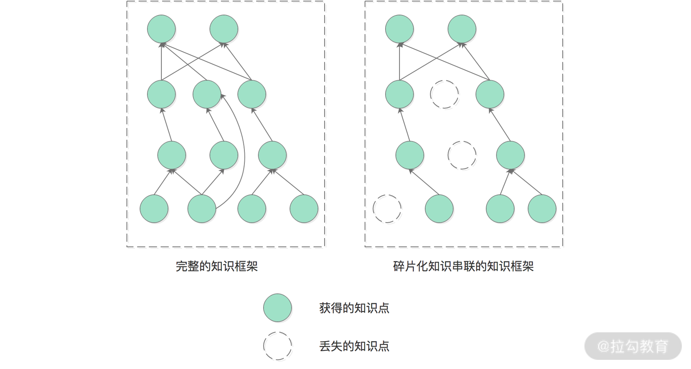
也可能有些同学会结合这些残缺的“武功秘籍”和 MyBatis 源码这个总纲，自己直接去阅读源码，这不仅是一个痛苦的过程，而且很可能会由于对整个架构的“视野”受限，迷失在代码迷宫中。这就需要你本身具备一定的技术功底，而且要对整个开源项目有比较高的熟练度，还要耐得住性子，花费上一些时间，走上一些弯路，才能完全掌握其核心原理。当然也有可能是更糟糕的结果，花了很大力气去阅读源码，关上 IDEA 之后依然“似懂非懂”，然后就放弃了。
除此之外，按照“总纲+残卷”的模式完成了 MyBatis 的源码分析后，你可能还是会缺少下图展示的“架构、方案、模式”这一部分知识，它是在底层原理基础之上的。对于优秀的开发人员来说，不仅要能看到代码细节处的优秀设计，而且还要能站在更高的角度看整体框架的架构之美，这才是分析一个开源框架最重要的两部分收获。
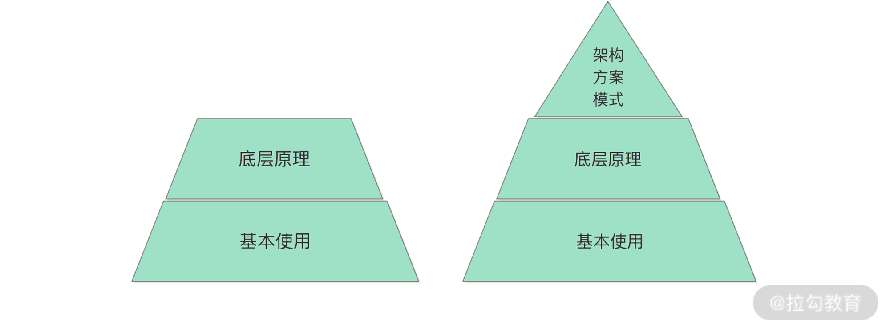
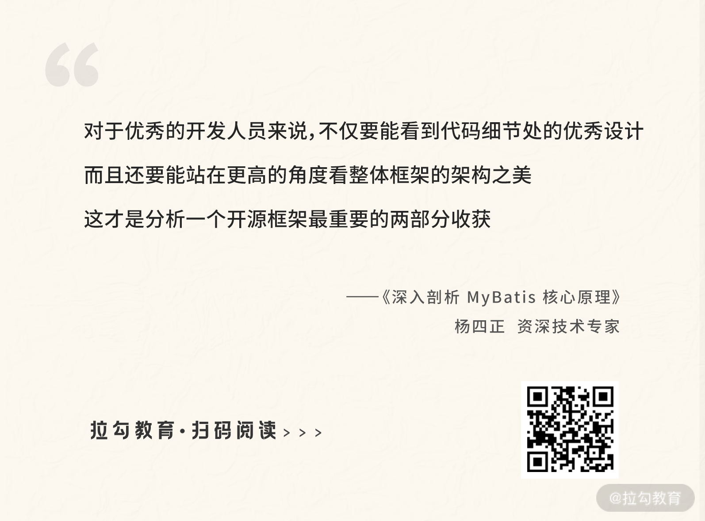
这门课的核心内容是什么
正是因为深刻了解到很多开发人员在学习过程中可能会碰到资料不全、无人指路、架构经验各不相同等一系列问题，再加上我曾经分享过各种开源项目的源码分析资料，并且收到大家的一致好评，所以我决定和“拉勾教育”合作，开设一个系列课程，根据自己丰富的开源项目分析经验，来带你一起分析 MyBatis 源码、拆解 MyBatis 架构，希望帮你理清 MyBatis 的底层原理、深刻理解 MyBatis 的架构设计。
具体来说，我是从以下四个层面来设计这门课程的。
- 从基础知识开始，通过一个订票系统持久层的 Demo 演示，手把手带你快速上手 MyBatis 的基础使用。之后在此基础上，再带你了解 MyBatis 框架的整体三层架构，并介绍 MyBatis 中各个模块的核心功能，为后面的分析打好基础。
- 带你自底向上剖析 MyBatis 的核心源码实现，深入理解 MyBatis 基础模块的工作原理及核心实现，让你不再停留在简单使用 MyBatis 的阶段，做到知其然，也知其所以然。
- 在介绍源码实现的过程中，还会穿插设计模式的相关知识点，带领你了解设计模式的优秀实践方式，让你深刻体会优秀架构设计的美感。这样在你进行架构设计以及代码编写的时候，就可以真正使用这些设计模式，进而让你的代码扩展性更强、可维护性更好。
- 还会带领你了解 MyBatis 周边的扩展，帮助你打开视野，让你不仅能够学到 MyBatis 本身的原理和设计，还会了解到 MyBatis 与 Spring 集成的底层原理、MyBatis 插件扩展的精髓，以及 MyBatis 衍生生态的魅力。
这里需要说明的是，本课程涉及的 MyBatis 源码以及示例代码，我将会在 GitHub 上随课程推进不断更新，链接是：https://github.com/xxxlxy2008/mybatis。
讲师寄语
架构设计的思想不仅仅是参考优秀的设计，还要不断地实践、纠错、复盘和升华，整个过程是一个闭环，希望你能够用好这个学习方法论，这样在学习时才能起到事半功倍的效果，才能让我们这门课程发挥最大作用。
木盛而本固，水清而源丰，我也希望你在学习过程中善于抓住问题关键，灵活打好每一步的基础。另外，最重要的还是要坚持下来。不积跬步，无以至千里；不积小流，无以成江海。只有瞄准方向，锲而不舍地坚持下来，才能扫除一切学习障碍，才能一步一步成长为“全而深的专家”。
欢迎你订阅我的专栏，让我们一起成为更好的自己，我们一起加油！
01 常见持久层框架赏析，到底是什么让你选择 MyBatis？
在绝大多数在线应用场景中，数据是存储在关系型数据库中的，当然，有特殊要求的场景中，我们也会将其他持久化存储（如 ElasticSearch、HBase、MongoDB 等）作为辅助存储。但不可否认的是，关系型数据库凭借几十年的发展、生态积累、众多成功的案例，依然是互联网企业的核心存储。
作为一个 Java 开发者，几乎天天与关系型数据库打交道，在生产环境中常用的关系型数据库产品有 SQL Server、MySQL、Oracle 等。在使用这些数据库产品的时候，基本上是如下思路：
- 在写 Java 代码的过程中，使用的是面向对象的思维去实现业务逻辑；
- 在设计数据库表的时候，考虑的是第一范式、第二范式和第三范式；
- 在操作数据库记录的时候，使用 SQL 语句以及集合思维去考虑表的连接、条件语句、子查询等的编写。
这个时候，就需要一座桥梁将 Java 类（或是其他数据结构）与关系型数据库中的表，以及 Java 对象与表中的数据映射起来，实现 Java 程序与数据库之间的交互。
JDBC（Java DataBase Connectivity）是 Java 程序与关系型数据库交互的统一 API。实际上，JDBC 由两部分 API 构成：第一部分是面向 Java 开发者的 Java API，它是一个统一的、标准的 Java API，独立于各个数据库产品的接口规范；第二部分是面向数据库驱动程序开发者的 API，它是由各个数据库厂家提供的数据库驱动，是第一部分接口规范的底层实现，用于连接具体的数据库产品。
在实际开发 Java 程序时，我们可以通过 JDBC 连接到数据库，并完成各种各样的数据库操作，例如 CRUD 数据、执行 DDL 语句。这里以 JDBC 编程中执行一条 Select 查询语句作为例子，说明 JDBC 操作的核心步骤，具体如下：
- 注册数据库驱动类，指定数据库地址，其中包括 DB 的用户名、密码及其他连接信息；
- 调用 DriverManager.getConnection() 方法创建 Connection 连接到数据库；
- 调用 Connection 的 createStatement() 或 prepareStatement() 方法，创建 Statement 对象，此时会指定 SQL（或是 SQL 语句模板 + SQL 参数）；
- 通过 Statement 对象执行 SQL 语句，得到 ResultSet 对象，也就是查询结果集；
- 遍历 ResultSet，从结果集中读取数据，并将每一行数据库记录转换成一个 JavaBean 对象；
- 关闭 ResultSet 结果集、Statement 对象及数据库 Connection，从而释放这些对象占用的底层资源。
无论是执行查询操作，还是执行其他 DML 操作，1、2、3、4、6 这些步骤都会重复出现。为了简化重复逻辑，提高代码的可维护性，可以将上述重复逻辑封装到一个类似 DBUtils 的工具类中，在使用时只需要调用 DBUtils 工具类中的方法即可。当然，我们也可以使用“反射+配置”的方式，将步骤 5 中关系模型到对象模型的转换进行封装，但是这种封装要做到通用化且兼顾灵活性，就需要一定的编程功底。
为了处理上述代码重复的问题以及后续的维护问题，我们在实践中会进行一系列评估，选择一款适合项目需求、符合人员能力的 ORM（Object Relational Mapping，对象-关系映射）框架来封装 1~6 步的重复性代码，实现对象模型、关系模型之间的转换。这正是ORM 框架的核心功能：根据配置（配置文件或是注解）实现对象模型、关系模型两者之间无感知的映射（如下图）。

对象模型与关系模型的映射
在生产环境中，数据库一般都是比较稀缺的，数据库连接也是整个服务中比较珍贵的资源之一。建立数据库连接涉及鉴权、握手等一系列网络操作，是一个比较耗时的操作，所以我们不能像上述 JDBC 基本操作流程那样直接释放掉数据库连接，否则持久层很容易成为整个系统的性能瓶颈。
Java 程序员一般会使用数据库连接池的方式进行优化，此时就需要引入第三方的连接池实现，当然，也可以自研一个连接池，但是要处理连接活跃数、控制连接的状态等一系列操作还是有一定难度的。另外，有一些查询返回的数据是需要本地缓存的，这样可以提高整个程序的查询性能，这就需要缓存的支持。
如果没有 ORM 框架的存在，这就需要我们 Java 开发者熟悉相关连接池、缓存等组件的 API 并手动编写一些“黏合”代码来完成集成，而且这些代码重复度很高，这显然不是我们希望看到的结果。
很多 ORM 框架都支持集成第三方缓存、第三方数据源等常用组件，并对外提供统一的配置接入方式，这样我们只需要使用简单的配置即可完成第三方组件的集成。当我们需要更换某个第三方组件的时候，只需要引入相关依赖并更新配置即可，这就大大提高了开发效率以及整个系统的可维护性。
 下面我们就简单介绍一下在实践中常用的几种 ORM 框架。
下面我们就简单介绍一下在实践中常用的几种 ORM 框架。
Hibernate
Hibernate 是 Java 生态中著名的 ORM 框架之一。Hibernate 现在也在扩展自己的生态，开始支持多种异构数据的持久化，不仅仅提供 ORM 框架，还提供了 Hibernate Search 来支持全文搜索，提供 validation 来进行数据校验，提供 Hibernate OGM 来支持 NoSQL 解决方案。
这里我们要重点讲解的是 Hibernate ORM 的相关内容，截至 2020 年底，Hibernate ORM 的最新版本是 5.4 版本，6.0 版本还正在开发中。作为一个老牌的 ORM 框架，Hibernate 经受住了 Java EE 企业级应用的考验，一度成为 Java ORM 领域的首选框架。
在使用 Hibernate 的时候，Java 开发可以使用映射文件或是注解定义 Java 语言中的类与数据库中的表之间的各种映射关系，这里使用到的映射文件后缀为“.hbm.xml”。hbm.xml 映射文件将一张数据库表与一个 Java 类进行关联之后，该数据库表中的每一行记录都可以被转换成对应的一个 Java 对象。正是由于 Hibernate 映射的存在，Java 开发只需要使用面向对象思维就可以完成数据库表的设计。
在 Java 这种纯面向对象的语言中，两个 Java 对象之间可能存在一对一、一对多或多对多等复杂关联关系。Hibernate 中的映射文件也必须要能够表达这种复杂关联关系才能够满足我们的需求，同时，还要能够将这种关联关系与数据库中的关联表、外键等一系列关系模型中的概念进行映射，这也就是 ORM 框架中常提到的“关联映射”。
下面我们就来结合示例介绍“一对多”关联关系。例如，一个顾客（Customer）可以创建多个订单（Order），而一个订单（Order）只属于一个顾客（Customer），两者之间存在一对多的关系。在 Java 程序中，可以在 Customer 类中添加一个 List 类型的字段来维护这种一对多的关系；在数据库中，可以在订单表（t_order）中添加一个 customer_id 列作为外键，指向顾客表（t_customer）的主键 id，从而维护这种一对多的关系，如下图所示：

关系模型中的一对多和对象模型中的一对多
在 Hibernate 中，可以通过如下 Customer.hbm.xml 配置文件将这两种关系进行映射：
<hibernate-mapping>
<!-- 这里指定了Customer类与t_customer表之间的映射 -->
<class name="com.mybatis.test.Customer" table="t_customer">
<!-- Customer类中的id属性与t_customer表中主键id之间的映射 -->
<id name="id" column="id"/>
<!-- Customer类中的name属性与t_customer表中name字段之间的映射 -->
<property name="name" column="name"/>
<!-- Customer指定了Order与Customer 一对多的映射关系 -->
<set name="orders" cascade="save,update,delete">
<key column="customer_id"/>
<one-to-many class="com.mybatis.test.Order"/>
</set>
</class>
</hibernate-mapping>
如果是双向关联，则在 Java 代码中，可以直接在 Order 类中添加 Customer 类型的字段指向关联的 Customer 对象，并在相应的 Order.hbm.xml 配置文件中进行如下配置：
<hibernate-mapping>
<!-- 这里指定了Order类与t_order表之间的映射 -->
<class name="com.mybatis.test.Order" table="t_order">
<!-- Order类中的id属性与t_order表中主键id之间的映射 -->
<id name="id" column="id"/>
<!-- Order类中的address属性与t_order表中address列之间的映射 -->
<property name="address" column="address"/>
<!-- Order类中的tele属性与t_order表中tele列之间的映射 -->
<property name="tele" column="tele"/>
<!-- Order类中customer属性与t_order表中customer_id之间的映射，
同时也指定Order与Customer之间的多对一的关系 -->
<many-to-one name="customer" column="customer_id"></many-to-one>
</class>
</hibernate-mapping>
一对一、多对多等关联映射在 Hibernate 映射文件中，都定义了相应的 XML 标签，原理与“一对多”基本一致，只是使用方式和场景略有不同，这里就不再展开介绍，你若感兴趣的话可以参考 Hibernate 的官方文档进行学习。
除了能够完成面向对象模型与数据库中关系模型的映射，Hibernate 还可以帮助我们屏蔽不同数据库产品中 SQL 语句的差异。
我们知道，虽然目前有 SQL 标准，但是不同的关系型数据库产品对 SQL 标准的支持有细微不同，这就会出现一些非常尴尬的情况，例如，一条 SQL 语句在 MySQL 上可以正常执行，而在 Oracle 数据库上执行会报错。
Hibernate封装了数据库层面的全部操作，Java 程序员不再需要直接编写 SQL 语句，只需要使用 Hibernate 提供的 API 即可完成数据库操作。
例如，Hibernate 为用户提供的 Criteria 是一套灵活的、可扩展的数据操纵 API，最重要的是 Criteria 是一套面向对象的 API，使用它操作数据库的时候，Java 开发者只需要关注 Criteria 这套 API 以及返回的 Java 对象，不需要考虑数据库底层如何实现、SQL 语句如何编写，等等。
下面是 Criteria API 的一个简单示例：
// 创建Criteria对象，用来查询Customer对象
Criteria criteria = session.createCriteria(Customer.class, "u");
//查询出id大于0，且名字中以yang开头的顾客数据
List<Customer> list = criteria.add(Restrictions.like("name","yang%"))
.add(Restrictions.gt("id", 0))
.list();
除了 Criteria API 之外，Hibernate 还提供了一套面向对象的查询语言—— HQL（Hibernate Query Language）。从语句的结构上来看，HQL 语句与 SQL 语句十分类似，但这二者也是有区别的：HQL 是面向对象的查询语言，而 SQL 是面向关系型的查询语言。
在实现复杂数据库操作的时候，我们可以使用 HQL 这种面向对象的查询语句来实现，Hibernate 的 HQL 引擎会根据底层使用的数据库产品，将 HQL 语句转换成合法的 SQL 语句。
Hibernate 通过其简洁的 API 以及统一的 HQL 语句，帮助上层程序屏蔽掉底层数据库的差异，增强了程序的可移植性。
另外，Hibernate 还具有如下的一些其他优点：
- Hibernate API 本身没有侵入性，也就是说，业务逻辑感知不到 Hibernate 的存在，也不需要继承任何 Hibernate 包中的接口；
- Hibernate 默认提供一级缓存、二级缓存（一级缓存默认开启，二级缓存需要配置开启），这两级缓存可以降低数据库的查询压力，提高服务的性能；
- Hibernate 提供了延迟加载的功能，可以避免无效查询；
- Hibernate 还提供了由对象模型自动生成数据库表的逆向操作。
但需要注意的是，Hibernate 并不是一颗“银弹”，我们无法在面向对象模型中找到数据库中所有概念的映射，例如，索引、函数、存储过程等。在享受 Hibernate 带来便捷的同时，我们还需要忍受它的一些缺点。例如，索引对提升数据库查询性能有很大帮助，我们建立索引并适当优化 SQL 语句，就会让数据库使用合适的索引提高整个查询的速度。但是，我们很难修改 Hibernate 生成的 SQL 语句。为什么这么说呢？因为在一些场景中，数据库设计非常复杂，表与表之间的关系错综复杂，Hibernate 引擎生成的 SQL 语句会非常难以理解，要让生成的 SQL 语句使用正确的索引更是难上加难，这就很容易生成慢查询 SQL。
另外，在一些大数据量、高并发、低延迟的场景中，Hibernate 在性能方面带来的损失就会逐渐显现出来。
当然，从其他角度来看 Hibernate，还会有一些其他的问题，这里就不再展开介绍，你若感兴趣的话可以自行去查阅一些资料进行深入了解。
Spring Data JPA
在开始介绍 Spring Data JPA 之前，我们先要来介绍一下 JPA（Java Persistence API）规范。
JPA 是在 JDK 5.0 后提出的 Java 持久化规范（JSR 338）。JPA 规范本身是为了整合市面上已有的 ORM 框架，结束 Hibernate、EclipseLink、JDO 等 ORM 框架各自为战的割裂局面，简化 Java 持久层开发。
JPA 规范从现有的 ORM 框架中借鉴了很多优点，例如，Gavin King 作为 Hibernate 创始人，同时也参与了 JPA 规范的编写，所以在 JPA 规范中可以看到很多与 Hibernate 类似的概念和设计。
既然 JPA 是一个持久化规范，没有提供具体持久化实现，那谁来提供实现呢？答案是市面上的 ORM 框架，例如，Hibernate、EclipseLink 等都提供了符合 JPA 规范的具体实现，如下图所示：

JPA 生态图
JPA 有三个核心部分：ORM 映射元数据、操作实体对象 API 和面向对象的查询语言（JPQL）。这与 Hibernate 的核心功能基本类似，就不再重复讲述。
Java 开发者应该都知道“Spring 全家桶”的强大，Spring 目前已经成为事实上的标准了，很少有企业会完全离开 Spring 来开发 Java 程序。现在的 Spring 已经不仅仅是最早的 IoC 容器了，而是整个 Spring 生态，例如，Spring Cloud、Spring Boot、Spring Security 等，其中就包含了 Spring Data。
Spring Data 是 Spring 在持久化方面做的一系列扩展和整合，下图就展示了 Spring Data 中的子项目：
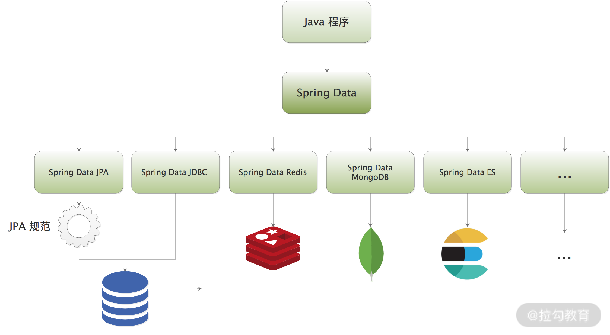
Spring Data 生态图
Spring Data 中的每个子项目都对应一个持久化存储，通过不断的整合接入各种持久化存储的能力，Spring 的生态又向前迈进了一大步，其中最常被大家用到的应该就是 Spring Data JPA。
Spring Data JPA 是符合 JPA 规范的一个 Repository 层的实现，其所在的位置如下图所示：
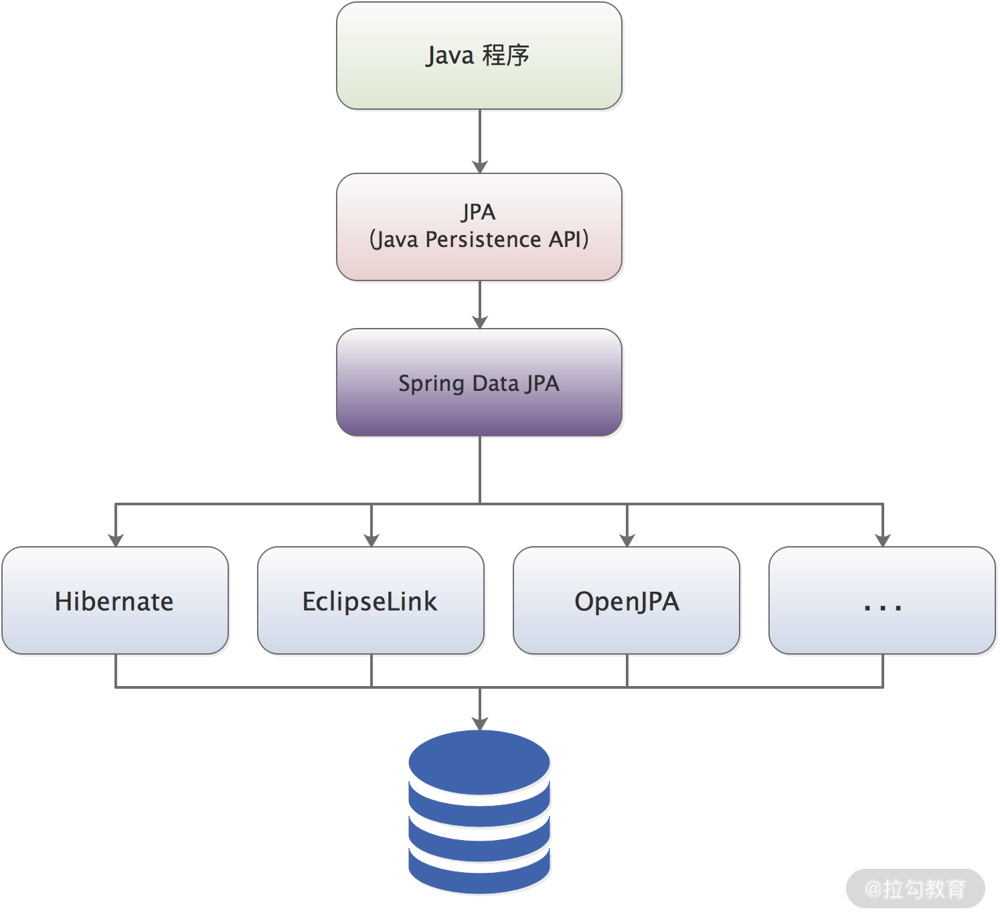
Spring Data JPA 生态图
虽然市面上的绝大多数 ORM 框架都实现了 JPA 规范，但是它们在 JPA 基础上也有各自的发展和修改，这样导致我们在使用 JPA 的时候，依旧无法无缝切换底层的 ORM 框架实现。而使用 Spring Data JPA 时，由于Spring Data JPA 帮助我们抹平了各个 ORM 框架的差异，从而可以让我们的上层业务无缝地切换 ORM 实现框架。
MyBatis
在这一讲的最后，结合上述两个 ORM 框架的知识点，我们再来介绍一下本课程的主角—— MyBatis。
Apache 基金会中的 iBatis 项目是 MyBatis 的前身。iBatis 项目由于各种原因，在 Apache 基金会并没有得到很好的发展，最终于 2010 年脱离 Apache，并更名为 MyBatis。三年后，也就是 2013 年，MyBatis 将源代码迁移到了 GitHub。
MyBatis 中一个重要的功能就是可以帮助 Java 开发封装重复性的 JDBC 代码，这与前文分析的 Spring Data JPA 、Hibernate 等 ORM 框架一样。MyBatis 封装重复性代码的方式是通过 Mapper 映射配置文件以及相关注解，将 ResultSet 结果映射为 Java 对象，在具体的映射规则中可以嵌套其他映射规则和必要的子查询，这样就可以轻松实现复杂映射的逻辑，当然，也能够实现一对一、一对多、多对多关系映射以及相应的双向关系映射。
很多人会将 Hibernate 和 MyBatis 做比较，认为 Hibernate 是全自动 ORM 框架，而 MyBatis 只是半自动的 ORM 框架或是一个 SQL 模板引擎。其实，这些比较都无法完全说明一个框架比另一个框架先进，关键还是看应用场景。
MyBatis 相较于 Hibernate 和各类 JPA 实现框架更加灵活、更加轻量级、更加可控。
- 我们可以在 MyBatis 的 Mapper 映射文件中，直接编写原生的 SQL 语句，应用底层数据库产品的方言，这就给了我们直接优化 SQL 语句的机会；
- 我们还可以按照数据库的使用规则，让原生 SQL 语句选择我们期望的索引，从而保证服务的性能，这就特别适合大数据量、高并发等需要将 SQL 优化到极致的场景；
- 在编写原生 SQL 语句时，我们也能够更加方便地控制结果集中的列，而不是查询所有列并映射对象后返回，这在列比较多的时候也能起到一定的优化效果。（当然，Hibernate 也能实现这种效果，需要在实体类添加对应的构造方法。）
在实际业务中，对同一数据集的查询条件可能是动态变化的，如果你有使用 JDBC 或其他类似框架的经历应该能体会到，拼接 SQL 语句字符串是一件非常麻烦的事情，尤其是条件复杂的场景中，拼接过程要特别小心，要确保在合适的位置添加“where”“and”“in”等 SQL 语句的关键字以及空格、逗号、等号等分隔符，而且这个拼接过程非常枯燥、没有技术含量，可能经过反复调试才能得到一个可执行的 SQL 语句。
MyBatis 提供了强大的动态 SQL 功能来帮助我们开发者摆脱这种重复劳动，我们只需要在映射配置文件中编写好动态 SQL 语句，MyBatis 就可以根据执行时传入的实际参数值拼凑出完整的、可执行的 SQL 语句。
总结
在这一讲，我们重点介绍了 3 种常见的 ORM 持久化框架，那在实际工作中我们又应该如何选择合适的持久层框架呢？
- 从性能角度来看，Hibernate、Spring Data JPA 在对 SQL 语句的掌控、SQL 手工调优、多表连接查询等方面，不及 MyBatis 直接使用原生 SQL 语句方便、高效；
- 从可移植性角度来看，Hibernate 帮助我们屏蔽了底层数据库方言，Spring Data JPA 帮我们屏蔽了 ORM 的差异，而 MyBatis 因为直接编写原生 SQL，会与具体的数据库完全绑定（但实践中很少有项目会来回切换底层使用的数据库产品或 ORM 框架，所以这点并不是特别重要）；
- 从开发效率角度来看，Hibernate、Spring Data JPA 处理中小型项目的效率会略高于 MyBatis（这主要还是看需求和开发者技术栈）。
除了这三方面之外，还有很多方面需要在技术选型中考虑进去，例如，预估的 QPS、P99 等性能指标，等等。在技术选型时，我们也要统筹考虑更多方面，才能选出最合适自己的方案。
那除了上面提到的三个方面，在技术选型中还要考虑哪些其他内容呢？欢迎你在评论区留言，与我分享和交流。
02 订单系统持久层示例分析，20 分钟带你快速上手 MyBatis
在开始深入分析 MyBatis 核心架构以及具体代码实现之前，我先通过一个示例来帮助你快速了解 MyBatis 中的常见概念以及其基础使用方法。
这里我会以一个简易订单系统的持久化层为例进行讲解，整体的讲解逻辑是这样的：
- 首先介绍订单系统 domain 层的设计，了解如何将业务概念抽象成 Java 类；
- 接下来介绍数据库表的设计，同时说明关系型的数据库表与面向对象模型的类之间的映射关系；
- 随后介绍订单系统的 DAO 接口层，DAO 接口层是操作数据的最小化单元，也是读写数据库的地基；
- 最后再简单提供了一个 Service 层和测试用例，用来检测前面的代码实现是否能正常工作。
现在几乎所有的 Java 工程都会使用 Maven 来管理 jar 包依赖，所以我们首先创建一个 Maven 项目，然后在 pom.xml 中添加如下 jar 依赖，这些 jar 包都是订单示例系统必不可少的依赖：
<dependencies>
<!--MyBatis依赖-->
<dependency>
<groupId>org.mybatis</groupId>
<artifactId>mybatis</artifactId>
<version>3.5.6</version>
</dependency>
<!--MySQL JDBC依赖，用来连接数据库-->
<dependency>
<groupId>mysql</groupId>
<artifactId>mysql-connector-java</artifactId>
<version>8.0.15</version>
</dependency>
<!--Guava依赖-->
<dependency>
<groupId>com.google.guava</groupId>
<artifactId>guava</artifactId>
<version>19.0</version>
</dependency>
<!--Junit依赖，用来执行单元测试-->
<dependency>
<groupId>junit</groupId>
<artifactId>junit</artifactId>
<version>4.10</version>
<scope>test</scope>
</dependency>
</dependencies>
domain 设计
在业务系统的开发中，domain 层的主要目的就是将业务上的概念抽象成面向对象模型中的类，这些类是业务系统运作的基础。在我们的简易订单系统中，有用户、地址、订单、订单条目和商品这五个核心的概念。
订单系统中 domain 层的设计，如下图所示：

简易订单系统 domain 层设计图
在上图中，Customer 类抽象的是电商平台中的用户，其中记录了用户的唯一标识（id 字段）、姓名（name 字段）以及手机号（phone 字段），另外，还记录了当前用户添加的全部送货地址。
Address 类抽象了用户的送货地址，其中记录了街道（street 字段）、城市（city 字段）、国家（country 字段）等信息，还维护了一个 Customer 类型的引用，指向所属的用户。
Order 类抽象的是电商平台中的订单，记录了订单的唯一标识（id 字段）、订单创建时间（createTime 字段），其中通过 customer 字段（Customer 类型）指向了订单关联的用户，通过 deliveryAddress 字段（Address 类型）指向了该订单的送货地址。另外，还可以通过 orderItems 集合（List 集合）记录订单内的具体条目。
OrderItem 类抽象了订单中的购物条目，记录了购物条目的唯一标识（id 字段），其中 product 字段（Product 类型）指向了该购物条目中具体购买的商品，amount 字段记录购买商品的个数，price 字段则是该 OrderItem 的总金额（即 Product.price * amount），Order 订单的总价格（totalPrice 字段）则是由其中全部 OrderItem 的 price 累加得到的。注意，这里的 OrderItem 总金额以及 Order 总金额，都不会持久化到数据，而是实时计算得到的。
Product 类抽象了电商平台中商品的概念，其中记录了商品的唯一标识（id 字段）、商品名称（name 字段）、商品描述（description 字段）以及商品价格（price 字段）。
结合前面的介绍以及类图分析，你可以看到：
- 通过 Customer.addresses 以及 Address.customer 这两个属性，维护了 Customer 与 Address 之间一对多关系；
- 通过 Order.customer 属性，维护了 Customer 与 Order 之间的一对多关系；
- 通过 Order.deliveryAddress 属性，维护了 Order 与 Address 之间的一对一关系；
- 通过 OrderItem.orderId 属性，维护了 Order 与 OrderItem 之间的一对多关系；
- 通过 OrderItem.product 属性，维护了 OrderItem 与 Product 之间的一对一关系。
数据库表设计
介绍完 domain 层的设计，下面我们再来看对应的数据库表设计，如下图所示：

简易订单系统数据库表设计
与前面的domain 层设计图相比，其中的各项是可以一一对应起来的。
- t_customer 表对应 Customer 类，t_product 表对应 Product 类。
- t_address 表对应 Address 类，其中 customer_id 列作为外键指向 t_customer.id，实现了 Customer 与 Address 的一对多关系。
- t_order_item 表对应 OrderItem 类，其中 product_id 列作为外键指向 t_product.id，实现了 OrderItem 与 Product 的一对一关系；order_id 列作为外键指向 t_order.id，实现了 Order 与 OrderItem 的一对多关系。
- t_order 表对应 Order 类，其中的 customer_id 列指向 t_customer.id，实现了 Customer 与 Order 的一对多关系；address_id 列指向 t_address.id，实现了 Order 与 Address 的一对一关系。
上述表中的其他字段与 domain 层中对应类中的字段也是一一对应，这里就不再重复了。
DAO 层
DAO 层主要是负责与持久化存储进行交互，完成数据持久化的相关工作，这里我们就介绍一下 如何使用 MyBatis 来开发 Java 应用中的持久层。
在 DAO 层中，需要先根据需求确定 DAO 层的基本能力，一般情况下，是针对每个 domain 类提供最基础的 CRUD 操作，之后在 DAO 层之上的 Service 层，就可以直接使用 DAO 层的接口，而无须关心底层使用的是数据库还是其他存储，也无须关心读写数据使用的是 SQL 语句还是其他查询语句，这就能够实现业务逻辑和存储的解耦。
1. DAO 接口与实现
下面，我们开始介绍简易订单系统中 DAO 接口的内容。
首先是 CustomerMapper 接口，其定义如下：
public interface CustomerMapper {
// 根据用户Id查询Customer(不查询Address)
Customer find(long id);
// 根据用户Id查询Customer(同时查询Address)
Customer findWithAddress(long id);
// 根据orderId查询Customer
Customer findByOrderId(long orderId);
// 持久化Customer对象
int save(Customer customer);
}
定义完 CustomerMapper 接口之后，我们无须真正实现 CustomerMapper 接口，而是在 /resources/mapper 目录下配置相应的配置文件—— CustomerMapper.xml，在该文件中定义需要执行的 SQL 语句以及查询结果集的映射规则。MyBatis 底层会生成一个实现了 CustomerMapper 接口的代理对象来执行 CustomerMapper.xml 配置文件中的 SQL 语句，实现 DAO 层的功能（MyBatis 如何生成代理对象等底层原理在本课程后面会深入分析，这里就先介绍该示例系统的相关内容）。
CustomerMapper.xml 的具体定义如下：
<mapper namespace="org.example.dao.CustomerMapper">
<!-- 定义映射规则 -->
<resultMap id="customerSimpleMap" type="Customer">
<!-- 主键映射 -->
<id property="id" column="id"/>
<!-- 属性映射 -->
<result property="name" column="name"/>
<result property="phone" column="phone"/>
</resultMap>
<!-- 定义映射规则 -->
<resultMap id="customerMap" type="Customer">
<!-- 主键映射 -->
<id property="id" column="id"/>
<!-- 属性映射 -->
<result property="name" column="name"/>
<result property="phone" column="phone"/>
<!-- 映射addresses集合，<collection>标签用于映射集合类的属性，实现一对多的关联关系 -->
<collection property="addresses" javaType="list" ofType="Address">
<id property="id" column="address_id"/>
<result property="street" column="street"/>
<result property="city" column="city"/>
<result property="country" column="country"/>
</collection>
</resultMap>
<!-- 定义select语句，CustomerMapper接口中的find()方法会执行该SQL，
查询结果通过customerSimpleMap这个映射生成Customer对象-->
<select id="find" resultMap="customerSimpleMap">
SELECT * FROM t_customer WHERE id = #{id:INTEGER}
</select>
<!-- 定义select语句，CustomerMapper接口中的findWithAddress()方法会执行该SQL，
查询结果通过customerMap这个映射生成Customer对象-->
<select id="findWithAddress" resultMap="customerMap">
SELECT c.*,a.id as address_id, a.* FROM t_customer as c join t_address as a
on c.id = a.customer_id
WHERE c.id = #{id:INTEGER}
</select>
<!-- CustomerMapper接口中的findByOrderId()方法会执行该SQL，
查询结果通过customerSimpleMap这个映射生成Customer对象-->
<select id="findByOrderId" resultMap="customerSimpleMap">
SELECT * FROM t_customer as c join t_order as t
on c.id = t.customer_id
WHERE t.customer_id = #{id:INTEGER}
</select>
<!-- 定义insert语句，CustomerMapper接口中的save()方法会执行该SQL，
数据库生成的自增id会自动填充到传入的Customer对象的id字段中-->
<insert id="save" keyProperty="id" useGeneratedKeys="true">
insert into t_customer (id, name, phone)
values (#{id},#{name},#{phone})
</insert>
</mapper>
接下来，我们看一下 AddressMapper 接口的定义，它主要是针对 Address 对象的 CRUD：
public interface AddressMapper {
// 根据id查询Address对象
Address find(long id);
// 查询一个用户的全部地址信息
List<Address> findAll(long customerId);
// 查询指定订单的送货地址
Address findByOrderId(long orderId);
// 存储Address对象，同时会记录关联的Customer
int save(@Param("address") Address address,
@Param("customerId") long customerId);
}
AddressMapper 接口对应的 AddressMapper.xml 配置文件中，同样定义了每个方法要执行的 SQL 语句以及查询结果与 Address 对象之间的映射关系，具体定义如下：
<mapper namespace="org.example.dao.AddressMapper">
<!-- find()、findAll()方法对应的<select>标签以及<resultMap>映射比较简单，这里不再展示，感兴趣的同学可以参考代码进行学习 -->
<!-- 定义select语句，AddressMapper接口中的findByOrderId()方法会执行该SQL，
查询结果通过addressMap这个映射生成Address对象-->
<select id="findByOrderId" resultMap="addressMap">
SELECT a.* FROM t_address as a join t_order as o
on a.id = o.address_id
WHERE o.address_id = #{id}
</select>
<!-- 定义insert语句，AddressMapper接口中的save()方法会执行该SQL，
数据库生成的自增id会自动填充到传入的Address对象的id字段中-->
<insert id="save" keyProperty="address.id" useGeneratedKeys="true">
insert into t_address (street, city, country, customer_id)
values (#{address.street},#{address.city},#{address.country},#{customerId})
</insert>
</mapper>
下面来看 ProductMapper 接口，其中除了根据 id 查询 Product 之外，还可以通过 name 进行模糊查询，具体定义如下：
public interface ProductMapper {
// 根据id查询商品信息
Product find(long id);
// 根据名称搜索商品信息
List<Product> findByName(String name);
// 保存商品信息
long save(Product product);
}
ProductMapper 接口对应的 ProductMapper.xml 配置文件中，定义了 Product 相关的 SQL 语句以及查询结果与 Product 对象之间的映射关系。ProductMapper.xml 配置文件中定义的 SQL 语句以及 ResultMap 映射比较简单，这里不再展示，你若感兴趣的话可以参考源码进行学习。
紧接着，我们再来看 OrderItemMapper 接口的定义，其中定义了 OrderItem 对象的操作，如下所示：
public interface OrderItemMapper {
// 根据id查询OrderItem对象
OrderItem find(long id);
// 查询指定的订单中的全部OrderItem
List<OrderItem> findByOrderId(long orderId);
// 保存一个OrderItem信息
long save(@Param("orderItem")OrderItem orderItem,
@Param("orderId") long orderId);
}
与之对应的 OrderItemMapper.xml 配置文件的定义如下：
<mapper namespace="org.example.dao.OrderItemMapper">
<!-- 定义t_order_item与OrderItem对象之间的映射关系-->
<resultMap id="orderItemtMap" type="OrderItem">
<id property="id" column="id"/>
<result property="amount" column="amount"/>
<result property="orderId" column="order_id"/>
<!--映射OrderItem关联的Product对象，<association>标签用于实现一对一的关联关系-->
<association property="product" javaType="Product">
<id property="id" column="product_id"/>
<result property="name" column="name"/>
<result property="description" column="description"/>
<result property="price" column="price"/>
</association>
</resultMap>
<!-- 定义select语句，OrderItemMapper接口中的find()方法会执行该SQL，
查询结果通过orderItemtMap这个映射生成OrderItem对象-->
<select id="find" resultMap="orderItemtMap">
SELECT i.*,p.*,p.id as product_id FROM t_order_item as i join t_product as p
on i.product_id = p.id WHERE id = #{id:INTEGER}
</select>
<!-- 定义select语句，OrderItemMapper接口中的findAll()方法会执行该SQL，
查询结果通过orderItemtMap这个映射生成OrderItem对象-->
<select id="findByOrderId" resultMap="orderItemtMap">
SELECT i.*,p.* FROM t_order_item as i join t_product as p
on i.product_id = p.id WHERE i.order_id = #{order_id:INTEGER}
</select>
<!-- 定义insert语句，OrderItemMapper接口中的save()方法会执行该SQL，
数据库生成的自增id会自动填充到传入的OrderItem对象的id字段中-->
<insert id="save" keyProperty="orderItem.id" useGeneratedKeys="true">
insert into t_order_item (amount, product_id, order_id)
values (#{orderItem.amount}, #{orderItem.product.id}, #{orderId})
</insert>
</mapper>
最后来看 OrderMapper 接口的定义，其中定义了查询、存储 Order 对象的相关方法，具体如下所示：
public interface OrderMapper {
// 根据订单Id查询
Order find(long id);
// 查询一个用户一段时间段内的订单列表
List<Order> findByCustomerId(long customerId, long startTime, long endTime);
// 保存一个订单
long save(Order order);
}
与 OrderMapper 接口对应的 SQL 语句定义在 OrderMapper.xml 配置文件中，如下所示：
<mapper namespace="org.example.dao.OrderMapper">
<!-- 定义t_order表查询记录与Order对象之间映射 -->
<resultMap id="orderMap" type="Order">
<!-- 主键映射 -->
<id property="id" column="id"/>
<!-- 属性映射 -->
<result property="createTime" column="create_time"/>
<!-- 映射customer字段 -->
<association property="customer" javaType="Customer">
<id property="id" column="customer_id"/>
</association>
<!-- 映射deliveryAddress字段 -->
<association property="deliveryAddress" javaType="Address">
<id property="id" column="address_id"/>
</association>
<!-- 这里并没有映射orderItems集合-->
</resultMap>
<!-- 定义select语句，OrderMapper接口中的find()方法会执行该SQL，
查询结果通过orderMap这个映射生成Order对象-->
<select id="find" resultMap="orderMap">
SELECT * FROM t_order WHERE id = #{id:INTEGER}
</select>
<!-- 定义select语句，OrderMapper接口中的findByCustomerId()方法会执行该SQL，
查询结果通过orderMap这个映射生成Order对象。注意这里大于号、小于号在XML中的写法-->
<select id="findByCustomerId" resultMap="orderMap">
SELECT * FROM t_order WHERE customer_id = #{id}
and create_date_time <![CDATA[ >= ]]> #{startTime}
and create_date_time <![CDATA[ <= ]]> #{endTime}
</select>
<!-- 定义insert语句，OrderMapper接口中的save()方法会执行该SQL，
数据库生成的自增id会自动填充到传入的Order对象的id字段中-->
<insert id="save" keyProperty="id" useGeneratedKeys="true">
insert into t_order (customer_id, address_id, create_time)
values (#{customer.id}, #{deliveryAddress.id}, #{createTime})
</insert>
</mapper>
2. DaoUtils 工具类
在 DAO 层中，除了定义上述接口和相关实现之外，还需要管理数据库连接和事务。在订单系统中，我们使用 DaoUtils 工具类来完成 MyBatis 中 SqlSession 以及事务的相关操作，这个实现非常简单，在实践中，一般会使用专门的事务管理器来管理事务。
下面是 DaoUtils 工具类的核心实现：
public class DaoUtils {
private static SqlSessionFactory factory;
static { // 在静态代码块中直接读取MyBatis的mybatis-config.xml配置文件
String resource = "mybatis-config.xml";
InputStream inputStream = null;
try {
inputStream = Resources.getResourceAsStream(resource);
} catch (IOException e) {
System.err.println("read mybatis-config.xml fail");
e.printStackTrace();
System.exit(1);
}
// 加载完mybatis-config.xml配置文件之后，会根据其中的配置信息创建SqlSessionFactory对象
factory = new SqlSessionFactoryBuilder()
.build(inputStream);
}
public static <R> R execute(Function<SqlSession, R> function) {
// 创建SqlSession
SqlSession session = factory.openSession();
try {
R apply = function.apply(session);
// 提交事务
session.commit();
return apply;
} catch (Throwable t) {
// 出现异常的时候，回滚事务
session.rollback();
System.out.println("execute error");
throw t;
} finally {
// 关闭SqlSession
session.close();
}
}
}
在 DaoUtils 中加载的 mybatis-config.xml 配置文件位于 /resource 目录下，是 MyBatis 框架配置的入口，其中配置了要连接的数据库地址、Mapper.xml 文件的位置以及一些自定义变量和别名，具体定义如下所示：
<configuration>
<properties> <!-- 定义属性值 -->
<property name="username" value="root"/>
<property name="id" value="xxx"/>
</properties>
<settings><!-- 全局配置信息 -->
<setting name="cacheEnabled" value="true"/>
</settings>
<typeAliases>
<!-- 配置别名信息，在映射配置文件中可以直接使用Customer这个别名
代替org.example.domain.Customer这个类 -->
<typeAlias type="org.example.domain.Customer" alias="Customer"/>
<typeAlias type="org.example.domain.Address" alias="Address"/>
<typeAlias type="org.example.domain.Order" alias="Order"/>
<typeAlias type="org.example.domain.OrderItem" alias="OrderItem"/>
<typeAlias type="org.example.domain.Product" alias="Product"/>
</typeAliases>
<environments default="development">
<environment id="development">
<!-- 配置事务管理器的类型 -->
<transactionManager type="JDBC"/>
<!-- 配置数据源的类型，以及数据库连接的相关信息 -->
<dataSource type="POOLED">
<property name="driver" value="com.mysql.jdbc.Driver"/>
<property name="url" value="jdbc:mysql://localhost:3306/test"/>
<property name="username" value="root"/>
<property name="password" value="xxx"/>
</dataSource>
</environment>
</environments>
<!-- 配置映射配置文件的位置 -->
<mappers>
<mapper resource="mapper/CustomerMapper.xml"/>
<mapper resource="mapper/AddressMapper.xml"/>
<mapper resource="mapper/OrderItemMapper.xml"/>
<mapper resource="mapper/OrderMapper.xml"/>
<mapper resource="mapper/ProductMapper.xml"/>
</mappers>
</configuration>
Service 层
介绍完 DAO 层之后，我们接下来再来聊聊 Service 层。
Service 层的核心职责是实现业务逻辑。在 Service 层实现的业务逻辑一般要依赖到前面介绍的 DAO 层的能力，将业务逻辑封装到 Service 层可以更方便地复用业务逻辑实现，代码会显得非常简洁，系统也会更加稳定。
我们先来看 CustomerService 实现，其中提供了注册用户、添加送货地址、查询用户基本信息、查询用户全部送货地址等基本功能，具体实现如下所示：
public class CustomerService {
// 创建一个新用户
public long register(String name, String phone) {
// 检查传入的name参数以及phone参数是否合法
Preconditions.checkArgument(!Strings.isNullOrEmpty(name), "name is empty");
Preconditions.checkArgument(!Strings.isNullOrEmpty(phone), "phone is empty");
// 我们还可以完成其他业务逻辑，例如检查用户名是否重复、手机号是否重复等，这里不再展示
return DaoUtils.execute(sqlSession -> {
// 创建Customer对象，并通过CustomerMapper.save()方法完成持久化
CustomerMapper mapper = sqlSession.getMapper(CustomerMapper.class);
Customer customer = new Customer();
customer.setName(name);
customer.setPhone(phone);
int affected = mapper.save(customer);
if (affected <= 0) {
throw new RuntimeException("Save Customer fail...");
}
return customer.getId();
});
}
// 用户添加一个新的送货地址
public long addAddress(long customerId, String street, String city, String country) {
// 检查传入参数是否合法
Preconditions.checkArgument(customerId > 0, "customerId is empty");
Preconditions.checkArgument(!Strings.isNullOrEmpty(street), "street is empty");
Preconditions.checkArgument(!Strings.isNullOrEmpty(city), "city is empty");
Preconditions.checkArgument(!Strings.isNullOrEmpty(country), "country is empty");
// 我们还可以完成其他业务逻辑，例如检查该地址是否超出了送货范围等，这里不再展示
return DaoUtils.execute(sqlSession -> {
// 创建Address对象并调用AddressMapper.save()方法完成持久化
AddressMapper mapper = sqlSession.getMapper(AddressMapper.class);
Address address = new Address();
address.setStreet(street);
address.setCity(city);
address.setCountry(city);
int affected = mapper.save(address, customerId);
if (affected <= 0) {
throw new RuntimeException("Save Customer fail...");
}
return address.getId();
});
}
public List<Address> findAllAddress(long customerId) {
// 检查用户id参数是否合法
Preconditions.checkArgument(customerId > 0, "id error");
return DaoUtils.execute(sqlSession -> {
// 执行AddressMapper.find()方法完成查询
AddressMapper mapper = sqlSession.getMapper(AddressMapper.class);
return mapper.findAll(customerId);
});
}
public Customer find(long id) {
// 检查用户id参数是否合法
Preconditions.checkArgument(id > 0, "id error");
return DaoUtils.execute(sqlSession -> {
// 执行CustomerMapper.find()方法完成查询
CustomerMapper mapper = sqlSession.getMapper(CustomerMapper.class);
return mapper.find(id);
});
}
public Customer findWithAddress(long id) {
// 检查用户id参数是否合法
Preconditions.checkArgument(id > 0, "id error");
return DaoUtils.execute(sqlSession -> {
// 执行CustomerMapper.findWithAddress()方法完成查询
CustomerMapper mapper = sqlSession.getMapper(CustomerMapper.class);
return mapper.findWithAddress(id);
});
}
}
接下来看 ProductService 实现，其中提供了新增商品、根据 id 精确查询商品以及根据名称模糊查询商品的基础功能，具体实现如下：
public class ProductService {
// 创建商品
public long createProduct(Product product) {
// 检查product中的各个字段是否合法
Preconditions.checkArgument(product != null, "product is null");
Preconditions.checkArgument(!Strings.isNullOrEmpty(product.getName()), "product name is empty");
Preconditions.checkArgument(!Strings.isNullOrEmpty(product.getDescription()), "description name is empty");
Preconditions.checkArgument(product.getPrice().compareTo(new BigDecimal(0)) > 0,
"price<=0 error");
return DaoUtils.execute(sqlSession -> {
// 通过ProductMapper中的save()方法完成持久化
ProductMapper productMapper = sqlSession.getMapper(ProductMapper.class);
return productMapper.save(product);
});
}
public Product find(long productId) {
// 检查productId参数是否合法
Preconditions.checkArgument(productId > 0, "product id error");
return DaoUtils.execute(sqlSession -> {
// 通过ProductMapper中的find()方法精确查询Product
ProductMapper productMapper = sqlSession.getMapper(ProductMapper.class);
return productMapper.find(productId);
});
}
public List<Product> find(String productName) {
// 检查productName参数是否合法
Preconditions.checkArgument(Strings.isNullOrEmpty(productName), "product id error");
return DaoUtils.execute(sqlSession -> {
// 根据productName模糊查询Product
ProductMapper productMapper = sqlSession.getMapper(ProductMapper.class);
return productMapper.findByName(productName);
});
}
}
最后，再来看 OrderService 对 Order 订单业务的封装，其中封装了创建订单和查询订单的逻辑，另外，还提供了实时计算订单总价的功能，具体实现如下所示：
public class OrderService {
// 创建订单
public long createOrder(Order order) {
Preconditions.checkArgument(order != null, "order is null");
Preconditions.checkArgument(order.getOrderItems() != null
&& order.getOrderItems().size() > 0,
"orderItems is empty");
return DaoUtils.execute(sqlSession -> {
OrderMapper orderMapper = sqlSession.getMapper(OrderMapper.class);
OrderItemMapper orderItemMapper = sqlSession.getMapper(OrderItemMapper.class);
// 调用OrderMapper.save()方法完成订单的持久化
long affected = orderMapper.save(order);
if (affected <= 0) {
throw new RuntimeException("Save Order fail...");
}
long orderId = order.getId();
for (OrderItem orderItem : order.getOrderItems()) {
// 通过OrderItemMapper完成OrderItem的持久化
orderItemMapper.save(orderItem, orderId);
}
return orderId;
});
}
// 根据订单id查询订单的全部信息
public Order find(long orderId) {
// 检查orderId参数是否合法
Preconditions.checkArgument(orderId > 0, "orderId error");
return DaoUtils.execute(sqlSession -> {
// 查询该订单关联的全部OrderItem
OrderItemMapper orderItemMapper = sqlSession.getMapper(OrderItemMapper.class);
List<OrderItem> orderItems = orderItemMapper.findByOrderId(orderId);
// 查询订单本身的信息
OrderMapper orderMapper = sqlSession.getMapper(OrderMapper.class);
Order order = orderMapper.find(orderId);
order.setOrderItems(orderItems);
// 计算订单总额
order.setTotalPrice(calculateTotalPrice(order));
// 查询订单关联的Address
AddressMapper addressMapper = sqlSession.getMapper(AddressMapper.class);
Address address = addressMapper.find(order.getDeliveryAddress().getId());
order.setDeliveryAddress(address);
return order;
});
}
private BigDecimal calculateTotalPrice(Order order) {
List<OrderItem> orderItems = order.getOrderItems();
BigDecimal totalPrice = new BigDecimal(0);
for (OrderItem orderItem : orderItems) {
BigDecimal itemPrice = orderItem.getProduct().getPrice()
.multiply(new BigDecimal(orderItem.getAmount()));
orderItem.setPrice(itemPrice);
totalPrice.add(itemPrice);
}
return totalPrice;
}
}
测试用例
介绍完 Service 之后，下面我们就来编写一个简单的测试用例，测试一下 Service 层和 DAO 层的实现是否正确，具体的测试用例如下所示：
public class CustomerServiceTest {
private static CustomerService customerService;
private static OrderService orderService;
private static ProductService productService;
@Before
public void init() { // 执行测试用例之前，初始化Service层的各个实现
customerService = new CustomerService();
orderService = new OrderService();
productService = new ProductService();
}
@Test
public void test01() {
// 创建一个用户
long customerId = customerService.register("杨四正", "12345654321");
// 为用户添加一个配送地址
long addressId = customerService.addAddress(customerId,
"牛栏村", "牛栏市", "矮人国");
System.out.println(addressId);
// 查询用户信息以及地址信息
Customer customer = customerService.find(customerId);
System.out.println(customer);
Customer customer2 = customerService.findWithAddress(customerId);
System.out.println(customer2);
List<Address> addressList = customerService.findAllAddress(customerId);
addressList.stream().forEach(System.out::println);
// 入库一些商品
Product product = new Product();
product.setName("MyBatis课程");
product.setDescription("深入MyBatis源码的视频教程");
product.setPrice(new BigDecimal(99));
long productId = productService.createProduct(product);
System.out.println("create productId:" + productId);
// 创建一个订单
Order order = new Order();
order.setCustomer(customer); // 买家
order.setDeliveryAddress(addressList.get(0)); // 配送地址
// 生成购买条目
OrderItem orderItem = new OrderItem();
orderItem.setAmount(20);
orderItem.setProduct(product);
order.setOrderItems(Lists.newArrayList(orderItem));
long orderId = orderService.createOrder(order);
System.out.println("create orderId:" + orderId);
Order order2 = orderService.find(orderId);
System.out.println(order2);
}
}
总结
在这一讲，我们介绍了如何使用 MyBatis 实现简易订单系统的持久化层：首先介绍了订单系统 domain 层的设计，将用户、订单、商品等业务概念抽象成了对应的 Customer、Order、Product 等 Java 类；接下来分析了订单系统持久层中数据库表的设计，主要是从关系模型角度抽象业务概念；随后又讲解了订单系统的 DAO 接口层，定义了操作数据的基本方法；最后我们提供了一个 Service 类去实现简单的业务逻辑以及相关的测试用例。
在本讲的末尾，我给你留一个小任务：在现有源码基础上，将各个 DAO 接口的实现调通，并编写对应的单元测试进行检查。
03 MyBatis 源码环境搭建及整体架构解析
在上一讲中，我通过一个订单系统的示例，展示了 MyBatis 在实践项目中的基本使用，以帮助你快速上手使用 MyBatis 框架。在这一讲，我就来带你搭建 MyBatis 源码调试的环境，并为你解析 MyBatis 的源码结构，这些都是在为后面的源码分析做铺垫。
MySQL 安装与启动
安装并启动一个关系型数据是调试 MyBatis 源码的基础。目前很多互联网公司都将 MySQL 作为首选数据库，所以这里我也就选用 MySQL 数据库来配合调试 MyBatis 源码。
1. 下载 MySQL
首先，从 MySQL 官网下载最新版本的 MySQL Community Server。MySQL Community Server 是社区版本的 MySQL 服务端，可以免费试用。这里我选择使用 tar.gz 的方式进行安装，所以需要下载对应的 tar.gz 安装包，如下图红框所示：

MySQL 下载界面
2. 配置 MySQL
下载完 tar.gz 安装包后，我执行如下命令，就可以解压缩该 tar.gz 包，得到 mysql-8.0.22-macos10.15-x86_64 目录。
tar -zxf mysql-8.0.22-macos10.15-x86_64.tar.gz
紧接着执行如下命令进入 support-files 目录：
cd ./mysql-8.0.22-macos10.15-x86_64/support-files
执行如下命令打开 mysql.server 文件进行编辑：
vim mysql.server
这里我需要将 basedir 和 datadir 变量分别设置为 MySQL 所在根目录以及 MySQL 目录下的 data 目录（如下图所示），最后再执行 :wq 命令保存 mysql.server 的修改并退出。
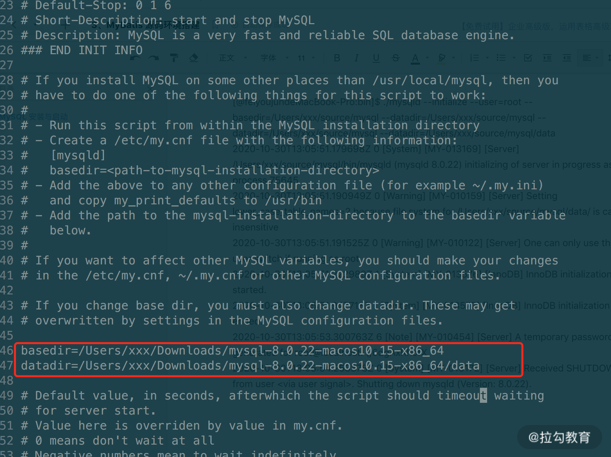
mysql.server 文件修改示例图
3. 启动 MySQL
随后，我执行了如下命令，进入 MySQL 的 bin 目录：
cd ../bin/
并执行如下的 mysqld 命令，初始化 MySQL，但需要注意这里添加的参数信息，可以通过 basedir 和 datadir 参数指定根目录和 data 目录。
./mysqld --initialize --user=root --basedir=/Users/xxx/Downloads/mysql-8.0.22-macos10.15-x86_64 --datadir=/Users/xxx/Downloads/mysql-8.0.22-macos10.15-x86_64/data
正常完成初始化过程之后，就可以在命令行中得到 MySQL 的初始默认密码，如下图所示：

成功初始化 MySQL 示例图
通过该默认密码，我就可以启动并登录 MySQL 服务了，首先需要跳转到 support-files 目录中：
cd ../support-files/
然后执行如下命令，启动 MySQL 服务：
./mysql.server start
MySQL 服务正常启动之后，就可以看到如下图所示的输出：

成功启动 MySQL 示例图
4. 登录 MySQL
接下来跳转到 bin 目录：
cd ../bin/
并执行如下命令，即可使用前面获得的默认密码登录到 MySQL。
./mysql -uroot -p'rAUhw9e&VPCs'
登录之后即可进入 MySQL Shell 中，如下图所示：
成功登录 MySQL 示例图
然后我就可以在 MySQL Shell 中修改密码，具体命令如下所示：
ALTER USER 'root'@'localhost' IDENTIFIED BY '新密码';
执行成功之后，下次再使用 MySQL Shell 连接的时候，就需要使用新密码进行登录了。
最后，如果要关闭 MySQL 服务，可以跳转到 support-files 目录下，执行如下命令即可：
cd ../support-files/
./mysql.server stop
得到如下输出，即表示 MySQL 服务成功关闭：
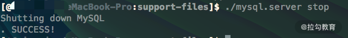
成功关闭 MySQL 示例图
这里还需要说明的是，在实际开发过程中，一般会使用到 MySQL 的图形界面客户端，例如 Navicat、MySQL Workbench Community Edition 等，一般只会在线上机器的 Linux 命令行中，才会直接使用 MySQL Shell 执行一些操作。
当然，我个人也很推荐你使用这些图形界面客户端，它可以提高你日常的开发效率。
MyBatis 源码环境搭建
完成 MySQL 的安装和启动之后，就可以开始搭建 MyBatis 的源码环境了。
首先，需要安装 JDK、Maven、Git 等 Java 开发的基础环境，这些软件的安装这里我就不再展开介绍了，你应该已经都非常熟悉了。
接下来，执行下面的命令，即可从 GitHub 下载 MyBatis 的源码：
git clone https://github.com/mybatis/mybatis-3.git
网速不同，这个下载过程的耗时也会有所不同。下载完成后，可得到如下输出：

MyBatis 下载示例图
此时，在本地我就得到了一个 mybatis-3 目录，执行如下 cd 命令即可进入该目录：
cd ./mybatis-3/
然后执行如下 git 命令就可以切换分支（本课程是以 MyBatis 3.5.6 版本的代码为基础进行分析）：
git checkout -b mybatis-3.5.6 mybatis-3.5.6
切换完成之后，我还可以通过如下 git 命令查看分支切换是否成功：
git branch -vv
这里我得到了如下图所示的输出，这表示我已经切换到了 mybatis-3.5.6 这个 tag 上了。
git 分支示例图
最后，我打开 IDEA ，选择 Open or Import，导入 MyBatis 源码，如下图所示：
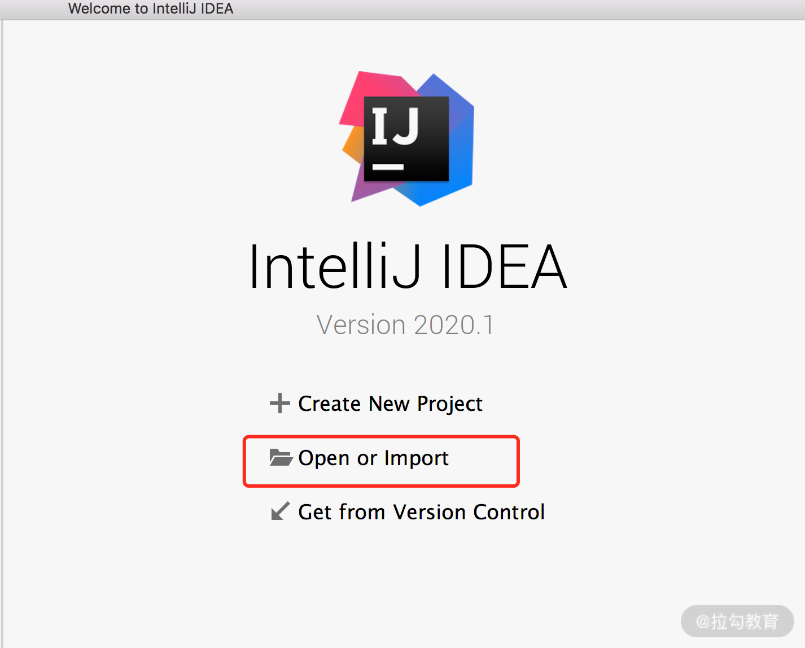
IDEA 导入选项图
导入完成之后，就可以看到 MyBatis 的源码结构，如下图所示：
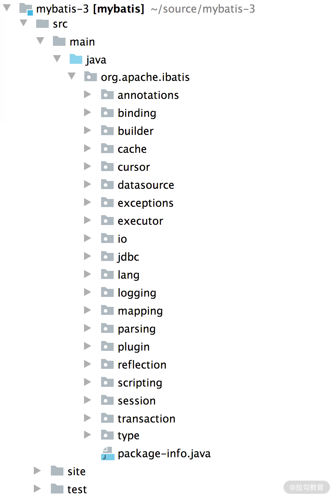
MyBatis 的源码结构图
MyBatis 架构简介
完成 MyBatis 源码环境搭建之后，我再来带你分析一下 MyBatis 的架构。
MyBatis 分为三层架构，分别是基础支撑层、核心处理层和接口层，如下图所示：
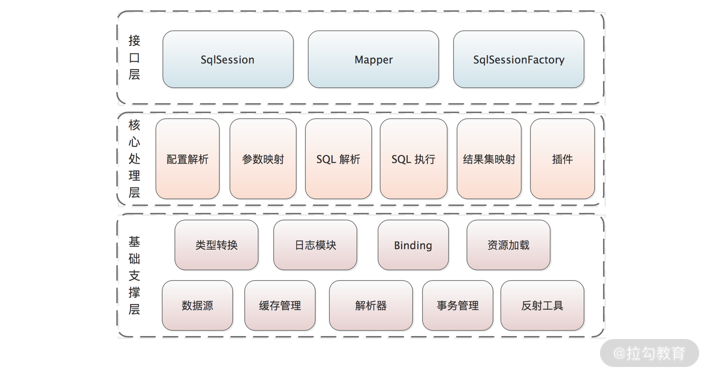
MyBatis 三层架构图
1. 基础支撑层
基础支撑层是整个 MyBatis 框架的地基，为整个 MyBatis 框架提供了非常基础的功能，其中每个模块都提供了一个内聚的、单一的能力，MyBatis 基础支撑层按照这些单一的能力可以划分为上图所示的九个基础模块。
由于资源加载模块的功能非常简单，使用频率也不高，这里我就不介绍了，你若感兴趣可以自行查阅相关资料去了解和学习。下面我就来简单描述这剩下的八个模块的基本功能，在本课程第二个模块，我还会带你详细分析这些基础模块的具体实现。
第一个，类型转换模块。 在上一讲展示的订单系统实现中，我们可以在 mybatis-config.xml 配置文件中通过 <typeAliase> 标签为一个类定义一个别名，这里用到的“别名机制”就是由 MyBatis 基础支撑层中的类型转换模块实现的。
除了“别名机制”，类型转换模块还实现了 MyBatis 中 JDBC 类型与 Java 类型之间的相互转换，这一功能在绑定实参、映射 ResultSet 场景中都有所体现：
- 在 SQL 模板绑定用户传入实参的场景中，类型转换模块会将 Java 类型数据转换成 JDBC 类型数据；
- 在将 ResultSet 映射成结果对象的时候，类型转换模块会将 JDBC 类型数据转换成 Java 类型数据。
具体情况如下图所示：

类型转换基本功能示意图
第二个，日志模块。 日志是我们生产实践中排查问题、定位 Bug、锁定性能瓶颈的主要线索来源，在任何一个成熟系统中都会有级别合理、信息翔实的日志模块，MyBatis 也不例外。MyBatis 提供了日志模块来集成 Java 生态中的第三方日志框架，该模块目前可以集成 Log4j、Log4j2、slf4j 等优秀的日志框架。
第三个，反射工具模块。 Java 中的反射功能非常强大，许多开源框架都会依赖反射实现一些相对灵活的需求，但是大多数 Java 程序员在实际工作中很少会直接使用到反射技术。MyBatis 的反射工具箱是在 Java 反射的基础之上进行的一层封装，为上层使用方提供更加灵活、方便的 API 接口，同时缓存 Java 的原生反射相关的元数据，提升了反射代码执行的效率，优化了反射操作的性能。
第四个，Binding 模块。 在上一讲介绍的订单系统示例中，我们可以通过 SqlSession 获取 Mapper 接口的代理，然后通过这个代理执行关联 Mapper.xml 文件中的数据库操作。通过这种方式，可以将一些错误提前到编译期，该功能就是通过 Binding 模块完成的。
这里特别说明的是，在使用 MyBatis 的时候，我们无须编写 Mapper 接口的具体实现，而是利用 Binding 模块自动生成 Mapper 接口的动态代理对象。有些简单的数据操作，我们还可以直接在 Mapper 接口中使用注解完成，连 Mapper.xml 配置文件都无须编写，但如果 ResultSet 映射以及动态 SQL 非常复杂，还是建议在 Mapper.xml 配置文件中维护会比较方便。
第五个，数据源模块。 持久层框架核心组件之一就是数据源，一款性能出众的数据源可以成倍提升系统的性能。MyBatis 自身提供了一套不错的数据源实现，也是 MyBatis 的默认实现。另外，在 Java 生态中，就有很多优异开源的数据源可供选择，MyBatis 的数据源模块中也提供了与第三方数据源集成的相关接口，这也为用户提供了更多的选择空间，提升了数据源切换的灵活性。
第六个，缓存模块。 数据库是实践生成中非常核心的存储，很多业务数据都会落地到数据库，所以数据库性能的优劣直接影响了上层业务系统的优劣。我们很多线上业务都是读多写少的场景，在数据库遇到瓶颈时，缓存是最有效、最常用的手段之一（如下图所示），正确使用缓存可以将一部分数据库请求拦截在缓存这一层，这就能够减少一部分数据库的压力，提高系统性能。

缓存模块结构图
除了使用 Redis、Memcached 等外置的第三方缓存以外，持久化框架一般也会自带内置的缓存，例如，MyBatis 就提供了一级缓存和二级缓存，具体实现位于基础支撑层的缓存模块中。
第七个，解析器模块。在上一讲的订单系统示例中，我们可以看到 MyBatis 中有两大部分配置文件需要解析，一个是 mybatis-config.xml 配置文件，另一个是 Mapper.xml 配置文件。这两个文件都是由 MyBatis 的解析器模块进行解析的，其中主要是依赖 XPath 实现 XML 配置文件以及各类表达式的高效解析。
第八个，事务管理模块。 持久层框架一般都会提供一套事务管理机制实现数据库的事务控制，MyBatis 对数据库中的事务进行了一层简单的抽象，提供了简单易用的事务接口和实现。一般情况下，Java 项目都会集成 Spring，并由 Spring 框架管理事务。在后面的课程中，我还会深入讲解 MyBatis 与 Spring 集成的原理，其中就包括事务管理相关的集成。
2. 核心处理层
介绍完 MyBatis 的基础支撑层之后，我们再来分析 MyBatis 的核心处理层。
核心处理层是 MyBatis 核心实现所在，其中涉及 MyBatis 的初始化以及执行一条 SQL 语句的全流程。下面我就针对核心处理层中的各部分实现进行介绍。
第一个，配置解析。 我们知道，MyBatis 有三处可以添加配置信息的地方，分别是：mybatis-config.xml 配置文件、Mapper.xml 配置文件以及 Mapper 接口中的注解信息。在 MyBatis 初始化过程中，会加载这些配置信息，并将解析之后得到的配置对象保存到 Configuration 对象中。
例如，在订单系统示例中使用的 <resultMap> 标签（也就是自定义的查询结果集映射规则）会被解析成 ResultMap 对象。我们可以利用得到的 Configuration 对象创建 SqlSessionFactory 对象（也就是创建 SqlSession 对象的工厂对象），之后即可创建 SqlSession 对象执行数据库操作了。
第二个，SQL 解析与 scripting 模块。 MyBatis 的最大亮点应该要数其动态 SQL 功能了，只需要通过 MyBatis 提供的标签即可根据实际的运行条件动态生成实际执行的 SQL 语句。MyBatis 提供的动态 SQL 标签非常丰富，包括 <where> 标签、<if> 标签、<foreach> 标签、<set> 标签等。
MyBatis 中的 scripting 模块就是负责动态生成 SQL 的核心模块。它会根据运行时用户传入的实参，解析动态 SQL 中的标签，并形成 SQL 模板，然后处理 SQL 模板中的占位符，用运行时的实参填充占位符，得到数据库真正可执行的 SQL 语句。
第三个，SQL 执行。 在 MyBatis 中，要执行一条 SQL 语句，会涉及非常多的组件，比较核心的有：Executor、StatementHandler、ParameterHandler 和 ResultSetHandler。
其中，Executor 会调用事务管理模块实现事务的相关控制，同时会通过缓存模块管理一级缓存和二级缓存。SQL 语句的真正执行将会由 StatementHandler 实现。那具体是怎么完成的呢？StatementHandler 会先依赖 ParameterHandler 进行 SQL 模板的实参绑定，然后由 java.sql.Statement 对象将 SQL 语句以及绑定好的实参传到数据库执行，从数据库中拿到 ResultSet，最后，由 ResultSetHandler 将 ResultSet 映射成 Java 对象返回给调用方，这就是 SQL 执行模块的核心。
下图展示了 MyBatis 执行一条 SQL 语句的核心过程：
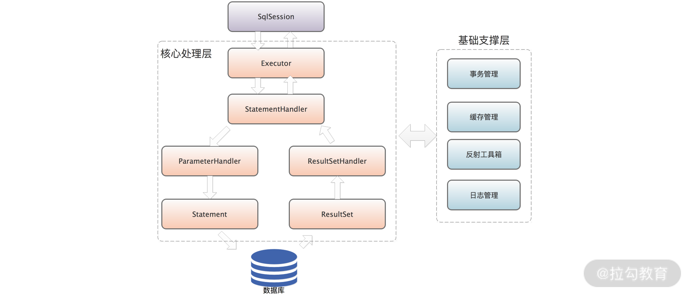
执行 SQL 语句的核心流程图
第四个，插件。 很多成熟的开源框架，都会以各种方式提供扩展能力。当框架原生能力不能满足某些场景的时候，就可以针对这些场景实现一些插件来满足需求，这样的框架才能有足够的生命力。这也是 MyBatis 插件接口存在的意义。
与此同时，在实际应用的时候，你也可以通过自定义插件来扩展 MyBatis，或者改变 MyBatis 的默认行为。因为插件会影响 MyBatis 内核的行为，所以在自定义插件之前，你必须非常了解 MyBatis 内部的运行原理，以避免写出不符合预期的插件，引入一些诡异的功能 Bug 或性能问题。
3. 接口层
接口层是 MyBatis 暴露给调用的接口集合，这些接口都是使用 MyBatis 时最常用的一些接口，例如，SqlSession 接口、SqlSessionFactory 接口等。其中，最核心的是 SqlSession 接口，你可以通过它实现很多功能，例如，获取 Mapper 代理、执行 SQL 语句、控制事务开关等。
总结
在今天这一讲，我为你详细讲解了 MyBatis 源码环境的搭建流程以及其核心模块的功能。
- 首先，我带你安装了最新版本的 MySQL 数据库，并成功启动了 MySQL 实例，你可以按照我所列的步骤一步一步去操作、去实现。
- 其次，我又下载了 MyBatis 的源码并导入 IDEA 中，这个不是特别麻烦，还是比较好操作的。
- 最后，我又详细介绍了 MyBatis 的三层架构以及其中各个模块的核心功能，这是我们课程模块设置的基础，同时，掌握这些知识点也可以为后面学习源码打好基础。
在了解了 MyBatis 的三层架构之后，你可以简单思考一下，MyBatis 这种架构都带来了哪些好处呢？期待在留言区看到你的分享。
04 MyBatis 反射工具箱：带你领略不一样的反射设计思路
反射是 Java 世界中非常强大、非常灵活的一种机制。在面向对象的 Java 语言中，我们只能按照 public、private 等关键字的规范去访问一个 Java 对象的属性和方法，但反射机制可以让我们在运行时拿到任何 Java 对象的属性或方法。
有人说反射打破了类的封装性，破坏了我们的面向对象思维，我倒不这么认为。我觉得正是由于 Java 的反射机制，解决了很多面向对象无法解决的问题，才受到众多 Java 开源框架的青睐，也出现了有很多惊艳的反射实践，当然，这也包括 MyBatis 中的反射工具箱。
凡事都有两面性，越是灵活、越是强大的工具，用起来的门槛就越高，反射亦如此。这也是写业务代码时，很少用到反射的原因。反过来说，如果必须要用反射解决业务问题的时候，就需要停下来思考我们的系统设计是不是有问题了。
为了降低反射使用门槛，MyBatis 内部封装了一个反射工具箱，其中包含了 MyBatis 自身常用的反射操作，MyBatis 其他模块只需要调用反射工具箱暴露的简洁 API 即可实现想要的反射功能。
反射工具箱的具体代码实现位于 org.apache.ibatis.reflection 包中，下面我就带你一起深入分析该模块的核心实现。
Reflector
Reflector 是 MyBatis 反射模块的基础。要使用反射模块操作一个 Class，都会先将该 Class 封装成一个 Reflector 对象，在 Reflector 中缓存 Class 的元数据信息，这可以提高反射执行的效率。
1. 核心初始化流程
既然是涉及反射操作，Reflector 必然要管理类的属性和方法，这些信息都记录在它的核心字段中，具体情况如下所示。
- type（Class<?> 类型）：该 Reflector 对象封装的 Class 类型。
- readablePropertyNames、writablePropertyNames（String[] 类型）：可读、可写属性的名称集合。
- getMethods、setMethods（Map<String, Invoker> 类型）：可读、可写属性对应的 getter 方法和 setter 方法集合，key 是属性的名称，value 是一个 Invoker 对象。Invoker 是对 Method 对象的封装。
- getTypes、setTypes（Map<String, Class<?>> 类型）：属性对应的 getter 方法返回值以及 setter 方法的参数值类型，key 是属性名称，value 是方法的返回值类型或参数类型。
- defaultConstructor（Constructor<?> 类型）：默认构造方法。
- caseInsensitivePropertyMap（Map<String, String> 类型）：所有属性名称的集合，记录到这个集合中的属性名称都是大写的。
在我们构造一个 Reflector 对象的时候，传入一个 Class 对象，通过解析这个 Class 对象，即可填充上述核心字段，整个核心流程大致可描述为如下。
- 用 type 字段记录传入的 Class 对象。
- 通过反射拿到 Class 类的全部构造方法，并进行遍历，过滤得到唯一的无参构造方法来初始化 defaultConstructor 字段。这部分逻辑在 addDefaultConstructor() 方法中实现。
- 读取 Class 类中的 getter方法，填充上面介绍的 getMethods 集合和 getTypes 集合。这部分逻辑在 addGetMethods() 方法中实现。
- 读取 Class 类中的 setter 方法，填充上面介绍的 setMethods 集合和 setTypes 集合。这部分逻辑在 addSetMethods() 方法中实现。
- 读取 Class 中没有 getter/setter 方法的字段，生成对应的 Invoker 对象，填充 getMethods 集合、getTypes 集合以及 setMethods 集合、setTypes 集合。这部分逻辑在 addFields() 方法中实现。
- 根据前面三步构造的 getMethods/setMethods 集合的 keySet，初始化 readablePropertyNames、writablePropertyNames 集合。
- 遍历构造的 readablePropertyNames、writablePropertyNames 集合，将其中的属性名称全部转化成大写并记录到 caseInsensitivePropertyMap 集合中。
2. 核心方法解析
了解了初始化的核心流程之后，我们再继续深入分析其中涉及的方法，这些方法也是 Reflector 的核心方法。
首先来看 addGetMethods() 方法和 addSetMethods() 方法，它们分别用来解析传入 Class 类中的 getter方法和 setter() 方法，两者的逻辑十分相似。这里，我们就以 addGetMethods() 方法为例深入分析，其主要包括如下三个核心步骤。
第一步，获取方法信息。 这里会调用 getClassMethods() 方法获取当前 Class 类的所有方法的唯一签名（注意一下，这里同时包含继承自父类以及接口的方法），以及每个方法对应的 Method 对象。
在递归扫描父类以及父接口的过程中，会使用 Map<String, Method> 集合记录遍历到的方法，实现去重的效果，其中 Key 是对应的方法签名，Value 为方法对应的 Method 对象。生成的方法签名的格式如下：
返回值类型#方法名称:参数类型列表
例如，addGetMethods(Class) 方法的唯一签名是：
java.lang.String#addGetMethods:java.lang.Class
可见，这里生成的方法签名是包含返回值的，可以作为该方法全局唯一的标识。
第二步，按照 Java 的规范，从上一步返回的 Method 数组中查找 getter 方法，将其记录到 conflictingGetters 集合中。这里的 conflictingGetters 集合（HashMap<String, List>()类型）中的 Key 为属性名称，Value 是该属性对应的 getter 方法集合。
为什么一个属性会查找到多个 getter 方法呢？这主要是由于类间继承导致的，在子类中我们可以覆盖父类的方法，覆盖不仅可以修改方法的具体实现，还可以修改方法的返回值，getter 方法也不例外，这就导致在第一步中产生了两个签名不同的方法。
第三步，解决方法签名冲突。 这里会调用 resolveGetterConflicts() 方法对这种 getter 方法的冲突进行处理，处理冲突的核心逻辑其实就是比较 getter 方法的返回值，优先选择返回值为子类的 getter 方法，例如：
// 该方法定义在SuperClazz类中
public List getA();
// 该方法定义在SubClazz类中，SubClazz继承了SuperClazz类
public ArrayList getA();
可以看到，SubClazz.getA() 方法的返回值 ArrayList 是其父类 SuperClazz 中 getA() 方法返回值 List 的子类，所以这里选择 SubClazz 中定义的 getA() 方法作为 A 这个属性的 getter 方法。
在 resolveGetterConflicts() 方法处理完上述 getter 方法冲突之后，会为每个 getter 方法创建对应的 MethodInvoker 对象，然后统一保存到 getMethods 集合中。同时，还会在 getTypes 集合中维护属性名称与对应 getter 方法返回值类型的映射。
到这里了，addGetMethods() 的核心逻辑就分析清楚了。
我们接下来回到 Reflector 的构造方法中，在通过 addGetMethods() 和 addSetMethods() 方法，完成 Class 类中 getter/setter 方法的处理之后，会继续调用 addFields() 方法处理没有 getter/setter 方法的字段。
这里我们以处理没有 getter 方法的字段为例，addFields() 方法会为这些字段生成对应的 GetFieldInvoker 对象并记录到 getMethods 集合中，同时也会将属性名称和属性类型记录到 getTypes 集合中。处理没有 setter 方法的字段也是相同的逻辑。
3. Invoker
在 Reflector 对象的初始化过程中，所有属性的 getter/setter 方法都会被封装成 MethodInvoker 对象，没有 getter/setter 的字段也会生成对应的 Get/SetFieldInvoker 对象。下面我们就来看看这个 Invoker 接口的定义：
public interface Invoker {
// 调用底层封装的Method方法或是读写指定的字段
Object invoke(Object target, Object[] args);
Class<?> getType(); // 返回属性的类型
}
Invoker 接口的继承关系如下图所示：

Invoker 接口继承关系图
其中，MethodInvoker 是通过反射方式执行底层封装的 Method 方法（例如，getter/setter 方法）完成属性读写效果的，Get/SetFieldInvoker 是通过反射方式读写底层封装的 Field 字段，进而实现属性读写效果的。
4. ReflectorFactory
通过上面的分析我们知道，Reflector 初始化过程会有一系列的反射操作，为了提升 Reflector 的初始化速度，MyBatis 提供了 ReflectorFactory 这个工厂接口对 Reflector 对象进行缓存，其中最核心的方法是用来获取 Reflector 对象的 findForClass() 方法。
DefaultReflectorFactory 是 ReflectorFactory 接口的默认实现，它默认会在内存中维护一个 ConcurrentHashMap<Class<?>, Reflector> 集合（reflectorMap 字段）缓存其创建的所有 Reflector 对象。
在其 findForClass() 方法实现中，首先会根据传入的 Class 类查询 reflectorMap 缓存，如果查找到对应的 Reflector 对象，则直接返回；否则创建相应的 Reflector 对象，并记录到 reflectorMap 中缓存，等待下次使用。
默认对象工厂
ObjectFactory 是 MyBatis 中的反射工厂，其中提供了两个 create() 方法的重载，我们可以通过两个 create() 方法创建指定类型的对象。
DefaultObjectFactory 是 ObjectFactory 接口的默认实现，其 create() 方法底层是通过调用 instantiateClass() 方法创建对象的。instantiateClass() 方法会通过反射的方式根据传入的参数列表，选择合适的构造函数实例化对象。
除了使用 DefaultObjectFactory 这个默认实现之外，我们还可以在 mybatis-config.xml 配置文件中配置自定义 ObjectFactory 接口扩展实现 类（在 MyBatis 提供的测试类中，就包含了自定义的 ObjectFactory 实现，可以参考我们的源码），完成自定义的功能扩展。
属性解析工具
在前面《02 | 订单系统持久层示例分析，20 分钟带你快速上手 MyBatis》介绍的订单系统示例中，我们在 orderMap 这个 ResultMap 映射中，如果要配置 Order 与 OrderItem 的一对多关系，可以使用 <collection> 标签进行配置；如果 OrderItem 个数明确，可以直接使用数组下标索引方式（即 ordersItems[0]）填充 orderItems 集合。
这里的 “.” 导航以及数组下标的解析，也都是在反射工具箱中完成的。下面我们就来介绍 reflection.property 包下的三个属性解析相关的工具类，在后面的 MetaClass、MetaObject 等工具类中，也都需要属性解析能力。
- PropertyTokenizer 工具类负责解析由“.”和“[]”构成的表达式。PropertyTokenizer 继承了 Iterator 接口，可以迭代处理嵌套多层表达式。
- PropertyCopier 是一个属性拷贝的工具类，提供了与 Spring 中 BeanUtils.copyProperties() 类似的功能，实现相同类型的两个对象之间的属性值拷贝，其核心方法是 copyBeanProperties() 方法。
- PropertyNamer 工具类提供的功能是转换方法名到属性名，以及检测一个方法名是否为 getter 或 setter 方法。
MetaClass
MetaClass 提供了获取类中属性描述信息的功能，底层依赖前面介绍的 Reflector，在 MetaClass 的构造方法中会将传入的 Class 封装成一个 Reflector 对象，并记录到 reflector 字段中，MetaClass 的后续属性查找都会使用到该 Reflector 对象。
MetaClass 中的 findProperty() 方法是实现属性查找的核心方法，它主要处理了“.”导航的属性查找，该方法会用前文介绍的 PropertyTokenizer 解析传入的 name 表达式，该表达式可能通过“.”导航多层，例如，order.deliveryAddress.customer.name。
MetaClass 会逐层处理这个表达式，首先通过 Order 类型对应的 Reflector 查找 deliveryAddress 属性，查找成功之后，根据 deliveryAddress 属性的类型（即 Address 类型）创建对应的 MetaClass 对象（以及底层的 Reflector 对象），再继续查找其中的 customer 属性，如此递归处理，直至最后查找到 Customer 中的 name 属性。这部分递归查找逻辑位于 MetaClass.buildProperty() 方法中。
在上述 MetaClass 查找属性的过程中，还会调用 hasGetter() 和 hasSetter() 方法负责判断属性表达式中指定的属性是否有对应的 getter/setter 方法。这两个方法也是先通过 PropertyTokenizer 解析传入的 name 表达式，然后进行递归查询，在递归查询中会依赖 Reflector.hasGetter() 方法查找前文介绍的 getMethods 集合或 setMethods 集合，查找属性对应的 getter/setter 方法。
MetaClass 中的其他方法实现也都大多是依赖 PropertyTokenizer 解析表达式，然后递归查找，查找过程会依赖 Reflector 的相关方法。
ObjectWrapper
MetaClass 中封装的是 Class 元信息，ObjectWrapper 封装的则是对象元信息。在 ObjectWrapper 中抽象了一个对象的属性信息，并提供了查询对象属性信息的相关方法，以及更新属性值的相关方法。
ObjectWrapper 的实现类如下图所示：
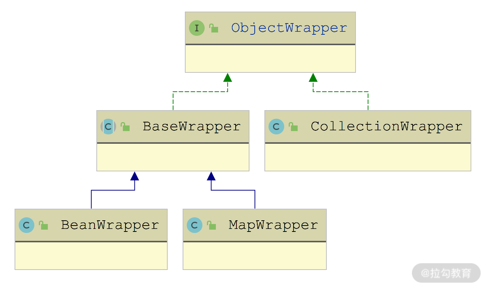
ObjectWrapper 继承关系图
BaseWrapper 是 ObjectWrapper 接口的抽象实现，其中只有一个 MetaObject 类型的字段。BaseWrapper 为子类实现了 resolveCollection()、getCollectionValue() 和 setCollectionValue() 三个针对集合对象的处理方法。其中，resolveCollection() 方法会将指定属性作为集合对象返回，底层依赖 MetaObject.getValue()方法实现（后面还会详细介绍）。getCollectionValue() 方法和 setCollectionValue() 方法会解析属性表达式的下标信息，然后获取/设置集合中的对应元素，这里解析属性表达式依然是依赖前面介绍的 PropertyTokenizer 工具类。
BeanWrapper 继承了 BaseWrapper 抽象类，底层除了封装了一个 JavaBean 对象之外，还封装了该 JavaBean 类型对应的 MetaClass 对象，以及从 BaseWrapper 继承下来的 MetaObject 对象。
在 get() 方法和 set() 方法实现中，BeanWrapper 会根据传入的属性表达式，获取/设置相应的属性值。以 get() 方法为例，首先会判断表达式中是否含有数组下标，如果含有下标，会通过 resolveCollection() 和 getCollectionValue() 方法从集合中获取相应元素；如果不包含下标，则通过 MetaClass 查找属性名称在 Reflector.getMethods 集合中相应的 GetFieldInvoker，然后调用 Invoker.invoke() 方法读取属性值。
BeanWrapper 中其他方法的实现也大都与 get() 方法和 set() 方法类似，依赖 MetaClass、MetaObject 完成相关对象中属性信息读写，这里就不再一一介绍，你若感兴趣的话可以参考源码进行学习。
CollectionWrapper 是 ObjectWrapper 接口针对 Collection 集合的一个实现，其中封装了Collection<Object> 集合对象，只有 isCollection()、add()、addAll() 方法以及从 BaseWrapper 继承下来的方法是可用的，其他方法都会抛出 UnsupportedOperationException 异常。
MapWrapper 是针对 Map 类型的一个实现，这个实现就比较简单了，所以我就留给你自己去分析了，分析过程中可以参考下面将要介绍的 MetaObject。
MetaObject
通过对 ObjectWrapper 的介绍我们了解到，ObjectWrapper 实现了读写对象属性值、检测getter/setter 等基础功能，在分析 BeanWrapper 等实现类时，我们可以看到其底层会依赖 MetaObject。在 MetaObject 中维护了一个 originalObject 字段指向被封装的 JavaBean 对象，还维护了该 JavaBean 对象对应的 ObjectWrapper 对象（objectWrapper 字段）。
MetaObject 和 ObjectWrapper 中关于类级别的方法，例如，hasGetter() 方法、hasSetter() 方法、findProperty() 方法等，都是直接调用 MetaClass 或 ObjectWrapper 的对应方法实现的。其他关于对象级别的方法，都是与 ObjectWrapper 配合实现，例如 MetaObject.getValue()/setValue() 方法等。
这里以 getValue() 方法为例，该方法首先根据 PropertyTokenizer 解析指定的属性表达式，如果该表达式是包含“.”导航的多级属性查询，则获取子表达式并为其对应的属性对象创建关联的 MetaObject 对象，继续递归调用 getValue() 方法，直至递归处理结束，递归出口会调用 ObjectWrapper.get() 方法获取最终的属性值。
在 MetaObject 中，setValue() 方法的核心逻辑与 getValue() 方法基本类似，也是递归查找。但是，其中有一个不同之处需要你注意：如果需要设置的最终属性值不为空时，在递归查找 setter() 方法的过程中会调用 ObjectWrapper.instantiatePropertyValue() 方法初始化递归过程中碰到的任意空对象，但如果碰到为空的集合元素，则无法通过该方法初始化。ObjectWrapper.instantiatePropertyValue() 方法实际上是依赖 ObjectFactory 接口的 create()方法（默认实现是 DefaultObjectFactory ）创建相应类型的对象。
了解了 MetaObject 和 BeanWrapper 配合使用的方式以及递归查找属性表达式指定的属性值的逻辑之后，MetaObject 剩余方法的实现就比较好分析了，这里我也就不再赘述了。
总结
这一讲我们重点介绍了 MyBatis 中的反射工具箱。首先，我们介绍了反射工具箱中最核心、最底层的 Reflector 类的核心实现；接下来介绍了反射工具箱在 Reflector 基础之上提供的各种工具类，其中包括 ObjectFactory 工厂类、ObjectWrapper 包装类以及记录元数据的 MetaClass、MetaObject 等。它们彼此联系紧密，希望你在学习过程中能将它们的各个知识点串联起来，灵活运用。
前面我们也说了，MapWrapper 是针对 Map 类型的一个实现，这个实现比较简单了，你可以试着去分析下。欢迎你在留言区分享你的分析过程。
05 数据库类型体系与 Java 类型体系之间的“爱恨情仇”
作为一个 Java 程序员，你应该已经具备了使用 JDBC 操作数据库的基础技能。在使用 JDBC 的时候，你会发现 JDBC 的数据类型与 Java 语言中的数据类型虽然有点对应关系，如下图所示，但还是无法做到一一对应，也自然无法做到自动映射。

数据库类型与 Java 类型对应图表
在使用 PreparedStatement 执行 SQL 语句之前，都是需要手动调用 setInt()、setString() 等 set 方法绑定参数，这不仅仅是告诉 JDBC 一个 SQL 模板中哪个占位符需要使用哪个实参，还会将数据从 Java 类型转换成 JDBC 类型。当从 ResultSet 中获取数据的时候，则是一个逆过程，数据会从 JDBC 类型转换为 Java 类型。
可以使用 MyBatis 中的类型转换器，完成上述两次类型转换，如下图所示：

JDBC 类型数据与 Java 类型数据转换示意图
深入 TypeHandler
说了这么多，类型转换器到底是怎么定义的呢？其实，MyBatis 中的类型转换器就是 TypeHandler 这个接口，其定义如下：
public interface TypeHandler<T> {
// 在通过PreparedStatement为SQL语句绑定参数时，会将传入的实参数据由JdbcType类型转换成Java类型
void setParameter(PreparedStatement ps, int i, T parameter, JdbcType jdbcType) throws SQLException;
// 从ResultSet中获取数据时会使用getResult()方法，其中会将读取到的数据由Java类型转换成JdbcType类型
T getResult(ResultSet rs, String columnName) throws SQLException;
T getResult(ResultSet rs, int columnIndex) throws SQLException;
T getResult(CallableStatement cs, int columnIndex) throws SQLException;
}
MyBatis 中定义了 BaseTypeHandler 抽象类来实现一些 TypeHandler 的公共逻辑，BaseTypeHandler 在实现 TypeHandler 的同时，还实现了 TypeReference 抽象类。其继承关系如下图所示：
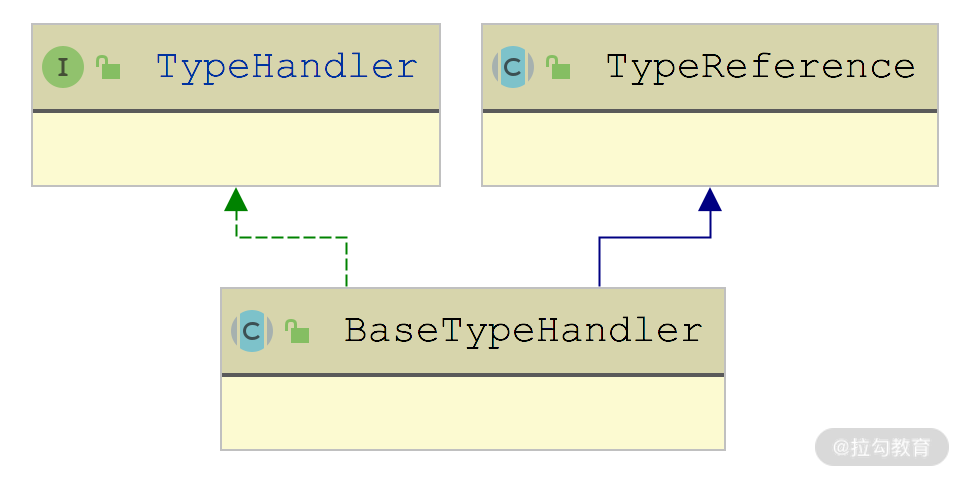
TypeHandler 继承关系图
在 BaseTypeHandler 中，简单实现了 TypeHandler 接口的 setParameter() 方法和 getResult() 方法。
- 在 setParameter() 实现中，会判断传入的 parameter 实参是否为空，如果为空，则调用 PreparedStatement.setNull() 方法进行设置；如果不为空，则委托 setNonNullParameter() 这个抽象方法进行处理，setNonNullParameter() 方法由 BaseTypeHandler 的子类提供具体实现。
- 在 getResult() 的三个重载实现中，会直接调用相应的 getNullableResult() 抽象方法，这里有三个重载的 getNullableResult() 抽象方法，它们都由 BaseTypeHandler 的子类提供具体实现。
BaseTypeHandler 的具体实现比较简单，这里就不再展示，你若感兴趣的话可以参考源码进行学习。
下图展示了 BaseTypeHandler 的全部实现类，虽然实现类比较多，但是它们的实现方式大同小异。
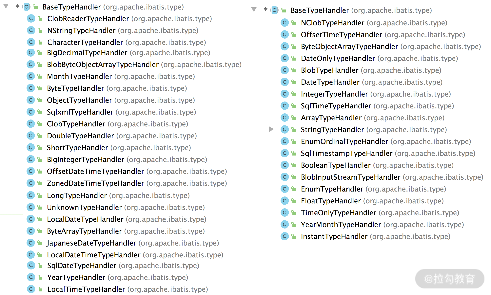
BaseTypeHandler 实现类示意图
这里我们以 LongTypeHandler 为例进行分析，具体实现如下：
public class LongTypeHandler extends BaseTypeHandler<Long> {
public void setNonNullParameter(PreparedStatement ps, int i, Long parameter, JdbcType jdbcType)
throws SQLException {
// 调用PreparedStatement.setLong()实现参数绑定
ps.setLong(i, parameter);
}
public Long getNullableResult(ResultSet rs, String columnName)
throws SQLException {
// 调用ResultSet.getLong()获取指定列值
long result = rs.getLong(columnName);
return result == 0 && rs.wasNull() ? null : result;
}
public Long getNullableResult(ResultSet rs, int columnIndex)
throws SQLException {
// 调用ResultSet.getLong()获取指定列值
long result = rs.getLong(columnIndex);
return result == 0 && rs.wasNull() ? null : result;
}
public Long getNullableResult(CallableStatement cs, int columnIndex)
throws SQLException {
// 调用ResultSet.getLong()获取指定列值
long result = cs.getLong(columnIndex);
return result == 0 && cs.wasNull() ? null : result;
}
}
可以看到：LongTypeHandler 的核心还是通过 PreparedStatement.setLong() 方法以及 ResultSet.getLong() 方法实现的。至于其他 BaseTypeHandler 的核心实现，同样也是依赖了 JDBC 的 API，这里就不再展开介绍了。
TypeHandler 注册
了解了 TypeHandler 接口实现类的核心原理之后，我们就来解决下面两个问题：
- MyBatis 如何管理这么多的 TypeHandler 接口实现呢？
- 如何在合适的场景中使用合适的 TypeHandler 实现进行类型转换呢？
你若使用过 MyBatis 的话，应该知道我们可以在 mybatis-config.xml 中通过 标签配置自定义的 TypeHandler 实现，也可以在 Mapper.xml 配置文件定义 的时候指定 typeHandler 属性。无论是哪种配置方式，MyBatis 都会在初始化过程中，获取所有已知的 TypeHandler（包括内置实现和自定义实现），然后创建所有 TypeHandler 实例并注册到 TypeHandlerRegistry 中，由 TypeHandlerRegistry 统一管理所有 TypeHandler 实例。 TypeHandlerRegistry 管理 TypeHandler 的时候，用到了以下四个最核心的集合。
- jdbcTypeHandlerMap（Map<JdbcType, TypeHandler<?>>类型）：该集合记录了 JdbcType 与 TypeHandler 之间的关联关系。JdbcType 是一个枚举类型，每个 JdbcType 枚举值对应一种 JDBC 类型，例如，JdbcType.VARCHAR 对应的就是 JDBC 中的 varchar 类型。在从 ResultSet 中读取数据的时候，就会从 JDBC_TYPE_HANDLER_MAP 集合中根据 JDBC 类型查找对应的 TypeHandler，将数据转换成 Java 类型。
- typeHandlerMap（Map<Type, Map<JdbcType, TypeHandler<?>>>类型）：该集合第一层 Key 是需要转换的 Java 类型，第二层 Key 是转换的目标 JdbcType，最终的 Value 是完成此次转换时所需要使用的 TypeHandler 对象。那为什么要有两层 Map 的设计呢？这里我们举个例子：Java 类型中的 String 可能转换成数据库中的 varchar、char、text 等多种类型，存在一对多关系，所以就可能有不同的 TypeHandler 实现。
- allTypeHandlersMap（Map<Class, TypeHandler>类型）：该集合记录了全部 TypeHandler 的类型以及对应的 TypeHandler 实例对象。
- NULL_TYPE_HANDLER_MAP（Map<JdbcType, TypeHandler<?>>类型）：空 TypeHandler 集合的标识，默认值为 Collections.emptyMap()。
在 MyBatis 初始化的时候，实例化全部 TypeHandler 对象之后，会立即调用 TypeHandlerRegistry 的 register() 方法完成这些 TypeHandler 对象的注册，这个注册过程的核心逻辑就是向上述四个核心集合中添加 TypeHandler 实例以及与 Java 类型、JDBC 类型之间的映射。
TypeHandlerRegistry.register() 方法有多个重载实现，这些重载中最基础的实现是三个参数的重载实现，具体实现如下：
private void register(Type javaType, JdbcType jdbcType, TypeHandler<?> handler) {
if (javaType != null) { // 检测是否明确指定了TypeHandler能够处理的Java类型
// 根据指定的Java类型，从typeHandlerMap集合中获取相应的TypeHandler集合
Map<JdbcType, TypeHandler<?>> map = typeHandlerMap.get(javaType);
if (map == null || map == NULL_TYPE_HANDLER_MAP) {
map = new HashMap<>();
}
// 将TypeHandler实例记录到typeHandlerMap集合
map.put(jdbcType, handler);
typeHandlerMap.put(javaType, map);
}
// 向allTypeHandlersMap集合注册TypeHandler类型和对应的TypeHandler对象
allTypeHandlersMap.put(handler.getClass(), handler);
}
除了上面的 register() 重载，在有的 register() 重载中会尝试从 TypeHandler 类中的@MappedTypes 注解和 @MappedJdbcTypes 注解中读取信息。其中，@MappedTypes 注解中可以配置 TypeHandler 实现类能够处理的 Java 类型的集合，@MappedJdbcTypes 注解中可以配置该 TypeHandler 实现类能够处理的 JDBC 类型集合。
如下就是读取 @MappedJdbcTypes 注解的 register() 重载方法：
private <T> void register(Type javaType, TypeHandler<? extends T> typeHandler) {
// 尝试从TypeHandler类中获取@MappedJdbcTypes注解
MappedJdbcTypes mappedJdbcTypes = typeHandler.getClass().getAnnotation(MappedJdbcTypes.class);
if (mappedJdbcTypes != null) {
// 根据@MappedJdbcTypes注解指定的JDBC类型进行注册
for (JdbcType handledJdbcType : mappedJdbcTypes.value()) {
// 交给前面的三参数重载处理
register(javaType, handledJdbcType, typeHandler);
}
// 如果支持jdbcType为null，也是交给前面的三参数重载处理
if (mappedJdbcTypes.includeNullJdbcType()) {
register(javaType, null, typeHandler);
}
} else {
// 如果没有配置MappedJdbcTypes注解，也是交给前面的三参数重载处理
register(javaType, null, typeHandler);
}
}
下面是读取 @MappedTypes 注解的 register() 方法重载：
public <T> void register(TypeHandler<T> typeHandler) {
boolean mappedTypeFound = false;
// 读取TypeHandler类中定义的@MappedTypes注解
MappedTypes mappedTypes = typeHandler.getClass().getAnnotation(MappedTypes.class);
if (mappedTypes != null) {
// 根据@MappedTypes注解中指定的Java类型进行注册
for (Class<?> handledType : mappedTypes.value()) {
// 交给前面介绍的register()重载读取@MappedJdbcTypes注解并完成注册
register(handledType, typeHandler);
mappedTypeFound = true;
}
}
// 从3.1.0版本开始，如果TypeHandler实现类同时继承了TypeReference这个抽象类，
// 这里会尝试自动查找对应的Java类型
if (!mappedTypeFound && typeHandler instanceof TypeReference) {
try {
TypeReference<T> typeReference = (TypeReference<T>) typeHandler;
// 交给前面介绍的register()重载读取@MappedJdbcTypes注解并完成注册
register(typeReference.getRawType(), typeHandler);
mappedTypeFound = true;
} catch (Throwable t) {
}
}
if (!mappedTypeFound) {
register((Class<T>) null, typeHandler);
}
}
我们接下来看最后一个 register() 重载。TypeHandlerRegistry 提供了扫描一个包下的全部 TypeHandler 接口实现类的 register() 重载。在该重载中，会首先读取指定包下面的全部的 TypeHandler 实现类，然后再交给 register() 重载读取 @MappedTypes 注解和 @MappedJdbcTypes 注解，并最终完成注册。这个 register() 重载的具体实现比较简单，这里就不再展示，你若感兴趣的话可以参考源码进行学习。
最后，我们再来看看 TypeHandlerRegistry 的构造方法，其中会通过 register() 方法注册多个 TypeHandler 对象，下面就展示了为 String 类型注册 TypeHandler 的核心实现：
public TypeHandlerRegistry() {
// StringTypeHandler可以实现String类型与char、varchar、longvarchar类型之间的转换
register(String.class, JdbcType.CHAR, new StringTypeHandler());
register(String.class, JdbcType.VARCHAR, new StringTypeHandler());
register(String.class, JdbcType.LONGVARCHAR, new StringTypeHandler());
// ClobTypeHandler可以完成String类型与clob类型之间的转换
register(String.class, JdbcType.CLOB, new ClobTypeHandler());
// NStringTypeHandler可以完成String类型与NVARCHAR、NCHAR类型之间的转换
register(String.class, JdbcType.NVARCHAR, new NStringTypeHandler());
register(String.class, JdbcType.NCHAR, new NStringTypeHandler());
// NClobTypeHandler可以完成String类型与NCLOB类型之间的转换
register(String.class, JdbcType.NCLOB, new NClobTypeHandler());
// 省略其他TypeHandler实现的注册逻辑
}
TypeHandler 查询
分析完注册 TypeHandler 实例的具体实现之后，我们接下来就来看看 MyBatis 是如何从 TypeHandlerRegistry 底层的这几个集合中查找正确的 TypeHandler 实例，该功能的具体实现是在 TypeHandlerRegistry 的 getTypeHandler() 方法中。
这里的 getTypeHandler() 方法也有多个重载，最核心的重载是 getTypeHandler(Type,JdbcType) 这个重载方法，其中会根据传入的 Java 类型和 JDBC 类型，从底层的几个集合中查询相应的 TypeHandler 实例，具体实现如下：
private <T> TypeHandler<T> getTypeHandler(Type type, JdbcType jdbcType) {
if (ParamMap.class.equals(type)) {
return null; // 过滤掉ParamMap类型
}
// 根据Java类型查找对应的TypeHandler集合
Map<JdbcType, TypeHandler<?>> jdbcHandlerMap = getJdbcHandlerMap(type);
TypeHandler<?> handler = null;
if (jdbcHandlerMap != null) {
// 根据JdbcType类型查找对应的TypeHandler实例
handler = jdbcHandlerMap.get(jdbcType);
if (handler == null) {
// 没有对应的TypeHandler实例，则使用null对应的TypeHandler
handler = jdbcHandlerMap.get(null);
}
if (handler == null) {
// 如果jdbcHandlerMap只注册了一个TypeHandler，则使用此TypeHandler对象
handler = pickSoleHandler(jdbcHandlerMap);
}
}
return (TypeHandler<T>) handler;
}
在 getTypeHandler() 方法中会调用 getJdbcHandlerMap() 方法检测 typeHandlerMap 集合中相应的 TypeHandler 集合是否已经初始化。
- 如果已初始化，则直接使用该集合进行查询；
- 如果未初始化，则尝试以传入的 Java 类型的、已初始化的父类对应的 TypeHandler 集合作为初始集合；
- 如果该 Java 类型的父类没有关联任何已初始化的 TypeHandler 集合，则将该 Java 类型对应的 TypeHandler 集合初始化为 NULL_TYPE_HANDLER_MAP 标识。
getJdbcHandlerMap() 方法具体实现如下：
private Map<JdbcType, TypeHandler<?>> getJdbcHandlerMap(Type type) {
// 首先查找指定Java类型对应的TypeHandler集合
Map<JdbcType, TypeHandler<?>> jdbcHandlerMap = typeHandlerMap.get(type);
if (NULL_TYPE_HANDLER_MAP.equals(jdbcHandlerMap)) { // 检测是否为空集合标识
return null;
}
// 初始化指定Java类型的TypeHandler集合
if (jdbcHandlerMap == null && type instanceof Class) {
Class<?> clazz = (Class<?>) type;
if (Enum.class.isAssignableFrom(clazz)) { // 针对枚举类型的处理
Class<?> enumClass = clazz.isAnonymousClass() ? clazz.getSuperclass() : clazz;
jdbcHandlerMap = getJdbcHandlerMapForEnumInterfaces(enumClass, enumClass);
if (jdbcHandlerMap == null) {
register(enumClass, getInstance(enumClass, defaultEnumTypeHandler));
return typeHandlerMap.get(enumClass);
}
} else {
// 查找父类关联的TypeHandler集合，并将其作为clazz对应的TypeHandler集合
jdbcHandlerMap = getJdbcHandlerMapForSuperclass(clazz);
}
}
// 如果上述查找皆失败，则以NULL_TYPE_HANDLER_MAP作为clazz对应的TypeHandler集合
typeHandlerMap.put(type, jdbcHandlerMap == null ?
NULL_TYPE_HANDLER_MAP : jdbcHandlerMap);
return jdbcHandlerMap;
}
这里调用的 getJdbcHandlerMapForSuperclass() 方法会判断传入的 clazz 的父类是否为空或 Object。如果是，则方法直接返回 null；如果不是，则尝试从 typeHandlerMap 集合中获取父类对应的 TypeHandler 集合，但如果父类没有关联 TypeHandler 集合，则递归调用 getJdbcHandlerMapForSuperclass() 方法顺着继承树继续向上查找父类，直到查找到父类的 TypeHandler 集合，然后直接返回。
下面是 getJdbcHandlerMapForSuperclass() 方法的具体实现：
private Map<JdbcType, TypeHandler<?>> getJdbcHandlerMapForSuperclass(Class<?> clazz) {
Class<?> superclass = clazz.getSuperclass();
if (superclass == null || Object.class.equals(superclass)) {
return null; // 父类为Object或null则查找结束
}
Map<JdbcType, TypeHandler<?>> jdbcHandlerMap = typeHandlerMap.get(superclass);
if (jdbcHandlerMap != null) {
return jdbcHandlerMap;
} else {
// 顺着继承树，递归查找父类对应的TypeHandler集合
return getJdbcHandlerMapForSuperclass(superclass);
}
}
别名管理
在《02 | 订单系统持久层示例分析，20 分钟带你快速上手 MyBatis》分析的 MyBatis 示例中，我们在 mybatis-config.xml 配置文件中使用 <typeAlias> 标签为 Customer 等 Java 类的完整名称定义了相应的别名，后续编写 SQL 语句、定义 <resultMap> 的时候，直接使用这些别名即可完全替代相应的完整 Java 类名，这样就非常易于代码的编写和维护。
TypeAliasRegistry 是维护别名配置的核心实现所在，其中提供了别名注册、别名查询的基本功能。在 TypeAliasRegistry 的 typeAliases 字段（Map<String, Class<?>>类型）中记录了别名与 Java 类型之间的对应关系，我们可以通过 registerAlias() 方法完成别名的注册，具体实现如下：
public void registerAlias(String alias, Class<?> value) {
if (alias == null) { // 传入的别名为null，直接抛出异常
throw new TypeException("The parameter alias cannot be null");
}
// 将别名全部转换为小写
String key = alias.toLowerCase(Locale.ENGLISH);
// 检测别名是否存在冲突，如果存在冲突，则直接抛出异常
if (typeAliases.containsKey(key) && typeAliases.get(key) != null && !typeAliases.get(key).equals(value)) {
throw new TypeException("...");
}
// 在typeAliases集合中记录别名与类之间的映射关系
typeAliases.put(key, value);
}
在 TypeAliasRegistry 的构造方法中，会通过上述 registerAlias() 方法将 Java 的基本类型、基本类型的数组类型、基本类型的封装类、封装类型的数组类型、Date、BigDecimal、BigInteger、Map、HashMap、List、ArrayList、Collection、Iterator、ResultSet 等常用类型添加了别名，具体实现比较简单，这里就不再展示，你若感兴趣的话可以参考源码进行学习。
除了明确传入别名与相应的 Java 类型之外，TypeAliasRegistry 还提供了扫描指定包名下所有的类中的 @Alias 注解获取别名配置，并完成注册的功能，这个功能涉及两个 registerAliases() 方法的重载，相关实现如下：
public void registerAliases(String packageName, Class<?> superType) {
ResolverUtil<Class<?>> resolverUtil = new ResolverUtil<>();
// 查找指定包下所有的superType类型
resolverUtil.find(new ResolverUtil.IsA(superType), packageName);
Set<Class<? extends Class<?>>> typeSet = resolverUtil.getClasses();
for (Class<?> type : typeSet) {
// 过滤掉内部类、接口以及抽象类
if (!type.isAnonymousClass() && !type.isInterface() && !type.isMemberClass()) {
// 扫描类中的@Alias注解
registerAlias(type);
}
}
}
public void registerAlias(Class<?> type) {
// 获取类的简单名称，其中不会包含包名
String alias = type.getSimpleName();
// 获取类中的@Alias注解
Alias aliasAnnotation = type.getAnnotation(Alias.class);
if (aliasAnnotation != null) { // 获取特定别名
alias = aliasAnnotation.value();
}
// 这里的@Alias注解指定的别名与type类型绑定
registerAlias(alias, type);
}
总结
在这一讲我们重点介绍了 MyBatis 中 JdbcType 与 Java 类型之间转换的相关实现。
- 首先，介绍了 JdbcType 与 Java 类型之间的常见映射关系，以及两种类型之间转换的基础知识；
- 然后，深入分析了 TypeHandler 接口及其核心实现，了解了两种类型转换的原理；
- 接下来，又讲解了 TypeHandler 的注册和查询机制，明确了 MyBatis 是如何管理和使用众多的 TypeHandler 实现；
- 最后，分析了 MyBatis 中的别名实现。
06 日志框架千千万，MyBatis 都能兼容的秘密是什么？
Apache Commons Logging、Log4j、Log4j2、java.util.logging 等是 Java 开发中常用的几款日志框架，这些日志框架来源于不同的开源组织，给用户暴露的接口也有很多不同之处，所以很多开源框架会自己定义一套统一的日志接口，兼容上述第三方日志框架，供上层使用。
一般实现的方式是使用适配器模式，将各个第三方日志框架接口转换为框架内部自定义的日志接口。MyBatis 也提供了类似的实现。
适配器模式
适配器模式主要解决的是由于接口不能兼容而导致类无法使用的问题，这在处理遗留代码以及集成第三方框架的时候用得比较多。其核心原理是：通过组合的方式，将需要适配的类转换成使用者能够使用的接口。
适配器模式的类图如下所示：

适配器模式类图
在该类图中，你可以看到适配器模式涉及的三个核心角色。
- 目标接口（Target）：使用者能够直接使用的接口。以处理遗留代码为例，Target 就是最新定义的业务接口。
- 需要适配的类/要使用的实现类（Adaptee）：定义了真正要执行的业务逻辑，但是其接口不能被使用者直接使用。这里依然以处理遗留代码为例，Adaptee 就是遗留业务实现，由于编写 Adaptee 的时候还没有定义 Target 接口，所以 Adaptee 无法实现 Target 接口。
- 适配器（Adapter）：在实现 Target 接口的同时，维护了一个指向 Adaptee 对象的引用。Adapter 底层会依赖 Adaptee 的逻辑来实现 Target 接口的功能，这样就能够复用 Adaptee 类中的遗留逻辑来完成业务。
适配器模式带来的最大好处就是复用已有的逻辑，避免直接去修改 Adaptee 实现的接口，这符合开放-封闭原则（也就是程序要对扩展开放、对修改关闭）。
MyBatis 使用的日志接口是自己定义的 Log 接口，但是 Apache Commons Logging、Log4j、Log4j2 等日志框架提供给用户的都是自己的 Logger 接口。为了统一这些第三方日志框架，MyBatis 使用适配器模式添加了针对不同日志框架的 Adapter 实现，使得第三方日志框架的 Logger 接口转换成 MyBatis 中的 Log 接口，从而实现集成第三方日志框架打印日志的功能。
日志模块
MyBatis 自定义的 Log 接口位于 org.apache.ibatis.logging 包中，相关的适配器也位于该包中，下面我们就来看看该模块的具体实现。
首先是 LogFactory 工厂类，它负责创建 Log 对象。这些 Log 接口的实现类中，就包含了多种第三方日志框架的适配器，如下图所示：
Log 接口继承关系图
在 LogFactory 类中有一段静态代码块，其中会依次加载各个第三方日志框架的适配器。在静态代码块执行的 tryImplementation() 方法中，首先会检测 logConstructor 字段是否为空，如果不为空，则表示已经成功确定当前使用的日志框架，直接返回；如果为空，则在当前线程中执行传入的 Runnable.run() 方法，尝试确定当前使用的日志框架。
以 JDK Logging 的加载流程（useJdkLogging() 方法）为例，其具体代码实现和注释如下：
public static synchronized void useJdkLogging() {
setImplementation(org.apache.ibatis.logging.jdk14.Jdk14LoggingImpl.class);
}
private static void setImplementation(Class<? extends Log> implClass) {
try {
// 获取implClass这个适配器的构造方法
Constructor<? extends Log> candidate = implClass.getConstructor(String.class);
// 尝试加载implClass这个适配器，加载失败会抛出异常
Log log = candidate.newInstance(LogFactory.class.getName());
// 加载成功，则更新logConstructor字段，记录适配器的构造方法
logConstructor = candidate;
} catch (Throwable t) {
throw new LogException("Error setting Log implementation. Cause: " + t, t);
}
}
下面我们以 Jdk14LoggingImpl 为例介绍一下 MyBatis Log 接口的实现。
Jdk14LoggingImpl 作为 Java Logging 的适配器，在实现 MyBatis Log 接口的同时，在内部还封装了一个 java.util.logging.Logger 对象（这是 JDK 提供的日志框架），如下图所示：
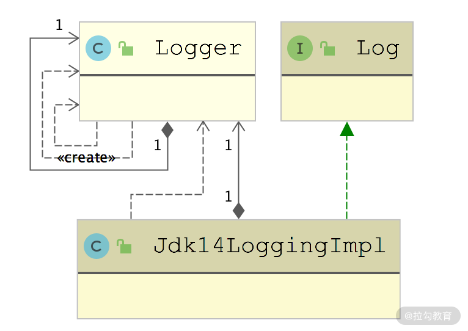
Jdk14LoggingImpl 继承关系图
Jdk14LoggingImpl 对 Log 接口的实现也比较简单，其中会将日志输出操作委托给底层封装的java.util.logging.Logger 对象的相应方法，这与前文介绍的典型适配器模式的实现完全一致。Jdk14LoggingImpl 中的核心实现以及注释如下：
public class Jdk14LoggingImpl implements Log {
// 指向一个java.util.logging.Logger对象
private final Logger log;
public Jdk14LoggingImpl(String clazz) {
// 初始化log字段
log = Logger.getLogger(clazz);
}
@Override
public void error(String s, Throwable e) {
// 全部调用依赖java.util.logging.Logger对象进行实现
log.log(Level.SEVERE, s, e);
}
// 省略其他级别的日志输出方法
}
在 MyBatis 的 org.apache.ibatis.logging 包下面，除了集成三方日志框架的适配器实现之外，还有一个 jdbc 包，这个包的功能不是将日志写入数据库中，而是将数据库操作涉及的信息通过指定的 Log 打印到日志文件中。我们可以通过这个包，将执行的 SQL 语句、SQL 绑定的参数、SQL 执行之后影响的行数等信息，统统打印到日志中，这个功能主要是在测试环境进行调试的时候使用，很少在线上开启，因为这会产生非常多的日志，拖慢系统性能。
代理模式
在后面即将介绍的 org.apache.ibatis.logging.jdbc 包中，使用到了 JDK 动态代理的相关知识，所以这里我们就先来介绍一下经典的静态代理模式，以及 JDK 提供的动态代理。
1. 静态代理模式
经典的静态代理模式，其类图如下所示：
代理模式类图
从该类图中，你可以看到与代理模式相关的三个核心角色。
- Subject：程序中的业务接口，定义了相关的业务方法。
- RealSubject：实现了 Subject 接口的业务实现类，其实现中完成了真正的业务逻辑。
- Proxy：代理类，实现了 Subject 接口，其中会持有一个 Subject 类型的字段，指向一个 RealSubject 对象。
在使用的时候，会将 RealSubject 对象封装到 Proxy 对象中，然后访问 Proxy 的相关方法，而不是直接访问 RealSubject 对象。在 Proxy 的方法实现中，不仅会调用 RealSubject 对象的相应方法完成业务逻辑，还会在 RealSubject 方法执行前后进行预处理和后置处理。
通过对代理模式的描述可知，Proxy 能够控制使用方对 RealSubject 对象的访问，或是在执行业务逻辑之前执行统一的预处理逻辑，在执行业务逻辑之后执行统一的后置处理逻辑。
代理模式除了实现访问控制以外，还能用于实现延迟加载。例如，查询数据库涉及网络 I/O 和磁盘 I/O，会是一个比较耗时的操作，有些时候从数据库加载到内存的数据，也并非系统真正会使用到的数据，所以就有了延迟加载这种优化操作。
延迟加载可以有效地避免数据库资源的浪费，其主要原理是：用户在访问数据库时，会立刻拿到一个代理对象，此时并没有执行任何 SQL 到数据库中查询数据，代理对象中自然也不会包含任何真正的有效数据；当用户真正需要使用数据时，会访问代理对象，此时会由代理对象去执行 SQL，完成数据库的查询。MyBatis 也提供了延迟加载功能，原理大同小异，具体的实现方式也是通过代理实现的。
针对每个 RealSubject 类，都需要创建一个 Proxy 代理类，当 RealSubject 这种需要被代理的类变得很多的时候，相应地就需要定义大量的 Proxy 类，这也是经典代理模式面临的一个问题。JDK 动态代理可以有效地解决这个问题，所以接下来我们就来一起分析 JDK 动态代理的核心原理。
2. JDK 动态代理
JDK 动态代理的核心是 InvocationHandler 接口。这里我先给出了一个 InvocationHandler 的示例实现，如下所示：
public class DemoInvokerHandler implements InvocationHandler {
private Object target; // 真正的业务对象，也就是RealSubject对象
// DemoInvokerHandler构造方法
public DemoInvokerHandler(Object target) {
this.target = target;
}
public Object invoke(Object proxy, Method method, Object[] args)
throws Throwable {
... // 在执行业务逻辑之前的预处理逻辑
Object result = method.invoke(target, args);
... // 在执行业务逻辑之后的后置处理逻辑
return result;
}
public Object getProxy() {
// 创建代理对象
return Proxy.newProxyInstance(Thread.currentThread()
.getContextClassLoader(),
target.getClass().getInterfaces(), this);
}
}
接下来，我们可以创建一个 main() 方法来模拟使用方创建并使用 DemoInvokerHandler 动态生成代理对象，示例代码如下：
public class Main {
public static void main(String[] args) {
Subject subject = new RealSubject();
DemoInvokerHandler invokerHandler =
new DemoInvokerHandler(subject);
// 获取代理对象
Subject proxy = (Subject) invokerHandler.getProxy();
// 调用代理对象的方法，它会调用DemoInvokerHandler.invoke()方法
proxy.operation();
}
}
现在假设有多个业务逻辑类，需要相同的预处理逻辑和后置处理逻辑，那么只需要提供一个 InvocationHandler 接口实现类即可。在程序运行过程中，JDK 动态代理会为每个业务类动态生成相应的代理类实现，并加载到 JVM 中，然后创建对应的代理实例对象。
下面我们就接着来深入分析一下 JDK 动态代理底层动态创建代理类的原理。不同 JDK 版本 Proxy 类的实现会有些许差异，但总体的核心思路基本一致，这里我们就以 JDK 1.8.0 版本为例进行说明。
首先，从前面的示例代码中可以看出，JDK 动态代理的入口方法是 Proxy.newProxyInstance()，这个静态方法有以下三个参数。
- loader（ClassLoader 类型）：加载动态生成的代理类的类加载器。
- interfaces（Class[] 类型）：业务类实现的接口。
- h（InvocationHandler 类型）：自定义的 InvocationHandler 对象。
下面进入 Proxy.newProxyInstance() 方法，查看其具体实现如下：
public static Object newProxyInstance(ClassLoader loader,
Class[] interfaces, InvocationHandler h)
throws IllegalArgumentException {
final Class<?>[] intfs = interfaces.clone();
... // 省略权限检查等代码
Class<?> cl = getProxyClass0(loader, intfs); // 获取代理类
... // 省略try/catch代码块和相关异常处理
// 获取代理类的构造方法
final Constructor<?> cons = cl.getConstructor(constructorParams);
final InvocationHandler ih = h;
return cons.newInstance(new Object[]{h}); // 创建代理对象
}
从 newProxyInstance() 方法的具体实现代码中我们可以看到，JDK 动态代理是在 getProxyClass0() 方法中完成代理类的生成和加载。getProxyClass0() 方法的具体实现如下：
private static Class getProxyClass0 (ClassLoader loader,
Class... interfaces) {
// 边界检查，限制接口数量（略）
// 如果指定的类加载器中已经创建了实现指定接口的代理类，则查找缓存；
// 否则通过ProxyClassFactory创建实现指定接口的代理类
return proxyClassCache.get(loader, interfaces);
}
proxyClassCache 是定义在 Proxy 类中一个静态字段，它是 WeakCache 类型的集合，用于缓存已经创建过的代理类，具体定义如下：
private static final WeakCache<ClassLoader, Class<?>[], Class<?>> proxyClassCache
= new WeakCache<>(new KeyFactory(),
new ProxyClassFactory());
WeakCache.get() 方法会首先尝试从缓存中查找代理类，如果查找失败，则会创建相应的 Factory 对象并调用其 get() 方法获取代理类。Factory 是 WeakCache 中的内部类，在 Factory.get() 方法中会通过 ProxyClassFactory.apply() 方法创建并加载代理类。
在 ProxyClassFactory.apply() 方法中，首先会检测代理类需要实现的接口集合，然后确定代理类的名称，之后创建代理类并将其写入文件中，最后加载代理类，返回对应的 Class 对象用于后续的实例化代理类对象。该方法的具体实现如下：
public Class apply(ClassLoader loader, Class[] interfaces) {
// ... 对interfaces集合进行一系列检测（略）
// ... 选择定义代理类的包名（略）
// 代理类的名称是通过包名、代理类名称前缀以及编号这三项组成的
long num = nextUniqueNumber.getAndIncrement();
String proxyName = proxyPkg + proxyClassNamePrefix + num;
// 生成代理类，并写入文件
byte[] proxyClassFile = ProxyGenerator.generateProxyClass(
proxyName, interfaces, accessFlags);
// 加载代理类，并返回Class对象
return defineClass0(loader, proxyName, proxyClassFile, 0,
proxyClassFile.length);
}
ProxyGenerator.generateProxyClass() 方法会按照指定的名称和接口集合生成代理类的字节码，并根据条件决定是否保存到磁盘上。该方法的具体代码如下：
public static byte[] generateProxyClass(final String name,
Class[] interfaces) {
ProxyGenerator gen = new ProxyGenerator(name, interfaces);
// 动态生成代理类的字节码，具体生成过程不再详细介绍
final byte[] classFile = gen.generateClassFile();
// 如果saveGeneratedFiles值为true，会将生成的代理类的字节码保存到文件中
if (saveGeneratedFiles) {
java.security.AccessController.doPrivileged(
new java.security.PrivilegedAction() {
public Void run() {
// 省略try/catch代码块
FileOutputStream file = new FileOutputStream(
dotToSlash(name) + ".class");
file.write(classFile);
file.close();
return null;
}
}
);
}
return classFile; // 返回上面生成的代理类的字节码
}
最后，为了清晰地看到 JDK 动态生成的代理类的真正代码，我们需要将上述生成的代理类的字节码进行反编译。上述示例为 RealSubject 生成的代理类，反编译后得到的代码如下：
public final class $Proxy143
extends Proxy implements Subject { // 实现了Subject接口
// 这里省略了从Object类继承下来的相关方法和属性
private static Method m3;
static {
// 省略了try/catch代码块
// 记录了operation()方法对应的Method对象
m3 = Class.forName("design.proxy.Subject")
.getMethod("operation", new Class[0]);
}
// 构造方法的参数就是我们在示例中使用的DemoInvokerHandler对象
public $Proxy11(InvocationHandler var1) throws {
super(var1);
}
public final void operation() throws {
// 省略了try/catch代码块
// 调用DemoInvokerHandler对象的invoke()方法
// 最终调用RealSubject对象的对应方法
super.h.invoke(this, m3, (Object[]) null);
}
}
到此为止，JDK 动态代理的基本使用以及核心原理就分析完了。这里我做一个简单的总结，JDK 动态代理的实现原理是：动态创建代理类，然后通过指定类加载器进行加载。在创建代理对象时，需要将 InvocationHandler 对象作为构造参数传入；当调用代理对象时，会调用 InvocationHandler.invoke() 方法，从而执行代理逻辑，最终调用真正业务对象的相应方法。
JDBC Logger
了解了代理模式以及 JDK 动态代理的基础知识之后，下面我们开始分析 org.apache.ibatis.logging.jdbc 包中的内容。
首先来看其中最基础的抽象类—— BaseJdbcLogger，它是 jdbc 包下其他 Logger 类的父类，继承关系如下图所示：

BaseJdbcLogger 继承关系图
在 BaseJdbcLogger 这个抽象类中，定义了 SET_METHODS 和 EXECUTE_METHODS 两个 Set 类型的集合。其中，SET_METHODS 用于记录绑定 SQL 参数涉及的全部 set*() 方法名称，例如 setString() 方法、setInt() 方法等。EXECUTE_METHODS 用于记录执行 SQL 语句涉及的所有方法名称，例如 execute() 方法、executeUpdate() 方法、executeQuery() 方法、addBatch() 方法等。这两个集合都是在 BaseJdbcLogger 的静态代码块中被填充的。
从上面的 BaseJdbcLogger 继承关系图中可以看到，BaseJdbcLogger 的子类同时会实现 InvocationHandler 接口。
我们先来看其中的 ConnectionLogger 实现，其底层维护了一个 Connection 对象的引用，在ConnectionLogger.newInstance() 方法中会使用 JDK 动态代理的方式为这个 Connection 对象创建相应的代理对象。
invoke() 方法是代理对象的核心方法，在该方法中，ConnectionLogger 会为 prepareStatement()、prepareCall()、createStatement() 三个方法添加代理逻辑。下面来看 invoke() 方法的具体实现，具体代码以及注释如下：
public Object invoke(Object proxy, Method method, Object[] params)
throws Throwable {
try {
if (Object.class.equals(method.getDeclaringClass())) {
// 如果调用的是从Object继承的方法，则直接调用，不做任何拦截
return method.invoke(this, params);
}
// 调用prepareStatement()方法、prepareCall()方法的时候，
// 会在创建PreparedStatement对象之后，用PreparedStatementLogger为其创建代理对象
if ("prepareStatement".equals(method.getName()) || "prepareCall".equals(method.getName())) {
if (isDebugEnabled()) {
// 通过statementLog这个Log输出日志
debug(" Preparing: " + removeExtraWhitespace((String) params[0]), true);
}
PreparedStatement stmt = (PreparedStatement) method.invoke(connection, params);
stmt = PreparedStatementLogger.newInstance(stmt, statementLog, queryStack);
return stmt;
} else if ("createStatement".equals(method.getName())) {
// 调用createStatement()方法的时候，
// 会在创建Statement对象之后，用StatementLogger为其创建代理对象
Statement stmt = (Statement) method.invoke(connection, params);
stmt = StatementLogger.newInstance(stmt, statementLog, queryStack);
return stmt;
} else {
// 除了上述三个方法之外，其他方法的调用将直接传递给底层Connection对象的相应方法处理
return method.invoke(connection, params);
}
} catch (Throwable t) {
throw ExceptionUtil.unwrapThrowable(t);
}
}
下面我们来看 PreparedStatementLogger，在其 invoke() 方法中调用了 SET_METHODS 集合中的方法、EXECUTE_METHODS 集合中的方法或 getResultSet() 方法时，会添加相应的代理逻辑。StatementLogger 中的 Invoke() 方法实现与之类似，这里就不再赘述。
最后我们再看下 ResultSetLogger 对 InvocationHandler 接口的实现，其中会针对 ResultSet.next() 方法进行后置处理，主要是打印结果集中每一行数据以及统计结果集总行数等信息，具体实现和注释如下：
public Object invoke(Object proxy, Method method, Object[] params) throws Throwable {
try {
if (Object.class.equals(method.getDeclaringClass())) {
// 如果调用Object的方法，则直接调用，不做任何其他处理
return method.invoke(this, params);
}
Object o = method.invoke(rs, params);
// 针对ResultSet.next()方法进行后置处理
if ("next".equals(method.getName())) {
if ((Boolean) o) { // 检测next()方法的返回值，确定是否还存在下一行数据
rows++; // 记录ResultSet中的行数
if (isTraceEnabled()) {
// 获取数据集的列元数据
ResultSetMetaData rsmd = rs.getMetaData();
// 获取数据集的列数
final int columnCount = rsmd.getColumnCount();
if (first) { // 如果是数据集的第一行数据，会输出表头信息
first = false;
// 这里除了输出表头，还会记录BLOB等超大类型的列名
printColumnHeaders(rsmd, columnCount);
}
// 输出当前遍历的这行记录，这里会过滤掉超大类型列的数据，不进行输出
printColumnValues(columnCount);
}
} else { // 完成结果集的遍历之后，这里会在日志中输出总行数
debug(" Total: " + rows, false);
}
}
clearColumnInfo(); // 清空column*集合
return o;
} catch (Throwable t) {
throw ExceptionUtil.unwrapThrowable(t);
}
}
总结
在这一讲中，我们主要介绍的是 MyBatis 基础模块中的日志模块。
- 首先，介绍了适配器模式的核心知识点，这也是日志模块底层的设计思想。
- 然后，说明了日志模块是如何基于适配器模式集成多种三方日志框架的。
- 接下来，详细讲解了静态代理模式以及 JDK 动态代理的实现原理。
- 最后，深入分析了 JDBC Logger 是如何基于 JDK 动态代理实现日志功能的。
07 深入数据源和事务，把握持久化框架的两个关键命脉
数据源是持久层框架中最核心的组件之一，在实际工作中比较常见的数据源有 C3P0、Apache Common DBCP、Proxool 等。作为一款成熟的持久化框架，MyBatis 不仅自己提供了一套数据源实现，而且还能够方便地集成第三方数据源。
javax.sql.DataSource 是 Java 语言中用来抽象数据源的接口，其中定义了所有数据源实现的公共行为，MyBatis 自身提供的数据源实现也要实现该接口。MyBatis 提供了两种类型的数据源实现，分别是 PooledDataSource 和 UnpooledDataSource，继承关系如下图所示：
针对不同的 DataSource 实现，MyBatis 提供了不同的工厂实现来进行创建，如下图所示，这是工厂方法模式的一个典型应用场景。
编写一个设计合理、性能优秀的数据源只是第一步，在通过数据源拿到数据库连接之后，还需要开启事务，才能进行数据的修改。MyBatis 对数据库事务进行了一层抽象，也就是我们这一讲后面要介绍的 Transaction 接口，它可以管理事务的开启、提交和回滚。
工厂方法模式
工厂方法模式中定义了 Factory 这个工厂接口，如下图所示，其中定义了 createProduct() 方法创建右侧继承树中的对象，不同的工厂接口实现类会创建右侧继承树中不同 Product 实现类（例如 ProductImpl 1 和 ProductImpl 2）。
从上图中，我们可以看到工厂方法模式由四个核心角色构成。
- Factory 接口：工厂方法模式的核心接口之一。使用方会依赖 Factory 接口创建 Product 对象实例。
- Factory 实现类（图中的 FactoryImpl 1 和 FactoryImpl 2）：用于创建 Product 对象。不同的 Factory 实现会根据需求创建不同的 Product 实现类。
- Product 接口：用于定义业务类的核心功能。Factory 接口创建出来的所有对象都需要实现 Product 接口。使用方依赖 Product 接口编写其他业务实现，所以使用方关心的是 Product 接口这个抽象，而不是其中的具体实现逻辑。
- Product 实现类（图中的 ProductImpl 1 和 ProductImpl 2）：实现了 Product 接口中定义的方法，完成了具体的业务逻辑。
这里假设一个场景：目前我们要做一个注册中心模块，已经有了 ZookeeperImpl 和 EtcdImpl 两个业务实现类，分别支持了与 ZooKeeper 交互和与 etcd 交互，此时来了个新需求，需要支持与 Consul 交互。该怎么解决这个需求呢？那就是使用工厂方法模式，我们只需要添加新的 ConsulFactory 实现类和 ConsulImpl 实现类即可完成扩展。
通过上面这个场景的描述，你可以看出：工厂方法模式最终也是符合“开放-封闭”原则的，可以通过添加新的 Factory 接口实现和 Product 接口实现来扩展整个体系的功能。另外，工厂方法模式对使用方暴露的是 Factory 和 Product 这两个抽象的接口，而不是具体的实现，也就帮助使用方面向接口编程。
数据源工厂
了解了工厂方法模式的基础知识之后，下面我们回到 MyBatis 的数据源实现上来。MyBatis 的数据源模块也是用到了工厂方法模式，如果需要扩展新的数据源实现时，只需要添加对应的 Factory 实现类，新的数据源就可以被 MyBatis 使用。
DataSourceFactory 接口就扮演了 MyBatis 数据源实现中的 Factory 接口角色。UnpooledDataSourceFactory 和 PooledDataSourceFactory 实现了 DataSourceFactory 接口，也就是 Factory 接口实现类的角色。三者的继承关系如下图所示：
DataSourceFactory 接口中最核心的方法是 getDataSource() 方法，该方法用来生成一个 DataSource 对象。
在 UnpooledDataSourceFactory 这个实现类的初始化过程中，会直接创建 UnpooledDataSource 对象，其中的 dataSource 字段会指向该 UnpooledDataSource 对象。接下来调用的 setProperties() 方法会根据传入的配置信息，完成对该 UnpooledDataSource 对象相关属性的设置。
UnpooledDataSourceFactory 对于 getDataSource() 方法的实现就相对简单了，其中直接返回了上面创建的 UnpooledDataSource 对象。
从前面介绍的 DataSourceFactory 继承关系图中可以看到，PooledDataSourceFactory 是通过继承 UnpooledDataSourceFactory 间接实现了 DataSourceFactory 接口。在 PooledDataSourceFactory 中并没有覆盖 UnpooledDataSourceFactory 中的任何方法，唯一的变化就是将 dataSource 字段指向的 DataSource 对象类型改为 PooledDataSource 类型。
DataSource
JDK 提供的 javax.sql.DataSource 接口在 MyBatis 数据源中扮演了 Product 接口的角色。 MyBatis 提供的数据源实现有两个，一个 UnpooledDataSource 实现，另一个 PooledDataSource 实现，它们都是 Product 具体实现类的角色。
1. UnpooledDataSource
我们先来看 UnpooledDataSource 的实现，其中的核心字段有如下。
- driverClassLoader（ClassLoader 类型）：加载 Driver 类的类加载器。
- driverProperties（Properties 类型）：数据库连接驱动的相关配置。
- registeredDrivers（Map<String, Driver> 类型）：缓存所有已注册的数据库连接驱动。
- defaultTransactionIsolationLevel（Integer 类型）：事务隔离级别。
在 Java 世界中，几乎所有数据源实现的底层都是依赖 JDBC 操作数据库的，而使用 JDBC 的第一步就是向 DriverManager 注册 JDBC 驱动类，之后才能创建数据库连接。
DriverManager 中定义了 registeredDrivers 字段用于记录注册的 JDBC 驱动，这是一个 CopyOnWriteArrayList 类型的集合，是线程安全的。
MyBatis 的 UnpooledDataSource 实现中定义了如下静态代码块，从而在 UnpooledDataSource 加载时，将已在 DriverManager 中注册的 JDBC 驱动器实例复制一份到 UnpooledDataSource.registeredDrivers 集合中。
static {
// 从DriverManager中读取JDBC驱动
Enumeration<Driver> drivers = DriverManager.getDrivers();
while (drivers.hasMoreElements()) {
Driver driver = drivers.nextElement();
// 将DriverManager中的全部JDBC驱动记录到registeredDrivers集合
registeredDrivers.put(driver.getClass().getName(), driver);
}
}
在 getConnection() 方法中，UnpooledDataSource 会调用 doGetConnection() 方法获取数据库连接，具体实现如下：
private Connection doGetConnection(Properties properties) throws SQLException {
// 初始化数据库驱动
initializeDriver();
// 创建数据库连接
Connection connection = DriverManager.getConnection(url, properties);
// 配置数据库连接
configureConnection(connection);
return connection;
}
这里需要注意两个方法：
- 在调用的 initializeDriver() 方法中，完成了 JDBC 驱动的初始化，其中会创建配置中指定的 Driver 对象，并将其注册到 DriverManager 以及上面介绍的 UnpooledDataSource.registeredDrivers 集合中保存；
- configureConnection() 方法会对数据库连接进行一系列配置，例如，数据库连接超时时长、事务是否自动提交以及使用的事务隔离级别。
2. PooledDataSource
JDBC 连接的创建是非常耗时的，从数据库这一侧看，能够建立的连接数也是有限的，所以在绝大多数场景中，我们都需要使用数据库连接池来缓存、复用数据库连接。
使用池化技术缓存数据库连接会带来很多好处，例如：
- 在空闲时段缓存一定数量的数据库连接备用，防止被突发流量冲垮；
- 实现数据库连接的重用，从而提高系统的响应速度；
- 控制数据库连接上限，防止连接过多造成数据库假死；
- 统一管理数据库连接，避免连接泄漏。
数据库连接池在初始化时，一般会同时初始化特定数量的数据库连接，并缓存在连接池中备用。当我们需要操作数据库时，会从池中获取连接；当使用完一个连接的时候，会将其释放。这里需要说明的是，在使用连接池的场景中，并不会直接将连接关闭，而是将连接返回到池中缓存，等待下次使用。
数据库连接池中缓存的连接总量是有上限的，不仅如此，连接池中维护的空闲连接数也是有上限的，下面是使用数据库连接池时几种特殊场景的描述。
- 如果连接池中维护的总连接数达到上限，且所有连接都已经被调用方占用，则后续获取数据库连接的线程将会被阻塞（进入阻塞队列中等待），直至连接池中出现可用的数据库连接，这个可用的连接是由其他使用方释放得到的。
- 如果连接池中空闲连接数达到了配置上限，则后续返回到池中的空闲连接不会进入连接池缓存，而是直接关闭释放掉，这主要是为了减少维护空闲数据库连接带来的压力，同时减少数据库的资源开销。
- 如果将连接总数的上限值设置得过大，可能会导致数据库因连接过多而僵死或崩溃，影响整个服务的可用性；而如果设置得过小，可能会无法完全发挥出数据库的性能，造成数据库资源的浪费。
- 如果将空闲连接数的上限值设置得过大，可能会造成服务资源以及数据库资源的浪费，毕竟要维护这些空闲连接；如果设置得过小，当出现瞬间峰值请求时，服务的响应速度就会比较慢。
因此，在设置数据库连接池的最大连接数以及最大空闲连接数时，需要进行折中和权衡，当然也要执行一些性能测试来辅助我们判断。
介绍完了数据库连接池的基础知识之后，我们再来看 PooledDataSource 实现中提供的数据库连接池的相关实现。
在 PooledDataSource 中并没有直接维护数据库连接的集合，而是维护了一个 PooledState 类型的字段（state 字段），而这个 PooledState 才是管理连接的地方。在 PooledState 中维护的数据库连接并不是真正的数据库连接（不是 java.sql.Connection 对象），而是 PooledConnection 对象。
（1）PooledConnection
PooledConnection 是 MyBatis 中定义的一个 InvocationHandler 接口实现类，其中封装了真正的 java.sql.Connection 对象以及相关的代理对象，这里的代理对象就是通过上一讲介绍的 JDK 动态代理产生的。
下面来看 PooledConnection 中的核心字段。
- dataSource（PooledDataSource 类型）：记录当前 PooledConnection 对象归属的 PooledDataSource 对象。也就是说，当前的 PooledConnection 是由该 PooledDataSource 对象创建的；在通过 close() 方法关闭当前 PooledConnection 的时候，当前 PooledConnection 会被返还给该 PooledDataSource 对象。
- realConnection（Connection 类型）：当前 PooledConnection 底层的真正数据库连接对象。
- proxyConnection（Connection 类型）：指向了 realConnection 数据库连接的代理对象。
- checkoutTimestamp（long 类型）：使用方从连接池中获取连接的时间戳。
- createdTimestamp（long 类型）：连接创建的时间戳。
- lastUsedTimestamp（long 类型）：连接最后一次被使用的时间戳。
- connectionTypeCode（int 类型）：数据库连接的标识。该标识是由数据库 URL、username 和 password 三部分组合计算出来的 hash 值，主要用于连接对象确认归属的连接池。
- valid（boolean 类型）：用于标识 PooledConnection 对象是否有效。该字段的主要目的是防止使用方将连接归还给连接池之后，依然保留该 PooledConnection 对象的引用并继续通过该 PooledConnection 对象操作数据库。
下面来看 PooledConnection 的构造方法，其中会初始化上述字段，这里尤其关注 proxyConnection 这个 Connection 代理对象的初始化，使用的是 JDK 动态代理的方式实现的，其中传入的 InvocationHandler 实现正是 PooledConnection 自身。
PooledConnection.invoke() 方法中只对 close() 方法进行了拦截，具体实现如下：
public Object invoke(Object proxy, Method method, Object[] args) throws Throwable {
String methodName = method.getName();
if (CLOSE.equals(methodName)) {
// 如果调用close()方法，并没有直接关闭底层连接，而是将其归还给关联的连接池
dataSource.pushConnection(this);
return null;
}
if (!Object.class.equals(method.getDeclaringClass())) {
// 只要不是Object的方法，都需要检测当前PooledConnection是否可用
checkConnection();
}
// 调用realConnection的对应方法
return method.invoke(realConnection, args);
}
（2）PoolState
接下来看PoolState这个类，它负责管理连接池中所有 PooledConnection 对象的状态，维护了两个 ArrayList <PooledConnection> 集合按照 PooledConnection 对象的状态分类存储，其中 idleConnections 集合用来存储空闲状态的 PooledConnection 对象，activeConnections 集合用来存储活跃状态的 PooledConnection 对象。
另外，PoolState 中还定义了多个 long 类型的统计字段。
- requestCount：请求数据库连接的次数。
- accumulatedRequestTime：获取连接的累积耗时。
- accumulatedCheckoutTime：所有连接的 checkoutTime 累加。PooledConnection 中有一个 checkoutTime 属性，表示的是使用方从连接池中取出连接到归还连接的总时长，也就是连接被使用的时长。
- claimedOverdueConnectionCount：当连接长时间未归还给连接池时，会被认为该连接超时，该字段记录了超时的连接个数。
- accumulatedCheckoutTimeOfOverdueConnections：记录了累积超时时间。
- accumulatedWaitTime：当连接池全部连接已经被占用之后，新的请求会阻塞等待，该字段就记录了累积的阻塞等待总时间。
- hadToWaitCount：记录了阻塞等待总次数。
- badConnectionCount：无效的连接数。
（3）获取连接
在了解了 PooledConnection 和 PooledState 的核心实现之后，我们再来看 PooledDataSource 实现，这里按照使用方的逻辑依次分析 PooledDataSource 的核心方法。
首先是 getConnection() 方法，其中先是依赖 popConnection() 方法获取 PooledConnection 对象，然后从 PooledConnection 中获取数据库连接的代理对象（即前面介绍的 proxyConnection 字段）。
这里调用的 popConnection() 方法是从连接池中获取数据库连接的核心，具体步骤如下。
- 检测当前连接池中是否有空闲的有效连接，如果有，则直接返回连接；如果没有，则继续执行下一步。
- 检查连接池当前的活跃连接数是否已经达到上限值，如果未达到，则尝试创建一个新的数据库连接，并在创建成功之后，返回新建的连接；如果已达到最大上限，则往下执行。
- 检查活跃连接中是否有连接超时，如果有，则将超时的连接从活跃连接集合中移除，并重复步骤 2；如果没有，则执行下一步。
- 当前请求数据库连接的线程阻塞等待，并定期执行前面三步检测相应的分支是否可能获取连接。
下面是 popConnection() 方法的具体实现代码：
private PooledConnection popConnection(String username, String password) throws SQLException {
while (conn == null) {
synchronized (state) { // 加锁同步
// 步骤1：检测空闲连接集合
if (!state.idleConnections.isEmpty()) {
// 获取空闲连接
conn = state.idleConnections.remove(0);
} else { // 没有空闲连接
// 步骤2：活跃连接数没有到上限值，则创建新连接
if (state.activeConnections.size() < poolMaximumActiveConnections) {
// 创建新数据库连接，并封装成PooledConnection对象
conn = new PooledConnection(dataSource.getConnection(), this);
} else {// 活跃连接数已到上限值，则无法创建新连接
// 步骤3：检测超时连接
// 获取最早的活跃连接
PooledConnection oldestActiveConnection = state.activeConnections.get(0);
long longestCheckoutTime = oldestActiveConnection.getCheckoutTime();
// 检测该连接是否超时
if (longestCheckoutTime > poolMaximumCheckoutTime) {
// 对超时连接的信息进行统计
state.claimedOverdueConnectionCount++;
state.accumulatedCheckoutTimeOfOverdueConnections += longestCheckoutTime;
state.accumulatedCheckoutTime += longestCheckoutTime;
// 将超时连接移出activeConnections集合
state.activeConnections.remove(oldestActiveConnection);
// 如果超时连接上有未提交的事务，则自动回滚
if (!oldestActiveConnection.getRealConnection().getAutoCommit()) {
try {
oldestActiveConnection.getRealConnection().rollback();
} catch (SQLException e) {
}
}
// 创建新PooledConnection对象，但是真正的数据库连接
conn = new PooledConnection(oldestActiveConnection.getRealConnection(), this);
conn.setCreatedTimestamp(oldestActiveConnection.getCreatedTimestamp());
conn.setLastUsedTimestamp(oldestActiveConnection.getLastUsedTimestamp());
// 将超时PooledConnection设置为无效
oldestActiveConnection.invalidate();
} else {
// 步骤4：无空闲连接、无法创建新连接且无超时连接，则只能阻塞等待
if (!countedWait) { // 统计阻塞等待次数
state.hadToWaitCount++;
countedWait = true;
}
long wt = System.currentTimeMillis();
state.wait(poolTimeToWait);// 阻塞等待
// 统计累积的等待时间
state.accumulatedWaitTime += System.currentTimeMillis() - wt;
}
}
}
if (conn != null) { // 对连接进行统计
if (conn.isValid()) { // 检测PooledConnection是否有效
// 配置PooledConnection的相关属性，设置connectionTypeCode、checkoutTimestamp、lastUsedTimestamp字段的值
conn.setConnectionTypeCode(assembleConnectionTypeCode(dataSource.getUrl(), username, password));
conn.setCheckoutTimestamp(System.currentTimeMillis());
conn.setLastUsedTimestamp(System.currentTimeMillis());
state.activeConnections.add(conn); // 添加到活跃连接集合
state.requestCount++;
state.accumulatedRequestTime += System.currentTimeMillis() - t;
} else {
... ...// 统计失败的情况
}
}
}
}
return conn;
}
（4）释放连接
前面介绍 PooledConnection 的时候，我们提到当调用 proxyConnection 对象的 close() 方法时，连接并没有真正关闭，而是通过 PooledDataSource.pushConnection() 方法将 PooledConnection 归还给了关联的 PooledDataSource。pushConnection() 方法的关键步骤如下所示。
- 从活跃连接集合（即前面提到的 activeConnections 集合）中删除传入的 PooledConnection 对象。
- 检测该 PooledConnection 对象是否可用。如果连接已不可用，则递增 badConnectionCount 字段进行统计，之后，直接丢弃 PooledConnection 对象即可。如果连接依旧可用，则执行下一步。
- 检测当前 PooledDataSource 连接池中的空闲连接是否已经达到上限值。如果达到上限值，则 PooledConnection 无法放回到池中，正常关闭其底层的数据库连接即可。如果未达到上限值，则继续执行下一步。
- 将底层连接重新封装成 PooledConnection 对象，并添加到空闲连接集合（也就是前面提到的 idleConnections 集合），然后唤醒所有阻塞等待空闲连接的线程。
介绍完关键步骤之后，我们来具体分析 pushConnection() 方法的核心实现：
protected void pushConnection(PooledConnection conn) throws SQLException {
synchronized (state) {
state.activeConnections.remove(conn); // 步骤1：从活跃连接集合中删除该连接
if (conn.isValid()) {// 步骤2：检测该 PooledConnection 对象是否可用
// 步骤3：检测当前PooledDataSource连接池中的空闲连接是否已经达到上限值
if (state.idleConnections.size() < poolMaximumIdleConnections && conn.getConnectionTypeCode() == expectedConnectionTypeCode) {
// 累计增加accumulatedCheckoutTime
state.accumulatedCheckoutTime += conn.getCheckoutTime();
if (!conn.getRealConnection().getAutoCommit()) {
// 回滚未提交的事务
conn.getRealConnection().rollback();
}
// 步骤4：将底层连接重新封装成PooledConnection对象，
// 并添加到空闲连接集合（也就是前面提到的 idleConnections 集合）
PooledConnection newConn = new PooledConnection(conn.getRealConnection(), this);
state.idleConnections.add(newConn);
// 设置新PooledConnection对象的创建时间戳和最后使用时间戳
newConn.setCreatedTimestamp(conn.getCreatedTimestamp());
newConn.setLastUsedTimestamp(conn.getLastUsedTimestamp());
conn.invalidate(); // 丢弃旧PooledConnection对象
// 唤醒所有阻塞等待空闲连接的线程
state.notifyAll();
} else {
// 当前PooledDataSource连接池中的空闲连接已经达到上限值
// 当前数据库连接无法放回到池中
// 累计增加accumulatedCheckoutTime
state.accumulatedCheckoutTime += conn.getCheckoutTime();
if (!conn.getRealConnection().getAutoCommit()) {
// 回滚未提交的事务
conn.getRealConnection().rollback();
}
// 关闭真正的数据库连接
conn.getRealConnection().close();
// 将PooledConnection对象设置为无效
conn.invalidate();
}
} else {
// 统计无效PooledConnection对象个数
state.badConnectionCount++;
}
}
}
（5）检测连接可用性
通过对上述 pushConnection() 方法和 popConnection() 方法的分析，我们大致了解了 PooledDataSource 的核心实现。正如我们看到的那样，这两个方法都需要检测一个数据库连接是否可用，这是通过 PooledConnection.isValid() 方法实现的，在该方法中会检测三个方面：
- valid 字段值为 true；
- realConnection 字段值不为空；
- 执行 PooledDataSource.pingConnection() 方法，返回值为 true。
只有这三个条件都成立，才认为这个 PooledConnection 对象可用。其中，PooledDataSource.pingConnection() 方法会尝试请求数据库，并执行一条测试 SQL 语句，检测是否真的能够访问到数据库，该方法的核心代码如下：
protected boolean pingConnection(PooledConnection conn) {
boolean result = true; // 记录此次ping操作是否成功完成
try {
// 检测底层数据库连接是否已经关闭
result = !conn.getRealConnection().isClosed();
} catch (SQLException e) {
result = false;
}
// 如果底层与数据库的网络连接没断开，则需要检测poolPingEnabled字段的配置，决定
// 是否能执行ping操作。另外，ping操作不能频繁执行，只有超过一定时长
// (超过poolPingConnectionsNotUsedFor指定的时长)未使用的连接，才需要ping
// 操作来检测数据库连接是否正常
if (result && poolPingEnabled && poolPingConnectionsNotUsedFor >= 0
&& conn.getTimeElapsedSinceLastUse() > poolPingConnectionsNotUsedFor) {
try {
// 执行poolPingQuery字段中记录的测试SQL语句
Connection realConn = conn.getRealConnection();
try (Statement statement = realConn.createStatement()) {
statement.executeQuery(poolPingQuery).close();
}
if (!realConn.getAutoCommit()) {
realConn.rollback();
}
result = true; // 不抛异常，即为成功
} catch (Exception e) {
conn.getRealConnection().close();
result = false; // 抛异常，即为失败
}
}
return result;
}
事务接口
介绍完 MyBatis 对数据源的实现之后，我们接下来看与数据源紧密关联的另一个概念——事务。
当我们从数据源中得到一个可用的数据库连接之后，就可以开启一个数据库事务了，事务成功开启之后，我们才能修改数据库中的数据。在修改完成之后，我们需要提交事务，完成整个事务内的全部修改操作，如果修改过程中出现异常，我们也可以回滚事务，放弃整个事务中的全部修改操作。
可见，控制事务在一个以数据库为基础的服务中，是一件非常重要的工作。为此，MyBatis 专门抽象出来一个 Transaction 接口，好在相较于我们上面讲述的数据源，这部分内容还是比较简单、比较好理解的。
Transaction 接口是 MyBatis 中对数据库事务的抽象，其中定义了提交事务、回滚事务，以及获取事务底层数据库连接的方法。
JdbcTransaction、ManagedTransaction 是 MyBatis 自带的两个 Transaction 接口实现，这里也使用到了工厂方法模式，如下图所示：
TransactionFactory 是用于创建 Transaction 的工厂接口，其中最核心的方法是 newTransaction() 方法，它会根据数据库连接或数据源创建 Transaction 对象。
JdbcTransactionFactory 和 ManagedTransactionFactory 是 TransactionFactory 的两个实现类，分别用来创建 JdbcTransaction 对象和 ManagedTransaction 对象，具体实现比较简单，这里就不再展示，你若感兴趣的话可以参考源码进行学习。
接下来，我们看一下 JdbcTransaction 的实现，其中维护了事务关联的数据库连接以及数据源对象，同时还记录了事务自身的属性，例如，事务隔离级别和是否自动提交。
在构造函数中，JdbcTransaction 并没有立即初始化数据库连接（也就是 connection 字段），connection 字段会被延迟初始化，具体的初始化时机是在调用 getConnection() 方法时，通过dataSource.getConnection() 方法完成初始化。
在日常使用数据库事务的时候，我们最常用的操作就是提交和回滚事务，Transaction 接口将这两个操作抽象为 commit() 方法和 rollback() 方法。在 commit() 方法和 rollback() 方法中，JdbcTransaction 都是通过 java.sql.Connection 的同名方法实现事务的提交和回滚的。
ManagedTransaction 的实现相较于 JdbcTransaction 来说，有些许类似，也是依赖关联的 DataSource 获取数据库连接，但其 commit()、rollback() 方法都是空实现，事务的提交和回滚都是依靠容器管理的，这也是它被称为 ManagedTransaction 的原因。
另外，与 JdbcTransaction 不同的是，ManagedTransaction 会根据初始化时传入的 closeConnection 值确定是否在事务关闭时，同时关闭关联的数据库连接（即调用其 close() 方法）。
总结
在这一讲，我重点介绍了 MyBatis 中非常重要的两个概念——数据源和事务。
- 首先，讲解了 MyBatis 数据源模块中用到的工厂方法模式的基础知识。
- 然后，深入分析了 DataSourceFactory 和 DataSource 接口的核心实现，其中重点介绍了 PooledDataSource 这个连接池实现。
- 最后，还分析了 MyBatis 对数据库事务的一层简单抽象，也就是 Transaction 接口及其实现，这部分内容还是比较简单的。
08 Mapper 文件与 Java 接口的优雅映射之道
在<使用 MyBatis 实现订单系统示例的时候>，我们会为每个 Mapper.xml 配置文件创建一个对应的 Mapper 接口，例如，订单系统示例中的 CustomerMapper.xml 配置文件与 CustomerMapper 接口，定义完 CustomerMapper 接口之后，我们无须提供 CustomerMapper 接口实现，就可以直接调用 CustomerMapper 对象的方法执行 CustomerMapper.xml 配置文件中的 SQL 语句。
这里你可能会有几个疑惑：
- 为什么需要 CustomerMapper 接口来执行对应的 SQL 语句呢？
- 为什么无须提供 CustomerMapper 接口的实现类呢？
- 实际使用的 CustomerMapper 对象是什么呢？CustomerMapper 对象是怎么创建的呢？底层原理是什么呢？
学习完这一讲，你就会找到这些问题的答案。
MyBatis 的前身是 iBatis，我们在使用 iBatis 的时候，如果想查询一个 Customer 对象的话，可以调用 SqlSession.queryForObject ("find", customerId) 方法，queryForObject() 方法的这两个参数分别是要执行的 SQL 语句唯一标识（示例中就是定义在 CustomerMapper.xml 中的 id 为 find 的 SQL 语句），以及 SQL 语句执行时需要的实参（示例中就是顾客 ID）。
这里 SQL 语句的唯一标识是一个字符串，如果我们在写代码的时候，不小心写错了这个唯一标识，例如将“find”写成了“finb”，在代码编译以及 iBatis 初始化的过程中，根本发现不了这个问题，而是在真正执行到这行代码的时候才会抛出异常，这样其实对流量是有损的。
MyBatis 中的 Mapper 接口就可以很好地解决这个问题。
示例中的 CustomerMapper 接口中定义了 SQL 语句唯一标识同名的 find() 方法，我们在写代码的时候使用的是 CustomerMapper.find() 方法，如果拼写成 CustomerMapper.finb()，编译会失败。这是因为 MyBatis 初始化的时候会尝试将 CustomerMapper 接口中的 find() 方法名与 CustomerMapper.xml 配置文件中的 SQL 唯一标识进行映射，如果 SQL 语句唯一标识写错成“finb”，MyBatis 会发现这个错误，并在初始化过程中就抛出异常，这样编译器以及 MyBatis 就可以帮助我们更早发现异常，避免线上流量的损失。
在 MyBatis 中，实现 CustomerMapper 接口与 CustomerMapper.xml 配置文件映射功能的是 binding 模块，其中涉及的核心类如下图所示：
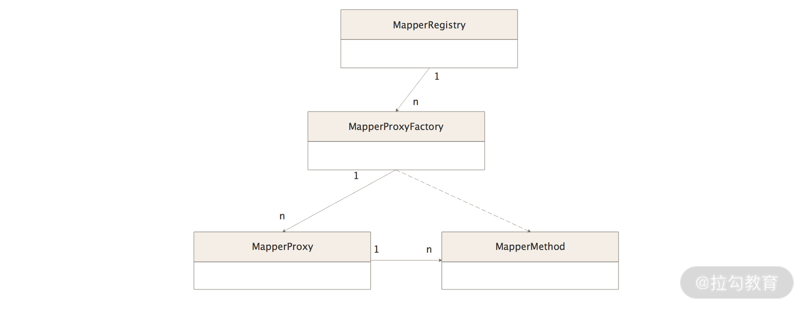
binding 模块核心组件关系图
下面我们就开始详细分析 binding 模块中涉及的这些核心组件。
MapperRegistry
MapperRegistry 是 MyBatis 初始化过程中构造的一个对象，主要作用就是统一维护 Mapper 接口以及这些 Mapper 的代理对象工厂。
下面我们先来看 MapperRegistry 中的核心字段。
- config（Configuration 类型）：指向 MyBatis 全局唯一的 Configuration 对象，其中维护了解析之后的全部 MyBatis 配置信息。
- knownMappers（Map<Class
<?>, MapperProxyFactory<?>> 类型）：维护了所有解析到的 Mapper 接口以及 MapperProxyFactory 工厂对象之间的映射关系。
在 MyBatis 初始化时，会读取全部 Mapper.xml 配置文件，还会扫描全部 Mapper 接口中的注解信息，之后会调用 MapperRegistry.addMapper() 方法填充 knownMappers 集合。在 addMapper() 方法填充 knownMappers 集合之前，MapperRegistry 会先保证传入的 type 参数是一个接口且 knownMappers 集合没有加载过 type 类型，然后才会创建相应的 MapperProxyFactory 工厂并记录到 knownMappers 集合中。
在我们使用 CustomerMapper.find() 方法执行数据库查询的时候，MyBatis 会先从MapperRegistry 中获取 CustomerMapper 接口的代理对象，这里就使用到 MapperRegistry.getMapper()方法，它会拿到前面创建的 MapperProxyFactory 工厂对象，并调用其 newInstance() 方法创建 Mapper 接口的代理对象。
MapperProxyFactory
正如分析 MapperRegistry 时介绍的那样，MapperProxyFactory 的核心功能就是创建 Mapper 接口的代理对象，其底层核心原理就是前面《06 | 日志框架千千万，MyBatis 都能兼容的秘密是什么？》介绍的 JDK 动态代理。
在 MapperRegistry 中会依赖 MapperProxyFactory 的 newInstance() 方法创建代理对象，底层则是通过 JDK 动态代理的方式生成代理对象的，如下代码所示，这里使用的 InvocationHandler 实现是 MapperProxy。
protected T newInstance(MapperProxy<T> mapperProxy) {
// 创建实现了mapperInterface接口的动态代理对象，这里使用的InvocationHandler 实现是MapperProxy
return (T) Proxy.newProxyInstance(mapperInterface.getClassLoader(),
new Class[]{mapperInterface}, mapperProxy);
}
MapperProxy
通过分析 MapperProxyFactory 这个工厂类，我们可以清晰地看到MapperProxy 是生成 Mapper 接口代理对象的关键，它实现了 InvocationHandler 接口。
下面我们先来介绍一下 MapperProxy 中的核心字段。
- sqlSession（SqlSession 类型）：记录了当前 MapperProxy 关联的 SqlSession 对象。在与当前 MapperProxy 关联的代理对象中，会用该 SqlSession 访问数据库。
- mapperInterface（Class
<T>类型）：Mapper 接口类型，也是当前 MapperProxy 关联的代理对象实现的接口类型。 - methodCache（Map<Method, MapperMethodInvoker> 类型）：用于缓存 MapperMethodInvoker 对象的集合。methodCache 中的 key 是 Mapper 接口中的方法，value 是该方法对应的 MapperMethodInvoker 对象。
- lookupConstructor（Constructor 类型）：针对 JDK 8 中的特殊处理，该字段指向了 MethodHandles.Lookup 的构造方法。
- privateLookupInMethod（Method 类型）：除了 JDK 8 之外的其他 JDK 版本会使用该字段，该字段指向 MethodHandles.privateLookupIn() 方法。
这里涉及 MethodHandle 的内容，所以下面我们就来简单介绍一下 MethodHandle 的基础知识点。
1. MethodHandle 简介
从 Java 7 开始，除了反射之外，在 java.lang.invoke 包中新增了 MethodHandle 这个类，它的基本功能与反射中的 Method 类似，但它比反射更加灵活。反射是 Java API 层面支持的一种机制，MethodHandle 则是 JVM 层支持的机制，相较而言，反射更加重量级，MethodHandle 则更轻量级，性能也比反射更好些。
使用 MethodHandle 进行方法调用的时候，往往会涉及下面几个核心步骤：
- 创建 MethodType 对象，确定方法的签名，这个签名会涉及方法参数及返回值的类型；
- 在 MethodHandles.Lookup 这个工厂对象中，根据方法名称以及上面创建的 MethodType 查找对应 MethodHandle 对象；
- 将 MethodHandle 绑定到一个具体的实例对象；
- 调用 MethodHandle.invoke()/invokeWithArguments()/invokeExact() 方法，完成方法调用。
下面是 MethodHandle 的一个简单示例：
public class MethodHandleDemo {
// 定义一个sayHello()方法
public String sayHello(String s) {
return "Hello, " + s;
}
public static void main(String[] args) throws Throwable {
// 初始化MethodHandleDemo实例
MethodHandleDemo subMethodHandleDemo = new SubMethodHandleDemo();
// 定义sayHello()方法的签名，第一个参数是方法的返回值类型，第二个参数是方法的参数列表
MethodType methodType = MethodType.methodType(String.class, String.class);
// 根据方法名和MethodType在MethodHandleDemo中查找对应的MethodHandle
MethodHandle methodHandle = MethodHandles.lookup()
.findVirtual(MethodHandleDemo.class, "sayHello", methodType);
// 将MethodHandle绑定到一个对象上，然后通过invokeWithArguments()方法传入实参并执行
System.out.println(methodHandle.bindTo(subMethodHandleDemo)
.invokeWithArguments("MethodHandleDemo"));
// 下面是调用MethodHandleDemo对象(即父类)的方法
MethodHandleDemo methodHandleDemo = new MethodHandleDemo();
System.out.println(methodHandle.bindTo(methodHandleDemo)
.invokeWithArguments("MethodHandleDemo"));
}
public static class SubMethodHandleDemo extends MethodHandleDemo{
// 定义一个sayHello()方法
public String sayHello(String s) {
return "Sub Hello, " + s;
}
}
}
在 MethodHandle 调用方法的时候，也是支持多态的，在通过 bindTo() 方法绑定到某个实例对象的时候，在 bind 过程中会进行类型检查等一系列检查操作。
通过上面这个示例我们可以看出，使用 MethodHandle 实现反射的效果，更像我们平时通过 Java 代码生成的字节码，例如，在字节码中可以看到创建的方法签名（MethodType）、方法的具体调用方式（findStatic()、findSpecial()、findVirtual() 等方法）以及类型的隐式转换。
2. MethodProxy 中的代理逻辑
介绍完 MethodHandle 的基础之后，我们回到 MethodProxy 继续分析。
MapperProxy.invoke() 方法是代理对象执行的入口，其中会拦截所有非 Object 方法，针对每个被拦截的方法，都会调用 cachedInvoker() 方法获取对应的 MapperMethod 对象，并调用其 invoke() 方法执行代理逻辑以及目标方法。
在 cachedInvoker() 方法中，首先会查询 methodCache 缓存，如果查询的方法为 default 方法，则会根据当前使用的 JDK 版本，获取对应的 MethodHandle 并封装成 DefaultMethodInvoker 对象写入缓存；如果查询的方法是非 default 方法，则创建 PlainMethodInvoker 对象写入缓存。
cachedInvoker() 方法的具体实现如下：
private MapperMethodInvoker cachedInvoker(Method method) throws Throwable {
// 尝试从methodCache缓存中查询方法对应的MapperMethodInvoker
MapperMethodInvoker invoker = methodCache.get(method);
if (invoker != null) {
return invoker;
}
// 如果方法在缓存中没有对应的MapperMethodInvoker，则进行创建
return methodCache.computeIfAbsent(method, m -> {
if (m.isDefault()) { // 针对default方法的处理
// 这里根据JDK版本的不同，获取方法对应的MethodHandle的方式也有所不同
// 在JDK 8中使用的是lookupConstructor字段，而在JDK 9中使用的是
// privateLookupInMethod字段。获取到MethodHandle之后，会使用
// DefaultMethodInvoker进行封装
if (privateLookupInMethod == null) {
return new DefaultMethodInvoker(getMethodHandleJava8(method));
} else {
return new DefaultMethodInvoker(getMethodHandleJava9(method));
}
} else {
// 对于其他方法，会创建MapperMethod并使用PlainMethodInvoker封装
return new PlainMethodInvoker(
new MapperMethod(mapperInterface, method, sqlSession.getConfiguration()));
}
});
}
其中使用到的 DefaultMethodInvoker 和 PlainMethodInvoker 都是 MapperMethodInvoker 接口的实现，如下图所示：

MapperMethodInvoker 接口继承关系图
在 DefaultMethodInvoker.invoke() 方法中，会通过底层维护的 MethodHandle 完成方法调用，核心实现如下：
public Object invoke(Object proxy, Method method, Object[] args, SqlSession sqlSession) throws Throwable {
// 首先将MethodHandle绑定到一个实例对象上，然后调用invokeWithArguments()方法执行目标方法
return methodHandle.bindTo(proxy).invokeWithArguments(args);
}
在 PlainMethodInvoker.invoke() 方法中，会通过底层维护的 MapperMethod 完成方法调用，其核心实现如下：
public Object invoke(Object proxy, Method method, Object[] args, SqlSession sqlSession) throws Throwable {
// 直接执行MapperMethod.execute()方法完成方法调用
return mapperMethod.execute(sqlSession, args);
}
MapperMethod
通过对 MapperProxy 的分析我们知道，MapperMethod 是最终执行 SQL 语句的地方，同时也记录了 Mapper 接口中的对应方法，其核心字段也围绕这两方面的内容展开。
1. SqlCommand
MapperMethod 的第一个核心字段是 command（SqlCommand 类型），其中维护了关联 SQL 语句的相关信息。在 MapperMethod$SqlCommand 这个内部类中，通过 name 字段记录了关联 SQL 语句的唯一标识，通过 type 字段（SqlCommandType 类型）维护了 SQL 语句的操作类型，这里 SQL 语句的操作类型分为 INSERT、UPDATE、DELETE、SELECT 和 FLUSH 五种。
下面我们就来看看 SqlCommand 如何查找 Mapper 接口中一个方法对应的 SQL 语句的信息，该逻辑在 SqlCommand 的构造方法中实现，如下：
public SqlCommand(Configuration configuration, Class<?> mapperInterface, Method method) {
// 获取Mapper接口中对应的方法名称
final String methodName = method.getName();
// 获取Mapper接口的类型
final Class<?> declaringClass = method.getDeclaringClass();
// 将Mapper接口名称和方法名称拼接起来作为SQL语句唯一标识，
// 到Configuration这个全局配置对象中查找SQL语句
// MappedStatement对象就是Mapper.xml配置文件中一条SQL语句解析之后得到的对象
MappedStatement ms = resolveMappedStatement(mapperInterface,
methodName, declaringClass, configuration);
if (ms == null) {
// 针对@Flush注解的处理
if (method.getAnnotation(Flush.class) != null) {
name = null;
type = SqlCommandType.FLUSH;
} else { // 没有@Flush注解，会抛出异常
throw new BindingException("...");
}
} else {
// 记录SQL语句唯一标识
name = ms.getId();
// 记录SQL语句的操作类型
type = ms.getSqlCommandType();
}
}
这里调用的 resolveMappedStatement() 方法不仅会尝试根据 SQL 语句的唯一标识从 Configuration 全局配置对象中查找关联的 MappedStatement 对象，还会尝试顺着 Mapper 接口的继承树进行查找，直至查找成功为止。具体实现如下：
private MappedStatement resolveMappedStatement(Class<?> mapperInterface, String methodName,
Class<?> declaringClass, Configuration configuration) {
// 将Mapper接口名称和方法名称拼接起来作为SQL语句唯一标识
String statementId = mapperInterface.getName() + "." + methodName;
// 检测Configuration中是否包含相应的MappedStatement对象
if (configuration.hasStatement(statementId)) {
return configuration.getMappedStatement(statementId);
} else if (mapperInterface.equals(declaringClass)) {
// 如果方法就定义在当前接口中，则证明没有对应的SQL语句，返回null
return null;
}
// 如果当前检查的Mapper接口(mapperInterface)中不是定义该方法的接口(declaringClass)，
// 则会从mapperInterface开始，沿着继承关系向上查找递归每个接口，
// 查找该方法对应的MappedStatement对象
for (Class<?> superInterface : mapperInterface.getInterfaces()) {
if (declaringClass.isAssignableFrom(superInterface)) {
MappedStatement ms = resolveMappedStatement(superInterface, methodName,
declaringClass, configuration);
if (ms != null) {
return ms;
}
}
}
return null;
}
}
2. MethodSignature
MapperMethod 的第二个核心字段是 method 字段（MethodSignature 类型），其中维护了 Mapper 接口中方法的相关信息。
首先是 Mapper 接口方法返回值的相关信息，涉及下面七个字段。
- returnsMany、returnsMap、returnsVoid、returnsCursor、returnsOptional（boolean 类型）：用于表示方法返回值是否为 Collection 集合或数组、Map 集合、void、Cursor、Optional 类型。
- returnType（Class<?> 类型）：方法返回值的具体类型。
- mapKey（String 类型）：如果方法的返回值为 Map 集合，则通过 mapKey 字段记录了作为 key 的列名。mapKey 字段的值是通过解析方法上的 @MapKey 注解得到的。
接下来是与 Mapper 接口方法的参数列表相关的三个字段。
- resultHandlerIndex（Integer 类型）：记录了 Mapper 接口方法的参数列表中 ResultHandler 类型参数的位置。
- rowBoundsIndex（Integer 类型）：记录了 Mapper 接口方法的参数列表中 RowBounds 类型参数的位置。
- paramNameResolver（ParamNameResolver 类型）：用来解析方法参数列表的工具类。
在上述字段中，需要着重讲解的是 ParamNameResolver 这个解析方法参数列表的工具类。
在 ParamNameResolver 中有一个 names 字段（SortedMap<Integer, String>类型）记录了各个参数在参数列表中的位置以及参数名称，其中 key 是参数在参数列表中的位置索引，value 为参数的名称。我们可以通过 @Param 注解指定一个参数名称，如果没有特别指定，则默认使用参数列表中的变量名称作为其名称，这与 ParamNameResolver 的 useActualParamName 字段相关。useActualParamName 是一个全局配置。
如果我们将 useActualParamName 配置为 false，ParamNameResolver 会使用参数的下标索引作为其名称。另外，names 集合会跳过 RowBounds 类型以及 ResultHandler 类型的参数，如果使用下标索引作为参数名称，在 names 集合中就会出现 KV 不一致的场景。例如下图就很好地说明了这种不一致的场景，其中 saveCustomer(long id, String name, RowBounds bounds, String address) 方法对应的 names 集合为 {{0, "0"}, {1, "1"}, {2, "3"}}。

names 集合中 KV 不一致示意图
从图中可以看到，由于 RowBounds 参数的存在，第四个参数在 names 集合中的 KV 出现了不一致（即 key = 2 与 value = "3" 不一致）。
完成 names 集合的初始化之后，我们再来看如何从 names 集合中查询参数名称，该部分逻辑在 ParamNameResolver.getNamedParams() 方法，其中会将 Mapper 接口方法的实参与 names 集合中记录的参数名称相关联，其核心逻辑如下：
public Object getNamedParams(Object[] args) {
// 获取方法中非特殊类型(RowBounds类型和ResultHandler类型)的参数个数
final int paramCount = names.size();
if (args == null || paramCount == 0) {
return null; // 方法没有非特殊类型参数，返回null即可
} else if (!hasParamAnnotation && paramCount == 1) {
// 方法参数列表中没有使用@Param注解，且只有一个非特殊类型参数
Object value = args[names.firstKey()];
return wrapToMapIfCollection(value, useActualParamName ? names.get(0) : null);
} else {
// 处理存在@Param注解或是存在多个非特殊类型参数的场景
// param集合用于记录了参数名称与实参之间的映射关系
// 这里的ParamMap继承了HashMap，与HashMap的唯一不同是：
// 向ParamMap中添加已经存在的key时，会直接抛出异常，而不是覆盖原有的Key
final Map<String, Object> param = new ParamMap<>();
int i = 0;
for (Map.Entry<Integer, String> entry : names.entrySet()) {
// 将参数名称与实参的映射保存到param集合中
param.put(entry.getValue(), args[entry.getKey()]);
// 同时，为参数创建"param+索引"格式的默认参数名称，具体格式为：param1, param2等，
// 将"param+索引"的默认参数名称与实参的映射关系也保存到param集合中
final String genericParamName = GENERIC_NAME_PREFIX + (i + 1);
if (!names.containsValue(genericParamName)) {
param.put(genericParamName, args[entry.getKey()]);
}
i++;
}
return param;
}
}
了解了 ParamNameResolver 的核心功能之后，我们回到 MethodSignature 继续分析，在其构造函数中会解析方法中的返回值、参数列表等信息，并初始化前面介绍的核心字段，这里也会使用到前面介绍的 ParamNameResolver 工具类。下面是 MethodSignature 构造方法的核心实现：
public MethodSignature(Configuration configuration, Class<?> mapperInterface, Method method) {
... // 通过TypeParameterResolver工具类解析方法的返回值类型，初始化returnType字段值，省略该解析部分代码
// 根据返回值类型，初始化returnsVoid、returnsMany、returnsCursor、
// returnsMap、returnsOptional这五个与方法返回值类型相关的字段
this.returnsVoid = void.class.equals(this.returnType);
...
// 如果返回值为Map类型，则从方法的@MapKey注解中获取Map中为key的字段名称
this.mapKey = getMapKey(method);
this.returnsMap = this.mapKey != null;
// 解析方法中RowBounds类型参数以及ResultHandler类型参数的下标索引位置，
// 初始化rowBoundsIndex和resultHandlerIndex字段
this.rowBoundsIndex = getUniqueParamIndex(method, RowBounds.class);
this.resultHandlerIndex = getUniqueParamIndex(method, ResultHandler.class);
// 创建ParamNameResolver工具对象，在创建ParamNameResolver对象的时候，
// 会解析方法的参数列表信息
this.paramNameResolver = new ParamNameResolver(configuration, method);
}
在初始化过程中，我们看到会调用 getUniqueParamIndex() 方法查找目标类型参数的下标索引位置，其核心原理就是遍历方法的参数列表，逐个匹配参数的类型是否为目标类型，如果匹配成功，则会返回当前参数的下标索引。getUniqueParamIndex() 方法的具体实现比较简单，这里就不再展示，你若感兴趣的话可以参考源码进行学习。
3. 深入 execute() 方法
分析完 MapperMethod 中的几个核心内部类，我们回到 MapperMethod 继续介绍。
execute() 方法是 MapperMethod 中最核心的方法之一。execute() 方法会根据要执行的 SQL 语句的具体类型执行 SqlSession 的相应方法完成数据库操作，其核心实现如下：
public Object execute(SqlSession sqlSession, Object[] args) {
Object result;
switch (command.getType()) { // 判断SQL语句的类型
case INSERT: {
// 通过ParamNameResolver.getNamedParams()方法将方法的实参与
// 参数的名称关联起来
Object param = method.convertArgsToSqlCommandParam(args);
// 通过SqlSession.insert()方法执行INSERT语句，
// 在rowCountResult()方法中，会根据方法的返回值类型对结果进行转换
result = rowCountResult(sqlSession.insert(command.getName(), param));
break;
}
case UPDATE: {
Object param = method.convertArgsToSqlCommandParam(args);
// 通过SqlSession.update()方法执行UPDATE语句
result = rowCountResult(sqlSession.update(command.getName(), param));
break;
}
// DELETE分支与UPDATE类似，省略
case SELECT:
if (method.returnsVoid() && method.hasResultHandler()) {
// 如果方法返回值为void，且参数中包含了ResultHandler类型的实参，
// 则查询的结果集将会由ResultHandler对象进行处理
executeWithResultHandler(sqlSession, args);
result = null;
} else if (method.returnsMany()) {
// executeForMany()方法处理返回值为集合或数组的场景
result = executeForMany(sqlSession, args);
} else ...// 省略针对Map、Cursor以及Optional返回值的处理
}
break;
// 省略FLUSH和default分支
}
return result;
}
在 execute() 方法中，对于 INSERT、UPDATE、DELETE 三类 SQL 语句的返回结果，都会通过 rowCountResult() 方法处理。我们知道，上述三种类型的 SQL 语句的执行结果是一个数字，多数场景中代表了 SQL 语句影响的数据行数（注意，这个返回值的具体含义根据 MySQL 的配置有所变化），rowCountResult() 方法会将这个 int 值转换成 Mapper 接口方法的返回值，具体规则如下：
- Mapper 方法返回值为 void，则忽略 SQL 语句的 int 返回值，直接返回 null；
- Mapper 方法返回值为 int 或 Integer 类型，则将 SQL 语句返回的 int 值直接返回；
- Mapper 方法返回值为 long 或 Long 类型，则将 SQL 语句返回的 int 值转换成 long 类型之后返回；
- Mapper 方法返回值为 boolean 或 Boolean 类型，则将 SQL 语句返回的 int 值与 0 比较大小，并将比较结果返回。
接下来看 execute() 方法针对 SELECT 语句查询到的结果集的处理。
- 如果在方法参数列表中有 ResultHandler 类型的参数存在，则会使用 executeWithResultHandler() 方法完成查询，底层依赖的是 SqlSession.select() 方法，结果集将会交由传入的 ResultHandler 对象进行处理。
- 如果方法返回值为集合类型或是数组类型，则会调用 executeForMany() 方法，底层依赖 SqlSession.selectList() 方法进行查询，并将得到的 List 转换成目标集合类型。
- 如果方法返回值为 Map 类型，则会调用 executeForMap() 方法，底层依赖 SqlSession.selectMap() 方法完成查询，并将结果集映射成 Map 集合。
- 针对 Cursor 以及 Optional返回值的处理，也是依赖的 SqlSession 的相关方法完成查询的，这里不再展开。
总结
在这一讲，我们重点介绍了 MyBatis 中的 binding 模块，正是该模块实现了 Mapper 接口与 Mapper.xml 配置文件的映射功能。
- 首先，介绍了 MapperRegistry 这个注册中心，其中维护了 Mapper 接口与代理工厂对象之间的映射关系。
- 然后，分析了 MapperProxy 和 MapperProxyFactory，其中 MapperProxyFactory 使用 JDK 动态代理方式为相应的 Mapper 接口创建了代理对象，MapperProxy 则封装了核心的代理逻辑，将拦截到的目标方法委托给对应的 MapperMethod 处理。
- 最后，详细讲解了 MapperMethod，分析了它是如何根据方法签名执行相应的 SQL 语句。
到这里，你应该就能回答开篇的那几个疑惑了吧？我这里也总结一下。
- 使用 CustomerMapper 接口来执行 SQL 语句，是因为可以在编译期提前暴露错误。
- 之所以不用为 CustomerMapper 接口提供具体实现，是因为调用的是 CustomerMapper 的代理对象。
- CustomerMapper 对象是通过 JDK 动态代理生成的，在调用这些代理对象的方法时，就会按照我们今天这一讲整体讲解的逻辑和顺序（所以这一讲你要系统地去学习，各个知识点和步骤是串联在一起的），找到相应的 CustomerMapper.xml 中定义的 SQL 语句并执行这些 SQL 语句，完成数据库操作。
09 基于 MyBatis 缓存分析装饰器模式的最佳实践
缓存是优化数据库性能的常用手段之一，我们在实践中经常使用的是 Memcached、Redis 等外部缓存组件，很多持久化框架提供了集成这些外部缓存的功能，同时自身也提供了内存级别的缓存，MyBatis 作为持久化框架中的佼佼者，自然也提供了这些功能。
MyBatis 的缓存分为一级缓存、二级缓存两个级别，并且都实现了 Cache 接口，所以这一讲我们就重点来介绍 Cache 接口及其核心实现类，这也是一级缓存和二级缓存依赖的基础实现。
不过在讲解这些内容之前，我先来介绍下装饰器模式，因为 Cache 模块除了提供基础的缓存功能外，还提供了多种扩展功能，而这些功能都是通过装饰器的形式提供的。
装饰器模式
我们在做一个产品的时候，需求会以多期的方式执行，随着产品的不断迭代，新需求也会不断出现，我们开始设计一个类的时候，可能并没有考虑到新需求的场景，此时就需要为某些组件添加新的功能来满足这些需求。
如果要符合开放-封闭的原则，我们最好不要直接修改已有的具体实现类，因为会破坏其已有的稳定性，在自测、集成测试以及线上回测的时候，除了要验证新需求外，还要回归测试波及的历史功能，这是让开发人员和测试人员都非常痛苦的地方，也是违反开放-封闭原则带来的最严重的问题之一。
除了修改原有实现之外，还有一种修改方案，那就是继承，也就是需要创建一个新的子类，然后在子类中覆盖父类的相关方法，并添加实现新需求的扩展。
但继承在某些场景下是不可行的，例如，要覆盖的方法被 final 关键字修饰了，那么在 Java 的语法中就无法被覆盖。使用继承方案的另一个缺点就是整个继承树的膨胀，例如，当新需求存在多种排列组合或是复杂的判断时，那就需要写非常多的子类实现。
正是由于这些缺点的存在，所以应该尽量多地使用组合方式进行扩展，尽量少使用继承方式进行扩展，除非迫不得已。
装饰器模式就是一种通过组合方式实现扩展的设计模式，它可以完美地解决上述功能增强的问题。装饰器的核心思想是为已有实现类创建多个包装类，由这些新增的包装类完成新需求的扩展。
装饰器模式使用的是组合方式，相较于继承这种静态的扩展方式，装饰器模式可以在运行时根据系统状态，动态决定为一个实现类添加哪些扩展功能。
装饰器模式的核心类图，如下所示：

装饰器模式类图
从图中可以看到，装饰器模式中的核心类主要有下面四个。
- Component 接口：已有的业务接口，是整个功能的核心抽象，定义了 Decorator 和 ComponentImpl 这些实现类的核心行为。JDK 中的 IO 流体系就使用了装饰器模式，其中的 InputStream 接口就扮演了 Component 接口的角色。
- ComponentImpl 实现类：实现了上面介绍的 Component 接口，其中实现了 Component 接口最基础、最核心的功能，也就是被装饰的、原始的基础类。在 JDK IO 流体系之中的 FileInputStream 就扮演了 ComponentImpl 的角色，它实现了读取文件的基本能力，例如，读取单个 byte、读取 byte[] 数组。
- Decorator 抽象类：所有装饰器的父类，实现了 Component 接口，其核心不是提供新的扩展能力，而是封装一个 Component 类型的字段，也就是被装饰的目标对象。需要注意的是，这个被装饰的对象可以是 ComponentImpl 对象，也可以是 Decorator 实现类的对象，之所以这么设计，就是为了实现下图的装饰器嵌套。这里的 DecoratorImpl1 装饰了 DecoratorImpl2，DecoratorImpl2 装饰了 ComponentImpl，经过了这一系列装饰之后得到的 Component 对象，除了具有 ComponentImpl 的基础能力之外，还拥有了 DecoratorImpl1 和 DecoratorImpl2 的扩展能力。JDK IO 流体系中的 FilterInputStream 就扮演了 Decorator 的角色。

Decorator 与 Component 的引用关系
- DecoratorImpl1、DecoratorImpl2：Decorator 的具体实现类，它们的核心就是在被装饰对象的基础之上添加新的扩展功能。在 JDK IO 流体系中的 BufferedInputStream 就扮演了 DecoratorImpl 的角色，它在原有的 InputStream 基础上，添加了一个 byte[] 缓冲区，提供了更加高效的读文件操作。
Cache 接口及核心实现
Cache 接口是 MyBatis 缓存中最顶层的抽象接口，位于 org.apache.ibatis.cache 包中，定义了 MyBatis 缓存最核心、最基础的行为。
Cache 接口中的核心方法主要是 putObject()、getObject() 和 removeObject() 三个方法，分别用来写入、查询和删除缓存数据。
Cache 接口有非常多的实现类（如下图），其中的 PerpetualCache 扮演了装饰器模式中 ComponentImpl 这个角色，实现了 Cache 接口缓存数据的基本能力。
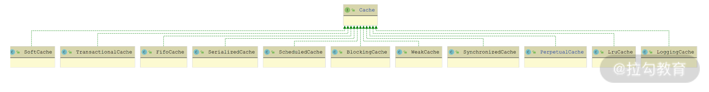
Cache 接口实现关系图
PerpetualCache 中有两个核心字段：一个是 id 字段（String 类型），记录了缓存对象的唯一标识；另一个是 cache 字段（HashMap 类型），真正实现 Cache 存储的数据结构，对 Cache 接口的实现也会直接委托给这个 HashMap 对象的相关方法，例如，PerpetualCache 中 putObject() 方法就是调用 cache 的 put() 方法写入缓存数据的。
Cache 接口装饰器
除了 PerpetualCache 之外的其他所有 Cache 接口实现类，都是装饰器实现，也就是 DecoratorImpl 的角色。下面我们就逐个分析这些 Cache 接口的装饰器都提供了哪些功能上的扩展。
1. BlockingCache
顾名思义，BlockingCache 是在原有 Cache 实现之上添加了阻塞线程的特性。
对于一个 Key 来说，同一时刻，BlockingCache 只会让一个业务线程到数据库中去查找，查找到结果之后，会添加到 BlockingCache 中缓存。
作为一个装饰器，BlockingCache 自然会包含一个 Cache 类型的字段，也就是 delegate 字段。除此之外，BlockingCache 还包含了一个 locks 集合（ConcurrentHashMap<Object, CountDownLatch> 类型）和一个 timeout 字段（long 类型），其中 locks 为每个 Key 分配了一个 CountDownLatch 用来控制并发访问，timeout 指定了一个线程在 BlockingCache 上阻塞的最长时间。
下面我们来看 BlockingCache 的 getObject() 方法实现，其中需要先调用 acquireLock() 方法获取锁，才能查询 delegate 缓存，命中缓存之后会立刻调用 releaseLock() 方法释放锁，如果未命中缓存则不会释放锁。
在 acquireLock() 方法中，通过 locks 这个 ConcurrentHashMap 集合以及其中各个 Key 关联的 CountDownLatch 对象，实现了锁的效果，具体实现如下：
private void acquireLock(Object key) {
// 初始化一个全新的CountDownLatch对象
CountDownLatch newLatch = new CountDownLatch(1);
while (true) {
// 尝试将key与newLatch这个CountDownLatch对象关联起来
// 如果没有其他线程并发，则返回的latch为null
CountDownLatch latch = locks.putIfAbsent(key, newLatch);
if (latch == null) {
// 如果当前key未关联CountDownLatch，
// 则无其他线程并发，当前线程获取锁成功
break;
}
// 当前key已关联CountDownLatch对象，则表示有其他线程并发操作当前key，
// 当前线程需要阻塞在并发线程留下的CountDownLatch对象(latch)之上，
// 直至并发线程调用latch.countDown()唤醒该线程
if (timeout > 0) { // 根据timeout的值，决定阻塞超时时间
boolean acquired = latch.await(timeout, TimeUnit.MILLISECONDS);
if (!acquired) { // 超时未获取到锁，则抛出异常
throw new CacheException("...");
}
} else { // 死等
latch.await();
}
}
}
在 releaseLock() 方法中，会从 locks 集合中删除 Key 关联的 CountDownLatch 对象，并唤醒阻塞在这个 CountDownLatch 对象上的业务线程。
看到这里，你可能会问：假设业务线程 1、2 并发访问某个 Key，线程 1 查询 delegate 缓存失败，不释放锁，timeout <=0 的时候，线程 2 就会阻塞吗？是的，但是线程 2 不会永久阻塞，因为我们需要保证线程 1 接下来会查询数据库，并调用 putObject() 方法或 removeObject() 方法，其中会通过 releaseLock() 方法释放锁。
最终，我们得到 BlockingCache 的核心原理如下图所示：

BlockingCache 核心原理图
2. FifoCache
MyBatis 中的缓存本质上就是 JVM 堆中的一块内存，我们需要严格控制 Cache 的大小，防止 Cache 占用内存过大而影响程序的性能。操作系统有很多缓存淘汰规则，MyBatis 也提供了类似的规则来清理缓存。
这就引出了 FifoCache 装饰器，它是 FIFO（先入先出）策略的装饰器。在系统运行过程中，我们会不断向 Cache 中增加缓存条目，当 Cache 中的缓存条目达到上限的时候，则会将 Cache 中最早写入的缓存条目清理掉，这也就是先入先出的基本原理。
FifoCache 作为一个 Cache 装饰器，自然也会包含一个指向 Cache 的字段（也就是 delegate 字段），同时它还维护了两个与 FIFO 相关的字段：一个是 keyList 队列（LinkedList），主要利用 LinkedList 集合有序性，记录缓存条目写入 Cache 的先后顺序；另一个是当前 Cache 的大小上限（size 字段），当 Cache 大小超过该值时，就会从 keyList 集合中查找最早的缓存条目并进行清理。
FifoCache 的 getObject() 方法和 removeObject() 方法实现非常简单，都是直接委托给底层 delegate 这个被装饰的 Cache 对象的同名方法。FifoCache 的关键实现在 putObject() 方法中，在将数据写入被装饰的 Cache 对象之前，FifoCache 会通过 cycleKeyList() 方法执行 FIFO 策略清理缓存，然后才会调用 delegate.putObject() 方法完成数据写入。
3. LruCache
除了 FIFO 策略之外，MyBatis 还支持 LRU（Least Recently Used，近期最少使用算法）策略来清理缓存。LruCache 就是使用 LRU 策略清理缓存的装饰器实现，如果 LruCache 发现缓存需要清理，它会清除最近最少使用的缓存条目。
LruCache 中除了有一个 delegate 字段指向被装饰 Cache 对象之外，还维护了一个 LinkedHashMap 集合（keyMap 字段），用来记录各个缓存条目最近的使用情况，以及一个 eldestKey 字段（Object 类型），用来指向最近最少使用的 Key。
LinkedHashMap 继承了 HashMap，底层使用数组来存储 KV 数据，数组中存储的是 LinkedHashMap.Entry 类型的元素。在 LinkedHashMap.Entry 中除了存储 KV 数据之外，还维护了 before、after 两个字段分别指向当前 Entry 前后的两个 Entry 节点。在 LinkedHashMap 中维护了 head、tail 两个指针，分别指向了第一个和最后一个 Entry 节点。LinkedHashMap 的原理如下图所示：
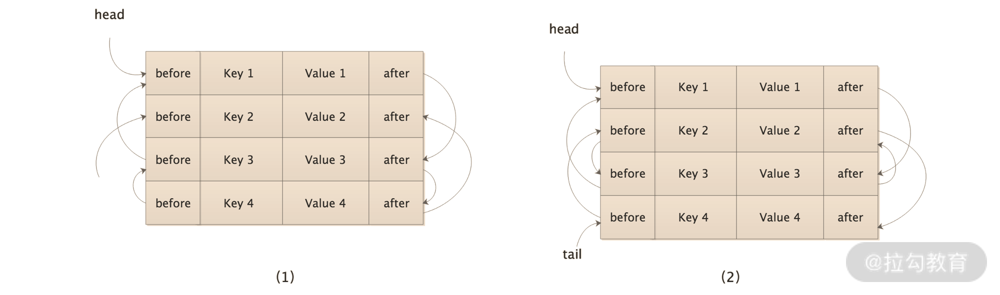
LinkedHashMap 原理图
在上图（1）中，通过 Entry 中的 before 和 after 指针形成了一个链表，当我们调用 get() 方法访问 Key 4 时，LinkedHashMap 除了返回 Value 4 之外，还会默默修改 Entry 链表，将 Key 4 项移动到链表的尾部，得到上图（2）中的结构。
LruCache 中的 keyMap 覆盖了 LinkedHashMap 默认的 removeEldestEntry() 方法实现，当 LruCache 中缓存条目达到上限的时候，返回 true，即删除 Entry 链表中 head 指向的 Entry。LruCache 就是依赖 LinkedHashMap 上述的这些特点来确定最久未使用的缓存条目并完成删除的。
下面是 LruCache 初始化过程中，keyMap 对 LinkedHashMap.removeEldestEntry() 方法的覆盖：
keyMap = new LinkedHashMap<Object, Object>(size, .75F, true) {
// 调用LinkedHashMap.put()方法时，会调用removeEldestEntry()方法
// 决定是否删除head指向的Entry数据
protected boolean removeEldestEntry(Map.Entry<Object, Object> eldest) {
boolean tooBig = size() > size;
if (tooBig) { // 已到达缓存上限，更新eldestKey字段，并返回true，LinkedHashMap会删除该Key
eldestKey = eldest.getKey();
}
return tooBig;
}
};
了解了 LruCache 核心原理之后，我们再来看 getObject()、putObject() 等 Cache 接口方法的实现。
首先是 getObject() 方法，除了委托给底层被装饰的 Cache 对象获取缓存数据之外，还会执行 keyMap.get() 方法更新 Key 在这个 LinkedHashMap 集合中的顺序。
在 putObject() 方法中，除了将 KV 数据写入底层被装饰的 Cache 对象中，还会调用 cycleKeyList() 方法将 KV 数据写入 keyMap 集合中，此时可能会触发 eldestKey 数据的清理，具体实现如下：
private void cycleKeyList(Object key) {
keyMap.put(key, key); // 将KV数据写入keyMap集合
if (eldestKey != null) {
// 如果eldestKey不为空，则将从底层Cache中删除
delegate.removeObject(eldestKey);
eldestKey = null;
}
}
4. SoftCache
看到 SoftCache 这个名字，有一定 Java 经验的同学可能会立刻联想到 Java 中的软引用（Soft Reference），所以这里我们就先来简单回顾一下什么是强引用和软引用，以及这些引用的相关机制。
强引用是 JVM 中最普遍的引用，我们常用的赋值操作就是强引用，例如，Person p = new Person(); 这条语句会将新创建的 Person 对象赋值为 p 这个变量，p 这个变量指向这个 Person 对象的引用，就是强引用。这个 Person 对象被引用的时候，即使是 JVM 内存空间不足触发 GC，甚至是内存溢出（OutOfMemoryError），也不会回收这个 Person 对象。
软引用比强引用稍微弱一些。当 JVM 内存不足时，GC 才会回收那些只被软引用指向的对象，从而避免 OutOfMemoryError。当 GC 将只被软引用指向的对象全部回收之后，内存依然不足时，JVM 才会抛出 OutOfMemoryError。根据软引用的这一特性，我们会发现软引用特别适合做缓存，因为缓存中的数据可以从数据库中恢复，所以即使因为 JVM 内存不足而被回收掉，也可以通过数据库恢复缓存中的对象。
在使用软引用的时候，需要注意一点：当拿到一个软引用的时候，我们需要先判断其 get() 方法返回值是否为 null。如果为 null，则表示这个软引用指向的对象在之前的某个时刻，已经被 GC 掉了；如果不为 null，则表示这个软引用指向的对象还存活着。
在有的场景中，我们可能需要在一个对象的可达性（是否已经被回收）发生变化时，得到相应的通知，引用队列（Reference Queue） 就是用来实现这个需求的。在创建 SoftReference 对象的时候，我们可以为其关联一个引用队列，当这个 SoftReference 指向的对象被回收的时候，JVM 就会将这个 SoftReference 作为通知，添加到与其关联的引用队列，之后我们就可以从引用队列中，获取这些通知信息，也就是 SoftReference 对象。
下面我们正式开始介绍 SoftCache。SoftCache 中的 value 是 SoftEntry 类型的对象，这里的 SoftEntry 是 SoftCache 的内部类，继承了 SoftReference，其中指向 key 的引用是强引用，指向 value 的引用是软引用，具体实现如下：
private static class SoftEntry extends SoftReference<Object> {
private final Object key;
SoftEntry(Object key, Object value, ReferenceQueue<Object> garbageCollectionQueue) {
// 指向value的是软引用，并且关联了引用队列
super(value, garbageCollectionQueue);
// 指向key的是强引用
this.key = key;
}
}
了解了 SoftCache 存储的对象类型之后，下面我们再来看它的核心字段。
- delegate（Cache 类型）：SoftCache 装饰的底层 Cache 对象。
- queueOfGarbageCollectedEntries（ReferenceQueue
<Object>类型）：该引用队列会与每个 SoftEntry 对象关联，用于记录已经被回收的缓存条目，即 SoftEntry 对象，SoftEntry 又通过 key 这个强引用指向缓存的 Key 值，这样我们就可以知道哪个 Key 被回收了。 - hardLinksToAvoidGarbageCollection（LinkedList
<Object>类型）：在 SoftCache 中，最近经常使用的一部分缓存条目（也就是热点数据）会被添加到这个集合中，正如其名称的含义，该集合会使用强引用指向其中的每个缓存 Value，防止它被 GC 回收。 - numberOfHardLinks（int 类型）：指定了强连接的个数，默认值是 256，也就是最近访问的 256 个 Value 无法直接被 GC 回收。
了解了核心字段的含义之后，我们再来看 SoftCache 对 Cache 接口中核心方法的实现。
首先是 putObject() 方法，它除了将 KV 数据放入底层被装饰的 Cache 对象中保存之外，还会调用 removeGarbageCollectedItems() 方法，根据 queueOfGarbageCollectedEntries 集合，清理已被 GC 回收的缓存条目，具体实现如下：
private void removeGarbageCollectedItems() {
SoftEntry sv;
// 遍历queueOfGarbageCollectedEntries集合，其中记录了被GC回收的Key
while ((sv = (SoftEntry) queueOfGarbageCollectedEntries.poll()) != null) {
delegate.removeObject(sv.key); // 清理被回收的Key
}
}
接下来看 getObject() 方法，在查询缓存的同时，如果发现 Value 已被 GC 回收，则同步进行清理；如果查询到缓存的 Value 值，则会同步调整 hardLinksToAvoidGarbageCollection 集合的顺序，具体实现如下：
public Object getObject(Object key) {
Object result = null;
// 从底层被装饰的缓存中查找数据
SoftReference<Object> softReference = (SoftReference<Object>) delegate.getObject(key);
if (softReference != null) {
result = softReference.get();
if (result == null) {
// Value为null，则已被GC回收，直接从缓存删除该Key
delegate.removeObject(key);
} else { // 未被GC回收
// 将Value添加到hardLinksToAvoidGarbageCollection集合中，防止被GC回收
synchronized (hardLinksToAvoidGarbageCollection) {
hardLinksToAvoidGarbageCollection.addFirst(result);
// 检查hardLinksToAvoidGarbageCollection长度，超过上限，则清理最早添加的Value
if (hardLinksToAvoidGarbageCollection.size() > numberOfHardLinks) {
hardLinksToAvoidGarbageCollection.removeLast();
}
}
}
}
return result;
}
最后来看 removeObject() 和 clear() 这两个清理方法，它们除了清理被装饰的 Cache 对象之外，还会清理 hardLinksToAvoidGarbageCollection 集合，具体实现比较简单，这里就不再展示，你若感兴趣的话可以参考源码进行学习。
5. WeakCache
WeakCache 涉及 Java 的弱引用概念，所以这里我就先带你回顾一下弱引用（WeakReference）的一些特性。
弱引用比软引用的引用强度还要弱。弱引用可以引用一个对象，但无法阻止这个对象被 GC 回收，也就是说，在 JVM 进行垃圾回收的时候，若发现某个对象只有一个弱引用指向它，那么这个对象会被 GC 立刻回收。
从这个特性我们可以得到一个结论：只被弱引用指向的对象只在两次 GC 之间存活。而只被软引用指向的对象是在 JVM 内存紧张的时候才被回收，它是可以经历多次 GC 的，这就是两者最大的区别。在 WeakReference 指向的对象被回收时，也会将 WeakReference 对象添加到关联的队列中。
JDK 提供了一个基于弱引用实现的 HashMap 集合—— WeakHashMap，其中的 Entry 继承了 WeakReference，Entry 中使用弱引用指向 Key，使用强引用指向 Value。当没有强引用指向 Key 的时候，Key 可以被 GC 回收。当再次操作 WeakHashMap 的时候，就会遍历关联的引用队列，从 WeakHashMap 中清理掉相应的 Entry。
下面我们回到 WeakCache，它的实现与 SoftCache 十分类似，两者的唯一区别在于：WeakCache 中存储的是 WeakEntry 对象，它继承了 WeakReference，通过 WeakReference 指向 Value 对象。具体的实现与 SoftCache 基本相同，这里就不再展示，你若感兴趣的话可以参考源码进行学习。
至于剩下的 Cache 装饰器，理解起来就比较简单了，这里我就不赘述了，如有需要你同样可以参考源码来理解和学习。
总结
在这一讲我们重点介绍了 MyBatis 中缓存的基础实现。
- 首先，我们说明了 MyBatis 中缓存存在的必要性，以及其中使用到的经典设计模式——装饰器模式。
- 然后，我们介绍了 Cache 这个顶层接口的设计以及 PerpetualCache 这个基础实现类的原理。
- 最后，我们深入分析了 MyBatis 中常用的 Cache 装饰器实现，主要讲解了 BlockingCache、FifoCache、LruCache、SoftCache、WeakCache 这五个装饰器。
当然，MyBatis 中还有很多其他的 Cache 装饰器，例如，ScheduledCache、LoggingCache、SynchronizedCache、SerializedCache 等，这些装饰器实现并不复杂，就作为课后题留给你自己来分析了。如有什么问题或不理解的地方，欢迎在留言区与我分享和交流。
10 鸟瞰 MyBatis 初始化，把握 MyBatis 启动流程脉络（上）
很多开源框架之所以能够流行起来，是因为它们解决了领域内的一些通用问题。但在实际使用这些开源框架的时候，我们都是要解决通用问题中的一个特例问题，所以这时我们就需要使用一种方式来控制开源框架的行为，这就是开源框架提供各种各样配置的核心原因之一。
现在控制开源框架行为主流的配置方式就是 XML 配置方式和注解方式。在《02 | 订单系统持久层示例分析，20 分钟带你快速上手 MyBatis》这一讲中我们介绍过，MyBatis 有两方面的 XML 配置，一个是 mybatis-config.xml 配置文件中的整体配置，另一个是 Mapper.xml 配置文件中的 SQL 语句。当然，MyBatis 中也有注解，前面的课程中也多少有涉及，其核心实现与 XML 配置基本类似，所以这一讲我们就重点分析 XML 配置的初始化过程，注解相关的内容就留给你自己分析了。
在初始化的过程中，MyBatis 会读取 mybatis-config.xml 这个全局配置文件以及所有的 Mapper 映射配置文件，同时还会加载这两个配置文件中指定的类，解析类中的相关注解，最终将解析得到的信息转换成配置对象。完成配置加载之后，MyBatis 就会根据得到的配置对象初始化各个模块。
MyBatis 在加载配置文件、创建配置对象的时候，会使用到经典设计模式中的构造者模式，所以下面我们就来先介绍一下构造者模式的知识点。
构造者模式
构造者模式最核心的思想就是将创建复杂对象的过程与复杂对象本身进行拆分。通俗来讲，构造者模式是将复杂对象的创建过程分解成了多个简单步骤，在创建复杂对象的时候，只需要了解复杂对象的基本属性即可，而不需要关心复杂对象的内部构造过程。这样的话，使用方只需要关心这个复杂对象要什么数据，而不再关心内部细节。
构造者模式的类图如下所示：

构造者模式类图
从图中，我们可以看到构造者模式的四个核心组件。
- Product 接口：复杂对象的接口，定义了要创建的目标对象的行为。
- ProductImpl 类：Product 接口的实现，它真正要创建的复杂对象，其中实现了我们需要的复杂业务逻辑。
- Builder 接口：定义了构造 Product 对象的每一步行为。
- BuilderImpl 类：Builder 接口的具体实现，其中具体实现了构造一个 Product 的每一个步骤，例如上图中的 setPart1()、setPart2() 等方法，都是用来构造 ProductImpl 对象的各个部分。在完成整个 Product 对象的构造之后，我们会通过 build() 方法返回这个构造好的 Product 对象。
使用构造者模式一般有两个目的。第一个目的是将使用方与复杂对象的内部细节隔离，从而实现解耦的效果。使用方提供的所有信息，都是由 Builder 这个“中间商”接收的，然后由 Builder 消化这些信息并构造出一个完整可用的 Product 对象。第二个目的是简化复杂对象的构造过程。在很多场景中，复杂对象可能有很多默认属性，这时我们就可以将这些默认属性封装到 Builder 中，这样就可以简化创建复杂对象所需的信息。
通过构建者模式的类图我们还可以看出，每个 BuilderImpl 实现都是能够独立创建出对应的 ProductImpl 对象，那么在程序需要扩展的时候，我们只需要添加新的 BuilderImpl 和 ProductImpl，就能实现功能的扩展，这完全符合“开放-封闭原则”。
mybatis-config.xml 解析全流程
介绍完构造者模式相关的知识点之后，下面我们正式开始介绍 MyBatis 的初始化过程。
MyBatis 初始化的第一个步骤就是加载和解析 mybatis-config.xml 这个全局配置文件，入口是 XMLConfigBuilder 这个 Builder 对象，它由 SqlSessionFactoryBuilder.build() 方法创建。XMLConfigBuilder 会解析 mybatis-config.xml 配置文件得到对应的 Configuration 全局配置对象，然后 SqlSessionFactoryBuilder 会根据得到的 Configuration 全局配置对象创建一个 DefaultSqlSessionFactory 对象返回给上层使用。
这里创建的 XMLConfigBuilder 对象的核心功能就是解析 mybatis-config.xml 配置文件。XMLConfigBuilder 有一部分能力继承自 BaseBuilder 抽象类，具体继承关系如下图所示：
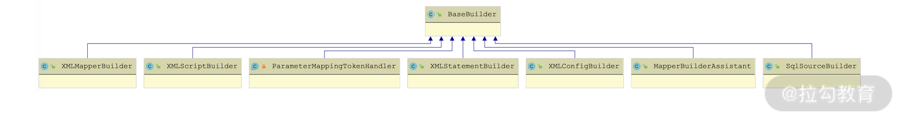
BaseBuilder 继承关系图
BaseBuilder 抽象类扮演了构造者模式中 Builder 接口的角色，下面我们先来看 BaseBuilder 中各个字段的定义。
- configuration（Configuration 类型）：MyBatis 的初始化过程就是围绕 Configuration 对象展开的，我们可以认为 Configuration 是一个单例对象，MyBatis 初始化解析到的全部配置信息都会记录到 Configuration 对象中。
- typeAliasRegistry（TypeAliasRegistry 类型）：别名注册中心。比如，《02 讲的订单系统》示例中，我们在 mybatis-config.xml 配置文件中，使用 标签为很多类定义了别名。
- typeHandlerRegistry（TypeHandlerRegistry 类型）：TypeHandler 注册中心。除了定义别名之外，我们在 mybatis-config.xml 配置文件中，还可以使用
<typeHandlers>标签添加自定义 TypeHandler 实现，实现数据库类型与 Java 类型的自定义转换，这些自定义的 TypeHandler 都会记录在这个 TypeHandlerRegistry 对象中。
除了关联 Configuration 对象之外，BaseBuilder 还提供了另外两个基本能力：
- 解析别名，核心逻辑是在 resolveAlias() 方法中实现的，主要依赖于 TypeAliasRegistry 对象；
- 解析 TypeHandler，核心逻辑是在 resolveTypeHandler() 方法中实现的，主要依赖于 TypeHandlerRegistry 对象。
了解了 BaseBuilder 提供的基础能力之后，我们回到 XMLConfigBuilder 这个 Builder 实现类，看看它是如何解析 mybatis-config.xml 配置文件的。
首先我们来了解一下 XMLConfigBuilder 的核心字段。
- parsed（boolean 类型）：状态标识字段，记录当前 XMLConfigBuilder 对象是否已经成功解析完 mybatis-config.xml 配置文件。
- parser（XPathParser 类型）：XPathParser 对象是一个 XML 解析器，这里的 parser 对象就是用来解析 mybatis-config.xml 配置文件的。
- environment（String 类型）： 标签定义的环境名称。
- localReflectorFactory（ReflectorFactory 类型）：ReflectorFactory 接口的核心功能是实现对 Reflector 对象的创建和缓存。
在 SqlSessionFactoryBuilder.build() 方法中也可以看到，XMLConfigBuilder.parse() 方法触发了 mybatis-config.xml 配置文件的解析，其中的 parseConfiguration() 方法定义了解析 mybatis-config.xml 配置文件的完整流程，核心步骤如下：
- 解析
<properties>标签； - 解析
<settings>标签； - 处理日志相关组件；
- 解析
<typeAliases>标签； - 解析
<plugins>标签； - 解析
<objectFactory>标签； - 解析
<objectWrapperFactory>标签； - 解析
<reflectorFactory>标签； - 解析
<environments>标签； - 解析
<databaseIdProvider>标签； - 解析
<typeHandlers>标签； - 解析
<mappers>标签。
从 parseConfiguration()方法中，我们可以清晰地看到 XMLConfigBuilder 对 mybatis-config.xml 配置文件中各类标签的解析方法，下面我们就逐一介绍这些方法的核心实现。
1. 处理<properties>标签
我们可以通过 <properties> 标签定义 KV 信息供 MyBatis 使用，propertiesElement() 方法的核心逻辑就是解析 mybatis-config.xml 配置文件中的 <properties> 标签。
从 <properties> 标签中解析出来的 KV 信息会被记录到一个 Properties 对象（也就是 Configuration 全局配置对象的 variables 字段），在后续解析其他标签的时候，MyBatis 会使用这个 Properties 对象中记录的 KV 信息替换匹配的占位符。
2. 处理<settings>标签
MyBatis 中有很多全局性的配置，例如，是否使用二级缓存、是否开启懒加载功能等，这些都是通过 mybatis-config.xml 配置文件中的 <settings> 标签进行配置的。
XMLConfigBuilder.settingsAsProperties() 方法的核心逻辑就是解析 <settings> 标签，并将解析得到的配置信息记录到 Configuration 这个全局配置对象的同名属性中，具体实现如下：
private Properties settingsAsProperties(XNode context) {
if (context == null) {
return new Properties();
}
// 处理<settings>标签的所有子标签，也就是<setting>标签，将其name属性和value属性
// 整理到Properties对象中保存
Properties props = context.getChildrenAsProperties();
// 创建Configuration对应的MetaClass对象
MetaClass metaConfig = MetaClass.forClass(Configuration.class, localReflectorFactory);
// 检测Configuration对象中是否包含每个配置项的setter方法
for (Object key : props.keySet()) {
if (!metaConfig.hasSetter(String.valueOf(key))) {
throw new BuilderException("The setting " + key + " is not known. Make sure you spelled it correctly (case sensitive).");
}
}
return props;
}
3. 处理<typeAliases>和<typeHandlers>标签
XMLConfigBuilder 中提供了 typeAliasesElement() 方法和 typeHandlerElement() 方法，分别用来负责处理 <typeAliases> 标签和 <typeHandlers> 标签，解析得到的别名信息和 TypeHandler 信息就会分别记录到 TypeAliasRegistry 和 TypeHandlerRegistry（前面介绍 BaseHandler 的时候，我们已经简单介绍过这两者了）。
下面我们以 typeHandlerElement() 方法为例来分析一下这个过程：
private void typeHandlerElement(XNode parent) {
if (parent != null) {
for (XNode child : parent.getChildren()) { // 处理全部<typeHandler>子标签
if ("package".equals(child.getName())) {
// 如果指定了package属性，则扫描指定包中所有的类，
// 并解析@MappedTypes注解，完成TypeHandler的注册
String typeHandlerPackage = child.getStringAttribute("name");
typeHandlerRegistry.register(typeHandlerPackage);
} else {
// 如果没有指定package属性，则尝试获取javaType、jdbcType、handler三个属性
String javaTypeName = child.getStringAttribute("javaType");
String jdbcTypeName = child.getStringAttribute("jdbcType");
String handlerTypeName = child.getStringAttribute("handler");
// 根据属性确定TypeHandler类型以及它能够处理的数据库类型和Java类型
Class<?> javaTypeClass = resolveClass(javaTypeName);
JdbcType jdbcType = resolveJdbcType(jdbcTypeName);
Class<?> typeHandlerClass = resolveClass(handlerTypeName);
// 调用TypeHandlerRegistry.register()方法注册TypeHandler
if (javaTypeClass != null) {
if (jdbcType == null) {
typeHandlerRegistry.register(javaTypeClass, typeHandlerClass);
} else {
typeHandlerRegistry.register(javaTypeClass, jdbcType, typeHandlerClass);
}
} else {
typeHandlerRegistry.register(typeHandlerClass);
}
}
}
}
}
4. 处理<plugins>标签
我们知道 MyBatis 是一个非常易于扩展的持久层框架，而插件就是 MyBatis 提供的一种重要扩展机制。
我们可以自定义一个实现了 Interceptor 接口的插件来扩展 MyBatis 的行为，或是拦截 MyBatis 的一些默认行为。插件的工作机制我们会在后面的课时中详细分析，这里我们重点来看 MyBatis 初始化过程中插件配置的加载，也就是 XMLConfigBuilder 中的 pluginElement()方法，该方法的核心就是解析 <plugins> 标签中配置的自定义插件，具体实现如下：
private void pluginElement(XNode parent) throws Exception {
if (parent != null) {
// 遍历全部的<plugin>子标签
for (XNode child : parent.getChildren()) {
// 获取每个<plugin>标签中的interceptor属性
String interceptor = child.getStringAttribute("interceptor");
// 获取<plugin>标签下的其他配置信息
Properties properties = child.getChildrenAsProperties();
// 初始化interceptor属性指定的自定义插件
Interceptor interceptorInstance = (Interceptor) resolveClass(interceptor).getDeclaredConstructor().newInstance();
// 初始化插件的配置
interceptorInstance.setProperties(properties);
// 将Interceptor对象添加到Configuration的插件链中保存，等待后续使用
configuration.addInterceptor(interceptorInstance);
}
}
}
5. 处理<objectFactory>标签
在前面《04 | MyBatis 反射工具箱：带你领略不一样的反射设计思路》中我们提到过，MyBatis 支持自定义 ObjectFactory 实现类和 ObjectWrapperFactory。XMLConfigBuilder 中的 objectFactoryElement() 方法就实现了加载自定义 ObjectFactory 实现类的功能，其核心逻辑就是解析 <objectFactory> 标签中配置的自定义 ObjectFactory 实现类，并完成相关的实例化操作，相关的代码实现如下：
private void objectFactoryElement(XNode context) throws Exception {
if (context != null) {
// 获取<objectFactory>标签的type属性
String type = context.getStringAttribute("type");
// 根据type属性值，初始化自定义的ObjectFactory实现
ObjectFactory factory = (ObjectFactory) resolveClass(type).getDeclaredConstructor().newInstance();
// 初始化ObjectFactory对象的配置
Properties properties = context.getChildrenAsProperties();
factory.setProperties(properties);
// 将ObjectFactory对象记录到Configuration这个全局配置对象中
configuration.setObjectFactory(factory);
}
除了 <objectFactory> 标签之外，我们还可以通过 <objectWrapperFactory> 标签和 <reflectorFactory> 标签配置自定义的 ObjectWrapperFactory 实现类和 ReflectorFactory 实现类，这两个标签的解析分别对应 objectWrapperFactoryElement() 方法和 reflectorFactoryElement() 方法，两者实现与 objectFactoryElement() 方法实现类似，这里就不再展示，你若感兴趣的话可以参考源码进行学习。
6. 处理<environments>标签
在 MyBatis 中，我们可以通过 <environment> 标签为不同的环境添加不同的配置，例如，线上环境、预上线环境、测试环境等，每个
environmentsElement() 方法中实现了 XMLConfigBuilder 处理 <environments> 标签的核心逻辑，它会根据 XMLConfigBuilder.environment 字段值，拿到正确的 <environment> 标签，然后解析这个环境中使用的 TransactionFactory、DataSource 等核心对象，也就知道了 MyBatis 要请求哪个数据库、如何管理事务等信息。
下面是 environmentsElement() 方法的核心逻辑：
private void environmentsElement(XNode context) throws Exception {
if (context != null) {
if (environment == null) { // 未指定使用的环境id，默认获取default值
environment = context.getStringAttribute("default");
}
// 获取<environment>标签下的所有配置
for (XNode child : context.getChildren()) {
// 获取环境id
String id = child.getStringAttribute("id");
if (isSpecifiedEnvironment(id)) {
// 获取<transactionManager>、<dataSource>等标签，并进行解析，其中会根据配置信息初始化相应的TransactionFactory对象和DataSource对象
TransactionFactory txFactory = transactionManagerElement(child.evalNode("transactionManager"));
DataSourceFactory dsFactory = dataSourceElement(child.evalNode("dataSource"));
DataSource dataSource = dsFactory.getDataSource();
// 创建Environment对象，并关联创建好的TransactionFactory和DataSource
Environment.Builder environmentBuilder = new Environment.Builder(id)
.transactionFactory(txFactory)
.dataSource(dataSource);
// 将Environment对象记录到Configuration中，等待后续使用
configuration.setEnvironment(environmentBuilder.build());
}
}
}
}
7. 处理<databaseIdProvider>标签
通过前面课时的介绍可知，在 MyBatis 中编写的都是原生的 SQL 语句，而很多数据库产品都会有一些 SQL 方言，这些方言与标准 SQL 不兼容。
在 mybatis-config.xml 配置文件中，我们可以通过 <databaseIdProvider> 标签定义需要支持的全部数据库的 DatabaseId，在后续编写 Mapper 映射配置文件的时候，就可以为同一个业务场景定义不同的 SQL 语句（带有不同的 DataSourceId），来支持不同的数据库，这里就是靠 DatabaseId 来确定哪个 SQL 语句支持哪个数据库的。
databaseIdProviderElement() 方法是 XMLConfigBuilder 处理 <databaseIdProvider> 标签的地方，其中的核心就是获取 DatabaseId 值，具体实现如下：
private void databaseIdProviderElement(XNode context) throws Exception {
DatabaseIdProvider databaseIdProvider = null;
if (context != null) {
// 获取type属性值
String type = context.getStringAttribute("type");
if ("VENDOR".equals(type)) { // 兼容操作
type = "DB_VENDOR";
}
// 初始化DatabaseIdProvider
Properties properties = context.getChildrenAsProperties();
databaseIdProvider = (DatabaseIdProvider) resolveClass(type).getDeclaredConstructor().newInstance();
databaseIdProvider.setProperties(properties);
}
Environment environment = configuration.getEnvironment();
if (environment != null && databaseIdProvider != null) {
// 通过DataSource获取DatabaseId，并保存到Configuration中，等待后续使用
String databaseId = databaseIdProvider.getDatabaseId(environment.getDataSource());
configuration.setDatabaseId(databaseId);
}
}
可以看到，解析<databaseIdProvider> 标签之后会得到一个 DatabaseIdProvider 对象，其核心方法是 getDatabaseId() 方法，主要是根据前面解析得到的 DataSource 对象来生成 DatabaseId。DatabaseIdProvider 的继承关系如下图所示：
DatabaseIdProvider 继承关系图
从继承关系图中可以看出，DefaultDatabaseIdProvider 是个空实现，而且已被标记为过时了，所以这里我们就重点来看 VendorDatabaseIdProvider 实现。
在 getDatabaseId() 方法中，VendorDatabaseIdProvider 首先会从 DataSource 中拿到数据库的名称，然后根据 <databaseIdProvider> 标签配置和 DataSource 返回的数据库名称，确定最终的 DatabaseId 标识，具体实现如下：
public String getDatabaseId(DataSource dataSource) {
// 省略边界检查和异常处理
return getDatabaseName(dataSource);
}
private String getDatabaseName(DataSource dataSource) throws SQLException {
// 从数据库连接中，获取数据库名称
String productName = getDatabaseProductName(dataSource);
if (this.properties != null) {
// 根据<databaseIdProvider>标签配置，查找自定义数据库名称
for (Map.Entry<Object, Object> property : properties.entrySet()) {
if (productName.contains((String) property.getKey())) {
return (String) property.getValue(); // 返回配置的value
}
}
return null;
}
return productName;
}
8. 处理<mappers>标签
除了 mybatis-config.xml 这个全局配置文件之外，MyBatis 初始化的时候还会加载 <mappers> 标签下定义的 Mapper 映射文件。<mappers> 标签中会指定 Mapper.xml 映射文件的位置，通过解析 <mappers> 标签，MyBatis 就能够知道去哪里加载这些 Mapper.xml 文件了。
mapperElement() 方法就是 XMLConfigBuilder 处理 <mappers> 标签的具体实现，其中会初始化 XMLMapperBuilder 对象来加载各个 Mapper.xml 映射文件。同时，还会扫描 Mapper 映射文件相应的 Mapper 接口，处理其中的注解并将 Mapper 接口注册到 MapperRegistry 中。
mapperElement() 方法的具体实现如下：
private void mapperElement(XNode parent) throws Exception {
if (parent != null) {
for (XNode child : parent.getChildren()) { // 遍历每个子标签
if ("package".equals(child.getName())) {
// 如果指定了<package>子标签，则会扫描指定包内全部Java类型
String mapperPackage = child.getStringAttribute("name");
configuration.addMappers(mapperPackage);
} else {
// 解析<mapper>子标签，这里会获取resource、url、class三个属性，这三个属性互斥
String resource = child.getStringAttribute("resource");
String url = child.getStringAttribute("url");
String mapperClass = child.getStringAttribute("class");
// 如果<mapper>子标签指定了resource或是url属性，都会创建XMLMapperBuilder对象，
// 然后使用这个XMLMapperBuilder实例解析指定的Mapper.xml配置文件
if (resource != null && url == null && mapperClass == null) {
ErrorContext.instance().resource(resource);
InputStream inputStream = Resources.getResourceAsStream(resource);
XMLMapperBuilder mapperParser = new XMLMapperBuilder(inputStream, configuration, resource, configuration.getSqlFragments());
mapperParser.parse();
} else if (resource == null && url != null && mapperClass == null) {
ErrorContext.instance().resource(url);
InputStream inputStream = Resources.getUrlAsStream(url);
XMLMapperBuilder mapperParser = new XMLMapperBuilder(inputStream, configuration, url, configuration.getSqlFragments());
mapperParser.parse();
} else if (resource == null && url == null && mapperClass != null) {
// 如果<mapper>子标签指定了class属性，则向MapperRegistry注册class属性指定的Mapper接口
Class<?> mapperInterface = Resources.classForName(mapperClass);
configuration.addMapper(mapperInterface);
} else {
throw new BuilderException("A mapper element may only specify a url, resource or class, but not more than one.");
}
}
}
}
}
总结
这一讲我们重点介绍了 MyBatis 初始化过程中对 mybatis-config.xml 全局配置文件的解析，深入分析了 mybatis-config.xml 配置文件中所有标签的解析流程，让你进一步了解这些配置加载的原理。同时，我们还介绍了构造者模式这一经典设计模式，它是整个 MyBatis 初始化逻辑的基础思想。
11 鸟瞰 MyBatis 初始化，把握 MyBatis 启动流程脉络（下）
在上一讲，我们深入分析了MyBatis 初始化过程中对 mybatis-config.xml 全局配置文件的解析，详细介绍了其中每个标签的解析流程以及涉及的经典设计模式——构造者模式。这一讲我们就紧接着上一讲的内容，继续介绍 MyBatis 初始化流程，重点介绍Mapper.xml 配置文件的解析以及 SQL 语句的处理逻辑。
Mapper.xml 映射文件解析全流程
在上一讲分析 mybatis-config.xml 配置文件解析流程的时候我们看到，在 mybatis-config.xml 配置文件中可以定义多个 <mapper> 标签指定 Mapper 配置文件的地址，MyBatis 会为每个 Mapper.xml 映射文件创建一个 XMLMapperBuilder 实例完成解析。
与 XMLConfigBuilder 类似，XMLMapperBuilder也是具体构造者的角色，继承了 BaseBuilder 这个抽象类，解析 Mapper.xml 映射文件的入口是 XMLMapperBuilder.parse() 方法，其核心步骤如下：
- 执行 configurationElement() 方法解析整个Mapper.xml 映射文件的内容；
- 获取当前 Mapper.xml 映射文件指定的 Mapper 接口，并进行注册；
- 处理 configurationElement() 方法中解析失败的
<resultMap>标签； - 处理 configurationElement() 方法中解析失败的
<cache-ref>标签； - 处理 configurationElement() 方法中解析失败的SQL 语句标签。
可以清晰地看到，configurationElement() 方法才是真正解析 Mapper.xml 映射文件的地方，其中定义了处理 Mapper.xml 映射文件的核心流程：
- 获取
<mapper>标签中的 namespace 属性，同时会进行多种边界检查； - 解析
<cache>标签； - 解析
<cache-ref>标签； - 解析
<resultMap>标签； - 解析
<sql>标签； - 解析
<select>、<insert>、<update>、<delete>等 SQL 标签。
下面我们就按照顺序逐一介绍这些方法的核心实现。
1. 处理 <cache> 标签
我们知道 Cache 接口及其实现是MyBatis 一级缓存和二级缓存的基础，其中，一级缓存是默认开启的，而二级缓存默认情况下并没有开启，如有需要，可以通过
XMLMapperBuilder 中解析 <cache> 标签的核心逻辑位于 cacheElement() 方法之中，其具体步骤如下：
- 获取
<cache>标签中的各项属性（type、flushInterval、size 等属性）； - 读取
<cache>标签下的子标签信息，这些信息将用于初始化二级缓存； - MapperBuilderAssistant 会根据上述配置信息，创建一个全新的Cache 对象并添加到 Configuration.caches 集合中保存。
也就是说，解析 <cache> 标签得到的所有信息将会传给 MapperBuilderAssistant 完成 Cache 对象的创建，创建好的Cache 对象会添加到 Configuration.caches 集合中，这个 caches 字段是一个StrictMap
这里我们简单介绍一下 StrictMap的特性。
StrictMap 继承了 HashMap，并且覆盖了 HashMap 的一些行为，例如，相较于 HashMap 的 put() 方法，StrictMap 的 put() 方法有如下几点不同：
- 如果检测到重复 Key 的写入，会直接抛出异常；
- 在没有重复 Key的情况下，会正常写入 KV 数据，与此同时，还会根据 Key产生一个 shortKey，shortKey 与完整 Key 指向同一个 Value 值；
- 如果 shortKey 已经存在，则将 value 修改成 Ambiguity 对象，Ambiguity 对象表示这个 shortKey 存在二义性，后续通过 StrictMap的get() 方法获取该 shortKey 的时候，会抛出异常。
了解了 StrictMap 这个集合类的特性之后，我们回到MapperBuilderAssistant 这个类继续分析，在它的 useNewCache() 方法中，会根据前面解析得到的配置信息，通过 CacheBuilder 创建 Cache 对象。
通过名字你就能猜测到 CacheBuilder 是 Cache 的构造者，CacheBuilder 中最核心的方法是build() 方法，其中会根据传入的配置信息创建底层存储数据的 Cache 对象以及相关的 Cache 装饰器，具体实现如下：
public Cache build() {
// 将implementation默认值设置为PerpetualCache，在decorators集合中默认添加LruCache装饰器，
// 都是在setDefaultImplementations()方法中完成的
setDefaultImplementations();
// 通过反射，初始化implementation指定类型的对象
Cache cache = newBaseCacheInstance(implementation, id);
// 创建Cache关联的MetaObject对象，并根据properties设置Cache中的各个字段
setCacheProperties(cache);
// 根据上面创建的Cache对象类型，决定是否添加装饰器
if (PerpetualCache.class.equals(cache.getClass())) {
// 如果是PerpetualCache类型，则为其添加decorators集合中指定的装饰器
for (Class<? extends Cache> decorator : decorators) {
// 通过反射创建Cache装饰器
cache = newCacheDecoratorInstance(decorator, cache);
// 依赖MetaObject将properties中配置信息设置到Cache的各个属性中，同时调用Cache的initialize()方法完成初始化
setCacheProperties(cache);
}
// 根据readWrite、blocking、clearInterval等配置，
// 添加SerializedCache、ScheduledCache等装饰器
cache = setStandardDecorators(cache);
} else if (!LoggingCache.class.isAssignableFrom(cache.getClass())) {
// 如果不是PerpetualCache类型，就是其他自定义类型的Cache，则添加一个LoggingCache装饰器
cache = new LoggingCache(cache);
}
return cache;
}
2. 处理<cache-ref>标签
通过上述介绍我们知道，可以通过 <cache> 标签为每个 namespace 开启二级缓存，同时还会将 namespace 与关联的二级缓存 Cache对象记录到 Configuration.caches 集合中，也就是说二级缓存是 namespace 级别的。但是，在有的场景中，我们会需要在多个 namespace 共享同一个二级缓存，也就是共享同一个 Cache 对象。
为了解决这个需求，MyBatis提供了 <cache-ref> 标签来引用另一个 namespace 的二级缓存。cacheRefElement() 方法是处理 <cache-ref> 标签的核心逻辑所在，在 Configuration 中维护了一个 cacheRefMap 字段（HashMap<String,String> 类型），其中的 Key 是 <cache-ref> 标签所属的namespace 标识，Value 值是 <cache-ref> 标签引用的 namespace 值，这样的话，就可以将两个namespace 关联起来了，即这两个 namespace 共用一个 Cache对象。
这里会使用到一个叫 CacheRefResolver 的 Cache 引用解析器。CacheRefResolver 中记录了被引用的 namespace以及当前 namespace 关联的MapperBuilderAssistant 对象。前面在解析 <cache>标签的时候我们介绍过，MapperBuilderAssistant 会在 useNewCache() 方法中通过 CacheBuilder 创建新的 Cache 对象，并记录到 currentCache 字段。而这里解析 <cache-ref> 标签的时候，MapperBuilderAssistant 会通过 useCacheRef() 方法从 Configuration.caches 集合中，根据被引用的namespace 查找共享的 Cache 对象来初始化 currentCache，而不再创建新的Cache 对象，从而实现二级缓存的共享。
3. 处理<resultMap>标签
有关系型数据库使用经验的同学应该知道，select 语句执行得到的结果集实际上是一张二维表，而 Java 是一门面向对象的程序设计语言，在使用 JDBC 的时候，我们需要手动写代码将select 语句的结果集转换成 Java 对象，这是一项重复性很大的操作。
为了将 Java 开发者从这种重复性的工作中解脱出来，MyBatis 提供了
首先，<resultMap> 标签下的每一个子标签，例如，<column>、<id> 等，都被解析一个 ResultMapping 对象，其中维护了数据库表中一个列与对应 Java 类中一个属性之间的映射关系。
下面是 ResultMapping 中核心字段的含义。
- column（String 类型）：当前标签中指定的 column 属性值，指向的是数据库表中的一个列名（或是别名）。
- property（String 类型）：当前标签中指定的 property 属性值，指向的是与 column 列对应的属性名称。
- javaType（Class<?> 类型）、jdbcType（JdbcType 类型）：当前标签指定的 javaType 属性值和 jdbcType 属性值，指定了 property 字段的 Java 类型以及对应列的 JDBC 类型。
- typeHandler（TypeHandler<?> 类型）：当前标签的 typeHandler 属性值，这里指定的 TypeHandler 会覆盖默认的类型处理器。
- nestedResultMapId（String类型）：当前标签的 resultMap 属性值，通过该属性我们可以引用另一个
<resultMap>标签的id，然后由这个被引用的<resultMap>标签映射结果集中的一部分列。这样，我们就可以将一个查询结果集映射成多个对象，同时确定这些对象之间的关联关系。 - nestedQueryId（String 类型）：当前标签的select 属性，我们可以通过该属性引用另一个
<select>标签中的select 语句定义，它会将当前列的值作为参数传入这个 select 语句。由于当前结果集可能查询出多行数据，那么可能就会导致 select 属性指定的 SQL 语句会执行多次，也就是著名的 N+1 问题。 - columnPrefix（String 类型）：当前标签的 columnPrefix 属性值，记录了表中列名的公共前缀。
- resultSet（String 类型）：当前标签的 resultSet 属性值。
- lazy（boolean 类型）：当前标签的fetchType 属性，表示是否延迟加载当前标签对应的列。
介绍完 ResultMapping 对象（即<resultMap> 标签下各个子标签的解析结果）之后，我们再来看<resultMap> 标签如何被解析。整个 <resultMap> 标签最终会被解析成 ResultMap 对象，它与 ResultMapping 之间的映射关系如下图所示：

ResultMap 结构图
通过上图我们可以看出，ResultMap 中有四个集合与 ResultMapping 紧密相连。
- resultMappings 集合，维护了整个
<resultMap>标签解析之后得到的全部映射关系，也就是全部 ResultMapping 对象。 - idResultMappings 集合，维护了与唯一标识相关的映射，例如，
<id>标签、<constructor>标签下的<idArg>子标签解析得到的 ResultMapping 对象。如果没有定义<id>等唯一性标签，则由 resultMappings 集合中全部映射关系来确定一条记录的唯一性，即 idResultMappings 集合与 resulMappings 集合相同。 - constructorResultMappings 集合，维护了
<constructor>标签下全部子标签定义的映射关系。 - propertyResultMappings 集合，维护了不带 Constructor 标志的映射关系。
除了上述四个 ResultMapping 集合，ResultMap 中还维护了下列核心字段。
- id（String 类型）：当前
<resultMap>标签的 id 属性值。 - type（Class 类型）：当前
<resultMap>的 type 属性值。 - mappedColumns（Set
<String>类型）：维护了所有映射关系中涉及的 column 属性值，也就是所有的列名（或别名）。 - hasNestedResultMaps（boolean 类型）：当前
<resultMap>标签是否嵌套了其他<resultMap>标签，即这个映射关系中指定了 resultMap属性，且未指定 resultSet 属性。 - hasNestedQueries（boolean 类型）：当前
<resultMap>标签是否含有嵌套查询。也就是说，这个映射关系中是否指定了 select 属性。 - autoMapping（Boolean 类型）：当前 ResultMap 是否开启自动映射的功能。
- discriminator（Discriminator 类型）：对应
<discriminator>标签。
接下来我们开始深入分析 <resultMap> 标签解析的流程。XMLMapperBuilder的resultMapElements() 方法负责解析 Mapper 配置文件中的全部 <resultMap> 标签，其中会通过 resultMapElement() 方法解析单个 <resultMap> 标签。
下面是 resultMapElement() 方法解析 <resultMap> 标签的核心流程。
- 获取
<resultMap>标签的type 属性值，这个值表示结果集将被映射成 type 指定类型的对象。如果没有指定 type 属性的话，会找其他属性值，优先级依次是：type、ofType、resultType、javaType。在这一步中会确定映射得到的对象类型，这里支持别名转换。 - 解析
<resultMap>标签下的各个子标签，每个子标签都会生成一个ResultMapping 对象，这个 ResultMapping 对象会被添加到resultMappings 集合（List<ResultMapping>类型）中暂存。这里会涉及<id>、<result>、<association>、<collection>、<discriminator>等子标签的解析。 - 获取
<resultMap>标签的id 属性，默认值会拼装所有父标签的id、value 或 property 属性值。 - 获取
<resultMap>标签的extends、autoMapping 等属性。 - 创建 ResultMapResolver 对象，ResultMapResolver 会根据上面解析到的ResultMappings 集合以及
<resultMap>标签的属性构造 ResultMap 对象，并将其添加到 Configuration.resultMaps 集合（StrictMap 类型）中。
（1）解析 <id>、<result>、<constructor>标签
在 resultMapElement() 方法中获取到 id 属性和 type 属性值之后，会调用 buildResultMappingFromContext() 方法解析上述标签得到 ResultMapping 对象，其核心逻辑如下：
- 获取当前标签的property的属性值作为目标属性名称（如果
<constructor>标签使用的是 name 属性）； - 获取 column、javaType、typeHandler、jdbcType、select 等一系列属性，与获取 property 属性的方式类似；
- 根据上面解析到的信息，调用 MapperBuilderAssistant.buildResultMapping() 方法创建 ResultMapping 对象。
正如 resultMapElement() 方法核心步骤描述的那样，经过解析得到 ResultMapping 对象集合之后，会记录到resultMappings 这个临时集合中，然后由 ResultMapResolver 调用 MapperBuilderAssistant.addResultMap() 方法创建 ResultMap 对象，将resultMappings 集合中的全部 ResultMapping 对象添加到其中，然后将ResultMap 对象记录到 Configuration.resultMaps 集合中。
下面是 MapperBuilderAssistant.addResultMap() 的具体实现：
public ResultMap addResultMap(
String id,
Class<?> type,
String extend,
Discriminator discriminator,
List<ResultMapping> resultMappings,
Boolean autoMapping) {
// ResultMap的完整id是"namespace.id"的格式
id = applyCurrentNamespace(id, false);
// 获取被继承的ResultMap的完整id，也就是父ResultMap对象的完整id
extend = applyCurrentNamespace(extend, true);
if (extend != null) { // 针对extend属性的处理
// 检测Configuration.resultMaps集合中是否存在被继承的ResultMap对象
if (!configuration.hasResultMap(extend)) {
throw new IncompleteElementException("Could not find a parent resultmap with id '" + extend + "'");
}
// 获取需要被继承的ResultMap对象，也就是父ResultMap对象
ResultMap resultMap = configuration.getResultMap(extend);
// 获取父ResultMap对象中记录的ResultMapping集合
List<ResultMapping> extendedResultMappings = new ArrayList<>(resultMap.getResultMappings());
// 删除需要覆盖的ResultMapping集合
extendedResultMappings.removeAll(resultMappings);
// 如果当前<resultMap>标签中定义了<constructor>标签，则不需要使用父ResultMap中记录
// 的相应<constructor>标签，这里会将其对应的ResultMapping对象删除
boolean declaresConstructor = false;
for (ResultMapping resultMapping : resultMappings) {
if (resultMapping.getFlags().contains(ResultFlag.CONSTRUCTOR)) {
declaresConstructor = true;
break;
}
}
if (declaresConstructor) {
extendedResultMappings.removeIf(resultMapping -> resultMapping.getFlags().contains(ResultFlag.CONSTRUCTOR));
}
// 添加需要被继承下来的ResultMapping对象记录到resultMappings集合中
resultMappings.addAll(extendedResultMappings);
}
// 创建ResultMap对象，并添加到Configuration.resultMaps集合中保存
ResultMap resultMap = new ResultMap.Builder(configuration, id, type, resultMappings, autoMapping)
.discriminator(discriminator)
.build();
configuration.addResultMap(resultMap);
return resultMap;
}
至于 <constructor> 标签的流程，是由XMLMapperBuilder 中的processConstructorElement() 方法实现，其中会先获取 <constructor> 标签的全部子标签，然后为每个标签添加 CONSTRUCTOR 标志（为每个<idArg> 标签添加额外的ID标志），最后通过 buildResultMappingFromContext()方法创建 ResultMapping对象并记录到 resultMappings 集合中暂存，这些 ResultMapping 对象最终也会添加到前面介绍的ResultMap 对象。
（2）解析 <association> 和 <collection>标签
接下来，我们来介绍解析 <association> 和 <collection>标签的核心流程，两者解析的过程基本一致。前面介绍的 buildResultMappingFromContext() 方法不仅完成了 <id>、<result> 等标签的解析，还完成了 <association> 和 <collection> 标签的解析，其中相关的代码片段如下：
private ResultMapping buildResultMappingFromContext(XNode context, Class<?> resultType, List<ResultFlag> flags) {
... // <association>标签中其他属性的解析与<result>、<id>标签类似，这里不再展开
// 如果<association>标签没有指定resultMap属性，那么就是匿名嵌套映射，需要通过
// processNestedResultMappings()方法解析该匿名的嵌套映射
String nestedResultMap = context.getStringAttribute("resultMap", () ->
processNestedResultMappings(context, Collections.emptyList(), resultType));
... // <association>标签中其他属性的解析与<result>、<id>标签类似，这里不再展开
// 根据上面解析到的属性值，创建ResultMapping对象
return builderAssistant.buildResultMapping(resultType, property, column, javaTypeClass, jdbcTypeEnum, nestedSelect, nestedResultMap, notNullColumn, columnPrefix, typeHandlerClass, flags, resultSet, foreignColumn, lazy);
}
这里的 processNestedResultMappings() 方法会递归执行resultMapElement() 方法解析 <association> 标签和 <collection> 标签指定的匿名嵌套映射，得到一个完整的ResultMap 对象，并添加到Configuration.resultMaps集合中。
（3）解析 <discriminator> 标签
最后一个要介绍的是 <discriminator> 标签的解析过程，我们将 <discriminator> 标签与 <case> 标签配合使用，根据结果集中某列的值改变映射行为。从 resultMapElement() 方法的逻辑我们可以看出，<discriminator> 标签是由 processDiscriminatorElement() 方法专门进行解析的，具体实现如下：
private Discriminator processDiscriminatorElement(XNode context, Class<?> resultType, List<ResultMapping> resultMappings) {
// 从<discriminator>标签中解析column、javaType、jdbcType、typeHandler四个属性的逻辑非常简单，这里将这部分代码省略
Map<String, String> discriminatorMap = new HashMap<>();
// 解析<discriminator>标签的<case>子标签
for (XNode caseChild : context.getChildren()) {
String value = caseChild.getStringAttribute("value");
// 通过前面介绍的processNestedResultMappings()方法，解析<case>标签，
// 创建相应的嵌套ResultMap对象
String resultMap = caseChild.getStringAttribute("resultMap",
processNestedResultMappings(caseChild, resultMappings, resultType));
// 记录该列值与对应选择的ResultMap的Id
discriminatorMap.put(value, resultMap);
}
// 创建Discriminator对象
return builderAssistant.buildDiscriminator(resultType, column, javaTypeClass, jdbcTypeEnum, typeHandlerClass, discriminatorMap);
}
SQL 语句解析全流程
在 Mapper.xml 映射文件中，除了上面介绍的标签之外，还有一类比较重要的标签，那就是 <select>、<insert>、<delete>、<update> 等 SQL 语句标签。虽然定义在 Mapper.xml 映射文件中，但是这些标签是由 XMLStatementBuilder 进行解析的，而不再由 XMLMapperBuilder 来完成解析。
在开始介绍 XMLStatementBuilder 解析 SQL 语句标签的具体实现之前，我们先来了解一下 MyBatis 在内存中是如何表示这些 SQL 语句标签的。在内存中，MyBatis 使用 SqlSource 接口来表示解析之后的 SQL 语句，其中的 SQL 语句只是一个中间态，可能包含动态 SQL 标签或占位符等信息，无法直接使用。SqlSource 接口的定义如下：
public interface SqlSource {
// 根据Mapper文件或注解描述的SQL语句，以及传入的实参，返回可执行的SQL
BoundSql getBoundSql(Object parameterObject);
}
MyBatis 在内存中使用 MappedStatement 对象表示上述 SQL 标签。在 MappedStatement 中的 sqlSource 字段记录了 SQL 标签中定义的 SQL 语句，sqlCommandType 字段记录了 SQL 语句的类型（INSERT、UPDATE、DELETE、SELECT 或 FLUSH 类型）。
介绍完表示 SQL 标签的基础类之后，我们来分析 XMLStatementBuilder 解析 SQL 标签的入口方法—— parseStatementNode() 方法，在该方法中首先会根据 id 属性和 databaseId 属性决定加载匹配的 SQL 标签，然后解析其中的<include> 标签和 <selectKey> 标签，相关的代码片段如下：
public void parseStatementNode() {
// 获取SQL标签的id以及databaseId属性
String id = context.getStringAttribute("id");
String databaseId = context.getStringAttribute("databaseId");
// 若databaseId属性值与当前使用的数据库不匹配，则不加载该SQL标签
// 若存在相同id且databaseId不为空的SQL标签，则不再加载该SQL标签
if (!databaseIdMatchesCurrent(id, databaseId, this.requiredDatabaseId)) {
return;
}
// 根据SQL标签的名称决定其SqlCommandType
String nodeName = context.getNode().getNodeName();
SqlCommandType sqlCommandType = SqlCommandType.valueOf(nodeName.toUpperCase(Locale.ENGLISH));
// 获取SQL标签的属性值，例如，fetchSize、timeout、parameterType、parameterMap、
// resultMap、resultType、lang、resultSetType、flushCache、useCache等。
// 这些属性的具体含义在MyBatis官方文档中已经有比较详细的介绍了，这里不再赘述
... ...
// 在解析SQL语句之前，先处理其中的<include>标签
XMLIncludeTransformer includeParser = new XMLIncludeTransformer(configuration, builderAssistant);
includeParser.applyIncludes(context.getNode());
// 获取SQL标签的parameterType、lang两个属性
... ...
// 解析<selectKey>标签
processSelectKeyNodes(id, parameterTypeClass, langDriver);
// 暂时省略后面的逻辑
...
}
1. 处理 <include> 标签
在实际应用中，我们会在<sql> 标签中定义一些能够被重用的SQL 片段，在 XMLMapperBuilder.sqlElement() 方法中会根据当前使用的 DatabaseId 匹配 <sql> 标签，只有匹配的 SQL 片段才会被加载到内存。
在解析 SQL 标签之前，MyBatis 会先将 <include> 标签转换成对应的 SQL 片段（即定义在 <sql> 标签内的文本），这个转换过程是在 XMLIncludeTransformer.applyIncludes() 方法中实现的（其中不仅包含了 <include> 标签的处理，还包含了“${}”占位符的处理）。
针对 <include> 标签的处理如下：
- 查找 refid 属性指向的
<sql>标签，得到其对应的 Node 对象； - 解析
<include>标签下的<property>标签，将得到的键值对添加到 variablesContext 集合（Properties 类型）中，并形成新的 Properties 对象返回，用于替换占位符； - 递归执行 applyIncludes()方法，因为在
<sql>标签的定义中可能会使用<include>引用其他 SQL 片段，在 applyIncludes()方法递归的过程中，如果遇到“${}”占位符，则使用 variablesContext 集合中的键值对进行替换； - 最后，将
<include>标签替换成<sql>标签的内容。
通过上面逻辑可以看出，<include> 标签和 <sql> 标签是可以嵌套多层的，此时就会涉及 applyIncludes()方法的递归，同时可以配合“${}”占位符，实现 SQL 片段模板化，更大程度地提高 SQL 片段的重用率。
2. 处理 <selectKey> 标签
在有的数据库表设计场景中，我们会添加一个自增 ID 字段作为主键，例如，用户 ID、订单 ID 或者这个自增 ID 本身并没有什么业务含义，只是一个唯一标识而已。在某些业务逻辑里面，我们希望在执行 insert 语句的时候返回这个自增 ID 值，<selectKey> 标签就可以实现自增 ID 的获取。<selectKey> 标签不仅可以获取自增 ID，还可以指定其他 SQL 语句，从其他表或执行数据库的函数获取字段值。
parseSelectKeyNode() 方法是解析 <selectKey> 标签的各个属性，并根据这些属性值将其中的 SQL 语句解析成 MappedStatement 对象，具体实现如下：
private void parseSelectKeyNode(String id, XNode nodeToHandle, Class<?> parameterTypeClass, LanguageDriver langDriver, String databaseId) {
... // 解析<selectKey>标签的resultType、statementType、keyProperty等属性
// 通过LanguageDriver解析<selectKey>标签中的SQL语句，得到对应的SqlSource对象
SqlSource sqlSource = langDriver.createSqlSource(configuration, nodeToHandle, parameterTypeClass);
SqlCommandType sqlCommandType = SqlCommandType.SELECT;
// 创建MappedStatement对象
builderAssistant.addMappedStatement(id, sqlSource, statementType, sqlCommandType,
fetchSize, timeout, parameterMap, parameterTypeClass, resultMap, resultTypeClass,
resultSetTypeEnum, flushCache, useCache, resultOrdered,
keyGenerator, keyProperty, keyColumn, databaseId, langDriver, null);
id = builderAssistant.applyCurrentNamespace(id, false);
// 创建<selectKey>标签对应的KeyGenerator对象，这个KeyGenerator对象会添加到Configuration.keyGenerators集合中
MappedStatement keyStatement = configuration.getMappedStatement(id, false);
configuration.addKeyGenerator(id, new SelectKeyGenerator(keyStatement, executeBefore));
}
3. 处理 SQL 语句
经过 <include> 标签和 <selectKey> 标签的处理流程之后，XMLStatementBuilder 中的 parseStatementNode()方法接下来就要开始处理 SQL 语句了，相关的代码片段之前被省略了，这里我们详细分析一下：
public void parseStatementNode() {
// 前面是解析<selectKey>和<include>标签的逻辑，这里不再展示
// 当执行到这里的时候，<selectKey>和<include>标签已经被解析完毕，并删除掉了
// 下面是解析SQL语句的逻辑，也是parseStatementNode()方法的核心
// 通过LanguageDriver.createSqlSource()方法创建SqlSource对象
SqlSource sqlSource = langDriver.createSqlSource(configuration, context, parameterTypeClass);
// 获取SQL标签中配置的resultSets、keyProperty、keyColumn等属性，以及前面解析<selectKey>标签得到的KeyGenerator对象等，
// 这些信息将会填充到MappedStatement对象中
// 根据上述属性信息创建MappedStatement对象，并添加到Configuration.mappedStatements集合中保存
builderAssistant.addMappedStatement(id, sqlSource, statementType, sqlCommandType,
fetchSize, timeout, parameterMap, parameterTypeClass, resultMap, resultTypeClass,
resultSetTypeEnum, flushCache, useCache, resultOrdered,
keyGenerator, keyProperty, keyColumn, databaseId, langDriver, resultSets);
}
这里解析 SQL 语句使用的是 LanguageDriver 接口，其核心实现是 XMLLanguageDriver，继承关系如下图所示：

LanguageDriver 继承关系图
在 createSqlSource() 方法中，XMLLanguageDriver 会依赖 XMLScriptBuilder 创建 SqlSource 对象，XMLScriptBuilder 首先会判断 SQL 语句是否为动态SQL，判断的核心逻辑在 parseDynamicTags()方法中，核心实现如下：
protected MixedSqlNode parseDynamicTags(XNode node) {
List<SqlNode> contents = new ArrayList<>(); // 解析后的SqlNode结果集合
NodeList children = node.getNode().getChildNodes();
// 获取SQL标签下的所有节点，包括标签节点和文本节点
for (int i = 0; i < children.getLength(); i++) {
XNode child = node.newXNode(children.item(i));
if (child.getNode().getNodeType() == Node.CDATA_SECTION_NODE ||
child.getNode().getNodeType() == Node.TEXT_NODE) {
// 处理文本节点，也就是SQL语句
String data = child.getStringBody("");
TextSqlNode textSqlNode = new TextSqlNode(data);
// 解析SQL语句，如果含有未解析的"${}"占位符，则为动态SQL
if (textSqlNode.isDynamic()) {
contents.add(textSqlNode);
isDynamic = true; // 标记为动态SQL语句
} else {
contents.add(new StaticTextSqlNode(data));
}
} else if (child.getNode().getNodeType() == Node.ELEMENT_NODE) {
// 如果解析到一个子标签，那么一定是动态SQL
// 这里会根据不同的标签，获取不同的NodeHandler，然后由NodeHandler进行后续解析
String nodeName = child.getNode().getNodeName();
NodeHandler handler = nodeHandlerMap.get(nodeName);
if (handler == null) {
throw new BuilderException("Unknown element <" + nodeName + "> in SQL statement.");
}
// 处理动态SQL语句，并将解析得到的SqlNode对象记录到contents集合中
handler.handleNode(child, contents);
isDynamic = true;
}
}
// 解析后的SqlNode集合将会被封装成MixedSqlNode返回
return new MixedSqlNode(contents);
}
这里使用 SqlNode 接口来表示一条 SQL 语句的不同部分，其中，TextSqlNode 表示的是SQL 语句的文本（可能包含“${}”占位符），StaticTextSqlNode 表示的是不包含占位符的SQL 语句文本。
另外一个新接口是NodeHandler，它有很多实现类，如下图所示：
NodeHandler 继承关系图
NodeHandler接口负责解析动态 SQL 内的标签，生成相应的 SqlNode 对象，通过 NodeHandler 实现类的名称，我们就可以大概猜测到其解析的标签名称。以 IfHandler 为例，它解析的就是 <if> 标签，其核心实现如下：
private class IfHandler implements NodeHandler {
public void handleNode(XNode nodeToHandle, List<SqlNode> targetContents) {
// 通过parseDynamicTags()方法，解析<if>标签下嵌套的动态SQL
MixedSqlNode mixedSqlNode = parseDynamicTags(nodeToHandle);
// 获取<if>标签判断分支的条件
String test = nodeToHandle.getStringAttribute("test");
// 创建IfNode对象(也是SqlNode接口的实现)，并将其保存下来
IfSqlNode ifSqlNode = new IfSqlNode(mixedSqlNode, test);
targetContents.add(ifSqlNode);
}
}
完成了对 SQL 语句的解析，得到了相应的 MixedSqlNode对象之后，XMLScriptBuilder 会根据 SQL 语句的类型生成不同的 SqlSource 实现：
public SqlSource parseScriptNode() {
// 对SQL语句进行解析
MixedSqlNode rootSqlNode = parseDynamicTags(context);
SqlSource sqlSource;
if (isDynamic) { // 根据该SQL是否为动态SQL，创建不同的SqlSource实现
sqlSource = new DynamicSqlSource(configuration, rootSqlNode);
} else {
sqlSource = new RawSqlSource(configuration, rootSqlNode, parameterType);
}
return sqlSource;
}
总结
这一讲我们重点介绍了 MyBatis 在初始化过程中对 Mapper.xml 映射文件的解析。
首先，我们着重介绍了 Mapper.xml 映射文件中对 <cache> 标签、<cache-ref> 标签以及 <resultMap> 标签（包括它的各个子标签）的解析流程，让我们知道 MyBatis是如何正确理解二级缓存的配置信息以及我们定义的各种映射规则。
然后，我们详细分析了 MyBatis 对 Mapper.xml 映射文件中 SQL 语句标签的解析，其中涉及 <include>、<selectKey> 等标签的处理逻辑。
12 深入分析动态 SQL 语句解析全流程（上）
在前面两讲中，我们详细介绍了 mybatis-config.xml 全局配置文件以及 Mapper.xml 映射文件的解析流程，MyBatis 会将 Mapper 映射文件中定义的 SQL 语句解析成 SqlSource 对象，其中的动态标签、SQL 语句文本等，会解析成对应类型的 SqlNode 对象。
在开始介绍 SqlSource 接口、SqlNode 接口等核心接口的相关内容之前，我们需要先来了解一下动态 SQL 中使用到的基础知识和基础组件。
OGNL 表达式语言
OGNL 表达式语言是一款成熟的、面向对象的表达式语言。在动态 SQL 语句中使用到了 OGNL 表达式读写 JavaBean 属性值、执行 JavaBean 方法这两个基础功能。
OGNL 表达式是相对完备的一门表达式语言，我们可以通过“对象变量名称.方法名称（或属性名称）”调用一个 JavaBean 对象的方法（或访问其属性），还可以通过“@[类的完全限定名]@[静态方法（或静态字段）]”调用一个 Java 类的静态方法（或访问静态字段）。OGNL 表达式还支持很多更复杂、更强大的功能，这里不再一一介绍。
下面我就通过一个示例来帮助你快速了解 OGNL 表达式的基础使用：
public class OGNLDemo {
private static Customer customer;
private static OgnlContext context;
private static Customer createCustomer() {
customer = new Customer();
customer.setId(1);
customer.setName("Test Customer");
customer.setPhone("1234567");
Address address = new Address();
address.setCity("city-001");
address.setId(1);
address.setCountry("country-001");
address.setStreet("street-001");
ArrayList<Address> addresses = new ArrayList<>();
addresses.add(address);
customer.setAddresses(addresses);
return customer;
}
public static void main(String[] args) throws Exception {
customer = createCustomer(); // 创建Customer对象以及Address对象
// 创建OgnlContext上下文对象
context = new OgnlContext(new DefaultClassResolver(),
new DefaultTypeConverter(),
new OgnlMemberAccess());
// 设置root以及address这个key，默认从root开始查找属性或方法
context.setRoot(customer);
context.put("address", customer.getAddresses().get(0));
// Ognl.paraseExpression()方法负责解析OGNL表达式，获取Customer的addresses属性
Object obj = Ognl.getValue(Ognl.parseExpression("addresses"),
context, context.getRoot());
System.out.println(obj);
// 输出是[Address{id=1, street='street-001', city='city-001', country='country-001'}]
// 获取city属性
obj = Ognl.getValue(Ognl.parseExpression("addresses[0].city"),
context, context.getRoot());
System.out.println(obj); // 输出是city-001
// #address表示访问的不是root对象，而是OgnlContext中key为addresses的对象
obj = Ognl.getValue(Ognl.parseExpression("#address.city"), context,
context.getRoot());
System.out.println(obj); // 输出是city-001
// 执行Customer的getName()方法
obj = Ognl.getValue(Ognl.parseExpression("getName()"), context,
context.getRoot());
System.out.println(obj);
// 输出是Test Customer
}
}
MyBatis 为了提高 OGNL 表达式的工作效率，添加了一层 OgnlCache 来缓存表达式编译之后的结果（不是表达式的执行结果），OgnlCache 通过一个 ConcurrentHashMap<String, Object> 类型的集合（expressionCache 字段，静态字段）来记录OGNL 表达式编译之后的结果。通过缓存拿到表达式编译的结果之后，OgnlCache 底层还会依赖上述示例中的 OGNL 工具类以及 OgnlContext 完成表达式的执行。
DynamicContext 上下文
在 MyBatis 解析一条动态 SQL 语句的时候，可能整个流程非常长，其中涉及多层方法的调用、方法的递归、复杂的循环等，其中产生的中间结果需要有一个地方进行存储，那就是 DynamicContext 上下文对象。
DynamicContext 中有两个核心属性：一个是 sqlBuilder 字段（StringJoiner 类型），用来记录解析之后的 SQL 语句；另一个是 bindings 字段，用来记录上下文中的一些 KV 信息。
DynamicContext 定义了一个 ContextMap 内部类，ContextMap 用来记录运行时用户传入的、用来替换“#{}”占位符的实参。在 DynamicContext 构造方法中，会根据传入的实参类型决定如何创建对应的 ContextMap 对象，核心代码如下：
public DynamicContext(Configuration configuration, Object parameterObject) {
if (parameterObject != null && !(parameterObject instanceof Map)) {
// 对于非Map类型的实参，会创建对应的MetaObject对象，并封装成ContextMap对象
MetaObject metaObject = configuration.newMetaObject(parameterObject);
boolean existsTypeHandler = configuration.getTypeHandlerRegistry().hasTypeHandler(parameterObject.getClass());
bindings = new ContextMap(metaObject, existsTypeHandler);
} else {
// 对于Map类型的实参，这里会创建一个空的ContextMap对象
bindings = new ContextMap(null, false);
}
// 这里实参对应的Key是_parameter
bindings.put(PARAMETER_OBJECT_KEY, parameterObject);
bindings.put(DATABASE_ID_KEY, configuration.getDatabaseId());
}
ContextMap 继承了 HashMap 并覆盖了 get() 方法，在 get() 方法中有一个简单的降级逻辑：
- 首先，尝试按照 Map 的规则查找 Key，如果查找成功直接返回；
- 然后，再尝试检查 parameterObject 这个实参对象是否包含 Key 这个属性，如果包含的话，则直接读取该属性值返回；
- 最后，根据当前是否包含 parameterObject 相应的 TypeHandler 决定是返回整个 parameterObject 对象，还是返回 null。
后面在介绍 <foreach>、<trim> 等标签的处理逻辑中，你可以看到向 DynamicContext.bindings 集合中写入 KV 数据的操作，但是读取这个 ContextMap 的地方主要是在 OGNL 表达式中，也就是在 DynamicContext 中定义了一个静态代码块，指定了 OGNL 表达式读写 ContextMap 集合的逻辑，这部分读取逻辑封装在 ContextAccessor 中。除此之外，你还可以看到 ContextAccessor 中的 getProperty() 方法会将传入的 target 参数（实际上就是 ContextMap）转换为 Map，并先尝试按照 Map 规则进行查找；查找失败之后，会尝试获取“_parameter”对应的 parameterObject 对象，从 parameterObject 中获取指定的 Value 值。
组合模式
组合模式（有时候也被称为“部分-整体”模式）是将同一类型的多个对象组合成一个树形结构。在使用这个树形结构的时候，我们可以像处理一个对象那样进行处理，而不用关心其复杂的树形结构。
组合模式的核心结构如下图所示：
从上图中，我们可以看出组合模式的核心组件有下面三个。
- Component 接口：定义了整个树形结构中每个节点的基础行为。一般情况下会定义两类方法，一类是真正的业务行为，另一类是管理子节点的行为，例如 addChild()、removeChild()、getChildren() 等方法。
- Leaf 类：抽象的是树形结构中的叶子节点。Leaf 类只实现了 Component 接口中的业务方法，而管理子节点的方法是空实现或直接抛出异常。
- Composite 类：抽象了树形结构中的树枝节点（非叶子节点）。Composite 类不仅要实现 Component 接口的业务方法，而且还需要实现子节点管理的相关方法，并在内部维护一个集合类来管理这些子节点。Composite 实现的业务方法一般逻辑比较简单，大都是直接循环调用所有子节点的业务方法。
通过以上对组合模式的介绍，你可以看出组合模式有以下两个优势：
- 由于使用方并不关心自己使用的是树形 Component 结构还是单个 Component 对象，所以可以帮助上层使用方屏蔽复杂的树形结构，将使用方的逻辑与树形结构解耦；
- 如果要在树形结构中添加新的功能，只需要增加树形结构中的节点即可，也就是提供新的 Component 接口实现并添加到树中，这符合“开放-封闭”原则。
SqlNode
在 MyBatis 处理动态 SQL 语句的时候，会将动态 SQL 标签解析为 SqlNode 对象，多个 SqlNode 对象就是通过组合模式组成树形结构供上层使用的。
下面我们就来讲解一下 SqlNode 的相关实现。首先，介绍一下 SqlNode 接口的定义，如下所示：
public interface SqlNode {
// apply()方法会根据用户传入的实参，解析该SqlNode所表示的动态SQL内容并
// 将解析之后的SQL片段追加到DynamicContext.sqlBuilder字段中暂存。
// 当SQL语句中全部的动态SQL片段都解析完成之后，就可以从DynamicContext.sqlBuilder字段中
// 得到一条完整的、可用的SQL语句了
boolean apply(DynamicContext context);
}
MyBatis 为 SqlNode 接口提供了非常多的实现类（如下图），其中很多实现类都对应一个动态 SQL 标签，但是也有 SqlNode 实现扮演了组合模式中 Composite 的角色，例如，MixedSqlNode 实现类。
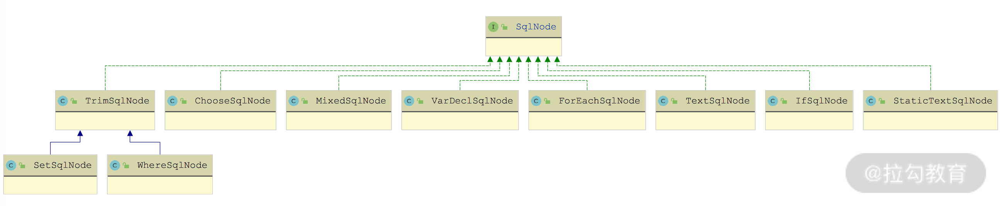
SqlNode 继承关系图
下面我们就来逐一介绍这每个 SqlNode 实现类的功能和核心实现。
1. StaticTextSqlNode 和 MixedSqlNode
StaticTextSqlNode 用于表示非动态的 SQL 片段，其中维护了一个 text 字段（String 类型），用于记录非动态 SQL 片段的文本内容，其 apply() 方法会直接将 text 字段值追加到 DynamicContext.sqlBuilder 的最末尾。
MixedSqlNode 在整个 SqlNode 树中充当了树枝节点，也就是扮演了组合模式中 Composite 的角色，其中维护了一个 List<SqlNode> 集合用于记录 MixedSqlNode 下所有的子 SqlNode 对象。MixedSqlNode 对于 apply() 方法的实现也相对比较简单，核心逻辑就是遍历 List<SqlNode> 集合中全部的子 SqlNode 对象并调用 apply() 方法，由子 SqlNode 对象完成真正的动态 SQL 处理逻辑。
2. TextSqlNode
TextSqlNode 实现抽象了包含 “${}”占位符的动态 SQL 片段。TextSqlNode 通过一个 text 字段（String 类型）记录了包含“${}”占位符的 SQL 文本内容，在 apply() 方法实现中会结合用户给定的实参解析“${}”占位符，核心代码片段如下：
public boolean apply(DynamicContext context) {
// 创建GenericTokenParser解析器，这里指定的占位符的起止符号分别是"${"和"}"
GenericTokenParser parser = createParser(
new BindingTokenParser(context, injectionFilter));
// 将解析之后的SQL片段追加到DynamicContext暂存
context.appendSql(parser.parse(text));
return true;
}
这里使用 GenericTokenParser 识别“${}”占位符，在识别到占位符之后，会通过 BindingTokenParser 将“${}”占位符替换为用户传入的实参。BindingTokenParser 继承了TokenHandler 接口，在其 handleToken() 方法实现中，会根据 DynamicContext.bindings 这个 ContextMap 中的 KV 数据替换 SQL 语句中的“${}”占位符，相关的代码片段如下：
public String handleToken(String content) {
// 获取用户提供的实参数据
Object parameter = context.getBindings().get("_parameter");
if (parameter == null) { // 通过value占位符，也可以查找到parameter对象
context.getBindings().put("value", null);
} else if (SimpleTypeRegistry.isSimpleType(parameter.getClass())) {
context.getBindings().put("value", parameter);
}
// 通过Ognl解析"${}"占位符中的表达式，解析失败的话会返回空字符串
Object value = OgnlCache.getValue(content, context.getBindings());
String srtValue = value == null ? "" : String.valueOf(value);
checkInjection(srtValue); // 对解析后的值进行过滤
return srtValue; // 通过过滤的值才能正常返回
}
3. IfSqlNode
IfSqlNode 实现类对应了动态 SQL 语句中的 <if> 标签中使用可以通过 test 属性指定一个表达式，当表达式成立时，<if> 标签内的 SQL 片段才会出现在完整的 SQL 语句中。
在 IfSqlNode 中，通过 test 字段（String 类型）记录了 <if> 标签中的 test 表达式，通过 contents 字段（SqlNode 类型）维护了 <if> 标签下的子 SqlNode 对象。在 IfSqlNode 的 apply() 方法实现中，会依赖 ExpressionEvaluator 工具类解析 test 表达式，只有 test 表达式为 true，才会调用子 SqlNode 对象（即 contents 字段）的 apply() 方法。需要说明的是：这里使用到的 ExpressionEvaluator 工具类底层也是依赖 OGNL 表达式实现 test 表达式解析的。
4. TrimSqlNode
TrimSqlNode 对应 MyBatis 动态 SQL 语句中的
在使用 <trim> 标签的时候，我们可以指定 prefix 和 suffix 属性添加前缀和后缀，也可以指定 prefixesToOverrides 和 suffixesToOverrides 属性来删除多个前缀和后缀（使用“|”分割不同字符串）。在 TrimSqlNode 中维护了同名的四个字段值，即 prefix 字段、suffix 字段（这两个是 String 类型）以及 prefixesToOverride 字段、suffixesToOverride 字段（这两个是 List<String> 类型）。
下面先来看一下 TrimSqlNode 的 apply() 方法的实现：
public boolean apply(DynamicContext context) {
FilteredDynamicContext filteredDynamicContext = new FilteredDynamicContext(context);
// 首先执行子SqlNode对象的apply()方法完成对应动态SQL片段的解析
boolean result = contents.apply(filteredDynamicContext);
// 使用FilteredDynamicContext.applyAll()方法完成前后缀的处理操作
filteredDynamicContext.applyAll();
return result;
}
从 apply() 方法的实现可以看出，TrimSqlNode 处理前后缀的核心逻辑是在 FilteredDynamicContext 中完成的。FilteredDynamicContext 可以看作是 DynamicContext 的装饰器。除了 DynamicContext 本身临时存储解析结果和参数的功能之外，FilteredDynamicContext 还通过其 applyAll() 方法实现了前后缀的处理，其中会判断 TrimSqlNode 下子 SqlNode 的解析结果的长度，然后执行 applyPrefix() 方法处理前缀，执行 applySuffix() 方法处理后缀。
- applyPrefix() 方法在处理前缀的时候，首先会遍历 prefixesToOverride 集合，从 SQL 片段的头部逐个尝试进行删除，之后在 SQL 片段的头部插入一个空格以及 prefix 字段指定的前缀字符串。
- applySuffix() 方法在处理后缀的时候，首先会遍历 suffixesToOverride 集合，从 SQL 片段的尾部逐个尝试进行删除，之后在 SQL 片段的尾部插入一个空格以及 suffix 字段指定的后缀字符串。
另外，从前面的 SqlNode 继承关系图中还可以看出，WhereSqlNode 和 SetSqlNode 是 TrimSqlNode 的子类。
在 WhereSqlNode 中将 prefix 设置为“WHERE”字符串，prefixesToOverride 集合包含 “OR”“AND”“OR\n”“AND\n”“OR\r”“AND\r” 等字符串，这样就实现了删除 SQL 片段开头多余的 “AND”“OR” 关键字，并添加“WHERE”关键字的效果。
在 SetSqlNode 中将 prefix 设置为“SET”关键字，prefixesToOverride 集合和 suffixesToOverride 集合只包含“，”（逗号）字符串，这样就实现了删除 SQL 片段开头和结尾多余的逗号，并添加“SET”关键字的效果。
总结
这一讲我们重点介绍了 MyBatis 中动态 SQL 语句中涉及的核心内容。
- 首先，说明了动态 SQL 语句中使用的 OGNL 表达式语言，这样你就了解了动态 SQL 语句中占位符的处理逻辑。
- 然后，介绍了 DynamicContext 对象，其中维护了解析动态 SQL 语句上下文信息；随后我还分析了组合模式，因为它是 MyBatis 组合各动态 SQL 节点的设计思想。
- 最后，讲解了 TextSqlNode、IfSqlNode、TrimSqlNode 等多个 SqlNode 节点的实现。
13 深入分析动态 SQL 语句解析全流程（下）
在上一讲，我们讲解了 MyBatis 中动态 SQL 语句的相关内容，重点介绍了 MyBatis 使用到的 OGNL 表达式、组合模式、DynamicContext 上下文以及多个动态 SQL 标签对应的 SqlNode 实现。今天我们就紧接着上一讲，继续介绍剩余 SqlNode 实现以及 SqlSource 的相关内容。
SqlNode 剩余实现类
在上一讲我们已经介绍了 StaticTextSqlNode、MixedSqlNode、TextSqlNode、IfSqlNode、TrimSqlNode 这几个 SqlNode 的实现，下面我们再把剩下的三个 SqlNode 实现类也说明下。
1. ForeachSqlNode
在动态 SQL 语句中，我们可以使用 <foreach> 标签的抽象。
下面我们就来分析一下 ForeachSqlNode 的 apply() 方法是如何实现循环的。
首先，向 DynamicContext.sqlBuilder 中追加 open 属性值指定的字符串，然后通过 ExpressionEvaluator 工具类解析 <foreach> 标签中 collection 属性指定的表达式，得到一个集合对象，并遍历这个集合。
接下来，为每个元素创建一个 PrefixedContext 对象。PrefixedContext 是 DynamicContext 的一个装饰器，其中记录了一个 prefix 前缀信息（其实就是 <foreach> 标签中的 separator 属性值），在其 apply() 方法中会先追加 prefix 前缀（迭代第一个元素的时候，prefix 为空字符串），然后追加 SQL 片段。
如果传入的集合是 Map 类型，则通过 applyIndex() 方法和 applyItem() 方法将 Map 中的 Key 和 Value 记录到 PrefixedContext 中，示例如下：
private void applyIndex(DynamicContext context, Object o, int i) {
if (index != null) {
// Key值与index属性值指定的变量名称绑定
context.bind(index, o);
// Key值还会与"__frch_"+index属性值+ "_" + i 这个变量绑定
// 这里传入的 i 是一个自增序列，由底层的 DynamicContext 统一维护。
context.bind(itemizeItem(index, i), o);
}
}
private void applyItem(DynamicContext context, Object o, int i) {
if (item != null) {
// Value值与item属性值指定的变量名称绑定
context.bind(item, o);
// Value值还会与"__frch_"+item属性值+ "_" + i 这个变量绑定
context.bind(itemizeItem(item, i), o);
}
}
但如果传入的集合不是 Map 类型，则通过 applyIndex() 方法和 applyItem() 方法将集合元素的下标索引和元素值本身绑定到 PrefixedContext 中。
完成 PrefixedContext 的绑定之后，会调用 <foreach> 标签下子 SqlNode 的 apply() 方法，其中传入的 DynamicContext 实际上是 ForEachSqlNode$FilteredDynamicContext 这个内部类，它也是 DynamicContext 的装饰器，核心功能是：根据前面在 PrefixedContext 中绑定的各种变量，处理 SQL 片段中的“#{}”占位符。FilteredDynamicContext 在多次循环中的处理效果如下图所示：

FilteredDynamicContext 变化过程示意图
下面是 FilteredDynamicContext.appendSql() 方法的核心实现：
public void appendSql(String sql) {
// 创建识别"#{}"的GenericTokenParser解析器
GenericTokenParser parser = new GenericTokenParser("#{", "}", content -> {
// 这个TokenHandler实现会将#{i}替换成#{__frch_i_0}、#{__frch_i_1}...
String newContent = content.replaceFirst("^\\s*" + item + "(?![^.,:\\s])", itemizeItem(item, index));
if (itemIndex != null && newContent.equals(content)) {
// 这里会将#{j}替换成#{__frch_j_0}、#{__frch_j_1}...
newContent = content.replaceFirst("^\\s*" + itemIndex + "(?![^.,:\\s])", itemizeItem(itemIndex, index));
}
return "#{" + newContent + "}";
});
// 保存解析后的SQL片段
delegate.appendSql(parser.parse(sql));
}
完成集合中全部元素的迭代处理之后，ForeachSqlNode.apply() 方法还会调用 applyClose() 方法追加 close 属性指定的后缀。最后，从 DynamicContext 上下文中删除 index 属性值和 item 属性值指定的变量。
2. ChooseSqlNode
在有的业务场景中，可能会碰到非常多的分支判断，在 Java 中，我们可以通过 switch...case...default 的方式来编写这段代码；在 MyBatis 的动态 SQL 语句中，我们可以使用 <choose>、<when> 和 <otherwise> 三个标签来实现类似的效果。
IfSqlNode 和 MixedSqlNode 的核心实现在上一讲中我们已经分析过了，这里不再重复。ChooseSqlNode 的实现也比较简单，其中维护了一个 List<SqlNode> 集合（ifSqlNodes 字段）用来记录所有 <when> 子标签对应的 IfSqlNode 对象，同时还维护了一个 SqlNode 类型字段（defaultSqlNode 字段）用来记录 <otherwise> 子标签生成的 MixedSqlNode 对象，该字段可以为 null。
在 ChooseSqlNode 的 apply() 方法中，首先会尝试迭代全部 IfSqlNode 节点并执行 apply() 方法，我们知道任意一个 IfSqlNode.apply() 方法返回 true，即表示命中该分支，此时整个 ChooseSqlNode.apply() 返回 true，否则尝试执行 defaultSqlNode.apply() 方法并返回 true，即进入默认分支。如果 defaultSqlNode 字段为 null，则返回 false。
3. VarDeclSqlNode
VarDeclSqlNode 抽象了 <bind> 标签，其核心功能是将一个 OGNL 表达式的值绑定到一个指定的变量名上，并记录到 DynamicContext 上下文中。
VarDeclSqlNode 中的 name 字段维护了 <bind> 标签中 name 属性的值，expression 字段记录了 <bind> 标签中 value 属性的值（一般是一个 OGNL 表达式）。
在 apply() 方法中，VarDeclSqlNode 首先会通过 OGNL 工具类解析 expression 这个表达式的值，然后将解析结果与 name 字段的值一起绑定到 DynamicContext 上下文中，这样后面就可以通过 name 字段值获取这个表达式的值了。
SqlSourceBuilder
动态 SQL 语句经过上述 SqlNode 的解析之后，接着会由 SqlSourceBuilder 进行下一步处理。
SqlSourceBuilder 的核心操作主要有两个：
- 解析“#{}”占位符中携带的各种属性，例如，“#{id, javaType=int, jdbcType=NUMERIC, typeHandler=MyTypeHandler}”这个占位符，指定了 javaType、jdbcType、typeHandler 等配置；
- 将 SQL 语句中的“#{}”占位符替换成“?”占位符，替换之后的 SQL 语句就可以提交给数据库进行编译了。
SqlSourceBuilder 的入口是 parse() 方法，这里首先会创建一个识别“#{}”占位符的 GenericTokenParser 解析器，当识别到“#{}”占位符的时候，就由 ParameterMappingTokenHandler 这个 TokenHandler 实现完成上述两个核心步骤。
ParameterMappingTokenHandler 中维护了一个 List<ParameterMapping> 类型的集合（parameterMappings 字段），用来记录每个占位符参数解析后的结果，ParameterMapping 记录了占位符名称（property 字段）、jdbcType 属性值（jdbcType 字段）、javaType 属性值（javaType 字段）、typeHandler 属性值（typeHandler 字段）等。
在 buildParameterMapping() 方法中会通过 ParameterExpression 工具类解析“#{}”占位符，然后通过 ParameterMapping.Builder 创建对应的 ParameterMapping 对象。这里得到的 ParameterMapping 就会被记录到 parameterMappings 集合中。
ParameterMappingTokenHandler.handleToken() 方法的核心逻辑如下：
public String handleToken(String content) {
// content是前面通过GenericTokenParser识别到的#{}占位符，
// 这里通过buildParameterMapping()方法进行解析，得到ParameterMapping对象
parameterMappings.add(buildParameterMapping(content));
// 直接返回"?"占位符，替换原有的#{}占位符
return "?";
}
SqlSourceBuilder 完成了“#{}”占位符的解析和替换之后，会将最终的 SQL 语句以及得到的 ParameterMapping 集合封装成一个 StaticSqlSource 对象并返回。
SqlSource
经过上述一系列处理之后，SQL 语句最终会由 SqlSource 进行最后的处理。
在 SqlSource 接口中只定义了一个 getBoundSql() 方法，它控制着动态 SQL 语句解析的整个流程，它会根据从 Mapper.xml 映射文件（或注解）解析到的 SQL 语句以及执行 SQL 时传入的实参，返回一条可执行的 SQL。
下图展示了 SqlSource 接口的核心实现：

SqlSource 接口继承图
下面我们简单介绍一下这三个核心实现类的具体含义。
- DynamicSqlSource：当 SQL 语句中包含动态 SQL 的时候，会使用 DynamicSqlSource 对象。
- RawSqlSource：当 SQL 语句中只包含静态 SQL 的时候，会使用 RawSqlSource 对象。
- StaticSqlSource：DynamicSqlSource 和 RawSqlSource 经过一系列解析之后，会得到最终可提交到数据库的 SQL 语句，这个时候就可以通过 StaticSqlSource 进行封装了。
1. DynamicSqlSource
DynamicSqlSource 作为最常用的 SqlSource 实现，主要负责解析动态 SQL 语句。
DynamicSqlSource 中维护了一个 SqlNode 类型的字段（rootSqlNode 字段），用于记录整个 SqlNode 树形结构的根节点。在 DynamicSqlSource 的 getBoundSql() 方法实现中，会使用前面介绍的 SqlNode、SqlSourceBuilder 等组件，完成动态 SQL 语句以及“#{}”占位符的解析，具体的实现如下：
public BoundSql getBoundSql(Object parameterObject) {
// 创建DynamicContext对象，parameterObject是用户传入的实参
DynamicContext context = new DynamicContext(configuration, parameterObject);
// 调用rootSqlNode.apply()方法，完成整个树形结构中全部SqlNode对象对SQL片段的解析
// 这里无须关心rootSqlNode这棵树中到底有多少SqlNode对象，每个SqlNode对象的行为都是一致的，
// 都会将解析之后的SQL语句片段追加到DynamicContext中，形成最终的、完整的SQL语句
// 这是使用组合设计模式的好处
rootSqlNode.apply(context);
// 通过SqlSourceBuilder解析"#{}"占位符中的属性，并将SQL语句中的"#{}"占位符替换成"?"占位符
SqlSourceBuilder sqlSourceParser = new SqlSourceBuilder(configuration);
Class<?> parameterType = parameterObject == null ? Object.class : parameterObject.getClass();
SqlSource sqlSource = sqlSourceParser.parse(context.getSql(), parameterType, context.getBindings());
// 创建BoundSql对象
BoundSql boundSql = sqlSource.getBoundSql(parameterObject);
context.getBindings().forEach(boundSql::setAdditionalParameter);
return boundSql;
}
这里最终返回的 BoundSql 对象，包含了解析之后的 SQL 语句（sql 字段）、每个“#{}”占位符的属性信息（parameterMappings 字段 ，List<ParameterMapping> 类型）、实参信息（parameterObject 字段）以及 DynamicContext 中记录的 KV 信息（additionalParameters 集合，Map<String, Object> 类型）。
后面在讲解 StatementHandler、Executor 如何执行 SQL 语句的时候，我们还会继续介绍 BoundSql 的相关内容，到时候你可以跟这里联系起来学习。
2. RawSqlSource
接下来我们看 SqlSource 的第二个实现—— RawSqlSource，它与 DynamicSqlSource 有两个不同之处：
- RawSqlSource 处理的是非动态 SQL 语句，DynamicSqlSource 处理的是动态 SQL 语句；
- RawSqlSource 解析 SQL 语句的时机是在初始化流程中，而 DynamicSqlSource 解析动态 SQL 的时机是在程序运行过程中，也就是运行时解析。
这里我们需要先来回顾一下前面介绍的 XMLScriptBuilder.parseDynamicTags() 方法，其中会判断一个 SQL 片段是否为动态 SQL，判断的标准是：如果这个 SQL 片段包含了未解析的“${}”占位符或动态 SQL 标签，则为动态 SQL 语句。但注意，如果是只包含了“#{}”占位符，也不是动态 SQL。
XMLScriptBuilder. parseScriptNode() 方法而 会判断整个 SQL 语句是否为动态 SQL，判断的依据是：如果 SQL 语句中包含任意一个动态 SQL 片段，那么整个 SQL 即为动态 SQL 语句。
总结来说，对于动态 SQL 语句，MyBatis 会创建 DynamicSqlSource 对象进行处理，而对于非动态 SQL 语句，则会创建 RawSqlSource 对象进行处理。
RawSqlSource 在构造方法中，会调用 SqlNode.apply() 方法将 SQL 片段组装成完整 SQL，然后通过 SqlSourceBuilder 处理“#{}”占位符，得到 StaticSqlSource 对象。这两步处理与 DynamicSqlSource 完全一样，只不过执行的时机是在 RawSqlSource 对象的初始化过程中（即 MyBatis 框架初始化流程中），而不是在 getBoundSql() 方法被调用时（即运行时）。
最后，RawSqlSource.getBoundSql() 方法实现是直接调用 StaticSqlSource.getBoundSql() 方法返回一个 BoundSql 对象。
通过前面的介绍我们知道，无论是 DynamicSqlSource 还是 RawSqlSource，底层都依赖 SqlSourceBuilder 解析之后得到的 StaticSqlSource 对象。StaticSqlSource 中维护了解析之后的 SQL 语句以及“#{}”占位符的属性信息（List<ParameterMapping> 集合），其 getBoundSql() 方法是真正创建 BoundSql 对象的地方，这个 BoundSql 对象包含了上述 StaticSqlSource 的两个字段以及实参的信息。
总结
我们紧接上一讲的内容，往后介绍了 SqlNode 接口剩余的实现类，其中包括 ForeachSqlNode、ChooseSqlNode 等，这些 SqlNode 实现类都对应我们常用的动态 SQL 标签。
接下来，我们还介绍了 SqlSourceBuilder 以及 SqlSource 接口的内容，其中针对不同类型的 SQL 语句，MyBatis 抽象出了不同的 SqlSource 实现类，也就是文中介绍的 DynamicSqlSource、RawSqlSource 以及 StaticSqlSource。
14 探究 MyBatis 结果集映射机制背后的秘密（上）
在前面介绍 MyBatis 解析 Mapper.xml 映射文件的过程中，我们看到 <resultMap> 标签会被解析成 ResultMap 对象，其中定义了 ResultSet 与 Java 对象的映射规则，简单来说，也就是一行数据记录如何映射成一个 Java 对象，这种映射机制是 MyBatis 作为 ORM 框架的核心功能之一。
ResultMap 只是定义了一个静态的映射规则，那在运行时，MyBatis 是如何根据映射规则将 ResultSet 映射成 Java 对象的呢？当 MyBatis 执行完一条 select 语句，拿到 ResultSet 结果集之后，会将其交给关联的 ResultSetHandler 进行后续的映射处理。
ResultSetHandler 是一个接口，其中定义了三个方法，分别用来处理不同的查询返回值：
public interface ResultSetHandler {
// 将ResultSet映射成Java对象
<E> List<E> handleResultSets(Statement stmt) throws SQLException;
// 将ResultSet映射成游标对象
<E> Cursor<E> handleCursorResultSets(Statement stmt) throws SQLException;
// 处理存储过程的输出参数
void handleOutputParameters(CallableStatement cs) throws SQLException;
}
在 MyBatis 中只提供了一个 ResultSetHandler 接口实现，即 DefaultResultSetHandler。下面我们就以 DefaultResultSetHandler 为中心，介绍 MyBatis 中 ResultSet 映射的核心流程。
结果集处理入口
你如果有 JDBC 编程经验的话，应该知道在数据库中执行一条 Select 语句通常只能拿到一个 ResultSet，但这只是我们最常用的一种查询数据库的方式，其实数据库还支持同时返回多个 ResultSet 的场景，例如在存储过程中执行多条 Select 语句。MyBatis 作为一个通用的持久化框架，不仅要支持常用的基础功能，还要对其他使用场景进行全面的支持。
DefaultResultSetHandler 实现的 handleResultSets() 方法支持多个 ResultSet 的处理（单 ResultSet 的处理只是其中的特例），相关的代码片段如下：
public List<Object> handleResultSets(Statement stmt) throws SQLException {
// 用于记录每个ResultSet映射出来的Java对象
final List<Object> multipleResults = new ArrayList<>();
int resultSetCount = 0;
// 从Statement中获取第一个ResultSet，其中对不同的数据库有兼容处理逻辑,
// 这里拿到的ResultSet会被封装成ResultSetWrapper对象返回
ResultSetWrapper rsw = getFirstResultSet(stmt);
// 获取这条SQL语句关联的全部ResultMap规则。如果一条SQL语句能够产生多个ResultSet，
// 那么在编写Mapper.xml映射文件的时候，我们可以在SQL标签的resultMap属性中配置多个
// <resultMap>标签的id，它们之间通过","分隔，实现对多个结果集的映射
List<ResultMap> resultMaps = mappedStatement.getResultMaps();
int resultMapCount = resultMaps.size();
validateResultMapsCount(rsw, resultMapCount);
while (rsw != null && resultMapCount > resultSetCount) { // 遍历ResultMap集合
ResultMap resultMap = resultMaps.get(resultSetCount);
// 根据ResultMap中定义的映射规则处理ResultSet，并将映射得到的Java对象添加到
// multipleResults集合中保存
handleResultSet(rsw, resultMap, multipleResults, null);
// 获取下一个ResultSet
rsw = getNextResultSet(stmt);
// 清理nestedResultObjects集合，这个集合是用来存储中间数据的
cleanUpAfterHandlingResultSet();
resultSetCount++; // 递增ResultSet编号
}
// 下面这段逻辑是根据ResultSet的名称处理嵌套映射，你可以暂时不关注这段代码，
// 嵌套映射会在后面详细介绍
...
// 返回全部映射得到的Java对象
return collapseSingleResultList(multipleResults);
}
这里我们先来看一下遍历多结果集时使用到的 getFirstResultSet() 方法和 getNextResultSet() 方法，这两个方法底层都是依赖 java.sql.Statement 的 getMoreResults() 方法和 getUpdateCount() 方法检测是否存在后续的 ResultSet 对象，检测成功之后，会通过 getResultSet() 方法获取下一个 ResultSet 对象。
这里获取到的 ResultSet 对象，会被包装成 ResultSetWrapper 对象返回。
ResultSetWrapper 主要用于封装 ResultSet 的一些元数据，其中记录了 ResultSet 中每列的名称、对应的 Java 类型、JdbcType 类型以及每列对应的 TypeHandler。
另外，ResultSetWrapper 可以将底层 ResultSet 的列与一个 ResultMap 映射的列进行交集，得到参与映射的列和未被映射的列，分别记录到 mappedColumnNamesMap 集合和 unMappedColumnNamesMap 集合中。这两个集合都是 Map<String, List<String>> 类型，其中最外层的 Key 是 ResultMap 的 id，Value 分别是参与映射的列名集合和未被映射的列名集合。
除了记录上述元数据以外，ResultSetWrapper 还封装了一套查询上述元数据的方法，例如，我们可以通过 getMappedColumnNames() 方法查询一个 ResultMap 映射了当前 ResultSet 的哪些列，还可以通过 getJdbcType()、getTypeHandler() 等方法查询指定列对应的 JdbcType、TypeHandler 等。
简单映射
了解了处理 ResultSet 的入口逻辑之后，下面我们继续来深入了解一下 DefaultResultSetHandler 是如何处理单个结果集的，这部分逻辑的入口是 handleResultSet() 方法，其中会根据第四个参数，也就是 parentMapping，判断当前要处理的 ResultSet 是嵌套映射，还是外层映射。
无论是处理外层映射还是嵌套映射，都会依赖 handleRowValues() 方法完成结果集的处理（通过方法名也可以看出，handleRowValues() 方法是处理多行记录的，也就是一个结果集）。
至于 handleRowValues() 方法，其中会通过 handleRowValuesForNestedResultMap() 方法处理包含嵌套映射的 ResultMap，通过 handleRowValuesForSimpleResultMap() 方法处理不包含嵌套映射的简单 ResultMap，如下所示：
public void handleRowValues(ResultSetWrapper rsw, ResultMap resultMap, ResultHandler<?> resultHandler, RowBounds rowBounds, ResultMapping parentMapping) throws SQLException {
if (resultMap.hasNestedResultMaps()) { // 包含嵌套映射的处理流程
ensureNoRowBounds();
checkResultHandler();
handleRowValuesForNestedResultMap(rsw, resultMap, resultHandler, rowBounds, parentMapping);
} else { // 简单映射的处理
handleRowValuesForSimpleResultMap(rsw, resultMap, resultHandler, rowBounds, parentMapping);
}
}
这里我们重点来看 handleRowValuesForSimpleResultMap() 方法如何映射一个 ResultSet 的，该方法的核心步骤可总结为如下。
- 执行 skipRows() 方法跳过多余的记录，定位到指定的行。
- 通过 shouldProcessMoreRows() 方法，检测是否还有需要映射的数据记录。
- 如果存在需要映射的记录，则先通过 resolveDiscriminatedResultMap() 方法处理映射中用到的 Discriminator，决定此次映射实际使用的 ResultMap。
- 通过 getRowValue() 方法对 ResultSet 中的一行记录进行映射，映射规则使用的就是步骤 3 中确定的 ResultMap。
- 执行 storeObject() 方法记录步骤 4 中返回的、映射好的 Java 对象。
在开始详细介绍上述映射流程中的每一步之前，我们先来看一下贯穿整个映射过程的两个辅助对象——DefaultResultHandler 和 DefaultResultContext。
在 DefaultResultSetHandler 中维护了一个 resultHandler 字段（ResultHandler 接口类型）指向一个 DefaultResultHandler 对象，其核心作用是存储多个结果集映射得到的 Java 对象。
ResultHandler 接口有两个默认实现，如下图所示：
ResultHandler 接口继承图
DefaultResultHandler 实现的底层使用 ArrayList<Object> 存储映射得到的 Java 对象，DefaultMapResultHandler 实现的底层使用 Map<K, V> 存储映射得到的 Java 对象，其中 Key 是从结果对象中获取的指定属性的值，Value 就是映射得到的 Java 对象。
至于 DefaultResultContext 对象，它的生命周期与一个 ResultSet 相同，每从 ResultSet 映射得到一个 Java 对象都会暂存到 DefaultResultContext 中的 resultObject 字段，等待后续使用，同时 DefaultResultContext 还可以计算从一个 ResultSet 映射出来的对象个数（依靠 resultCount 字段统计）。
了解了 handleRowValuesForSimpleResultMap() 方法的核心步骤以及全部贯穿整个映射流程的辅助对象之后，下面我们开始深入每个步骤进行详细分析。
1. ResultSet 的预处理
有 MyBatis 使用经验的同学可能知道，我们可以通过 RowBounds 指定 offset、limit 参数实现分页的效果。这里的 skipRows() 方法就会根据 RowBounds 移动 ResultSet 的指针到指定的数据行，这样后续的映射操作就可以从这一行开始。
skipRows() 方法会检查 ResultSet 的属性，如果是 TYPE_FORWARD_ONLY 类型，则只能通过循环 + ResultSet.next() 方法（指针的逐行前移）定位到指定的数据行；反之，可以通过 ResultSet.absolute() 方法直接移动指针。
处理 RowBounds 的另一个方法是 shouldProcessMoreRows() 方法，其中会检查当前已经映射的行是否达到了 RowBounds.limit 字段指定的行数上限，如果达到，则返回 false，停止后续操作。当然，控制是否进行后续映射操作的条件还有 ResultSet.next() 方法（即结果集中是否还有数据）。
通过上述分析我们可以看出，通过 RowBounds 实现的分页功能实际上还是会将全部数据加载到 ResultSet 中，而不是只加载指定范围的数据，所以我们可以认为 RowBounds 实现的是一种“假分页”。这种“假分页”在数据量大的时候，性能就会很差，在处理大数据量分页时，建议通过 SQL 语句 where 条件 + limit 的方式实现分页。
2. 确定 ResultMap
在完成 ResultSet 的预处理之后，接下来会通过 resolveDiscriminatedResultMap() 方法处理
为了更加方便和完整地描述 resolveDiscriminatedResultMap() 方法的核心流程，这里我们结合一个简单示例进行分析，比如，现在有一个 ResultSet 包含 id、name、classify、subClassify 四列，并且由 animalMap 来映射该 ResultSet，具体如下图所示：
< discriminator>处理示例图
通过 resolveDiscriminatedResultMap() 方法确定 ResultMap 的流程大致是这样的：
- 首先按照 animalMap 这个 ResultMap 映射这行记录，该行记录中的 classify 列值为 mammalia，根据其中定义的
<discriminator>标签的配置，会选择使用 mammaliaMap 这个 ResultMap 对当前这条记录进行映射； - 接下来看 mammaliaMap 这个 ResultMap，其中的
<discriminator>标签检查的是 subClassify 的列值，当前记录的 subClassify 列值为 human，所以会选择 humanMap 这个 ResultMap 映射当前这条记录，得到一个 Human 对象。
了解了上述基本流程之后，下面我们来看 resolveDiscriminatedResultMap() 方法的具体实现：
public ResultMap resolveDiscriminatedResultMap(ResultSet rs, ResultMap resultMap, String columnPrefix) throws SQLException {
// 用于维护处理过的ResultMap唯一标识
Set<String> pastDiscriminators = new HashSet<>();
// 获取ResultMap中的Discriminator对象，这是通过<resultMap>标签中的<discriminator>标签解析得到的
Discriminator discriminator = resultMap.getDiscriminator();
while (discriminator != null) {
// 获取当前待映射的记录中Discriminator要检测的列的值
final Object value = getDiscriminatorValue(rs, discriminator, columnPrefix);
// 根据上述列值确定要使用的ResultMap的唯一标识
final String discriminatedMapId = discriminator.getMapIdFor(String.valueOf(value));
if (configuration.hasResultMap(discriminatedMapId)) {
// 从全局配置对象Configuration中获取ResultMap对象
resultMap = configuration.getResultMap(discriminatedMapId);
// 记录当前Discriminator对象
Discriminator lastDiscriminator = discriminator;
// 获取ResultMap对象中的Discriminator
discriminator = resultMap.getDiscriminator();
// 检测Discriminator是否出现了环形引用
if (discriminator == lastDiscriminator || !pastDiscriminators.add(discriminatedMapId)) {
break;
}
} else {
break;
}
}
// 返回最终要使用的ResultMap
return resultMap;
}
3. 创建映射结果对象
经过 resolveDiscriminatedResultMap() 方法解析，我们最终确定了当前记录使用哪个 ResultMap 进行映射。
接下来要做的就是按照 ResultMap 规则进行各个列的映射，得到最终的 Java 对象，这部分逻辑是在下面要介绍的 getRowValue() 方法完成的，其核心步骤如下：
- 首先根据 ResultMap 的 type 属性值创建映射的结果对象；
- 然后根据 ResultMap 的配置以及全局信息，决定是否自动映射 ResultMap 中未明确映射的列；
- 接着根据 ResultMap 映射规则，将 ResultSet 中的列值与结果对象中的属性值进行映射；
- 最后返回映射的结果对象，如果没有映射任何属性，则需要根据全局配置决定如何返回这个结果值，这里不同场景和配置，可能返回完整的结果对象、空结果对象或是 null。
下面是 getRowValue() 方法的核心实现：
private Object getRowValue(ResultSetWrapper rsw, ResultMap resultMap, String columnPrefix) throws SQLException {
final ResultLoaderMap lazyLoader = new ResultLoaderMap();
// 根据ResultMap的type属性值创建映射的结果对象
Object rowValue = createResultObject(rsw, resultMap, lazyLoader, columnPrefix);
if (rowValue != null && !hasTypeHandlerForResultObject(rsw, resultMap.getType())) {
final MetaObject metaObject = configuration.newMetaObject(rowValue);
boolean foundValues = this.useConstructorMappings;
// 根据ResultMap的配置以及全局信息，决定是否自动映射ResultMap中未明确映射的列
if (shouldApplyAutomaticMappings(resultMap, false)) {
foundValues = applyAutomaticMappings(rsw, resultMap, metaObject, columnPrefix) || foundValues;
}
// 根据ResultMap映射规则，将ResultSet中的列值与结果对象中的属性值进行映射
foundValues = applyPropertyMappings(rsw, resultMap, metaObject, lazyLoader, columnPrefix) || foundValues;
// 如果没有映射任何属性，需要根据全局配置决定如何返回这个结果值，
// 这里不同场景和配置，可能返回完整的结果对象、空结果对象或是null
foundValues = lazyLoader.size() > 0 || foundValues;
rowValue = foundValues || configuration.isReturnInstanceForEmptyRow() ? rowValue : null;
}
return rowValue;
}
可以看到这里的第一步，也就是创建映射的结果对象，这部分逻辑位于 createResultObject() 方法中。这个方法中有两个关键步骤：一个是调用另一个 createResultObject() 重载方法来创建结果对象，另一个是通过 ProxyFactory 创建代理对象来处理延迟加载的属性。
由于我们重点分析的是简单 ResultSet 的映射流程，所以接下来我们重点看 createResultObject() 重载方法是如何创建映射结果对象的。
首先进行一些准备工作：获取 ResultMap 中 type 属性指定的结果对象的类型，并创建该类型对应的 MetaClass 对象；获取 ResultMap 中配置的 <constructor> 标签信息（也就是对应的 ResultMapping 对象集合），如果该信息不为空，则可以确定结果类型中的唯一构造函数。
然后再根据四种不同的场景，使用不同的方式创建结果对象，下面就是这四种场景的核心逻辑。
- 场景一，ResultSet 中只有一列，并且能够找到一个 TypeHandler 完成该列到目标结果类型的映射，此时可以直接读取 ResultSet 中的列值并通过 TypeHandler 转换得到结果对象。这部分逻辑是在 createPrimitiveResultObject() 方法中实现的，该场景多用于 Java 原始类型的处理。
- 场景二，如果 ResultMap 中配置了
<constructor>标签，就会先解析<constructor>标签中指定的构造方法参数的类型，并从待映射的数据行中获取对应的实参值，然后通过反射方式调用对应的构造方法来创建结果对象。这部分逻辑在 createParameterizedResultObject() 方法中实现。 - 场景三，如果不满足上述两个场景，则尝试查找默认构造方法来创建结果对象，这里使用前面介绍的 ObjectFactory.create() 方法实现，底层原理还是 Java 的反射机制。
- 场景四，最后会检测是否已经开启了自动映射功能，如果开启了，会尝试查找合适的构造方法创建结果对象。这里首先会查找 @AutomapConstructor 注解标注的构造方法，查找失败之后，则会尝试查找每个参数都有 TypeHandler 能与 ResultSet 列进行映射的构造方法，确定要使用的构造方法之后，也是通过 ObjectFactory 完成对象创建的。这部分逻辑在 createByConstructorSignature() 方法中实现。
4. 自动映射
创建完结果对象之后，下面就可以开始映射各个字段了。
在简单映射流程中，会先通过 shouldApplyAutomaticMappings() 方法检测是否开启了自动映射，主要检测以下两个地方。
- 检测当前使用的 ResultMap 是否配置了 autoMapping 属性，如果是，则直接根据该 autoMapping 属性的值决定是否开启自动映射功能。
- 检测 mybatis-config.xml 的
<settings>标签中配置的 autoMappingBehavior 值，决定是否开启自动映射功能。autoMappingBehavior 指定 MyBatis 框架如何进行自动映射，该属性有三个可选值：①NONE，表示完全关闭自动映射功能；②PARTIAL，表示只会自动映射没有定义嵌套映射的 ResultMap；③FULL，表示完全打开自动映射功能，这里会自动映射所有 ResultMap。autoMappingBehavior 的默认值是 PARTIAL。
当确定当前 ResultMap 需要进行自动映射的时候，会通过 applyAutomaticMappings() 方法进行自动映射，其中的核心逻辑大致可描述为如下。
- 首先，从 ResultSetWrapper 中获取所有未映射的列名，然后逐个处理每个列名。通过列名获取对应的属性名称，这里会将列名转换为小写并截掉指定的前缀，得到相应的属性名称。
- 然后，检测结果对象中是否有上面得到的属性。如果属性不存在，则通过全局配置的 AutoMappingUnknownColumnBehavior 进行处理。如果属性存在，则检测该属性是否有合适的 TypeHandler；如果不存在合适的 TypeHandler，依旧是通过全局配置的 AutoMappingUnknownColumnBehavior 进行处理。
- 经过上述检测之后，就可以创建 UnMappedColumnAutoMapping 对象将该列与对应的属性进行关联。在 UnMappedColumnAutoMapping 中记录了列名、属性名以及相关的 TypeHandler。
- 最后，遍历上面得到 UnMappedColumnAutoMapping 集合，通过其中的 TypeHandler 读取列值并转换成相应的 Java 类型，再通过 MetaObject 设置到相应属性中。
这样就完成了自动映射的功能。
5. 正常映射
完成自动映射之后，MyBatis 会执行 applyPropertyMappings() 方法处理 ResultMap 中明确要映射的列，applyPropertyMappings() 方法的核心流程如下所示。
- 首先从 ResultSetWrapper 中明确需要映射的列名集合，以及 ResultMap 中定义的 ResultMapping 对象集合。
- 遍历全部 ResultMapping 集合，针对每个 ResultMapping 对象为 column 属性值添加指定的前缀，得到最终的列名，然后执行 getPropertyMappingValue() 方法完成映射，得到对应的属性值。
- 如果成功获取到了属性值，则通过结果对象关联的 MetaObject 对象设置到对应属性中。
在 getPropertyMappingValue() 方法中，主要处理了三种场景的映射：
- 第一种是基本类型的映射，这种场景直接可以通过 TypeHandler 从 ResultSet 中读取列值，并在转化之后返回；
- 第二种和第三种场景分别是嵌套映射和多结果集的映射，这两个逻辑相对复杂，在下一讲我们再详细介绍。
6. 存储对象
通过上述 5 个步骤，我们已经完成简单映射的处理，得到了一个完整的结果对象。接下来，我们就要通过 storeObject() 方法把这个结果对象保存到合适的位置。
这里处理的简单映射，如果是一个嵌套映射中的子映射，那么我们就需要将结果对象保存到外层对象的属性中；如果是一个普通映射或是外层映射的结果对象，那么我们就需要将结果对象保存到 ResultHandler 中。
明确了结果对象的存储位置之后，我们来看 storeObject() 方法的具体实现：
private void storeObject(...) throws SQLException {
if (parentMapping != null) {
// 嵌套查询或嵌套映射的场景，此时需要将结果对象保存到外层对象对应的属性中
linkToParents(rs, parentMapping, rowValue);
} else {
// 普通映射(没有嵌套映射)或是嵌套映射中的外层映射的场景，此时需要将结果对象保存到ResultHandler中
callResultHandler(resultHandler, resultContext, rowValue);
}
}
总结
这一讲我们重点介绍了结果集映射，这是 MyBatis 的核心实现之一。
首先我们介绍了 ResultSetHandler 接口以及 DefaultResultSetHandler 这个默认实现，并讲解了单个结果集映射的入口：handleResultSet() 方法。
接下来，我们继续深入，详细分析了 handleRowValuesForSimpleResultMap() 方法实现简单映射的核心步骤，其中涉及预处理 ResultSet、查找并确定 ResultMap、创建并填充映射结果对象、自动映射、正常映射、存储映射结果对象这六大核心步骤。
15 探究 MyBatis 结果集映射机制背后的秘密（下）
在上一讲中，我们介绍了 MyBatis 中结果集映射的核心逻辑位于 DefaultResultSetHandler 之中，然后深入分析了 DefaultResultSetHandler 与简单结果集映射相关的核心实现，这是 MyBatis 整个结果集映射功能的基本。
今天我们就紧接着上一讲，继续介绍 DefaultResultSetHandler 中关于嵌套映射、延迟加载以及多结果集处理的内容。
嵌套映射
处理简单映射只是所有映射处理逻辑中的一个分支，handleRowValues() 方法还有另一条分支是用来处理嵌套映射的，也就是 handleRowValuesForNestedResultMap() 方法。
handleRowValuesForNestedResultMap() 方法处理嵌套映射的核心流程如下所示。
- 通过 skipRows() 方法将 ResultSet 的指针指向目标行。
- 执行 shouldProcessMoreRows() 方法检测 ResultSet 中是否包含能继续映射的数据行，如果包含，就开始映射一个具体的数据行。
- 通过 resolveDiscriminatedResultMap() 方法处理 ResultMap 中的 Discriminator 对象，确定最终使用的 ResultMap 映射规则。
- 为当前处理的数据行生成 CacheKey。除了作为缓存中的 key 值外，CacheKey 在嵌套映射中也作为唯一标识来标识结果对象。
- 根据步骤 4 生成的 CacheKey 从 DefaultResultSetHandler.nestedResultObjects 集合中查询中间结果。nestedResultObjects 是一个 HashMap 集合，在处理嵌套映射过程中产生的全部中间对象，都会记录到这个 Map 中，其中的 Key 就是 CacheKey。
- 检测
<select>标签中 resultOrdered 属性的配置，并根据 resultOrdered 的配置决定是否提前释放 nestedResultObjects 集合中的中间数据，避免在进行嵌套映射时出现内存不足的情况。 - 通过 getRowValue() 方法完成当前记录行的映射，得到最终的结果对象，其中还会将结果对象添加到 nestedResultObjects 集合中。
- 通过 storeObject() 方法将生成的结果对象保存到 ResultHandler 中。
在上述过程中，有很多步骤的实现已经在上一讲的简单映射部分介绍过了，例如，前三步中使用到的 skipRows()、shouldProcessMoreRows() 和 resolveDiscriminatedResultMap() 三个方法。所以，下面我们就从（第 4 步）创建 CacheKey 开始介绍。
1. 创建 CacheKey
创建 CacheKey 的核心逻辑在 createRowKey() 方法中，该方法构建 CacheKey 的过程是这样的：尝试使用 <idArg> 标签或 <id> 标签中定义的列名以及对应列值组成 CacheKey 对象；没有定义 <idArg> 标签或 <id> 标签，则由 ResultMap 中映射的列名和对应列值一起构成 CacheKey 对象；这样如果依然无法创建 CacheKey 的话，就由 ResultSet 中所有列名以及对应列值一起构成 CacheKey 对象。
无论是使用 <idArg>、<id> 指定的列名和列值来创建 CacheKey 对象，还是使用全部的列名和列值来创建，最终都是为了使 CacheKey 能够唯一标识结果对象。
2. 外层映射
完成 CacheKey 的创建之后，我们开始处理嵌套映射，整个处理过程的入口是 getRowValue() 方法。
因为嵌套映射涉及多层映射，这里我们先来关注外层映射的处理流程。
首先通过 createResultObject() 方法创建外层对象，再通过 shouldApplyAutomaticMappings() 方法检测是否开启自动映射来处理包含嵌套的映射。对于嵌套映射，只有 ResultMap 明确配置或是全局的 AutoMappingBehavior 配置为 FULL 的时候，才会开启自动映射。
如果发现开启了自动映射，则会指定 applyAutomaticMappings() 方法，处理 ResultMap 中未明确映射的列。然后再通过 applyPropertyMappings() 方法处理 ResultMap 中明确需要进行映射的列。applyAutomaticMappings() 方法和 applyPropertyMappings() 方法我们在上一讲中已经详细分析过了，这里就不再赘述。
到此为止，处理外层映射的步骤其实与处理简单映射的步骤基本一致，但不同的是：外层映射此时得到的并不是一个完整的对象，而是一个“部分映射”的对象，因为只填充了一部分属性，另一部分属性将由后面得到的嵌套映射的结果对象填充。
接下来就是与简单映射不一样的步骤了。这里会先将“部分映射”的结果对象添加到 ancestorObjects 集合中暂存，ancestorObjects 是一个 HashMap<String, Object> 类型，key 是 ResultMap 的唯一标识（即 id 属性值），value 为外层的“部分映射”的结果对象。
然后通过 applyNestedResultMappings() 方法处理嵌套映射，在处理过程中，会从 ancestorObjects 集合中获取外层对象，并将嵌套映射产生的结果对象设置到外层对象的属性中。
处理完之后，就清理 ancestorObjects 集合，并将外层对象保存到 nestedResultObjects 集合中，等待后续的映射步骤继续使用。这里使用的 Key 就是前面创建的 CacheKey 对象。
了解了外层映射的核心步骤之后，下面我们一起来看一下 getRowValue() 方法的具体实现：
private Object getRowValue(ResultSetWrapper rsw, ResultMap resultMap, CacheKey combinedKey, String columnPrefix, Object partialObject) throws SQLException {
final String resultMapId = resultMap.getId();
Object rowValue = partialObject;
if (rowValue != null) { // 检测外层对象是否已经存在，如果存在，直接执行嵌套映射的逻辑
final MetaObject metaObject = configuration.newMetaObject(rowValue);
putAncestor(rowValue, resultMapId);
applyNestedResultMappings(rsw, resultMap, metaObject, columnPrefix, combinedKey, false);
ancestorObjects.remove(resultMapId);
} else { // 外层对象不存在，先生成外层映射的对象
// ResultLoaderMap与延迟加载相关
final ResultLoaderMap lazyLoader = new ResultLoaderMap();
// 创建外层对象
rowValue = createResultObject(rsw, resultMap, lazyLoader, columnPrefix);
if (rowValue != null && !hasTypeHandlerForResultObject(rsw, resultMap.getType())) {
// 创建外层对象关联的MetaObject对象
final MetaObject metaObject = configuration.newMetaObject(rowValue);
boolean foundValues = this.useConstructorMappings;
if (shouldApplyAutomaticMappings(resultMap, true)) { // 自动映射
// 自动映射ResultMap中未明确映射的列
foundValues = applyAutomaticMappings(rsw, resultMap, metaObject, columnPrefix) || foundValues;
}
// 处理ResultMap中明确映射的列
foundValues = applyPropertyMappings(rsw, resultMap, metaObject, lazyLoader, columnPrefix) || foundValues;
// 将"部分构造"的外层对象添加到ancestorObjects集合中
putAncestor(rowValue, resultMapId);
// 处理嵌套映射，其中会从ancestorObjects集合中获取外层对象，并将嵌套映射的结果对象设置到外层对象的属性中
foundValues = applyNestedResultMappings(rsw, resultMap, metaObject, columnPrefix, combinedKey, true) || foundValues;
// 清理ancestorObjects集合，删除外层对象
ancestorObjects.remove(resultMapId);
foundValues = lazyLoader.size() > 0 || foundValues;
rowValue = foundValues || configuration.isReturnInstanceForEmptyRow() ? rowValue : null;
}
if (combinedKey != CacheKey.NULL_CACHE_KEY) {
// 将外层对象记录到nestedResultObjects集合中，等待后续使用
nestedResultObjects.put(combinedKey, rowValue);
}
}
return rowValue;
}
3. applyNestedResultMappings() 方法
通过对外层对象的处理我们可以知道，处理嵌套映射的核心在于 applyNestedResultMappings() 方法，其中会遍历 ResultMap 中的每个 ResultMapping 对象。
针对嵌套映射对应的 ResultMapping 对象进行特殊处理，其核心处理步骤如下。
- 确保 ResultMapping 对象的 nestedResultMapId 字段值不为空，该字段值保存了嵌套映射的 ResultMapId；同时还会检查 resultSet 字段是否为空，如果不为空，则是多结果集的映射，不是嵌套映射。
- 确定此次嵌套映射使用的 ResultMap 对象，这里依赖上一讲介绍的 resolveDiscriminatedResultMap() 方法。
- 处理循环引用的场景。如果存在循环引用的情况，则此次嵌套映射不会执行，直接重用已存在的嵌套对象即可。这里会先检查在 ancestorObjects 集合中是否已经存在嵌套对象，如果存在，就可以重用这个嵌套对象。
- 为嵌套对象创建 CacheKey。嵌套对象的 CacheKey 除了包含嵌套对象的信息，还会包含外层对象的 CacheKey 信息，这样才能得到一个全局唯一的 CacheKey 对象。
- 对外层对象的集合属性进行特殊处理。如果外层对象中用于记录当前嵌套对象的属性为 Collection 类型，且该属性未初始化，则这里会初始化该集合。
- 调用 getRowValue() 方法完成嵌套映射，得到嵌套对象。嵌套映射是支持嵌套多层的，这也就是产生 getRowValue() 方法递归的原因。
- 通过 linkObjects() 方法，将步骤 6 中映射得到的嵌套对象保存到外层对象的对应属性中，底层会依赖外层对象的 MetaObject 实现属性的设置。
延迟加载
MyBatis 中的“延迟加载”是指在查询数据库的时候，MyBatis 不会立即将完整的对象加载到服务内存中，而是在业务逻辑真正需要使用这个对象或使用到对象中某些属性的时候，才真正执行数据库查询操作，将完整的对象加载到内存中。
MyBatis 实现延迟加载的底层原理是动态代理，但并不是[《06 | 日志框架千千万，MyBatis 都能兼容的秘密是什么？》]中介绍的 JDK 动态代理，而是通过字节码生成方式实现的动态代理，底层依赖 cglib 和 javassit 两个库实现动态代码生成。
这里我们简单说明一下，之所以不用 JDK 动态代理是因为 JDK 动态代理在生成代理对象的时候，要求目标类必须实现接口，而通过 MyBatis 映射产生的结果对象基本都是 POJO 对象，没有实现任何接口，所以 JDK 动态代理不适用。
下面我们先简单了解一下 cglib 和 javassist 这两个库的基本使用，这样才能看懂 MyBatis 延迟加载的逻辑。
1. cglib
cglib 实现动态代理的底层原理是字节码生成技术，具体就是使用字节码生成技术生成一个目标类的子类，然后在这个子类中进行方法重写，并在重写的方法中进行拦截，实现代理对象的相关功能。
既然使用生成子类的方式来实现动态代理，那根据 Java 的语法规则，final 关键字修饰的方法无法被子类覆盖，自然也就无法通过 cglib 实现代理，所以我们可以将 cglib 与 JDK 动态代理作为互补的两个方案一起使用，在 Spring 等很多开源框架中，也都会同时使用这两个代理生成方式。
那如何使用 cglib 实现动态代理的功能呢？下面我们就来看看 cglib 的基础使用，在 cglib 中有一个关键的接口—— Callback 接口，它有很多子接口，如下图所示：

Callback 接口继承关系图
这里我们重点关注 MethodInterceptor 接口，它可以实现方法拦截的功能，可参考下面这个简单的实现：
public class CglibProxyDemo implements MethodInterceptor {
// cglib中的Enhancer对象
private Enhancer enhancer = new Enhancer();
public Object getProxy(Class clazz) {
// 代理类的父类
enhancer.setSuperclass(clazz);
// 添加Callback对象
enhancer.setCallback(this);
// 通过cglib动态创建子类实例并返回
return enhancer.create();
}
// intercept()方法中实现了方法拦截
public Object intercept(Object obj, Method method, Object[] args,
MethodProxy proxy) throws Throwable {
System.out.println("before operation...");
// 调用父类中的方法
Object result = proxy.invokeSuper(obj, args);
System.out.println("after operation...");
return result;
}
}
下面我们创建一个目标类—— CglibMainDemo，这也是整个示例的入口类，这里使用 CglibProxyDemo 创建 CglibMainDemo 的代理对象，并执行 method() 方法：
public class CglibMainDemo { // 父类，也是代理的目标类
public String method(String str) { // 被代理的目标方法
System.out.println(str);
return "CglibMainDemo:" + str;
}
public static void main(String[] args) {
CglibProxyDemo proxy = new CglibProxyDemo();
// 获取CglibMainDemo的代理对象
CglibMainDemo proxyImp = (CglibMainDemo) proxy.getProxy(CglibMainDemo.class);
// 执行代理对象的method()方法
String result = proxyImp.method("test");
System.out.println(result);
}
}
执行 CglibMainDemo 的 main() 方法，我们可以看到控制台中，CglibMainDemo.method() 方法前后都出现了相应的拦截输出（即 "before operation" 和 "after operation"），这也就实现了代理的效果。
2. Javassist
Javassist 是一个操纵 Java 字节码的类库，我们可以直接通过 Javassist 提供的 Java API 动态生成或修改类结构。Javassist 提供的 Java API 非常多，这里我们重点来看如何使用 javassist 创建动态代理。
首先创建 JavassistDemo 类，其中提供了一个属性和一个方法，它是代理的目标类，通过 javassist 创建的代理类会继承 JavassistDemo，如下示例：
public class JavassistDemo {
private String demoProperty = "demo-value"; // 字段
// demoProperty字段对应的getter/setter方法
public String getDemoProperty() {
return demoProperty;
}
public void setDemoProperty(String demoProperty) {
this.demoProperty = demoProperty;
}
// JavassistDemo的成员方法
public void operation() {
System.out.println("operation():" + this.demoProperty);
}
}
javassist 本质上也是通过动态生成目标类的子类的方式实现动态代理的，下面我们就使用 javassist 库为 JavassistDemo 生成代理类，具体实现如下：
public class JavassitMainDemo {
public static void main(String[] args) throws Exception {
// 创建ProxyFactory工厂实例，它负责动态生成JavassistDemo的子类
ProxyFactory factory = new ProxyFactory();
factory.setSuperclass(JavassistDemo.class);
// 设置Filter，用于确定哪些方法调用需要被代理
factory.setFilter(new MethodFilter() {
public boolean isHandled(Method m) {
if (m.getName().equals("operation")) {
return true;
}
return false;
}
});
// 设置拦截处理逻辑，被拦截的方法会执行MethodHandler中的逻辑
factory.setHandler(new MethodHandler() {
@Override
public Object invoke(Object self, Method thisMethod, Method proceed,
Object[] args) throws Throwable {
System.out.println("before operation");
Object result = proceed.invoke(self, args);
System.out.println("after operation");
return result;
}
});
// 生成代理类，并根据代理类创建代理对象
Class<?> c = factory.createClass();
JavassistDemo javassistDemo = (JavassistDemo) c.newInstance();
// 执行operation()方法时会被拦截，进而执行代理逻辑
javassistDemo.operation();
System.out.println(javassistDemo.getDemoProperty());
}
}
执行 JavassitMainDemo 的 main() 方法，我们可以看到控制台在 JavassistDemo.operation() 方法的输出前后，都添加了相应的拦截输出（即 "before operation" 和 "after operation"），这就是我们想要的代理效果。
3. 辅助类
了解了 cglib 和 javassist 的基本原理之后，我们接下来再介绍一下 MyBatis 中与延迟加载相关的辅助类。
首先来看 ResultLoader 辅助类，它记录了一次延迟加载涉及的全部信息，其中包括延迟执行的 SQL 语句（boundSql 字段）、Sql 的实参（parameterObject 字段）、用于执行延迟 SQL 的线程池（executor 字段）以及延迟加载的对象类型（targetType 字段）等，这些信息在真正执行加载操作的时候，都是必要的信息。
ResultLoader 中核心的方法是 loadResult() 方法，其中会先通过 selectList() 方法执行 boundSql 这条延迟加载的 SQL 语句，得到的是一个 List<Object> 集合。在 selectList() 方法中会使用到 Executor 来执行 SQL 语句，这部分的核心内容我们将在后面的课时中详细分析。
接下来通过 ResultExtractor 从这个 List 集合中提取到延迟加载的真正对象，这里就涉及了 List 集合向 targetType 转换的一些逻辑：
- 如果目标类型就是 List，那 ResultExtractor 无须进行任何转换，直接返回 List；
- 如果目标类型是 Collection 子类、数组类型，则 ResultExtractor 会创建一个元素为 targetType 类型的集合对象，并将 List
<Object>集合中元素项复制到其中； - 如果目标类型是一个普通 Java 对象，且上面得到的 List 长度为 1，则从 List 中获取到唯一的元素，并转换成 targetType 类型的对象并返回。
在一个 ResultMap 中，我们可以配置多个延迟加载的属性，这些属性与对应的 ResultLoader 的映射关系就记录在一个 ResultLoaderMap 对象中，ResultLoaderMap 中的 loaderMap 字段（HashMap<String, LoadPair>类型）就用来维护这一关系，LoadPair 对象就是用来维护 ResultLoader 对象以及一些配置信息的。
ResultLoaderMap 提供了一个 load(String) 方法，参数是触发加载的属性名称，在执行这个方法的时候，会从 loaderMap 中获取（并删除）指定属性对应的 ResultLoader 对象，并调用其 load() 方法执行延迟 SQL，完成延迟加载。这个方法是在 cglib 和 javassist 生成的代理对象中被调用的（如下图所示），从而实现在使用某个属性时触发延迟加载的效果。

ResultLoaderMap.load() 方法的调用点
ResultLoaderMap 中还有一个 loadAll() 方法，这个方法会触发 loaderMap 中全部 ResultLoader 的 load() 方法，将所有延迟加载的对象都加载上来。
4. 代理工厂
为了同时接入 cglib 和 javassist 两种生成动态代理的方式，MyBatis 提供了一个抽象的 ProxyFactory 接口来抽象动态生成代理类的基本行为，同时提供了下图中的两个实现类来接入上述两种生成方式：

ProxyFactory 的实现类图
ProxyFactory 接口中定义的核心方法是 createProxy() 方法，从名字也能看出这个方法是用来生成代理对象的。
在 JavassistProxyFactory 实现中，createProxy() 方法通过调用 EnhancedResultObjectProxyImpl 这个内部类的 createProxy() 方法来创建代理对象，具体实现与前文介绍的 JavassitMainDemo 类似，其中先是创建 javassist.util.proxy.ProxyFactory 对象，然后设置父类以及 MethodHandler 等信息，最后通过 javassist.util.proxy.ProxyFactory 的 create() 方法创建代理对象。
这里使用到 MethodHandler 实现就是 EnhancedResultObjectProxyImpl 本身，在其 invoke() 方法中首先会在 loaderMap 集合上加锁防止并发，然后通过 lazyLoader 集合的长度，判断是否存在延迟加载的属性。
在存在延迟加载属性的时候，会执行如下延迟加载操作。
- 首先，会优先检查全局的 aggressiveLazyLoading 配置和 lazyLoadTriggerMethods 配置。如果 aggressiveLazyLoading 配置为 true，或此次调用方法名称包含于 lazyLoadTriggerMethods 配置的方法名列表中，会立刻将该对象的全部延迟加载属性都加载上来，即触发 ResultLoaderMap.loadAll() 方法。
- 接下来，检查此次调用的方法是否为属性对应的 setter 方法，如果是，则该属性已经被赋值，无须再执行延迟加载操作，可以从 ResultLoaderMap 集合中删除该属性以及对应的 ResultLoader 对象。
- 最后，检测此次调用的方法是否为属性对应的 getter 方法，如果是，触发对应的 ResultLoader.load() 方法，完成延迟加载。
完成上述延迟加载操作之后，会释放 loaderMap 集合上的锁，然后调用目标对象的方法，完成真正的属性读写操作。
CglibProxyFactory 与 JavassistProxyFactory 的核心实现非常类似。CglibProxyFactory 中也定义了一个 EnhancedResultObjectProxyImpl 内部类，但是该内部类继承的是 cglib 中的 MethodHandler 接口，并通过 cglib 库的 API 实现代理逻辑。CglibProxyFactory 的具体实现，我就不赘述了，就留给你类比着分析了。
5. 延迟加载实现细节
了解了 MyBatis 中延迟加载的底层原理和相关辅助类，我们回到 DefaultResultSetHandler 中，看一下映射处理流程中与延迟加载相关的实现细节。
在 DefaultResultSetHandler.getPropertyMappingValue() 方法处理单个 ResultMapping 映射规则时候，会调用 getNestedQueryMappingValue() 方法处理嵌套映射，其中会有这么一段逻辑：
// 创建ResultLoader对象
final ResultLoader resultLoader = new ResultLoader(configuration, executor, nestedQuery, nestedQueryParameterObject, targetType, key, nestedBoundSql);
// 根据是否延迟加载的配置决定value的值
if (propertyMapping.isLazy()) {
lazyLoader.addLoader(property, metaResultObject, resultLoader);
value = DEFERRED;
} else {
value = resultLoader.loadResult();
}
我们可以清晰地看到，这里会检测该嵌套映射是否开启了延迟加载特性。如果开启了，则在 ResultLoaderMap 中记录延迟加载属性以及对应的 ResultLoader 对象，并返回 DEFERED 这个公共的占位符对象；如果未开启延迟加载特性，则直接执行嵌套查询，完成相应映射操作得到相应的结果对象。
另一个延迟加载的实现细节是在 createResultObject() 方法中，其中有如下代码片段：
for (ResultMapping propertyMapping : propertyMappings) {
// 检测所有ResultMapping规则，是否开启了延迟加载特性
if (propertyMapping.getNestedQueryId() != null &&
propertyMapping.isLazy()) {
resultObject = configuration.getProxyFactory().createProxy(resultObject,
lazyLoader, configuration, objectFactory, constructorArgTypes, constructorArgs);
break;
}
}
从上面这段代码中我们可以看到，如果检测到了延迟加载的属性，则会通过前面介绍的 ProxyFactory 为结果对象创建代理对象，然后在真正使用到延迟加载属性（即调用其 getter 方法）的时候，触发代理对象完成该属性的真正加载。
多结果集处理
在了解了简单映射、嵌套映射以及延迟加载的处理逻辑之后，下面我们再来介绍一下 MyBatis 中多结果集的处理逻辑。
在 getPropertyMappingValue() 方法中处理某个属性的映射时，有下面这个代码片段：
if (propertyMapping.getResultSet() != null) {
// 指定了resultSet属性，则等待后续结果集解析
addPendingChildRelation(rs, metaResultObject, propertyMapping);
return DEFERRED;
}
这段代码的含义是：这个属性的值来自后续的结果集（对应的结果集名称通过 resultSet 指定），后续结果集在这一时刻还未处理，所以会通过 addPendingChildRelation() 方法将该映射信息添加到 nextResultMaps 集合以及 pendingRelations 集合中暂存。
在 pendingRelations 集合中维护了 CacheKey 到 PendingRelation 对象之间的映射，PendingRelation 中维护了当前 ResultMapping 以及外层结果对象，nextResultMaps 集合中维护了 ResultSet 名称与当前 ResultMapping 对象的映射。
处理 nextResultMaps 集合的地方是在 handleResultSets() 方法中。在 handleResultSets() 方法完成全部 ResultMapping 映射之后，会开始遍历 nextResultMaps 集合，根据其中每个 ResultMapping 对象指定的 ResultMap 对后续的多个结果集进行映射，并将映射得到的结果对象设置到外层对象的相应属性中，相关的代码片段如下：
while (rsw != null && resultSetCount < resultSets.length) {
// 获取nextResultMaps中的ResultMapping对象
ResultMapping parentMapping = nextResultMaps.get(resultSets[resultSetCount]);
if (parentMapping != null) {
// 获取ResultMapping中指定的ResultMap映射规则
String nestedResultMapId = parentMapping.getNestedResultMapId();
ResultMap resultMap = configuration.getResultMap(nestedResultMapId);
// 进行结果集映射，得到的结果对象会添加到外层结果对象的相应属性中
handleResultSet(rsw, resultMap, null, parentMapping);
}
rsw = getNextResultSet(stmt); // 继续获取下一个ResultSet
cleanUpAfterHandlingResultSet();
resultSetCount++;
}
处理 pendingRelations 集合的地方是在 linkToParents() 方法中，该方法会从 pendingRelations 集合中获取结果对象所在外层对象，然后通过 linkObjects() 方法进行设置。
到此为止，MyBatis 中结果集映射的核心内容就介绍完了。
总结
紧接着上一讲的内容，我们继续介绍了 MyBatis 中关于结果集映射的相关知识点。
- 首先，重点讲解了 DefaultResultSetHandler 中嵌套映射的实现逻辑。
- 然后，介绍了 MyBatis 中延迟加载的实现细节，其中还详细说明了 MyBatis 实现延迟加载的两种方案以及 MyBatis 对这两种方案的封装和统一。
- 最后，简单分析了 MyBatis 对多结果集处理的实现。
除了上面介绍的这些核心映射方式之外，MyBatis 还支持游标、存储过程中的输出参数等方式返回查询结果，相关的逻辑也是在 DefaultResultSetHandler 中实现的，相关的方法就作为课后作业留给你自己分析了。
16 StatementHandler：参数绑定、SQL 执行和结果映射的奠基者
StatementHandler 接口是 MyBatis 中非常重要的一个接口，其实现类完成 SQL 语句执行中最核心的一系列操作，这也是后面我们要介绍的 Executor 接口实现的基础。
StatementHandler 接口的定义如下图所示：
StatementHandler 接口中定义的方法
可以看到，其中提供了创建 Statement 对象（prepare() 方法）、为 SQL 语句绑定实参（parameterize() 方法）、执行单条 SQL 语句（query() 方法和 update() 方法）、批量执行 SQL 语句（batch() 方法）等多种功能。
下图展示了 MyBatis 中提供的所有 StatementHandler 接口实现类，以及它们的继承关系：
StatementHandler 接口继承关系图
今天这一讲我们就来详细分析该继承关系图中每个 StatementHandler 实现的核心逻辑。
RoutingStatementHandler
RoutingStatementHandler 这个 StatementHandler 实现，有点策略模式的意味。在 RoutingStatementHandler 的构造方法中，会根据 MappedStatement 中的 statementType 字段值，选择相应的 StatementHandler 实现进行创建，这个新建的 StatementHandler 对象由 RoutingStatementHandler 中的 delegate 字段维护。
RoutingStatementHandler 的构造方法如下：
public RoutingStatementHandler(Executor executor, MappedStatement ms, Object parameter, RowBounds rowBounds, ResultHandler resultHandler, BoundSql boundSql) {
// 下面就是根据MappedStatement的配置，生成一个相应的StatementHandler对
// 象，并设置到delegate字段中维护
switch (ms.getStatementType()) {
case STATEMENT:
// 创建SimpleStatementHandler对象
delegate = new SimpleStatementHandler(executor, ms, parameter, rowBounds, resultHandler, boundSql);
break;
case PREPARED:
// 创建PreparedStatementHandler对象
delegate = new PreparedStatementHandler(executor, ms, parameter, rowBounds, resultHandler, boundSql);
break;
case CALLABLE:
// 创建CallableStatementHandler对象
delegate = new CallableStatementHandler(executor, ms, parameter, rowBounds, resultHandler, boundSql);
break;
default: // 抛出异常
throw new ExecutorException("...");
}
}
在 RoutingStatementHandler 的其他方法中，都会委托给底层的 delegate 对象来完成具体的逻辑。
BaseStatementHandler
作为一个抽象类，BaseStatementHandler 只实现了 StatementHandler 接口的 prepare() 方法，其 prepare() 方法实现为新建的 Statement 对象设置了一些参数，例如，timeout、fetchSize 等。BaseStatementHandler 还新增了一个 instantiateStatement() 抽象方法给子类实现，来完成 Statement 对象的其他初始化操作。不过，BaseStatementHandler 中并没有实现 StatementHandler 接口中的数据库操作等核心方法。
了解了 BaseStatementHandler 对 StatementHandler 接口的实现情况之后，我们再来看一下 BaseStatementHandler 的构造方法，其中会初始化执行 SQL 需要的 Executor 对象、为 SQL 绑定实参的 ParameterHandler 对象以及生成结果对象的 ResultSetHandler 对象。这三个核心对象中，ResultSetHandler 对象我们已经在[《14 | 探究 MyBatis 结果集映射机制背后的秘密（上）》]中介绍过了，ParameterHandler 和 Executor 在后面会展开介绍。
1. KeyGenerator
这里需要关注的是 generateKeys() 方法，其中会通过 KeyGenerator 接口生成主键，下面我们就来看看 KeyGenerator 接口的相关内容。
我们知道不同数据库的自增 id 生成策略并不完全一样。例如，我们常见的 Oracle DB 是通过sequence 实现自增 id 的，如果使用自增 id 作为主键，就需要我们先获取到这个自增的 id 值，然后再使用；MySQL 在使用自增 id 作为主键的时候，insert 语句中可以不指定主键，在插入过程中由 MySQL 自动生成 id。KeyGenerator 接口支持 insert 语句执行前后获取自增的 id，分别对应 processBefore() 方法和 processAfter() 方法，下图展示了 MyBatis 提供的两个 KeyGenerator 接口实现：
KeyGenerator 接口继承关系图
Jdbc3KeyGenerator 用于获取数据库生成的自增 id（例如 MySQL 那种生成模式），其 processBefore() 方法是空实现，processAfter() 方法会将 insert 语句执行后生成的主键保存到用户传递的实参中。我们在使用 MyBatis 执行单行 insert 语句时，一般传入的实参是一个 POJO 对象或是 Map 对象，生成的主键会设置到对应的属性中；执行多条 insert 语句时，一般传入实参是 POJO 对象集合或 Map 对象的数组或集合，集合中每一个元素都对应一次插入操作，生成的多个自增 id 也会设置到每个元素的相应属性中。
Jdbc3KeyGenerator 中获取数据库自增 id 的核心代码片段如下：
// 将数据库生成的自增id作为结果集返回
try (ResultSet rs = stmt.getGeneratedKeys()) {
final ResultSetMetaData rsmd = rs.getMetaData();
final Configuration configuration = ms.getConfiguration();
if (rsmd.getColumnCount() < keyProperties.length) {
} else {
// 处理rs这个结果集，将生成的id设置到对应的属性中
assignKeys(configuration, rs, rsmd, keyProperties, parameter);
}
} catch (Exception e) {
throw new ExecutorException("...");
}
如果使用像 Oracle 这种不支持自动生成主键自增 id 的数据库时，我们可以使用 SelectkeyGenerator 来生成主键 id。Mapper 映射文件中的<selectKey>标签会被解析成 SelectkeyGenerator 对象，其中的 executeBefore 属性（boolean 类型）决定了是在 insert 语句执行之前获取主键，还是在 insert 语句执行之后获取主键 id。
SelectkeyGenerator 中的 processBefore() 方法和 processAfter() 方法都是通过 processGeneratedKeys() 这个私有方法获取主键 id 的，processGeneratedKeys() 方法会执行<selectKey>标签中指定的 select 语句，查询主键信息，并记录到用户传入的实参对象的对应属性中，核心代码片段如下所示：
// 创建一个新的Executor对象来执行指定的select语句
Executor keyExecutor = configuration.newExecutor(executor.getTransaction(), ExecutorType.SIMPLE);
// 拿到主键信息
List<Object> values = keyExecutor.query(keyStatement, parameter, RowBounds.DEFAULT, Executor.NO_RESULT_HANDLER);
if (values.size() == 0) {
throw new ExecutorException("SelectKey returned no data.");
} else if (values.size() > 1) {
throw new ExecutorException("SelectKey returned more than one value.");
} else {
// 创建实参对象的MetaObject对象
final MetaObject metaParam = configuration.newMetaObject(parameter);
MetaObject metaResult = configuration.newMetaObject(values.get(0));
if (keyProperties.length == 1) {
// 将主键信息记录到用户传入的实参对象中
if (metaResult.hasGetter(keyProperties[0])) {
setValue(metaParam, keyProperties[0], metaResult.getValue(keyProperties[0]));
} else {
setValue(metaParam, keyProperties[0], values.get(0));
}
} else {
... // 多结果集的处理
}
}
2. ParameterHandler
介绍完 KeyGenerator 接口之后，我们再来看一下 BaseStatementHandler 中依赖的另一个辅助类—— ParameterHandler。
经过前面[《13 | 深入分析动态 SQL 语句解析全流程（下）》]介绍的一系列 SqlNode 的处理之后，我们得到的 SQL 语句（维护在 BoundSql 对象中）可能包含多个“?”占位符，与此同时，用于替换每个“?”占位符的实参都记录在 BoundSql.parameterMappings 集合中。
ParameterHandler 接口中定义了两个方法：一个是 getParameterObject() 方法，用来获取传入的实参对象；另一个是 setParameters() 方法，用来替换“?”占位符，这是 ParameterHandler 的核心方法。
DefaultParameterHandler 是 ParameterHandler 接口的唯一实现，其 setParameters() 方法会遍历 BoundSql.parameterMappings 集合，根据参数名称查找相应实参，最后会通过 PreparedStatement.set*() 方法与 SQL 语句进行绑定。setParameters() 方法的具体代码如下：
for (int i = 0; i < parameterMappings.size(); i++) {
ParameterMapping parameterMapping = parameterMappings.get(i);
Object value;
String propertyName = parameterMapping.getProperty();
// 获取实参值
if (boundSql.hasAdditionalParameter(propertyName)) {
value = boundSql.getAdditionalParameter(propertyName);
} else if (parameterObject == null) {
value = null;
} else if (typeHandlerRegistry.hasTypeHandler(parameterObject.getClass())) {
value = parameterObject;
} else {
MetaObject metaObject = configuration.newMetaObject(parameterObject);
value = metaObject.getValue(propertyName);
}
// 获取TypeHandler
TypeHandler typeHandler = parameterMapping.getTypeHandler();
JdbcType jdbcType = parameterMapping.getJdbcType();
// 底层会调用PreparedStatement.set*()方法完成绑定
typeHandler.setParameter(ps, i + 1, value, jdbcType);
}
SimpleStatementHandler
SimpleStatementHandler 是 StatementHandler 的具体实现之一，继承了 BaseStatementHandler 抽象类。SimpleStatementHandler 各个方法接收的是 java.sql.Statement 对象，并通过该对象来完成 CRUD 操作，所以在 SimpleStatementHandler 中维护的 SQL 语句不能存在“?”占位符，填充占位符的 parameterize() 方法也是空实现。
在 instantiateStatement() 这个初始化方法中，SimpleStatementHandler 会直接通过 JDBC Connection 创建 Statement 对象，这个对象也是后续 SimpleStatementHandler 其他方法的入参。
在 query() 方法实现中，SimpleStatementHandler 会直接通过上面创建的 Statement 对象，执行 SQL 语句，返回的结果集由 ResultSetHandler 完成映射，核心代码如下：
public <E> List<E> query(Statement statement, ResultHandler resultHandler) throws SQLException {、
// 获取SQL语句
String sql = boundSql.getSql();
// 执行SQL语句
statement.execute(sql);
// 处理ResultSet映射，得到结果对象
return resultSetHandler.handleResultSets(statement);
}
queryCursor() 方法与 query() 方法实现类似，这里就不再赘述。
batch() 方法调用的是 Statement.addBatch() 方法添加批量执行的 SQL 语句，但并不是立即执行，而是等待 Statement.executeBatch() 方法执行时才会批量执行，这点你稍微注意一下即可。
至于 update() 方法，首先会通过 Statement.execute() 方法执行 insert、update 或 delete 类型的 SQL 语句，然后执行 KeyGenerator.processAfter() 方法查询主键并填充相应属性（processBefore() 方法已经在 prepare() 方法中执行过了），最后通过 Statement.getUpdateCount() 方法获取 SQL 语句影响的行数并返回。
PreparedStatementHandler
PreparedStatementHandler 是 StatementHandler 的具体实现之一，也是最常用的 StatementHandler 实现，它同样继承了 BaseStatementHandler 抽象类。PreparedStatementHandler 各个方法接收的是 java.sql.PreparedStatement 对象，并通过该对象来完成 CRUD 操作，在其 parameterize() 方法中会通过前面介绍的 ParameterHandler调用 PreparedStatement.set*() 方法为 SQL 语句绑定参数，所以在 PreparedStatementHandler 中维护的 SQL 语句是可以包含“?”占位符的。
在 instantiateStatement() 方法中，PreparedStatementHandler 会直接通过 JDBC Connection 的 prepareStatement() 方法创建 PreparedStatement 对象，该对象就是 PreparedStatementHandler 其他方法的入参。
PreparedStatementHandler 的 query() 方法、batch() 方法以及 update() 方法与 SimpleStatementHandler 的实现基本相同，只不过是把 Statement API 换成了 PrepareStatement API 而已。下面我们以 update() 方法为例进行简单介绍：
public int update(Statement statement) throws SQLException {
PreparedStatement ps = (PreparedStatement) statement;
ps.execute(); // 执行SQL语句，修改数据
int rows = ps.getUpdateCount(); // 获取影响行数
// 获取实参对象
Object parameterObject = boundSql.getParameterObject();
// 执行KeyGenerator
KeyGenerator keyGenerator = mappedStatement.getKeyGenerator();
keyGenerator.processAfter(executor, mappedStatement, ps, parameterObject);
return rows; // 返回影响行数
}
CallableStatementHandler
CallableStatementHandler 是处理存储过程的 StatementHandler 实现，其 instantiateStatement() 方法会通过 JDBC Connection 的 prepareCall() 方法为指定存储过程创建对应的 java.sql.CallableStatement 对象。在 parameterize() 方法中，CallableStatementHandler 除了会通过 ParameterHandler 完成实参的绑定之外，还会指定输出参数的位置和类型。
在 CallableStatementHandler 的 query()、queryCursor()、update() 方法中，除了处理 SQL 语句本身的结果集（ResultSet 结果集或是影响行数），还会通过 ResultSetHandler 的 handleOutputParameters() 方法处理输出参数，这是与 PreparedStatementHandler 最大的不同。下面我们以 query() 方法为例进行简单分析：
public <E> List<E> query(Statement statement, ResultHandler resultHandler) throws SQLException {
CallableStatement cs = (CallableStatement) statement;
cs.execute(); // 执行存储过程
// 处理存储过程返回的结果集
List<E> resultList = resultSetHandler.handleResultSets(cs);
// 处理输出参数，可能修改resultList集合
resultSetHandler.handleOutputParameters(cs);
// 返回最后的结果对象
return resultList;
}
总结
这一讲我们重点讲解了 MyBatis 中的 StatementHandler 接口及其核心实现，StatementHandler 接口中定义了执行一条 SQL 语句的核心方法。
- 首先，分析了 RoutingStatementHandler 实现，它可以帮助我们选择真正的 StatementHandler 实现类。
- 接下来，介绍了 BaseStatementHandler 这个抽象类的实现，同时还详细阐述了其中使用到的 KeyGenerator 和 ParameterHandler。
- 最后，又介绍了 SimpleStatementHandler、PreparedStatementHandler 等实现，它们基于 JDBC API 接口，实现了完整的 StatementHandler 功能。
17 Executor 才是执行 SQL 语句的幕后推手（上）
在上一讲中，我们介绍了 MyBatis 中结果集映射的核心逻辑位于 DefaultResultSetHandler 之中，然后深入分析了 DefaultResultSetHandler 与简单结果集映射相关的核心实现，这是 MyBatis 整个结果集映射功能的基本。
今天我们就紧接着上一讲，继续介绍 DefaultResultSetHandler 中关于嵌套映射、延迟加载以及多结果集处理的内容。
嵌套映射
处理简单映射只是所有映射处理逻辑中的一个分支，handleRowValues() 方法还有另一条分支是用来处理嵌套映射的，也就是 handleRowValuesForNestedResultMap() 方法。
handleRowValuesForNestedResultMap() 方法处理嵌套映射的核心流程如下所示。
- 通过 skipRows() 方法将 ResultSet 的指针指向目标行。
- 执行 shouldProcessMoreRows() 方法检测 ResultSet 中是否包含能继续映射的数据行，如果包含，就开始映射一个具体的数据行。
- 通过 resolveDiscriminatedResultMap() 方法处理 ResultMap 中的 Discriminator 对象，确定最终使用的 ResultMap 映射规则。
- 为当前处理的数据行生成 CacheKey。除了作为缓存中的 key 值外，CacheKey 在嵌套映射中也作为唯一标识来标识结果对象。
- 根据步骤 4 生成的 CacheKey 从 DefaultResultSetHandler.nestedResultObjects 集合中查询中间结果。nestedResultObjects 是一个 HashMap 集合，在处理嵌套映射过程中产生的全部中间对象，都会记录到这个 Map 中，其中的 Key 就是 CacheKey。
- 检测
<select>标签中 resultOrdered 属性的配置，并根据 resultOrdered 的配置决定是否提前释放 nestedResultObjects 集合中的中间数据，避免在进行嵌套映射时出现内存不足的情况。 - 通过 getRowValue() 方法完成当前记录行的映射，得到最终的结果对象，其中还会将结果对象添加到 nestedResultObjects 集合中。
- 通过 storeObject() 方法将生成的结果对象保存到 ResultHandler 中。
在上述过程中，有很多步骤的实现已经在上一讲的简单映射部分介绍过了，例如，前三步中使用到的 skipRows()、shouldProcessMoreRows() 和 resolveDiscriminatedResultMap() 三个方法。所以，下面我们就从（第 4 步）创建 CacheKey 开始介绍。
1. 创建 CacheKey
创建 CacheKey 的核心逻辑在 createRowKey() 方法中，该方法构建 CacheKey 的过程是这样的：尝试使用 <idArg> 标签或 <id> 标签中定义的列名以及对应列值组成 CacheKey 对象；没有定义 <idArg> 标签或 <id> 标签，则由 ResultMap 中映射的列名和对应列值一起构成 CacheKey 对象；这样如果依然无法创建 CacheKey 的话，就由 ResultSet 中所有列名以及对应列值一起构成 CacheKey 对象。
无论是使用 <idArg>、<id> 指定的列名和列值来创建 CacheKey 对象，还是使用全部的列名和列值来创建，最终都是为了使 CacheKey 能够唯一标识结果对象。
2. 外层映射
完成 CacheKey 的创建之后，我们开始处理嵌套映射，整个处理过程的入口是 getRowValue() 方法。
因为嵌套映射涉及多层映射，这里我们先来关注外层映射的处理流程。
首先通过 createResultObject() 方法创建外层对象，再通过 shouldApplyAutomaticMappings() 方法检测是否开启自动映射来处理包含嵌套的映射。对于嵌套映射，只有 ResultMap 明确配置或是全局的 AutoMappingBehavior 配置为 FULL 的时候，才会开启自动映射。
如果发现开启了自动映射，则会指定 applyAutomaticMappings() 方法，处理 ResultMap 中未明确映射的列。然后再通过 applyPropertyMappings() 方法处理 ResultMap 中明确需要进行映射的列。applyAutomaticMappings() 方法和 applyPropertyMappings() 方法我们在上一讲中已经详细分析过了，这里就不再赘述。
到此为止，处理外层映射的步骤其实与处理简单映射的步骤基本一致，但不同的是：外层映射此时得到的并不是一个完整的对象，而是一个“部分映射”的对象，因为只填充了一部分属性，另一部分属性将由后面得到的嵌套映射的结果对象填充。
接下来就是与简单映射不一样的步骤了。这里会先将“部分映射”的结果对象添加到 ancestorObjects 集合中暂存，ancestorObjects 是一个 HashMap<String, Object> 类型，key 是 ResultMap 的唯一标识（即 id 属性值），value 为外层的“部分映射”的结果对象。
然后通过 applyNestedResultMappings() 方法处理嵌套映射，在处理过程中，会从 ancestorObjects 集合中获取外层对象，并将嵌套映射产生的结果对象设置到外层对象的属性中。
处理完之后，就清理 ancestorObjects 集合，并将外层对象保存到 nestedResultObjects 集合中，等待后续的映射步骤继续使用。这里使用的 Key 就是前面创建的 CacheKey 对象。
了解了外层映射的核心步骤之后，下面我们一起来看一下 getRowValue() 方法的具体实现：
private Object getRowValue(ResultSetWrapper rsw, ResultMap resultMap, CacheKey combinedKey, String columnPrefix, Object partialObject) throws SQLException {
final String resultMapId = resultMap.getId();
Object rowValue = partialObject;
if (rowValue != null) { // 检测外层对象是否已经存在，如果存在，直接执行嵌套映射的逻辑
final MetaObject metaObject = configuration.newMetaObject(rowValue);
putAncestor(rowValue, resultMapId);
applyNestedResultMappings(rsw, resultMap, metaObject, columnPrefix, combinedKey, false);
ancestorObjects.remove(resultMapId);
} else { // 外层对象不存在，先生成外层映射的对象
// ResultLoaderMap与延迟加载相关
final ResultLoaderMap lazyLoader = new ResultLoaderMap();
// 创建外层对象
rowValue = createResultObject(rsw, resultMap, lazyLoader, columnPrefix);
if (rowValue != null && !hasTypeHandlerForResultObject(rsw, resultMap.getType())) {
// 创建外层对象关联的MetaObject对象
final MetaObject metaObject = configuration.newMetaObject(rowValue);
boolean foundValues = this.useConstructorMappings;
if (shouldApplyAutomaticMappings(resultMap, true)) { // 自动映射
// 自动映射ResultMap中未明确映射的列
foundValues = applyAutomaticMappings(rsw, resultMap, metaObject, columnPrefix) || foundValues;
}
// 处理ResultMap中明确映射的列
foundValues = applyPropertyMappings(rsw, resultMap, metaObject, lazyLoader, columnPrefix) || foundValues;
// 将"部分构造"的外层对象添加到ancestorObjects集合中
putAncestor(rowValue, resultMapId);
// 处理嵌套映射，其中会从ancestorObjects集合中获取外层对象，并将嵌套映射的结果对象设置到外层对象的属性中
foundValues = applyNestedResultMappings(rsw, resultMap, metaObject, columnPrefix, combinedKey, true) || foundValues;
// 清理ancestorObjects集合，删除外层对象
ancestorObjects.remove(resultMapId);
foundValues = lazyLoader.size() > 0 || foundValues;
rowValue = foundValues || configuration.isReturnInstanceForEmptyRow() ? rowValue : null;
}
if (combinedKey != CacheKey.NULL_CACHE_KEY) {
// 将外层对象记录到nestedResultObjects集合中，等待后续使用
nestedResultObjects.put(combinedKey, rowValue);
}
}
return rowValue;
}
3. applyNestedResultMappings() 方法
通过对外层对象的处理我们可以知道，处理嵌套映射的核心在于 applyNestedResultMappings() 方法，其中会遍历 ResultMap 中的每个 ResultMapping 对象。
针对嵌套映射对应的 ResultMapping 对象进行特殊处理，其核心处理步骤如下。
- 确保 ResultMapping 对象的 nestedResultMapId 字段值不为空，该字段值保存了嵌套映射的 ResultMapId；同时还会检查 resultSet 字段是否为空，如果不为空，则是多结果集的映射，不是嵌套映射。
- 确定此次嵌套映射使用的 ResultMap 对象，这里依赖上一讲介绍的 resolveDiscriminatedResultMap() 方法。
- 处理循环引用的场景。如果存在循环引用的情况，则此次嵌套映射不会执行，直接重用已存在的嵌套对象即可。这里会先检查在 ancestorObjects 集合中是否已经存在嵌套对象，如果存在，就可以重用这个嵌套对象。
- 为嵌套对象创建 CacheKey。嵌套对象的 CacheKey 除了包含嵌套对象的信息，还会包含外层对象的 CacheKey 信息，这样才能得到一个全局唯一的 CacheKey 对象。
- 对外层对象的集合属性进行特殊处理。如果外层对象中用于记录当前嵌套对象的属性为 Collection 类型，且该属性未初始化，则这里会初始化该集合。
- 调用 getRowValue() 方法完成嵌套映射，得到嵌套对象。嵌套映射是支持嵌套多层的，这也就是产生 getRowValue() 方法递归的原因。
- 通过 linkObjects() 方法，将步骤 6 中映射得到的嵌套对象保存到外层对象的对应属性中，底层会依赖外层对象的 MetaObject 实现属性的设置。
延迟加载
MyBatis 中的“延迟加载”是指在查询数据库的时候，MyBatis 不会立即将完整的对象加载到服务内存中，而是在业务逻辑真正需要使用这个对象或使用到对象中某些属性的时候，才真正执行数据库查询操作，将完整的对象加载到内存中。
MyBatis 实现延迟加载的底层原理是动态代理，但并不是《06 | 日志框架千千万，MyBatis 都能兼容的秘密是什么？》中介绍的 JDK 动态代理，而是通过字节码生成方式实现的动态代理，底层依赖 cglib 和 javassit 两个库实现动态代码生成。
这里我们简单说明一下，之所以不用 JDK 动态代理是因为 JDK 动态代理在生成代理对象的时候，要求目标类必须实现接口，而通过 MyBatis 映射产生的结果对象基本都是 POJO 对象，没有实现任何接口，所以 JDK 动态代理不适用。
下面我们先简单了解一下 cglib 和 javassist 这两个库的基本使用，这样才能看懂 MyBatis 延迟加载的逻辑。
1. cglib
cglib 实现动态代理的底层原理是字节码生成技术，具体就是使用字节码生成技术生成一个目标类的子类，然后在这个子类中进行方法重写，并在重写的方法中进行拦截，实现代理对象的相关功能。
既然使用生成子类的方式来实现动态代理，那根据 Java 的语法规则，final 关键字修饰的方法无法被子类覆盖，自然也就无法通过 cglib 实现代理，所以我们可以将 cglib 与 JDK 动态代理作为互补的两个方案一起使用，在 Spring 等很多开源框架中，也都会同时使用这两个代理生成方式。
那如何使用 cglib 实现动态代理的功能呢？下面我们就来看看 cglib 的基础使用，在 cglib 中有一个关键的接口—— Callback 接口，它有很多子接口，如下图所示：
Callback 接口继承关系图
这里我们重点关注 MethodInterceptor 接口，它可以实现方法拦截的功能，可参考下面这个简单的实现：
public class CglibProxyDemo implements MethodInterceptor {
// cglib中的Enhancer对象
private Enhancer enhancer = new Enhancer();
public Object getProxy(Class clazz) {
// 代理类的父类
enhancer.setSuperclass(clazz);
// 添加Callback对象
enhancer.setCallback(this);
// 通过cglib动态创建子类实例并返回
return enhancer.create();
}
// intercept()方法中实现了方法拦截
public Object intercept(Object obj, Method method, Object[] args,
MethodProxy proxy) throws Throwable {
System.out.println("before operation...");
// 调用父类中的方法
Object result = proxy.invokeSuper(obj, args);
System.out.println("after operation...");
return result;
}
}
下面我们创建一个目标类—— CglibMainDemo，这也是整个示例的入口类，这里使用 CglibProxyDemo 创建 CglibMainDemo 的代理对象，并执行 method() 方法：
public class CglibMainDemo { // 父类，也是代理的目标类
public String method(String str) { // 被代理的目标方法
System.out.println(str);
return "CglibMainDemo:" + str;
}
public static void main(String[] args) {
CglibProxyDemo proxy = new CglibProxyDemo();
// 获取CglibMainDemo的代理对象
CglibMainDemo proxyImp = (CglibMainDemo) proxy.getProxy(CglibMainDemo.class);
// 执行代理对象的method()方法
String result = proxyImp.method("test");
System.out.println(result);
}
}
执行 CglibMainDemo 的 main() 方法，我们可以看到控制台中，CglibMainDemo.method() 方法前后都出现了相应的拦截输出（即 "before operation" 和 "after operation"），这也就实现了代理的效果。
2. Javassist
Javassist 是一个操纵 Java 字节码的类库，我们可以直接通过 Javassist 提供的 Java API 动态生成或修改类结构。Javassist 提供的 Java API 非常多，这里我们重点来看如何使用 javassist 创建动态代理。
首先创建 JavassistDemo 类，其中提供了一个属性和一个方法，它是代理的目标类，通过 javassist 创建的代理类会继承 JavassistDemo，如下示例：
public class JavassistDemo {
private String demoProperty = "demo-value"; // 字段
// demoProperty字段对应的getter/setter方法
public String getDemoProperty() {
return demoProperty;
}
public void setDemoProperty(String demoProperty) {
this.demoProperty = demoProperty;
}
// JavassistDemo的成员方法
public void operation() {
System.out.println("operation():" + this.demoProperty);
}
}
javassist 本质上也是通过动态生成目标类的子类的方式实现动态代理的，下面我们就使用 javassist 库为 JavassistDemo 生成代理类，具体实现如下：
public class JavassitMainDemo {
public static void main(String[] args) throws Exception {
// 创建ProxyFactory工厂实例，它负责动态生成JavassistDemo的子类
ProxyFactory factory = new ProxyFactory();
factory.setSuperclass(JavassistDemo.class);
// 设置Filter，用于确定哪些方法调用需要被代理
factory.setFilter(new MethodFilter() {
public boolean isHandled(Method m) {
if (m.getName().equals("operation")) {
return true;
}
return false;
}
});
// 设置拦截处理逻辑，被拦截的方法会执行MethodHandler中的逻辑
factory.setHandler(new MethodHandler() {
@Override
public Object invoke(Object self, Method thisMethod, Method proceed,
Object[] args) throws Throwable {
System.out.println("before operation");
Object result = proceed.invoke(self, args);
System.out.println("after operation");
return result;
}
});
// 生成代理类，并根据代理类创建代理对象
Class<?> c = factory.createClass();
JavassistDemo javassistDemo = (JavassistDemo) c.newInstance();
// 执行operation()方法时会被拦截，进而执行代理逻辑
javassistDemo.operation();
System.out.println(javassistDemo.getDemoProperty());
}
}
执行 JavassitMainDemo 的 main() 方法，我们可以看到控制台在 JavassistDemo.operation() 方法的输出前后，都添加了相应的拦截输出（即 "before operation" 和 "after operation"），这就是我们想要的代理效果。
3. 辅助类
了解了 cglib 和 javassist 的基本原理之后，我们接下来再介绍一下 MyBatis 中与延迟加载相关的辅助类。
首先来看 ResultLoader 辅助类，它记录了一次延迟加载涉及的全部信息，其中包括延迟执行的 SQL 语句（boundSql 字段）、Sql 的实参（parameterObject 字段）、用于执行延迟 SQL 的线程池（executor 字段）以及延迟加载的对象类型（targetType 字段）等，这些信息在真正执行加载操作的时候，都是必要的信息。
ResultLoader 中核心的方法是 loadResult() 方法，其中会先通过 selectList() 方法执行 boundSql 这条延迟加载的 SQL 语句，得到的是一个 List<Object> 集合。在 selectList() 方法中会使用到 Executor 来执行 SQL 语句，这部分的核心内容我们将在后面的课时中详细分析。
接下来通过 ResultExtractor 从这个 List 集合中提取到延迟加载的真正对象，这里就涉及了 List 集合向 targetType 转换的一些逻辑：
- 如果目标类型就是 List，那 ResultExtractor 无须进行任何转换，直接返回 List；
- 如果目标类型是 Collection 子类、数组类型，则 ResultExtractor 会创建一个元素为 targetType 类型的集合对象，并将 List
<Object>集合中元素项复制到其中； - 如果目标类型是一个普通 Java 对象，且上面得到的 List 长度为 1，则从 List 中获取到唯一的元素，并转换成 targetType 类型的对象并返回。
在一个 ResultMap 中，我们可以配置多个延迟加载的属性，这些属性与对应的 ResultLoader 的映射关系就记录在一个 ResultLoaderMap 对象中，ResultLoaderMap 中的 loaderMap 字段（HashMap<String, LoadPair>类型）就用来维护这一关系，LoadPair 对象就是用来维护 ResultLoader 对象以及一些配置信息的。
ResultLoaderMap 提供了一个 load(String) 方法，参数是触发加载的属性名称，在执行这个方法的时候，会从 loaderMap 中获取（并删除）指定属性对应的 ResultLoader 对象，并调用其 load() 方法执行延迟 SQL，完成延迟加载。这个方法是在 cglib 和 javassist 生成的代理对象中被调用的（如下图所示），从而实现在使用某个属性时触发延迟加载的效果。
ResultLoaderMap.load() 方法的调用点
ResultLoaderMap 中还有一个 loadAll() 方法，这个方法会触发 loaderMap 中全部 ResultLoader 的 load() 方法，将所有延迟加载的对象都加载上来。
4. 代理工厂
为了同时接入 cglib 和 javassist 两种生成动态代理的方式，MyBatis 提供了一个抽象的 ProxyFactory 接口来抽象动态生成代理类的基本行为，同时提供了下图中的两个实现类来接入上述两种生成方式：
ProxyFactory 的实现类图
ProxyFactory 接口中定义的核心方法是 createProxy() 方法，从名字也能看出这个方法是用来生成代理对象的。
在 JavassistProxyFactory 实现中，createProxy() 方法通过调用 EnhancedResultObjectProxyImpl 这个内部类的 createProxy() 方法来创建代理对象，具体实现与前文介绍的 JavassitMainDemo 类似，其中先是创建 javassist.util.proxy.ProxyFactory 对象，然后设置父类以及 MethodHandler 等信息，最后通过 javassist.util.proxy.ProxyFactory 的 create() 方法创建代理对象。
这里使用到 MethodHandler 实现就是 EnhancedResultObjectProxyImpl 本身，在其 invoke() 方法中首先会在 loaderMap 集合上加锁防止并发，然后通过 lazyLoader 集合的长度，判断是否存在延迟加载的属性。
在存在延迟加载属性的时候，会执行如下延迟加载操作。
- 首先，会优先检查全局的 aggressiveLazyLoading 配置和 lazyLoadTriggerMethods 配置。如果 aggressiveLazyLoading 配置为 true，或此次调用方法名称包含于 lazyLoadTriggerMethods 配置的方法名列表中，会立刻将该对象的全部延迟加载属性都加载上来，即触发 ResultLoaderMap.loadAll() 方法。
- 接下来，检查此次调用的方法是否为属性对应的 setter 方法，如果是，则该属性已经被赋值，无须再执行延迟加载操作，可以从 ResultLoaderMap 集合中删除该属性以及对应的 ResultLoader 对象。
- 最后，检测此次调用的方法是否为属性对应的 getter 方法，如果是，触发对应的 ResultLoader.load() 方法，完成延迟加载。
完成上述延迟加载操作之后，会释放 loaderMap 集合上的锁，然后调用目标对象的方法，完成真正的属性读写操作。
CglibProxyFactory 与 JavassistProxyFactory 的核心实现非常类似。CglibProxyFactory 中也定义了一个 EnhancedResultObjectProxyImpl 内部类，但是该内部类继承的是 cglib 中的 MethodHandler 接口，并通过 cglib 库的 API 实现代理逻辑。CglibProxyFactory 的具体实现，我就不赘述了，就留给你类比着分析了。
5. 延迟加载实现细节
了解了 MyBatis 中延迟加载的底层原理和相关辅助类，我们回到 DefaultResultSetHandler 中，看一下映射处理流程中与延迟加载相关的实现细节。
在 DefaultResultSetHandler.getPropertyMappingValue() 方法处理单个 ResultMapping 映射规则时候，会调用 getNestedQueryMappingValue() 方法处理嵌套映射，其中会有这么一段逻辑：
// 创建ResultLoader对象
final ResultLoader resultLoader = new ResultLoader(configuration, executor, nestedQuery, nestedQueryParameterObject, targetType, key, nestedBoundSql);
// 根据是否延迟加载的配置决定value的值
if (propertyMapping.isLazy()) {
lazyLoader.addLoader(property, metaResultObject, resultLoader);
value = DEFERRED;
} else {
value = resultLoader.loadResult();
}
我们可以清晰地看到，这里会检测该嵌套映射是否开启了延迟加载特性。如果开启了，则在 ResultLoaderMap 中记录延迟加载属性以及对应的 ResultLoader 对象，并返回 DEFERED 这个公共的占位符对象；如果未开启延迟加载特性，则直接执行嵌套查询，完成相应映射操作得到相应的结果对象。
另一个延迟加载的实现细节是在 createResultObject() 方法中，其中有如下代码片段：
for (ResultMapping propertyMapping : propertyMappings) {
// 检测所有ResultMapping规则，是否开启了延迟加载特性
if (propertyMapping.getNestedQueryId() != null &&
propertyMapping.isLazy()) {
resultObject = configuration.getProxyFactory().createProxy(resultObject,
lazyLoader, configuration, objectFactory, constructorArgTypes, constructorArgs);
break;
}
}
从上面这段代码中我们可以看到，如果检测到了延迟加载的属性，则会通过前面介绍的 ProxyFactory 为结果对象创建代理对象，然后在真正使用到延迟加载属性（即调用其 getter 方法）的时候，触发代理对象完成该属性的真正加载。
多结果集处理
在了解了简单映射、嵌套映射以及延迟加载的处理逻辑之后，下面我们再来介绍一下 MyBatis 中多结果集的处理逻辑。
在 getPropertyMappingValue() 方法中处理某个属性的映射时，有下面这个代码片段：
if (propertyMapping.getResultSet() != null) {
// 指定了resultSet属性，则等待后续结果集解析
addPendingChildRelation(rs, metaResultObject, propertyMapping);
return DEFERRED;
}
这段代码的含义是：这个属性的值来自后续的结果集（对应的结果集名称通过 resultSet 指定），后续结果集在这一时刻还未处理，所以会通过 addPendingChildRelation() 方法将该映射信息添加到 nextResultMaps 集合以及 pendingRelations 集合中暂存。
在 pendingRelations 集合中维护了 CacheKey 到 PendingRelation 对象之间的映射，PendingRelation 中维护了当前 ResultMapping 以及外层结果对象，nextResultMaps 集合中维护了 ResultSet 名称与当前 ResultMapping 对象的映射。
处理 nextResultMaps 集合的地方是在 handleResultSets() 方法中。在 handleResultSets() 方法完成全部 ResultMapping 映射之后，会开始遍历 nextResultMaps 集合，根据其中每个 ResultMapping 对象指定的 ResultMap 对后续的多个结果集进行映射，并将映射得到的结果对象设置到外层对象的相应属性中，相关的代码片段如下：
while (rsw != null && resultSetCount < resultSets.length) {
// 获取nextResultMaps中的ResultMapping对象
ResultMapping parentMapping = nextResultMaps.get(resultSets[resultSetCount]);
if (parentMapping != null) {
// 获取ResultMapping中指定的ResultMap映射规则
String nestedResultMapId = parentMapping.getNestedResultMapId();
ResultMap resultMap = configuration.getResultMap(nestedResultMapId);
// 进行结果集映射，得到的结果对象会添加到外层结果对象的相应属性中
handleResultSet(rsw, resultMap, null, parentMapping);
}
rsw = getNextResultSet(stmt); // 继续获取下一个ResultSet
cleanUpAfterHandlingResultSet();
resultSetCount++;
}
处理 pendingRelations 集合的地方是在 linkToParents() 方法中，该方法会从 pendingRelations 集合中获取结果对象所在外层对象，然后通过 linkObjects() 方法进行设置。
到此为止，MyBatis 中结果集映射的核心内容就介绍完了。
总结
紧接着上一讲的内容，我们继续介绍了 MyBatis 中关于结果集映射的相关知识点。
- 首先，重点讲解了 DefaultResultSetHandler 中嵌套映射的实现逻辑。
- 然后，介绍了 MyBatis 中延迟加载的实现细节，其中还详细说明了 MyBatis 实现延迟加载的两种方案以及 MyBatis 对这两种方案的封装和统一。
- 最后，简单分析了 MyBatis 对多结果集处理的实现。
除了上面介绍的这些核心映射方式之外，MyBatis 还支持游标、存储过程中的输出参数等方式返回查询结果，相关的逻辑也是在 DefaultResultSetHandler 中实现的，相关的方法就作为课后作业留给你自己分析了。
下一讲，我们将开始介绍 StatementHandler 的内容，它是触发 SQL 参数填充、结果集映射的入口，记得按时来听课。
18 Executor 才是执行 SQL 语句的幕后推手（下）
在上一讲中，我们首先介绍了模板方法模式的相关知识，然后介绍了 Executor 接口的核心方法，最后分析了 BaseExecutor 抽象类是如何利用模板方法模式为其他 Executor 抽象了一级缓存和事务管理的能力。这一讲，我们再来介绍剩余的四个重点 Executor 实现。
Executor 接口继承关系图
SimpleExecutor
我们来看 BaseExecutor 的第一个子类—— SimpleExecutor，同时它也是 Executor 接口最简单的实现。
正如上一讲中分析的那样，BaseExecutor 通过模板方法模式实现了读写一级缓存、事务管理等不随场景变化的基础方法，在 SimpleExecutor、ReuseExecutor、BatchExecutor 等实现类中，不再处理这些不变的逻辑，而只要关注 4 个 do*() 方法的实现即可。
这里我们重点来看 SimpleExecutor 中 doQuery() 方法的实现逻辑。
- 通过 newStatementHandler() 方法创建 StatementHandler 对象，其中会根据 MappedStatement.statementType 配置创建相应的 StatementHandler 实现对象，并添加 RoutingStatementHandler 装饰器。
- 通过 prepareStatement() 方法初始化 Statement 对象，其中还依赖 ParameterHandler 填充 SQL 语句中的占位符。
- 通过 StatementHandler.query() 方法执行 SQL 语句，并通过我们前面[14]和[15]讲介绍的 DefaultResultSetHandler 将 ResultSet 映射成结果对象并返回。
doQuery() 方法的核心代码实现如下所示：
public <E> List<E> doQuery(MappedStatement ms, Object parameter, RowBounds rowBounds, ResultHandler resultHandler, BoundSql boundSql) throws SQLException {
Statement stmt = null;
try {
Configuration configuration = ms.getConfiguration();
// 创建StatementHandler对象，实际返回的是RoutingStatementHandler对象（我们在第16讲介绍过）
// 其中根据MappedStatement.statementType选择具体的StatementHandler实现
StatementHandler handler = configuration.newStatementHandler(wrapper, ms, parameter, rowBounds, resultHandler, boundSql);
// 完成StatementHandler的创建和初始化，该方法会调用StatementHandler.prepare()方法创建
// Statement对象，然后调用StatementHandler.parameterize()方法处理占位符
stmt = prepareStatement(handler, ms.getStatementLog());
// 调用StatementHandler.query()方法，执行SQL语句，并通过ResultSetHandler完成结果集的映射
return handler.query(stmt, resultHandler);
} finally {
closeStatement(stmt);
}
}
SimpleExecutor 中的 doQueryCursor()、update() 等方法实现与 doQuery() 方法的实现基本类似，这里不再展开介绍，你若感兴趣的话可以参考源码进行分析。
ReuseExecutor
你如果有过 JDBC 优化经验的话，可能会知道重用 Statement 对象是一种常见的优化手段，主要目的是减少 SQL 预编译开销，同时还会降低 Statement 对象的创建和销毁频率，这在一定程度上可以提升系统性能。
ReuseExecutor 这个 BaseExecutor 实现就实现了重用 Statement 的优化，ReuseExecutor 维护了一个 statementMap 字段（HashMap<String, Statement>类型）来缓存已有的 Statement 对象，该缓存的 Key 是 SQL 模板，Value 是 SQL 模板对应的 Statement 对象。这样在执行相同 SQL 模板时，我们就可以复用 Statement 对象了。
ReuseExecutor 中的 do*() 方法实现与前面介绍的 SimpleExecutor 实现完全一样，两者唯一的区别在于其中依赖的 prepareStatement() 方法：SimpleExecutor 每次都会创建全新的 Statement 对象，ReuseExecutor 则是先尝试查询 statementMap 缓存，如果缓存命中，则会重用其中的 Statement 对象。
另外，在事务提交/回滚以及 Executor 关闭的时候，需要同时关闭 statementMap 集合中缓存的全部 Statement 对象，这部分逻辑是在 doFlushStatements() 方法中实现的，核心代码如下：
public List<BatchResult> doFlushStatements(boolean isRollback) {
// 关闭statementMap集合中缓存的全部Statement对象
for (Statement stmt : statementMap.values()) {
closeStatement(stmt);
}
// 清空statementMap集合
statementMap.clear();
return Collections.emptyList();
}
BatchExecutor
批处理是 JDBC 编程中的另一种优化手段。
JDBC 在执行 SQL 语句时，会将 SQL 语句以及实参通过网络请求的方式发送到数据库，一次执行一条 SQL 语句，一方面会减小请求包的有效负载，另一个方面会增加耗费在网络通信上的时间。通过批处理的方式，我们就可以在 JDBC 客户端缓存多条 SQL 语句，然后在 flush 或缓存满的时候，将多条 SQL 语句打包发送到数据库执行，这样就可以有效地降低上述两方面的损耗，从而提高系统性能。
不过，有一点需要特别注意：每次向数据库发送的 SQL 语句的条数是有上限的，如果批量执行的时候超过这个上限值，数据库就会抛出异常，拒绝执行这一批 SQL 语句，所以我们需要控制批量发送 SQL 语句的条数和频率。
BatchExecutor 是用于实现批处理的 Executor 实现，其中维护了一个 List<Statement> 集合（statementList 字段）用来缓存一批 SQL，每个 Statement 可以写入多条 SQL。
我们知道 JDBC 的批处理操作只支持 insert、update、delete 等修改操作，也就是说 BatchExecutor 对批处理的实现集中在 doUpdate() 方法中。在 doUpdate() 方法中追加一条待执行的 SQL 语句时，BatchExecutor 会先将该条 SQL 语句与最近一次追加的 SQL 语句进行比较，如果相同，则追加到最近一次使用的 Statement 对象中；如果不同，则追加到一个全新的 Statement 对象，同时会将新建的 Statement 对象放入 statementList 缓存中。
下面是 BatchExecutor.doUpdate() 方法的核心逻辑：
public int doUpdate(MappedStatement ms, Object parameterObject) throws SQLException {
final Configuration configuration = ms.getConfiguration();
// 创建StatementHandler对象
final StatementHandler handler = configuration.newStatementHandler(this, ms, parameterObject, RowBounds.DEFAULT, null, null);
final BoundSql boundSql = handler.getBoundSql();
// 获取此次追加的SQL模板
final String sql = boundSql.getSql();
final Statement stmt;
// 比较此次追加的SQL模板与最近一次追加的SQL模板，以及两个MappedStatement对象
if (sql.equals(currentSql) && ms.equals(currentStatement)) {
// 两者相同，则获取statementList集合中最后一个Statement对象
int last = statementList.size() - 1;
stmt = statementList.get(last);
applyTransactionTimeout(stmt);
handler.parameterize(stmt); // 设置实参
// 查找该Statement对象对应的BatchResult对象，并记录用户传入的实参
BatchResult batchResult = batchResultList.get(last);
batchResult.addParameterObject(parameterObject);
} else {
Connection connection = getConnection(ms.getStatementLog());
// 创建新的Statement对象
stmt = handler.prepare(connection, transaction.getTimeout());
handler.parameterize(stmt);// 设置实参
// 更新currentSql和currentStatement
currentSql = sql;
currentStatement = ms;
// 将新创建的Statement对象添加到statementList集合中
statementList.add(stmt);
// 为新Statement对象添加新的BatchResult对象
batchResultList.add(new BatchResult(ms, sql, parameterObject));
}
handler.batch(stmt);
return BATCH_UPDATE_RETURN_VALUE;
}
这里使用到的 BatchResult 用于记录批处理的结果，一个 BatchResult 对象与一个 Statement 对象对应，BatchResult 中维护了一个 updateCounts 字段（int[] 数组类型）来记录关联 Statement 对象执行批处理的结果。
添加完待执行的 SQL 语句之后，我们再来看一下 doFlushStatements() 方法，其中会通过 Statement.executeBatch() 方法批量执行 SQL，然后 SQL 语句影响行数以及数据库生成的主键填充到相应的 BatchResult 对象中返回。下面是其核心实现：
public List<BatchResult> doFlushStatements(boolean isRollback) throws SQLException {
try {
// 用于储存批处理的结果
List<BatchResult> results = new ArrayList<>();
// 如果明确指定了要回滚事务，则直接返回空集合，忽略statementList集合中记录的SQL语句
if (isRollback) {
return Collections.emptyList();
}
for (int i = 0, n = statementList.size(); i < n; i++) { // 遍历statementList集合
Statement stmt = statementList.get(i);// 获取Statement对象
applyTransactionTimeout(stmt);
BatchResult batchResult = batchResultList.get(i); // 获取对应BatchResult对象
try {
// 调用Statement.executeBatch()方法批量执行其中记录的SQL语句，并使用返回的int数组
// 更新BatchResult.updateCounts字段，其中每一个元素都表示一条SQL语句影响的记录条数
batchResult.setUpdateCounts(stmt.executeBatch());
MappedStatement ms = batchResult.getMappedStatement();
List<Object> parameterObjects = batchResult.getParameterObjects();
// 获取配置的KeyGenerator对象
KeyGenerator keyGenerator = ms.getKeyGenerator();
if (Jdbc3KeyGenerator.class.equals(keyGenerator.getClass())) {
// 获取数据库生成的主键，并记录到实参中对应的字段
Jdbc3KeyGenerator jdbc3KeyGenerator = (Jdbc3KeyGenerator) keyGenerator;
jdbc3KeyGenerator.processBatch(ms, stmt, parameterObjects);
} else if (!NoKeyGenerator.class.equals(keyGenerator.getClass())) {
// 其他类型的KeyGenerator，会调用其processAfter()方法
for (Object parameter : parameterObjects) {
keyGenerator.processAfter(this, ms, stmt, parameter);
}
}
closeStatement(stmt);
} catch (BatchUpdateException e) {
// 异常处理逻辑
}
// 添加BatchResult到results集合
results.add(batchResult);
}
return results;
} finally {
// 释放资源
}
}
CachingExecutor
CachingExecutor 是我们最后一个要介绍的 Executor 接口实现类，它是一个 Executor 装饰器实现，会在其他 Executor 的基础之上添加二级缓存的相关功能。在上一讲中，我们已经介绍过了一级缓存，下面就接着讲解二级缓存相关的内容。
1. 二级缓存
我们知道一级缓存的生命周期默认与 SqlSession 相同，而这里介绍的 MyBatis 中的二级缓存则与应用程序的生命周期相同。与二级缓存相关的配置主要有下面三项。
第一项，二级缓存全局开关。这个全局开关是 mybatis-config.xml 配置文件中的 cacheEnabled 配置项。当 cacheEnabled 被设置为 true 时，才会开启二级缓存功能，开启二级缓存功能之后，下面两项的配置才会控制二级缓存的行为。
第二项，命名空间级别开关。在 Mapper 配置文件中，可以通过配置 <cache> 标签或 <cache-ref> 标签开启二级缓存功能。
- 在解析到
<cache>标签时，MyBatis 会为当前 Mapper.xml 文件对应的命名空间创建一个关联的 Cache 对象（默认为 PerpetualCache 类型的对象），作为其二级缓存的实现。此外，<cache>标签中还提供了一个 type 属性，我们可以通过该属性使用自定义的 Cache 类型。 - 在解析到
<cache-ref>标签时，MyBatis 并不会创建新的 Cache 对象，而是根据<cache-ref>标签的 namespace 属性查找指定命名空间对应的 Cache 对象，然后让当前命名空间与指定命名空间共享同一个 Cache 对象。
第三项，语句级别开关。我们可以通过 <select> 标签中的 useCache 属性，控制该 select 语句查询到的结果对象是否保存到二级缓存中，useCache 属性默认值为 true。
2. TransactionalCache
了解了二级缓存的生命周期、基本概念以及相关配置之后，我们开始介绍 CachingExecutor 依赖的底层组件。
CachingExecutor 底层除了依赖 PerpetualCache 实现来缓存数据之外，还会依赖 TransactionalCache 和 TransactionalCacheManager 两个组件，下面我们就一一详细介绍下。
TransactionalCache 是 Cache 接口众多实现之一，它也是一个装饰器，用来记录一个事务中添加到二级缓存中的缓存。
TransactionalCache 中的 entriesToAddOnCommit 字段（Map<Object, Object> 类型）用来暂存当前事务中添加到二级缓存中的数据，这些数据在事务提交时才会真正添加到底层的 Cache 对象（也就是二级缓存）中。这一点我们可以从 TransactionalCache 的 putObject() 方法以及 flushPendingEntries() 方法（commit() 方法会调用该方法）中看到相关代码实现：
public void putObject(Object key, Object object) {
// 将数据暂存到entriesToAddOnCommit集合
entriesToAddOnCommit.put(key, object);
}
private void flushPendingEntries() {
for (Map.Entry<Object, Object> entry : entriesToAddOnCommit.entrySet()) {
// 将entriesToAddOnCommit集合中的数据添加到二级缓存
delegate.putObject(entry.getKey(), entry.getValue());
}
... // 其他逻辑
}
那为什么要在事务提交时才将 entriesToAddOnCommit 集合中的缓存数据写入底层真正的二级缓存中，而不是像操作一级缓存那样，每次查询都直接写入缓存呢？其实这是为了防止出现“脏读”。
我们假设当前数据库的隔离级别是“不可重复读”，如下图所示，两个业务线程分别开启了 T1、T2 两个事务：
- 在事务 T1 中添加了记录 A，之后查询记录 A；
- 事务 T2 会查询记录 A。

两事务并发操作的示意图
如果事务 T1 查询记录 A 时，就将 A 对应的结果对象写入二级缓存，那在事务 T2 查询记录 A 时，会从二级缓存中直接拿到结果对象。此时的事务 T1 仍然未提交，也就出现了“脏读”。
我们按照 TransactionalCache 的实现再来分析下，事务 T1 查询 A 数据的时候，未命中二级缓存，就会击穿到数据库，因为写入和读取 A 都是在事务 T1 中，所以能够查询成功，同时更新 entriesToAddOnCommit 集合。事务 T2 查询记录 A 时，同样也会击穿二级缓存，访问数据库，因为此时写入和读取 A 是不同的事务，且数据库的事务隔离级别为“不可重复读”，这就导致事务 T2 无法查询到记录 A，也就避免了“脏读”。
如上图所示，事务 T1 在提交时，会将 entriesToAddOnCommit 中的数据添加到二级缓存中，所以事务 T2 第二次查询记录 A 时，会命中二级缓存，也就出现了同一事务中多次读取的结果不同的现象，也就是我们说的“不可重复读”。
TransactionalCache 中的另一个核心字段是 entriesMissedInCache，它用来记录未命中的 CacheKey 对象。在 getObject() 方法中，我们可以看到写入 entriesMissedInCache 集合的相关代码片段：
public Object getObject(Object key) {
Object object = delegate.getObject(key);
if (object == null) {
entriesMissedInCache.add(key);
}
... // 其他逻辑
}
在事务提交的时候，会将 entriesMissedInCache 集合中的 CacheKey 写入底层的二级缓存（写入时的 Value 为 null）。在事务回滚时，会调用底层二级缓存的 removeObject() 方法，删除 entriesMissedInCache 集合中 CacheKey。
你可能会问，为什么要用 entriesMissedInCache 集合记录未命中缓存的 CacheKey 呢？为什么还要在缓存结束时处理这些 CacheKey 呢？这主要是与[第 9 讲]介绍的 BlockingCache 装饰器相关。在前面介绍 Cache 时我们提到过，CacheBuilder 默认会添加 BlockingCache 这个装饰器，而 BlockingCache 的 getObject() 方法会有给 CacheKey 加锁的逻辑，需要在 putObject() 方法或 removeObject() 方法中解锁，否则这个 CacheKey 会被一直锁住，无法使用。
看完 TransactionalCache 的核心实现之后，我们再来看 TransactionalCache 的管理者—— TransactionalCacheManager，其中定义了一个 transactionalCaches 字段（HashMap<Cache, TransactionalCache>类型）维护当前 CachingExecutor 使用到的二级缓存，该集合的 Key 是二级缓存对象，Value 是装饰二级缓存的 TransactionalCache 对象。
TransactionalCacheManager 中的方法实现都比较简单，都是基于 transactionalCaches 集合以及 TransactionalCache 的同名方法实现的，这里不再展开介绍，你若感兴趣的话可以参考源码进行分析。
3. 核心实现
了解了二级缓存基本概念以及 TransactionalCache 核心实现之后，我们再来看 CachingExecutor 的核心实现。
CachingExecutor 作为一个装饰器，其中自然会维护一个 Executor 类型字段指向被装饰的 Executor 对象，同时它还创建了一个 TransactionalCacheManager 对象来管理使用到的二级缓存。
CachingExecutor 的核心在于 query() 方法，其核心操作大致可总结为如下。
- 获取 BoundSql 对象，创建查询语句对应的 CacheKey 对象。
- 尝试获取当前命名空间使用的二级缓存，如果没有指定二级缓存，则表示未开启二级缓存功能。如果未开启二级缓存功能，则直接使用被装饰的 Executor 对象进行数据库查询操作。如果开启了二级缓存功能，则继续后面的步骤。
- 查询二级缓存，这里使用到 TransactionalCacheManager.getObject() 方法，如果二级缓存命中，则直接将该结果对象返回。
- 如果二级缓存未命中，则通过被装饰的 Executor 对象进行查询。正如前面介绍的那样，BaseExecutor 会先查询一级缓存，如果一级缓存未命中时，才会真正查询数据库。最后，会将查询到的结果对象放入 TransactionalCache.entriesToAddOnCommit 集合中暂存，等待事务提交时再写入二级缓存。
下面是 CachingExecutor.query() 方法的核心代码片段：
public <E> List<E> query(MappedStatement ms, Object parameterObject, RowBounds rowBounds, ResultHandler resultHandler) throws SQLException {
// 获取BoundSql对象
BoundSql boundSql = ms.getBoundSql(parameterObject);
// 创建相应的CacheKey
CacheKey key = createCacheKey(ms, parameterObject, rowBounds, boundSql);
// 调用下面的query()方法重载
return query(ms, parameterObject, rowBounds, resultHandler, key, boundSql);
}
public <E> List<E> query(MappedStatement ms, Object parameterObject, RowBounds rowBounds, ResultHandler resultHandler, CacheKey key, BoundSql boundSql)
throws SQLException {
Cache cache = ms.getCache(); // 获取该命名空间使用的二级缓存
if (cache != null) { // 是否开启了二级缓存功能
flushCacheIfRequired(ms); // 根据<select>标签配置决定是否需要清空二级缓存
// 检测useCache配置以及是否使用了resultHandler配置
if (ms.isUseCache() && resultHandler == null) {
ensureNoOutParams(ms, boundSql); // 是否包含输出参数
// 查询二级缓存
List<E> list = (List<E>) tcm.getObject(cache, key);
if (list == null) {
// 二级缓存未命中，通过被装饰的Executor对象查询结果对象
list = delegate.query(ms, parameterObject, rowBounds, resultHandler, key, boundSql);
// 将查询结果放入TransactionalCache.entriesToAddOnCommit集合中暂存
tcm.putObject(cache, key, list);
}
return list;
}
}
// 如果未开启二级缓存，直接通过被装饰的Executor对象查询结果对象
return delegate.query(ms, parameterObject, rowBounds, resultHandler, key, boundSql);
}
总结
紧接上一讲的内容，我们详细分析了 Executor 接口的核心实现类。
- 首先介绍了最常用、也是最简单的 Executor 实现类—— SimpleExecutor 实现，它底层完全依赖 StatementHandler、DefaultResultSetHandler 和 JDBC API 完成数据库查询和结果集映射。
- 接下来讲解了 ReuseExecutor 和 BatchExecutor 实现，其中 ReuseExecutor 实现了 Statement 对象的重用，而 BatchExecutor 实现了批处理的相关逻辑。
- 最后讲解了 CachingExecutor 实现，其中重点介绍了二级缓存的内容以及 CachingExecutor 底层的 TransactionalCache、TransactionalCacheManager 等核心组件。
19 深入 MyBatis 内核与业务逻辑的桥梁——接口层
在前面的课时中，我们已经详细介绍了 MyBatis 的内核，其中涉及了 MyBatis 的初始化、SQL 参数的绑定、SQL 语句的执行、各类结果集的映射等，MyBatis 为了简化业务代码调用内核功能的成本，就为我们封装了一个接口层。
这一讲我们就来重点看一下 MyBatis 接口层的实现以及其中涉及的设计模式。
策略模式
在 MyBatis 接口层中用到了经典设计模式中的策略模式，所以这里我们就先来介绍一下策略模式相关的知识点。
我们在编写业务逻辑的时候，可能有很多方式都可以实现某个具体的功能。例如，按照购买次数对一个用户购买的全部商品进行排序，从而粗略地得知该用户复购率最高的商品，我们可以使用多种排序算法来实现这个功能，例如，归并排序、插入排序、选择排序等。在不同的场景中，我们需要根据不同的输入条件、数据量以及运行时环境，选择不同的排序算法来完成这一个功能。很多同学可能在实现这个逻辑的时候，会用 if...else... 的硬编码方式来选择不同的算法，但这显然是不符合“开放-封闭”原则的，当需要添加新的算法时，只能修改这个 if...else...代码块，添加新的分支，这就破坏了代码原有的稳定性。
在策略模式中，我们会将每个算法单独封装成不同的算法实现类（这些算法实现类都实现了相同的接口），每个算法实现类就可以被认为是一种策略实现，我们只需选择不同的策略实现来解决业务问题即可，这样每种算法相对独立，算法内的变化边界也就明确了，新增或减少算法实现也不会影响其他算法。
如下是策略模式的核心类图，其中 StrategyUser 是算法的调用方，维护了一个 Strategy 对象的引用，用来选择具体的算法实现。
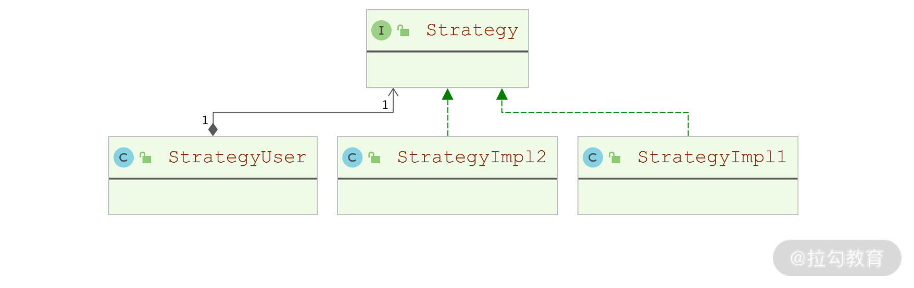
策略模式的核心类图
SqlSession
SqlSession是MyBatis对外提供的一个 API 接口，整个MyBatis 接口层也是围绕 SqlSession接口展开的，SqlSession 接口中定义了下面几类方法。
- select*() 方法：用来执行查询操作的方法，SqlSession 会将结果集映射成不同类型的结果对象，例如，selectOne() 方法返回单个 Java 对象，selectList()、selectMap() 方法返回集合对象。
- insert()、update()、delete() 方法：用来执行 DML 语句。
- commit()、rollback() 方法：用来控制事务。
- getMapper()、getConnection()、getConfiguration() 方法：分别用来获取接口对应的 Mapper 对象、底层的数据库连接和全局的 Configuration 配置对象。
如下图所示，MyBatis 提供了两个 SqlSession接口的实现类，同时提供了SqlSessionFactory 工厂类来创建 SqlSession 对象。
SqlSessionFactory 接口与 SqlSession 接口的实现类
默认情况下，我们在使用 MyBatis 的时候用的都是 DefaultSqlSession 这个默认的 SqlSession 实现。DefaultSqlSession 中维护了一个 Executor 对象，通过它来完成数据库操作以及事务管理。DefaultSqlSession 在选择使用哪种 Executor 实现的时候，使用到了策略模式：DefaultSqlSession 扮演了策略模式中的 StrategyUser 角色，Executor 接口扮演的是 Strategy 角色，Executor 接口的不同实现则对应 StrategyImpl 的角色。
另外，DefaultSqlSession 还维护了一个 dirty 字段来标识缓存中是否有脏数据，它在执行 update() 方法修改数据时会被设置为 true，并在后续参与事务控制，决定当前事务是否需要提交或回滚。
下面接着来看 DefaultSqlSession 对 SqlSession 接口的实现。DefaultSqlSession 为每一类数据操作方法提供了多个重载，尤其是 select*() 操作，而且这些 select*() 方法的重载之间有相互依赖的关系，如下图所示：

select() 方法之间的调用关系
通过上图我们可以清晰地看到，所有 select*() 方法最终都是通过调用 Executor.query() 方法执行 select 语句、完成数据查询操作的，之所以有不同的 select*() 重载，主要是对结果对象的需求不同。例如，我们使用 selectList() 重载时，希望返回的结果对象是一个 List集合；使用 selectMap() 重载时，希望查询到的结果集被转换成 Map 类型集合返回；至于select() 重载，则会由 ResultHandler 来处理结果对象。
DefaultSqlSession 中的 insert()、update()、delete() 等修改数据的方法以及 commit()、rollback() 等事务管理的方法，同样也有多个重载，它们最终也是委托到Executor 中的同名方法，完成数据修改操作以及事务管理操作的。
在事务管理的相关方法中，DefaultSqlSession 会根据 dirty 字段以及 autoCommit 字段（是否自动提交事务）、用户传入的 force参数（是否强制提交事务）共同决定是否提交/回滚事务，这部分逻辑位于 isCommitOrRollbackRequired() 方法中，具体实现如下：
private boolean isCommitOrRollbackRequired(boolean force) {
return (!autoCommit && dirty) || force;
}
DefaultSqlSessionFactory
DefaultSqlSessionFactory 是MyBatis中用来创建DefaultSqlSession 的具体工厂实现。通过 DefaultSqlSessionFactory 工厂类，我们可以有两种方式拿到 DefaultSqlSession对象。
第一种方式是通过数据源获取数据库连接，然后在其基础上创建 DefaultSqlSession 对象，其核心实现位于 openSessionFromDataSource() 方法，具体实现如下：
// 获取Environment对象
final Environment environment = configuration.getEnvironment();
// 获取TransactionFactory对象
final TransactionFactory transactionFactory = getTransactionFactoryFromEnvironment(environment);
// 从数据源中创建Transaction
tx = transactionFactory.newTransaction(environment.getDataSource(), level, autoCommit);
// 根据配置创建Executor对象
final Executor executor = configuration.newExecutor(tx, execType);
// 在Executor的基础上创建DefaultSqlSession对象
return new DefaultSqlSession(configuration, executor, autoCommit);
第二种方式是上层调用方直接提供数据库连接，并在该数据库连接之上创建 DefaultSqlSession 对象，这种创建方式的核心逻辑位于 openSessionFromConnection() 方法中，核心实现如下：
boolean autoCommit;
try {
// 获取事务提交方式
autoCommit = connection.getAutoCommit();
} catch (SQLException e) {
autoCommit = true;
}
// 获取Environment对象、TransactionFactory
final Environment environment = configuration.getEnvironment();
final TransactionFactory transactionFactory = getTransactionFactoryFromEnvironment(environment);
// 通过Connection对象创建Transaction
final Transaction tx = transactionFactory.newTransaction(connection);
// 创建Executor对象
final Executor executor = configuration.newExecutor(tx, execType);
// 创建DefaultSqlSession对象
return new DefaultSqlSession(configuration, executor, autoCommit);
SqlSessionManager
通过前面的 SqlSession 继承关系图我们可以看到，SqlSessionManager 同时实现了 SqlSession 和 SqlSessionFactory 两个接口，也就是说，它同时具备操作数据库的能力和创建SqlSession的能力。
首先来看 SqlSessionManager 创建SqlSession的实现。它与 DefaultSqlSessionFactory 的主要区别是：DefaultSqlSessionFactory 在一个线程多次获取 SqlSession 的时候，都会创建不同的 SqlSession对象；SqlSessionManager 则有两种模式，一种模式与 DefaultSqlSessionFactory 相同，另一种模式是 SqlSessionManager 在内部维护了一个 ThreadLocal 类型的字段（localSqlSession）来记录与当前线程绑定的 SqlSession 对象，同一线程从 SqlSessionManager 中获取的 SqlSession 对象始终是同一个，这样就减少了创建 SqlSession 对象的开销。
无论哪种模式，SqlSessionManager 都可以看作是 SqlSessionFactory 的装饰器，我们可以在 SqlSessionManager 的构造方法中看到，其中会传入一个 SqlSessionFactory 对象。
如果使用第一种模式，我们可以直接调用 SqlSessionManager.openSession() 方法，其底层直接调用被装饰的 SqlSessionFactory 对象创建 SqlSession 对象并返回。如果使用第二种模式，则需要调用 startManagedSession() 方法为当前线程绑定 SqlSession 对象，这里的 SqlSession 对象也是由被装饰的SqlSessionFactory 创建的，该模式的核心实现位于 startManagedSession() 方法中，具体实现如下：
public void startManagedSession() {
// 调用底层被装饰的SqlSessionFactory创建SqlSession对象，并绑定到localSqlSession字段中
localSqlSession.set(openSession());
}
与当前线程绑定完成之后，我们就可以通过SqlSessionManager实现的SqlSession接口方法进行数据库操作了，这些数据操作底层都是调用 sqlSessionProxy 这个 SqlSession 代理实现的。
SqlSessionManager 中的 sqlSessionProxy 字段指向了一个通过 JDK 动态代理创建的代理类，其中使用的 InvocationHandler 实现是 SqlSessionManager 的内部类 SqlSessionInterceptor。SqlSessionInterceptor 在成功拦截目标方法之后，会首先通过 localSqlSession 字段检查当前线程是否已经绑定了 SqlSession，如果绑定了，则直接使用绑定的 SqlSession；如果没有绑定，则通过 openSession() 方法创建新 SqlSession 完成数据库操作。具体实现如下：
public Object invoke(Object proxy, Method method, Object[] args) throws Throwable {
// 尝试从localSqlSession变量中获取当前线程绑定的SqlSession对象
final SqlSession sqlSession = SqlSessionManager.this.localSqlSession.get();
if (sqlSession != null) {
try {
// 当前线程已经绑定了SqlSession，直接使用即可
return method.invoke(sqlSession, args);
} catch (Throwable t) {
throw ExceptionUtil.unwrapThrowable(t);
}
} else {
// 通过openSession()方法创建新SqlSession对象
try (SqlSession autoSqlSession = openSession()) {
try {
// 通过新建的SqlSession对象完成数据库操作
final Object result = method.invoke(autoSqlSession, args);
autoSqlSession.commit();
return result;
} catch (Throwable t) {
autoSqlSession.rollback();
throw ExceptionUtil.unwrapThrowable(t);
}
}
}
}
SqlSessionManager中的 select*()、insert()、update() 等数据操作都依赖于 sqlSessionProxy 代理对象，而 commit()、rollback()、close() 方法等事务相关的操作，都是直接通过 localSqlSession 字段判断当前线程使用哪个 SqlSession。这里以 commit() 方法简单说明一下：
public void commit() {
// 获取当前线程绑定的SqlSession对象
final SqlSession sqlSession = localSqlSession.get();
if (sqlSession == null) { // 如果当前未绑定SqlSession对象，则不能用SqlSessionManager来控制事务
throw new SqlSessionException("Error: Cannot commit. No managed session is started.");
}
// 如果当前线程绑定了SqlSession，则可以通过SqlSessionManager来提交事务
sqlSession.commit();
}
总结
这一讲我们重点介绍了 MyBatis 中接口层的核心实现。MyBatis 接口层是基于前面课时介绍的核心处理层和基础支撑层对使用方提供的 API 接口，也就是我们在生产中最直接、最常用的接口。
这里我们首先介绍了 MyBatis 接口层使用到的策略模式这一经典设计模式的知识点，然后讲解了 SqlSession 接口的核心定义以及它的默认实现—— DefaultSqlSession，接下来还分析了用于创建 DefaultSqlSession 对象的工厂类——DefaultSqlSessionFactory，最后阐述了同时实现了 SqlSession 接口和 SqlSessionFactory 接口的 SqlSessionManager 实现类的核心原理。
20 插件体系让 MyBatis 世界更加精彩
插件是应用程序中最常见的一种扩展方式，比如，在Chrome 浏览器上我们可以安装各种插件来增强浏览器自身的功能。在 Java 世界中，很多开源框架也使用了插件扩展方式，例如，Dubbo 通过 SPI 方式实现了插件化的效果，SkyWalking 依赖“微内核+插件”的架构轻松加载插件，实现扩展效果。
MyBatis 作为持久层框架中的佼佼者，也提供了类似的插件扩展机制。MyBatis 将插件单独分离出一个模块，位于 org.apache.ibatis.plugin 包中，在该模块中主要使用了两种设计模式：代理模式和责任链模式。
插件模块使用的代理模式是通过 JDK 动态代理实现的，代理模式的基础知识以及 JDK 动态代理的核心原理我们已经在前面《06 | 日志框架千千万，MyBatis 都能兼容的秘密是什么？》中介绍过了。下面我们就重点来看一下责任链模式的基础知识。
责任链模式
我们在写业务系统的时候，最常用的协议就是 HTTP 协议，最常用的 HTTP Server 是 Tomcat，所以这里我们就结合 Tomcat 处理 HTTP 请求的场景来说明责任链模式的核心思想。
HTTP 协议可简单分为请求头和请求体两部分，Tomcat 在收到一条完整的 HTTP 请求时，也会将其分为请求头和请求体两部分进行处理的。不过在真正的 Tomcat 实现中，会将 HTTP 请求细分为更多部分，然后逐步进行处理，整个 Tomcat 代码处理 HTTP 请求的实现也更为复杂。
试想一下，Tomcat 将处理请求的各个细节的实现代码都堆到一个类中，那这个类的代码会非常长，维护起来也非常痛苦，可以说是“牵一发而动全身”。如果 HTTP 请求升级，那就需要修改这个臃肿的类，显然是不符合“开放-封闭”原则的。
为了实现像 HTTP 这种多部分构成的协议的处理逻辑，我们可以使用责任链模式来划分协议中各个部分的处理逻辑，将那些臃肿实现类拆分成多个 Handler（或 Interceptor）处理器，在每个 Handler（或 Interceptor）处理器中只专注于 HTTP 协议中一部分数据的处理。我们可以开发多个 Handler 处理器，然后按照业务需求将多个 Handler 对象组合成一个链条，从而实现整个 HTTP 请求的处理。
这样做既可以将复杂、臃肿的逻辑拆分，便于维护，又能将不同的 Handler 处理器分配给不同的程序员开发，提高开发效率。
在责任链模式中，Handler 处理器会持有对下一个 Handler 处理器的引用，也就是说当一个 Handler 处理器完成对关注部分的处理之后，会将请求通过这个引用传递给下一个 Handler 处理器，如此往复，直到整个责任链中全部的 Handler 处理器完成处理。责任链模式的核心类图如下所示：
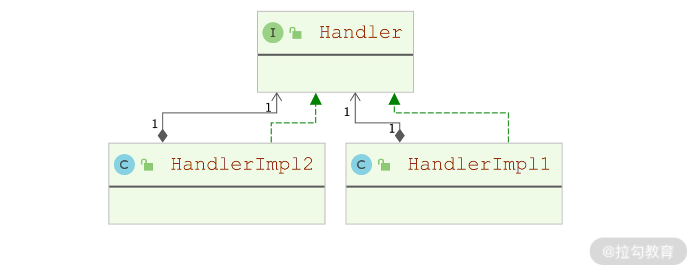
责任链模式核心类图
下面我们再从复用的角度看一下责任链模式带来的好处。
假设我们自定义了一套协议，其请求中包含 A、B、C 三个核心部分，业务系统使用 Handler A、Handler B、Handler C 三个处理器来处理这三部分的数据。如果业务变化导致我们的自定义协议也发生了变化，协议中的数据变成了 A、C、D 这三部分，那么我们只需要动态调整构成责任链的 Handler 处理器即可，最新的责任链变为 Handler A、Handler C、Handler D。如下图所示：
责任链示意图
由此可见，责任链模式可以帮助我们复用 Handler 处理器的实现逻辑，提高系统的可维护性和灵活性，很好地符合了“开放-封闭”原则。
Interceptor
介绍完责任链模式的基础知识之后，我们接着就来讲解MyBatis 中插件的相关内容。
MyBatis 插件模块中最核心的接口就是 Interceptor 接口，它是所有 MyBatis 插件必须要实现的接口，其核心定义如下：
public interface Interceptor {
// 插件实现类中需要实现的拦截逻辑
Object intercept(Invocation invocation) throws Throwable;
// 在该方法中会决定是否触发intercept()方法
default Object plugin(Object target) {
return Plugin.wrap(target, this);
}
default void setProperties(Properties properties) {
// 在整个MyBatis初始化过程中用来初始化该插件的方法
}
}
MyBatis允许我们自定义 Interceptor 拦截 SQL 语句执行过程中的某些关键逻辑，允许拦截的方法有：Executor 类中的 update()、query()、flushStatements()、commit()、rollback()、getTransaction()、close()、isClosed()方法，ParameterHandler 中的 setParameters()、getParameterObject() 方法，ResultSetHandler中的 handleOutputParameters()、handleResultSets()方法，以及StatementHandler 中的parameterize()、prepare()、batch()、update()、query()方法。
通过本课程模块三的介绍我们知道，上述方法都是 MyBatis 执行 SQL 语句的核心组件，所以在使用自定义 Interceptor 拦截这些方法之前，我们需要非常了解 MyBatis 的核心原理以及 Interceptor 的拦截行为。
下面我们就结合一个 MyBatis 插件示例，介绍一下 MyBatis 中 Interceptor 接口的具体使用方式。这里我们首先定义一个DemoPlugin 类，定义如下：
@Intercepts({
@Signature(type = Executor.class, method = "query", args = {
MappedStatement.class, Object.class, RowBounds.class,
ResultHandler.class}),
@Signature(type = Executor.class, method = "close", args = {boolean.class})
})
public class DemoPlugin implements Interceptor {
private int logLevel;
... // 省略其他方法的实现
}
我们看到 DemoPlugin 这个示例类除了实现 Interceptor 接口外，还被标注了 @Intercepts 和 @Signature 两个注解。@Intercepts 注解中可以配置多个 @Signature 注解，@Signature 注解用来指定 DemoPlugin 插件实现类要拦截的目标方法信息，其中的 type 属性指定了要拦截的类，method 属性指定了要拦截的目标方法名称，args 属性指定了要拦截的目标方法的参数列表。通过 @Signature 注解中的这三个配置，DemoPlugin 就可以确定要拦截的目标方法的方法签名。在上面的示例中，DemoPlugin 会拦截 Executor 接口中的 query(MappedStatement, Object, RowBounds, ResultHandler) 方法和 close(boolean) 方法。
完成 DemoPlugin 实现类的编写之后，为了让 MyBatis 知道这个类的存在，我们要在 mybatis-config.xml 全局配置文件中对 DemoPlugin 进行配置，相关配置片段如下：
<plugins>
<plugin interceptor="design.Interceptor.DemoPlugin">
<!-- 对拦截器中的属性进行初始化 -->
<property name="logLevel" value="1"/>
</plugin>
</plugins>
通过前面《10 | 鸟瞰 MyBatis 初始化，把握 MyBatis 启动流程脉络（上）》对初始化流程的介绍我们知道，MyBatis 会在初始化流程中解析 mybatis-config.xml 全局配置文件，其中的 <plugin> 节点就会被处理成相应的 Interceptor 对象，同时调用 setProperties() 方法完成配置的初始化，最后MyBatis 会将 Interceptor 对象添加到Configuration.interceptorChain 这个全局的 Interceptor 列表中保存。
介绍完 Interceptor 的加载和初始化原理之后，我们再来看 Interceptor 是如何拦截目标类中的目标方法的。通过本课程模块三的介绍，我们知道 MyBatis 中 Executor、ParameterHandler、ResultSetHandler、StatementHandler 等与 SQL 执行相关的核心组件都是通过 Configuration.new*() 方法生成的。以 newExecutor() 方法为例，我们会看到下面这行代码，InterceptorChain.pluginAll() 方法会为目标对象（也就是这里的 Executor 对象）创建代理对象并返回。
executor = (Executor) interceptorChain.pluginAll(executor);
从名字就可以看出，InterceptorChain 是 Interceptor 构成的责任链，在其 interceptors 字段（ArrayList<Interceptor>类型）中维护了 MyBatis 初始化过程中加载到的全部 Interceptor 对象，在其 pluginAll() 方法中，会调用每个 Interceptor 的 plugin() 方法创建目标类的代理对象，核心实现如下：
public Object pluginAll(Object target) {
for (Interceptor interceptor : interceptors) {
// 遍历interceptors集合，调用每个Interceptor对象的plugin()方法
target = interceptor.plugin(target);
}
return target;
}
Plugin
了解了 Interceptor 的加载流程和基本工作原理之后，我们再来介绍一下自定义 Interceptor 的实现。我们首先回到 DemoPlugin 这个示例，关注其中 plugin() 方法的实现：
@Override
public Object plugin(Object target) {
// 依赖Plugin工具类创建代理对象
return Plugin.wrap(target, this);
}
从 DemoPlugin 示例中，我们可以看到 plugin() 方法依赖 MyBatis 提供的 Plugin.wrap() 工具方法创建代理对象，这也是我们推荐的实现方式。
MyBatis 提供的 Plugin 工具类实现了 JDK 动态代理中的 InvocationHandler 接口，同时维护了下面三个关键字段。
- target（Object 类型）：要拦截的目标对象。
- signatureMap（Map<Class<?>, Set
> 类型）：记录了 @Signature 注解中配置的方法信息，也就是代理要拦截的目标方法信息。 - interceptor（Interceptor 类型）：目标方法被拦截后，要执行的逻辑就写在了该 Interceptor 对象的 intercept() 方法中。
既然 Plugin 实现了 InvocationHandler 接口，我们自然需要关注其 invoke() 方法实现。在 invoke() 方法中，Plugin 会检查当前要执行的方法是否在 signatureMap 集合中，如果在其中的话，表示当前待执行的方法是我们要拦截的目标方法之一，也就会调用 intercept() 方法执行代理逻辑；如果未在其中的话，则表示当前方法不应被代理，直接执行当前的方法即可。下面就是 Plugin.invoke() 方法的核心实现：
public Object invoke(Object proxy, Method method, Object[] args) throws Throwable {
try {
// 获取当前待执行方法所属的类
Set<Method> methods = signatureMap.get(method.getDeclaringClass());
// 如果当前方法需要被代理，则执行intercept()方法进行拦截处理
if (methods != null && methods.contains(method)) {
return interceptor.intercept(new Invocation(target, method, args));
}
// 如果当前方法不需要被代理，则调用target对象的相应方法
return method.invoke(target, args);
} catch (Exception e) {
throw ExceptionUtil.unwrapThrowable(e);
}
}
这里传入 Interceptor.intercept() 方法的是一个 Invocation 对象，其中封装了目标对象、目标方法以及目标方法的相关参数，在 DemoInterceptor.intercept() 方法实现中，就是通过调用 Invocation.proceed() 方法完成目标方法的执行。当然，我们自定义的 Interceptor 实现并不一定必须调用目标方法。这样，经过DemoInterceptor 的拦截之后，也就改变了 MyBatis 核心组件的行为。
最后，我们来看一下 Plugin 工具类对外提供的 wrap() 方法是如何创建 JDK 动态代理的。在 wrap() 方法中，Plugin 工具类会解析传入的 Interceptor 实现的 @Signature 注解信息，并与当前传入的目标对象类型进行匹配，只有在匹配的情况下，才会生成代理对象，否则直接返回目标对象。具体的代码实现以及注释说明如下所示：
public static Object wrap(Object target, Interceptor interceptor) {
// 获取自定义Interceptor实现类上的@Signature注解信息，
// 这里的getSignatureMap()方法会解析@Signature注解，得到要拦截的类以及要拦截的方法集合
Map<Class<?>, Set<Method>> signatureMap = getSignatureMap(interceptor);
Class<?> type = target.getClass();
// 检查当前传入的target对象是否为@Signature注解要拦截的类型，如果是的话，就
// 使用JDK动态代理的方式创建代理对象
Class<?>[] interfaces = getAllInterfaces(type, signatureMap);
if (interfaces.length > 0) {
// 创建JDK动态代理
return Proxy.newProxyInstance(
type.getClassLoader(),
interfaces,
// 这里使用的InvocationHandler就是Plugin本身
new Plugin(target, interceptor, signatureMap));
}
return target;
}
总结
这一讲我们重点介绍了 MyBatis 中插件模块的内容。
- 首先，讲解了责任链模式的核心内容，它是 MyBatis 插件底层设计的核心思想。
- 然后，介绍了 Interceptor 接口，通过实现 Interceptor 接口，我们可以自定义插件的具体逻辑。
- 最后，分析了 Plugin 这个辅助类的核心功能，它是实现自定义 Interceptor 必不可少的辅助工具。Plugin 工具类通过 JDK 动态代理的方式，帮助我们完成了对 @Signature 等注解的解析，也帮助我们真正拦截了 MyBatis 中的核心方法，改变了MyBatis 内核的行为。
21 深挖 MyBatis 与 Spring 集成底层原理
在实际开发过程中，一般我们不会只使用单个的开源框架，而是会使用多种开源框架和开源工具相互配合来实现需求。在 Java 世界中，最出名的开源框架就要数 Spring 了。Spring 是 2002 年出现的一个轻量级 Java 框架，它最开始就是为了替换掉 EJB 这种复杂的企业开发框架。时至 2021 年，几乎所有的 Java 后端项目都会使用到 Spring，Spring 已经成为业界标准，我们在实践中常用的 SSM 三层架构其实就是 Spring、Spring MVC和MyBatis这三个核心框架的简称。
搭建一个 SSM 环境是非常简单的，今天这一讲我们不仅要搭建 SSM 开发环境，还要深入剖析这三个框架能够协同工作的原理。不过，在开始讲解 SSM 开发环境搭建之前，我们先来简单介绍一下 Spring 和 Spring MVC 的基础知识。
Spring
Spring 中最核心的概念就要数 IoC 了。IoC（Inversion of Control，控制反转）的核心思想是将业务对象交由 IoC 容器管理，由 IoC 容器控制业务对象的初始化以及不同业务对象之间的依赖关系，这样就可以降低代码的耦合性。
依赖注入（Dependency Injection）是实现 IoC 的常见方式之一。所谓依赖注入，就是我们的系统不再主动维护业务对象之间的依赖关系，而是将依赖关系转移到 IoC 容器中动态维护。Spring 提供了依赖注入机制，我们只需要通过 XML 配置或注解，就可以确定业务对象之间的依赖关系，轻松实现业务逻辑的组合。
Spring 中另一个比较重要的概念是 AOP（Aspect Oriented Programming），也就是面向切面编程。它是面向对象思想的补充和完善，毕竟在面对一个问题的时候，从更多的角度、用更多的思维模型去审视问题，才能更好地解决问题。
在面向对象的思想中，我们关注的是代码的封装性、类间的继承关系和多态、对象之间的依赖关系等，通过对象的组合就可以实现核心的业务逻辑，但是总会有一些重要的重复性代码散落在业务逻辑类中，例如，权限检测、日志打印、事务管理相关的逻辑，这些重复逻辑与我们的核心业务逻辑并无直接关系，却又是系统正常运行不能缺少的功能。
AOP 可以帮我们将这些碎片化的功能抽取出来，封装到一个组件中进行重用，这也被称为切面。通过 AOP 的方式，可以有效地减少散落在各处的碎片化代码，提高系统的可维护性。为了方便你后面理解 Spring AOP 的代码，这里我简单介绍 AOP中的几个关键概念。
- 横切关注点：如果某些业务逻辑代码横跨业务系统的多个模块，我们可以将这些业务代码称为横切关注点。
- 切面：对横切关注点的抽象。面向对象思想中的类是事物特性的抽象，与之相对的切面则是对横切关注点的抽象。
- 连接点：业务逻辑中的某个方法，该方法会被 AOP 拦截。
- 切入点：对连接点进行拦截的定义。
- 通知：拦截到连接点之后要执行的代码，可以分为5类，分别是前置通知、后置通知、异常通知、最终通知和环绕通知。
Spring MVC
Spring MVC 是 Spring 生态中的一个 Web 框架，也是现在市面上用得最多的 Web 框架，其底层的核心设计思想就是经典的 MVC 架构模式。
所谓 MVC 架构模式指的就是 Model、View和Controller 三部分，其中，Model 负责封装业务逻辑以及业务数据；View 只负责展示数据，其中不包含任何逻辑代码或只会包含非常简单的、与展示相关的逻辑控制代码；Controller 用来接收用户发起的请求，调用设计的 Service 层来完成具体的业务逻辑，产生的数据会返回到 View上进行展示。下图展示了 MVC 架构中三个核心组件的关系：

MVC 模式示意图
在 Spring MVC 框架中，Model 层一般使用普通的 Service Bean 对象，View 层目前常用的是一些前端框架，以实现更好的渲染效果，Controller 是由 Spring MVC 特殊配置过的 Servlet，它会将用户请求分发给 Model，将响应转发给 View。
了解了 SpringMVC核心思想之后，我们再进一步分析Spring MVC 工作的核心原理。
DispatcherServlet 是 Spring MVC 中的前端控制器，也是 Spring MVC 内部非常核心的一个组件，负责 Spring MVC 请求的调度。当 Spring MVC 接收到用户的 HTTP 请求之后，会由 DispatcherServlet 进行截获，然后根据请求的 URL 初始化 WebApplicationContext（上下文信息），最后转发给业务的 Controller 进行处理。待 Controller 处理完请求之后，DispatcherServlet 会根据返回的视图名称选择具体的 View 进行渲染。
下图展示了 Spring MVC 处理一次 HTTP 请求的完整流程：

Spring MVC 处理请求示意图
可以看到，Spring MVC 框架处理 HTTP 请求的核心步骤如下。
- 用户的请求到达服务器后，经过HTTP Server 处理得到 HTTP Request 对象，并传到 Spring MVC 框架中的 DispatcherServlet 进行处理。
- DispatcherServlet 在接收到请求之后，会根据请求查找对应的 HandlerMapping，在 HandlerMapping 中维护了请求路径与 Controller 之间的映射。
- DispatcherServlet 根据步骤 2 中的 HandlerMapping 拿到请求相应的 Controller ，并将请求提交到该 Controller 进行处理。Controller 会调用业务 Service 完成请求处理，得到处理结果；Controller 会根据 Service 返回的处理结果，生成相应的 ModelAndView 对象并返回给 DispatcherServlet。
- DispatcherServlet 会从 ModelAndView 中解析出 ViewName，并交给 ViewResolver 解析出对应的 View 视图。
- DispatcherServlet 会从 ModelAndView 中拿到 Model（在 Model 中封装了我们要展示的数据），与步骤 4 中得到的 View 进行整合，得到最终的 Response 响应。
SSM 环境搭建
了解了 Spring 以及 Spring MVC 的基本概念之后，我们开始搭建 SSM 的开发环境（建议结合示例代码一起学习，效果更佳），最终搭建的SSM 项目结构如下图所示：
SSM 项目结构图
首先，在 IDEA 中创建一个新的 Maven Web 项目，具体选项如下图所示：

选择 Web 类型的 Maven 项目
Maven 项目创建完成之后，我们就可以编写项目中的核心配置文件。
第一个是 web.xml 配置文件。其中指定了初始化 Spring 上下文的 ContextLoaderListener 监听器，在 Spring 初始化过程中，ContextLoaderListener会读取Spring 的 XML 配置文件，这里通过 contextConfigLocation 参数就可以指定applicationContext.xml 配置文件的位置。另外，web.xml 中还会配置Spring MVC 中的 DispatcherServlet，这里同样需要指定 Spring MVC 要读取的 XML 配置文件地址。
第二个是Spring 初始化时读取的 applicationContext.xml 配置文件，这里简单说明其中的几个关键 Bean。
- DriverManagerDataSource 数据源，这是 Spring 提供的一个数据源实现，它连接的数据库信息定义在 datasource.properties 配置文件中。
- SqlSessionFactoryBean，这个工厂 Bean 是 Spring 与 MyBatis 集成的关键，在后面分析两者集成原理的时候会深入该类的实现。我们这里为 SqlSessionFactoryBean 指定了三个属性：dataSource 属性指向了上面的 DriverManagerDataSource Bean，configLocation 指向了 mybatis-config.xml 全局配置文件，typeAliasesPackage 指向了要扫描的包名，该包内的 Java 类的类名会被作为该类的别名。
- MapperScannerConfigurer，这个是用来扫描 MyBatis 中的 Mapper.xml 配置文件的扫描器，在后面分析 Spring 与 MyBatis 集成原理的时候也会深入该类的实现。
- DataSourceTransactionManager，这是 Spring 提供的事务管理器，会与下面的 AOP 配置一起完成事务的管理。事务相关的 AOP 配置示例如下：
<!-- 定义个通知，指定事务管理器控制事务 -->
<tx:advice id="txAdvice" transaction-manager="txManager">
<tx:attributes>
<!-- propagation属性指定了事务的传播属性，即在拦截到save开头的方法时，必须在一个事务的上下文中，如果没有事务的话，需要新开启事务，rollback-for属性表示遇到异常时回滚事务，read-only表示当前操作不是一个只读操作，会修改数据 -->
<tx:method name="save*" propagation="REQUIRED"
read-only="false"
rollback-for="java.lang.Exception"/>
<!-- 省略其他方法的配置 -->
</tx:attributes>
</tx:advice>
<aop:config>
<!-- 配置一个切入点，将会拦截org.example包中以ServiceImpl结尾的类的全部方法-->
<aop:pointcut id="serviceMethods"
expression="execution(* org.example.*ServiceImpl.*(..))"/>
<aop:advisor advice-ref="txAdvice" pointcut-ref="serviceMethods"/>
</aop:config>
除了上述 Spring Bean 的配置之外，我们还要配置 Spring 自动扫描功能，不过需要注意的是，这里需要指明不扫描 @Controller 注解修饰的 Bean。
我们可以在Spring MVC 的配置文件中看到，@Controller 修饰的 Bean将会由 Spring MVC 的上下文完成加载。另外，该示例代码使用 JSP 作为前端界面，所以我们需要在 Spring MVC 配置文件中配置一个 UrlBasedViewResolver 来解析 viewName 与 JSP 页面的映射。
SSM 开发环境中最核心的配置就介绍完了，关于其完整配置，你可以参考 SSM 的示例代码进行分析。在这份示例代码中，除了上述介绍的配置之外，还提供了一个简单的登录示例，其中的 UserBean 抽象了用户基本信息，例如用户名、密码；UserMapper 接口和 UserMapper.xml 实现了 DAO 层，实现了基本的数据库操作；ILoginService 接口和 LoginServiceImpl 实现类构成了 Service 层，完成了登录这个业务逻辑；LoginController 则是 Controller 层的实现，依赖 Service 层完成登录业务之后，会控制页面的跳转；最后，还有两个 JSP 页面用来展示用户登录前后的数据。这些内容就留给你自己分析了。
Spring 集成 MyBatis 原理剖析
在搭建 SSM 开发环境的时候，我们引入了一个 mybatis-spring-*.jar 的依赖，这个依赖是 Spring 集成 MyBatis 的关键所在，该依赖内部会将 MyBatis 管理的事务交给 Spring 的事务管理器进行管理，同时还会由 Spring IoC 容器来控制 SqlSession 对象的注入。
下面我们就来看一下 Spring 集成 MyBatis 的几个关键实现。
1. SqlSessionFactoryBean
在搭建 SSM 环境的时候，我们会在 applicationContext.xml 中配置一个 SqlSessionFactoryBean，其核心作用就是读取 MyBatis 配置，初始化 Configuration 全局配置对象，并创建 SqlSessionFactory 对象，对应的核心方法是 buildSqlSessionFactory() 方法。
下面是 buildSqlSessionFactory() 方法的核心代码片段：
protected SqlSessionFactory buildSqlSessionFactory() throws IOException {
Configuration configuration;
XMLConfigBuilder xmlConfigBuilder = null;
if (this.configLocation != null) {
// 创建XMLConfigBuilder对象，读取指定的配置文件
xmlConfigBuilder = new XMLConfigBuilder(this.configLocation.getInputStream(),
null, this.configurationProperties);
configuration = xmlConfigBuilder.getConfiguration();
} else {
// 其他方式初始化Configuration全局配置对象
}
// 下面会根据前面第10、11讲介绍的初始化流程，初始化MyBatis的相关配置和对象，其中包括：
// 扫描typeAliasesPackage配置指定的包，并为其中的类注册别名
// 注册plugins集合中指定的插件
// 扫描typeHandlersPackage指定的包，并注册其中的TypeHandler
// 配置缓存、配置数据源、设置Environment等一系列操作
if (this.transactionFactory == null) {
// 默认使用的事务工厂类
this.transactionFactory = new SpringManagedTransactionFactory();
}
// 根据mapperLocations配置，加载Mapper.xml映射配置文件以及对应的Mapper接口
for (Resource mapperLocation : this.mapperLocations) {
XMLMapperBuilder xmlMapperBuilder = new XMLMapperBuilder(...);
xmlMapperBuilder.parse();
}
// 最后根据前面创建的Configuration全局配置对象创建SqlSessionFactory对象
return this.sqlSessionFactoryBuilder.build(configuration);
}
2. SpringManagedTransaction
通过对 SqlSessionFactoryBean 的分析我们可以看出，在 SSM 集成环境中默认使用 SpringManagedTransactionFactory 这个 TransactionFactory 接口实现来创建 Transaction 对象，其中创建的 Transaction 对象是 SpringManagedTransaction。需要说明的是，这里的 Transaction 和 TransactionFactory 接口都是 MyBatis 中的接口。
SpringManagedTransaction 中除了维护事务关联的数据库连接和数据源之外，还维护了一个 isConnectionTransactional 字段（boolean 类型）用来标识当前事务是否由 Spring 的事务管理器管理，这个标识会控制 commit() 方法和rollback() 方法是否真正提交和回滚事务，相关的代码片段如下：
public void commit() throws SQLException {
if (this.connection != null && !this.isConnectionTransactional && !this.autoCommit){
// 当事务不由Spring事务管理器管理的时候，会立即提交事务，否则由Spring事务管理器管理事务的提交和回滚
this.connection.commit();
}
}
3. SqlSessionTemplate
当 Spring 集成 MyBatis 使用的时候，SqlSession 接口的实现不再直接使用 MyBatis 提供的 DefaultSqlSession 默认实现，而是使用 SqlSessionTemplate，如果我们没有使用 Mapper 接口的方式编写 DAO 层，而是直接使用 Java 代码手写 DAO 层，那么我们就可以使用 SqlSessionTemplate。
SqlSessionTemplate 是线程安全的，可以在多个线程之间共享使用。
SqlSessionTemplate 内部持有一个 SqlSession 的代理对象（sqlSessionProxy 字段），这个代理对象是通过 JDK 动态代理方式生成的；使用的 InvocationHandler 接口是 SqlSessionInterceptor，其 invoke() 方法会拦截 SqlSession 的全部方法，并检测当前事务是否由 Spring 管理。相关代码片段如下：
public Object invoke(Object proxy, Method method, Object[] args) throws Throwable {
// 通过静态方法SqlSessionUtils.getSqlSession()获取SqlSession对象
SqlSession sqlSession = SqlSessionUtils.getSqlSession(
SqlSessionTemplate.this.sqlSessionFactory,
SqlSessionTemplate.this.executorType,
SqlSessionTemplate.this.exceptionTranslator);
// 调用SqlSession对象的相应方法
Object result = method.invoke(sqlSession, args);
// 检测事务是否由Spring进行管理，并据此决定是否提交事务
if (!isSqlSessionTransactional(sqlSession,
SqlSessionTemplate.this.sqlSessionFactory)) {
sqlSession.commit(true);
}
return result; // 返回操作结果
}
这里使用的SqlSessionUtils.getSqlSession() 方法会尝试从 Spring 事务管理器中获取 SqlSession对象并返回，如果获取失败，则新建一个 SqlSession 对象并交由 Spring 事务管理器管理，同时将这个 SqlSession 返回。
SqlSessionDaoSupport 实现了 Spring DaoSupport 接口，核心功能是辅助我们手写 DAO 层的代码。SqlSessionDaoSupport 内部持有一个 SqlSessionTemplate 对象（sqlSession字段），并提供了getSqlSession() 方法供子类获取该 SqlSessionTemplate 对象，所以我们在手写 DAO 层代码的时候，可以通过继承 SqlSessionDaoSupport 这个抽象类的方式，拿到 SqlSessionTemplate 对象，实现访问数据库的相关操作。
4. MapperFactoryBean 与 MapperScannerConfigurer
使用 SqlSessionDaoSupport 或 SqlSessionTemplate 编写 DAO 毕竟是需要我们手写代码的，为了进一步简化 DAO 层的实现，我们可以通过 MapperFactoryBean 直接将 Mapper 接口注入 Service 层的 Bean 中，由 Mapper 接口完成 DAO 层的功能。
下面是一段 MapperFactoryBean 的配置示例：
<!-- 配置id为customerMapper的Bean -->
<bean id="customerMapper" class="org.mybatis.spring.mapper.MapperFactoryBean">
<!-- 配置Mapper接口 -->
<property name="mapperInterface" value="com.example.mapper.CustomerMapper" />
<!-- 配置SqlSessionFactory，用于创建底层的SqlSessionTemplate -->
<property name="sqlSessionFactory" ref="sqlSessionFactory" />
</bean>
在 MapperFactoryBean 这个 Bean 初始化的时候，会加载 mapperInterface 配置项指定的 Mapper 接口，并调用 Configuration.addMapper() 方法将 Mapper 接口注册到 MapperRegistry，在注册过程中同时会解析对应的 Mapper.xml 配置文件。这个注册过程以及解析 Mapper.xml 配置文件的过程，在前面[第 11 讲]中我们已经分析过了，这里不再重复。
完成 Mapper 接口的注册之后，我们就可以通过 MapperFactoryBean.getObject() 方法获取相应 Mapper 接口的代理对象，相关代码片段如下：
public T getObject() throws Exception {
// 这里通过SqlSession.getMapper()方法获取Mapper接口的代理对象
return getSqlSession().getMapper(this.mapperInterface);
}
虽然通过 MapperFactoryBean 可以不写一行 Java 代码就能实现 DAO 层逻辑，但还是需要在 Spring 的配置文件中为每个 Mapper 接口配置相应的 MapperFactoryBean，这依然是有一定工作量的。如果连配置信息都不想写，那我们就可以使用 MapperScannerConfigurer 扫描指定包下的全部 Mapper 接口，这也是我们在前文 SSM 开发环境中使用的方式。
这里我们简单介绍一下 MapperScannerConfigurer 的实现。MapperScannerConfigurer 实现了 BeanDefinitionRegistryPostProcessor 接口，在 Spring 容器初始化的时候会触发其 postProcessBeanDefinitionRegistry() 方法，完成扫描逻辑，其核心代码逻辑如下：
public void postProcessBeanDefinitionRegistry(BeanDefinitionRegistry registry) {
if (this.processPropertyPlaceHolders) {
// 解析Spring配置文件中MapperScannerConfigurer配置的占位符
processPropertyPlaceHolders();
}
// 创建ClassPathMapperScanner
ClassPathMapperScanner scanner = new ClassPathMapperScanner(registry);
// 根据配置信息决定ClassPathMapperScanner如何扫描指定的包，也就是确定扫描的过滤条件，例如，有几个包需要扫描、是否关注Mapper接口的注解、是否关注Mapper接口的父类等
// 开始扫描basePackage字段中指定的包及其子包
scanner.scan(StringUtils.tokenizeToStringArray(this.basePackage,
ConfigurableApplicationContext.CONFIG_LOCATION_DELIMITERS));
}
ClassPathMapperScanner.scan() 这个扫描方法底层会调用其 doScan() 方法完成扫描，扫描过程中首先会遍历配置中指定的所有包，并根据过滤条件得到符合条件的BeanDefinitionHolder 对象；之后对这些 BeanDefinitionHolder 中记录的 Bean 类型进行改造，改造成 MapperFactoryBean 类型，同时填充 MapperFactoryBean 初始化所需的信息。这样就可以在 Spring 容器初始化的时候，为扫描到的 Mapper 接口创建对应的 MapperFactoryBean，从而进一步降低DAO 的编写成本。
总结
这一讲我们重点介绍了 MyBatis 与 Spring 的相关内容。
- 首先，简单介绍了 Spring 和 Spring MVC 两大框架的核心思想，其中阐述了 IoC、AOP、MVC 等基本概念。
- 然后，一起搭建了一个 Spring、Spring MVC、MyBatis 的集成开发环境，也就是我们的 SSM 项目，你可以参考该项目的源码搭建自己项目的基础框架。
- 最后，深入分析了 mybatis-spring-*.jar 这个依赖，其中包含了实现 Spring 与 MyBatis 无缝集成的核心逻辑。
22 基于 MyBatis 的衍生框架一览
在前面的课时中，我们深入分析了 MyBatis 的内核，了解了 MyBatis 处理一条 SQL 的完整流程，剖析了 MyBatis 中动态 SQL、结果集映射、缓存等核心功能的实现原理。在日常工作中，除了单纯使用 MyBatis 之外，还可能会涉及 MyBatis 的衍生框架，这一讲我们就来介绍一下工作中常用的 MyBatis 衍生框架。
MyBatis-Generator
虽然使用 MyBatis 编写 DAO 层已经非常方便，但是我们还是要编写 Mapper 接口和相应的 Mapper.xml 配置文件。为了进一步节省编码时间，我们可以选择 MyBatis-Generator 工具自动生成 Mapper 接口和 Mapper.xml 配置文件。
这里我们通过一个简单示例介绍一下 MyBatis-Generator 工具的基本功能。
MyBatis-Generator 目前最新的版本是 1.4.0 版本，首先我们需要下载这个最新的 zip 包，并进行解压，得到 mybatis-generator-core-1.4.0.jar 这个 jar 包。
由于我们本地使用的是 MySQL 数据库，所以需要准备一个 mysql-connector-java 的 jar 包，我们可以从本地的 Maven 仓库中获得，具体的目录是：.m2/repository/mysql/mysql-connector-java/，在这个目录中选择一个最新版本的 jar 包拷贝到 mybatis-generator-core-1.4.0.jar 同目录下。
接下来，我们需要编写一个 generatorConfig.xml 配置文件，其中会告诉 MyBatis-Generator 去连接哪个数据库、连接数据库的用户名和密码分别是什么、需要根据哪些表生成哪些配置文件和类，以及这些生成文件的存放位置。下面是一个 generatorConfig.xml 配置文件的完整示例：
<?xml version="1.0" encoding="UTF-8"?>
<!DOCTYPE generatorConfiguration
PUBLIC "-//mybatis.org//DTD MyBatis Generator Configuration 1.0//EN"
"http://mybatis.org/dtd/mybatis-generator-config_1_0.dtd">
<generatorConfiguration>
<!-- 使用的数据库驱动jar包 -->
<classPathEntry location="mysql-connector-java-8.0.22.jar"/>
<!-- 指定数据库地址、数据库用户名和密码 -->
<context id="DB2Tables" targetRuntime="MyBatis3">
<jdbcConnection driverClass="com.mysql.jdbc.Driver"
connectionURL="jdbc:mysql://localhost:3306/test"
userId="root" password="xxx">
</jdbcConnection>
<javaTypeResolver>
<property name="forceBigDecimals" value="false"/>
</javaTypeResolver>
<!-- 生成的Model类存放位置 -->
<javaModelGenerator targetPackage="org.example" targetProject="src">
<!-- 是否支持生成子package -->
<property name="enableSubPackages" value="true"/>
<!-- 对String进行操作时，会添加trim()方法进行处理 -->
<property name="trimStrings" value="true"/>
</javaModelGenerator>
<!-- 生成的Mapper.xml映射配置文件的存放位置-->
<sqlMapGenerator targetPackage="org.example.mapper" targetProject="src">
<property name="enableSubPackages" value="true"/>
</sqlMapGenerator>
<!-- 生成的Mapper接口的存放位置-->
<javaClientGenerator type="XMLMAPPER" targetPackage="org.example.mapper"
targetProject="src">
<property name="enableSubPackages" value="true"/>
</javaClientGenerator>
<!-- 数据库表与Model类之间的映射关系，根据t_customer表进行映射-->
<table schema="test" tableName="t_customer" domainObjectName="Customer"
enableCountByExample="false" enableUpdateByExample="false"
enableDeleteByExample="false"
enableSelectByExample="false" selectByExampleQueryId="false">
</table>
</context>
</generatorConfiguration>
然后，我们准备一下数据库中的表，在 MySQL 中建立一个 test 数据库，并创建 t_customer 表，使用到的建库建表语句如下：
create databases test; # 创建数据库
use test;
DROP TABLE IF EXISTS `t_customer`; # 删除已有的t_customer表
CREATE TABLE `t_customer` ( # 创建t_customer表
`id` int(255) NOT NULL,
`name` varchar(255) DEFAULT NULL,
`password` varchar(255) DEFAULT NULL,
`account` bigint(255) DEFAULT NULL,
PRIMARY KEY (`id`)
) ENGINE=InnoDB DEFAULT CHARSET=utf8;
最后，我们在 mybatis-generator-core-1.4.0.jar 包同目录下新建一个 src 目录，存放生成的代码，然后执行如下命令，逆向生成需要的代码：
java -jar mybatis-generator-core-1.4.0.jar -configfile generatorConfig.xml
命令正常执行完成之后，可以看到 src 目录下生成的文件如下图所示：
MyBatis-Generator 工具类生成结果图
生成的 Customer.java 类是一个 Model 类（或者说 Domain 类），包含了 id、name、password、account 属性；CustomerMapper.xml 是 Customer 对应的 Mapper.xml 配置文件，其中定义了按照 id 进行查询和删除的 select、delete 语句，以及全字段写入和更新的 insert、update 语句；CustomerMapper 接口中包含了与 CustomerMapper.xml 对应的方法。该示例中生成的代码并不复杂，在你生成代码之后，也希望你能够自己分析一下。
MyBatis 分页插件
MyBatis 本身提供了 RowBounds 参数，可以实现分页的效果，但是在前面[第 14 讲]中我们提到过，通过 RowBounds 方式实现分页的时候，本质是将整个结果集数据加载到内存中，然后在内存中过滤出需要的数据，这其实也是我们常说的“内存分页”。而真正的分页是为了解决数据量太大，无法直接加载到内存或无法直接传输的问题，显然“内存分页”并没有解决这个问题。
你如果用过 MySQL 的话，应该知道我们常用 limit 方式进行分页，例如下面这条 select 语句：
select * from t_customer limit 5,10;
使用 Oracle 实现分页时，则需要用 rownum 实现，可见在不同数据库中实现物理分页的写法各不相同。
如果我们想屏蔽底层数据库的分页 SQL 语句的差异，同时使用 MyBatis 的 RowBounds 参数实现“物理分页”，可以考虑使用 MyBatis 的分页插件PageHelper。PageHelper 的使用比较简单，只需要在 pom.xml 中引入 PageHelper 依赖包，并在 mybatis-config.xml 配置文件中配置 PageInterceptor 插件即可，核心配置如下：
<plugins>
<plugin interceptor="com.github.pagehelper.PageInterceptor">
<property name="helperDialect" value="mysql"/>
</plugin>
</plugins>
PageHelper 核心原理是使用 MyBatis 的插件机制，整个插件的入口是在 PageInterceptor。
在 PageInterceptor 初始化的时候，会根据配置的 helperDialect 属性以及 MyBatis 使用的 JDBC URL 信息确定底层连接的数据库类型，并创建一个 Dialect 对象。我们可以再来看 PageInterceptor 的注解信息，会发现 PageInterceptor 会拦截 Executor 中带有 RowBounds 参数的两个查询方法。拦截到目标方法之后，PageInterceptor.intercept() 方法会通过 Dialect 对象完成分页操作，核心代码如下：
List resultList;
// 判断是否需要进行分页
if (!dialect.skip(ms, parameter, rowBounds)) {
// 是否需要查询总记录数，这可以帮助我们显示总页数
if (dialect.beforeCount(ms, parameter, rowBounds)) {
// 查询总记录数
Long count = count(executor, ms, parameter, rowBounds, null, boundSql);
// 处理查询总记录数，返回true时继续分页查询，false时直接返回，会返回false的原因很多，可能是count为0，或是当前已经到最后一页等原因
if (!dialect.afterCount(count, parameter, rowBounds)) {
return dialect.afterPage(new ArrayList(), parameter, rowBounds);
}
}
// 执行分页查询
resultList = ExecutorUtil.pageQuery(dialect, executor,
ms, parameter, rowBounds, resultHandler, boundSql, cacheKey);
} else {
// 如果不需要，直接交给Executor执行查询，返回结果
resultList = executor.query(ms, parameter, rowBounds, resultHandler, cacheKey, boundSql);
}
// 在afterPage()方法中会完成总页数的计算等后置操作
return dialect.afterPage(resultList, parameter, rowBounds);
通过对 PageInterceptor 的分析我们看到，核心的分页逻辑都是在 Dialect 中完成的，PageHelper 针对每个数据库都提供了一个 Dialect 接口实现。下图展示了 MySQL 数据库对应的 Dialect 接口实现：

MySqlDialect 的继承关系图
在上图中，PageHelper 是一个通用的 Dialect 实现，会将上述分页操作委托给当前线程绑定的 Dialect 实现进行处理，这主要是靠其中的 autoDialect 字段（PageAutoDialect 类型）实现的。AbstractDialect 中只提供了一个生成“查询总记录数”SQL 语句（即 select count(*) 语句）的功能。
AbstractRowBoundsDialect 这条继承线是针对 RowBounds 进行分页的 Dialect 实现，其中会根据 RowBounds 实现 Dialect 接口，例如，在 MySqlRowBoundsDialect 中的 getPageSql() 方法实现中会改写 SQL 语句，添加 limit 子句，其中的 offset、limit 参数均来自传入的 RowBounds 参数。
如果没有用 RowBounds 参数进行分页，而是在传入的 SQL 语句绑定实参（即 Executor.query() 方法的第二个参数 parameter）中指定 pageNum、pageSize 等分页信息，则会走 AbstractHelperDialect 这条继承线。在 PageObjectUtil 这个工具类中，会从绑定实参中解析出分页信息并封装成 Page 对象，然后传递给 AbstractHelperDialect 完成分页操作。例如，在 MySqlDialect 实现中的 getPageSql() 方法和 processPageParameter() 方法，都会从 Page 参数中获取分页信息，这两个方法的具体实现就留给你自己分析了。
到此为止，PageHelper 分页插件中的分页功能就介绍完了，除了基本的分页功能，PageHelper 还提供了分页使用的缓存等相关能力，这里就不再展开详细分析了，你若感兴趣的话可以下载其源码进行深入分析。
MyBatis-Plus
MyBatis-Plus 是国人开发的一款 MyBatis 增强工具，通过其名字就能看出，它并没有改变 MyBatis 本身的功能，而是在 MyBatis 的基础上提供了很多增强功能，使我们的开发更加简洁高效。也正是由于其“只做增强不做改变”的特性，让我们可以在使用 MyBatis 的项目中无感知地引入 MyBatis-Plus。
MyBatis-Plus 对 MyBatis 的很多方面进行了增强，例如：
- 内置了通用的 Mapper 和通用的 Service，只需要添加少量配置即可实现 DAO 层和 Service 层；
- 内置了一个分布式唯一 ID 生成器，可以提供分布式环境下的 ID 生成策略；
- 通过 Maven 插件可以集成生成代码能力，可以快速生成 Mapper、Service 以及 Controller 层的代码，同时支持模块引擎的生成；
- 内置了分页插件，可以实现和 PageHelper 类似的“物理分页”，而且分页插件支持多种数据库；
- 内置了一款性能分析插件，通过该插件我们可以获取一条 SQL 语句的执行时间，可以更快地帮助我们发现慢查询。
既然 MyBatis-Plus 在 MyBatis 之上提供了这么多的扩展，那么我们就来快速上手体验一下 MyBatis-Plus。这里我们依旧选用 MySQL 数据库，复用上面介绍 MyBatis-Generator 示例时用到的 test 库和 t_customer 表。
首先，新建一个 Spring Boot 项目，这里我们可以使用 Spring 官网提供的项目生成器快速生成，导入 IDEA 之后会发现 Spring Boot 的配置和启动类都已经生成好了，如下图所示：
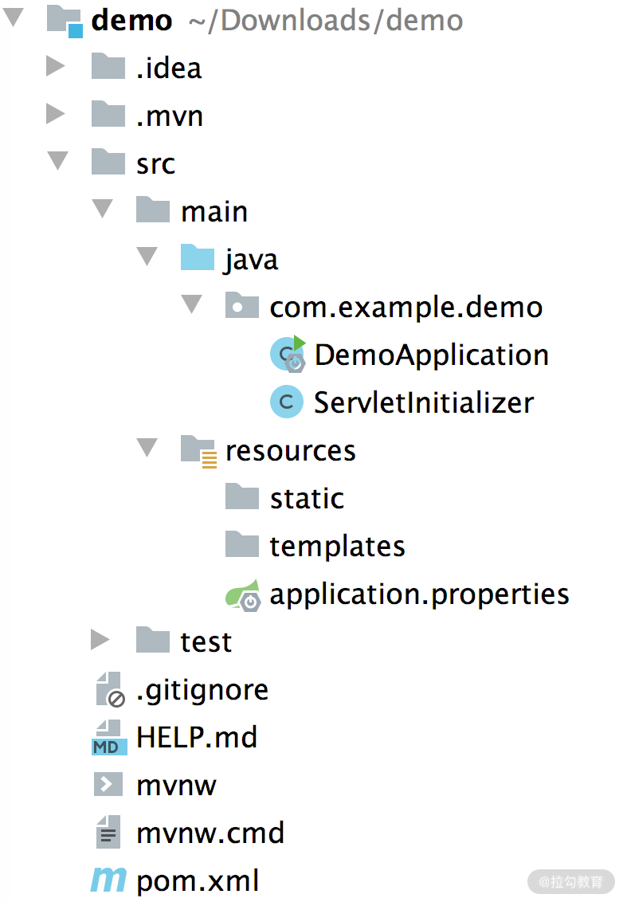
Spring Boot 示例项目的结构图
接下来我们打开 pom.xml 文件，看到其中已经自动添加了 Spring Boot 的全部依赖，此时只需要添加 mysql-connector-java 依赖以及 MyBatis-Plus 依赖即可（目前 MyBatis-Plus 最新版本是 3.4.2）：
<dependency>
<groupId>com.baomidou</groupId>
<artifactId>mybatis-plus-boot-starter</artifactId>
<version>3.4.2</version>
</dependency>
<dependency>
<groupId>mysql</groupId>
<artifactId>mysql-connector-java</artifactId>
</dependency>
再接下来，我们修改 application.properties 文件，添加数据库的相关配置：
spring.datasource.driver-class-name=com.mysql.cj.jdbc.Driver
spring.datasource.url=jdbc:mysql://localhost:3306/test?useUnicode=true&characterEncoding=UTF-8
spring.datasource.username=root
spring.datasource.password=xxx
然后，我们开始编写 Customer 类和 CustomerMapper 接口，这两个类非常简单，Customer 类中需要定义 t_customer 表中各列对应的属性，如下所示：
@TableName(value = "t_customer") // 通过@TableName注解，指定Customer与 t_customer表的关联关系
public class Customer {
private Integer id;
private String name;
private String password;
private Long account;
// 省略上述字段的getter/setter方法，以及toString()方法
}
CustomerMapper 接口的定义更加简单，只需要继承 BaseMapper 即可，具体定义如下：
public interface CustomerMapper extends BaseMapper<Customer> {
// 无须提供任何方法定义，而是从BaseMapper继承
}
最后，我们修改一下这个 Spring Boot 项目的启动类 DemoApplication，在其中添加 @MapperScan 注解指定 Mapper 接口所在的包，该注解会自动进行扫描，DemoApplication 的具体实现如下：
@SpringBootApplication
@MapperScan("com.example.demo.mapper")
public class DemoApplication {
public static void main(String[] args) {
SpringApplication.run(DemoApplication.class, args);
}
}
完成上述示例的编写之后，我们可以添加一个测试用例来查询 t_customer 表中的数据，具体实现如下：
@RunWith(SpringRunner.class)
@SpringBootTest
class DemoApplicationTests {
@Autowired
private CustomerMapper customerMapper;
@Test
public void testSelect() {
Customer customer = new Customer();
customer.setId(1);
customer.setName("Bob");
customer.setPassword("pwd");
customer.setAccount(10097L);
int insert = customerMapper.insert(customer);
System.out.println("affect row num:" + insert);
List<Customer> userList = customerMapper.selectList(null);
userList.forEach(System.out::println);
}
}
执行该单元测试之后，得到如下输出：
affect row num:1
Customer{id=1, name='Bob', password='pwd', account=10097}
MyBatis-Plus 的基础使用示例就介绍到这里了。另外，MyBatis-Plus官方文档中还提供了很多核心功能的说明和介绍，同时 MyBatis-Plus 还提供了示例 GitHub 仓库，其中包含了非常多的 MyBatis-Plus 示例代码和使用技巧，非常值得你参考。
总结
在这一讲我们重点介绍了 MyBatis 相关的辅助工具以及在 MyBatis 之上衍生出来的扩展框架。
- 首先，分析了 MyBatis-Generator 工具，它可以根据我们已有的数据表快速生成 MyBatis 中的 Domain 类、Mapper 接口以及 Mapper.xml 文件。
- 然后，介绍了 MyBatis 分页插件—— PageHelper，PageHelper 可以让我们直接使用 RowBounds API 实现“内存分页”，同时也可以帮助我们实现对不同数据库产品的分页功能。
- 最后，还讲解了 MyBatis-Plus 框架，MyBatis-Plus 内置了默认的 DAO 和 Service 实现以及分页功能，可以大幅度提高开发效率，你也可以结合我展示的示例来帮助你快速上手 MyBatis-Plus 框架。
23 结束语 会使用只能默默“搬砖”，懂原理才能快速晋升
你好，我是杨四正，到这里 MyBatis 的核心内容就介绍差不多了，你可能也需要一段时间来回顾和消化这些内容。在最后这结束语部分，我就不讲知识点了，咱们换个风格，从另一个角度来聊聊我们程序员这份工作。
不得不说，现在互联网是一个越来越内卷的圈子了。不仅员工的工作时长一延再延，对员工的要求也是一升再升，就目前国内互联网的环境来看，很少有人能够一直奋斗在一线进行开发（当然，也有一些“骨骼惊奇、天赋异禀”的大佬，那就另当别论）。作为一名普通程序员，我们在做好本职工作之后，就需要花些时间来考虑一下如何“破圈”了。
我个人觉得，要想“破圈”，需要有下面几个方面的操作。
第一，选择一个上升期的行业或项目，也就是我们常说的“吃行业红利”。之所以把行业选择放在首位就是因为“选择大于努力”，在互联网这个大行业里面还有很多细分领域，例如，电商、在线教育、互联网医疗、短视频、各种游戏等，进入一个上升的行业或是上升的企业，拿到期权，等到公司上市是可以实现财富自由的。互联网的“造富”例子虽然减少了，但是依旧在不断发生，现在在风口上的“猪”依旧在飞。
第二，选对 Leader，也就是所谓的“抱对大腿”。Leader 的能力决定了我们当前工作的上限，不仅是互联网行业，其实各个行业都是一样的。在遇到超出我们权限的资源问题、协调问题的时候，我们是需要向 Leader 求助的，如果我们的 Leader 也解决不来，可想而知这项工作的阻力会有多么大，做起来有多么艰辛。而我们的工作大多是以结果为导向的，不出成绩的话，再苦再难也无法被别人认可，所以说，选择一个靠谱的 Leader 是很重要的。
第三，让自己变得可靠。在职场中，上级和下级之间是一个双向选择的关系，每个 Leader 身边围绕的人数是有限的，就那么几个位置。当我们千辛万苦找到一个靠谱的 Leader 之后，如何让 Leader 选择我们呢？那就是让我们自己变得靠谱。
举个例子，我懂 MyBatis，我邻桌同事也懂 MyBatis，我带了没几天的应届生也知道如何用 MyBatis 写动态 SQL 代码了，看起来都只是个熟练工。假设碰到一个 MyBatis 的问题，应届生不懂，同事不懂，我也不懂，单就 MyBatis 这项技术来说，我们在 Leader 眼里是完全没有区别的，扩展到其他技术也是一样的。但如果在别人解决不了问题的时候，我能解决，如此往复几次，同事有什么技术难题都会请教我，Leader 在决定技术方案的时候也会咨询我，这时我的影响力就会发生变化。
上面只是以 MyBatis 这种开源项目为例，其实面对公司内的项目也是一样，很多程序员会觉得自己公司项目代码写得非常垃圾，不愿意花时间读，这是非常错误的想法。其他同事都对“垃圾代码”嗤之以鼻，但是你能对“垃圾代码”了若指掌、如数家珍，这时 Leader 看到你这个人把一件大家不喜欢的事情都能做到八九十分，也会让 Leader 对你形成信任和依赖，更别说你可以通过阅读这些“垃圾代码”解决工作中的疑难问题了。Leader 就只会觉得你靠谱，觉得有你在项目就没有问题，即使有问题你也能解决，你说方案哪里不合理那多半就是不合理了，也就让你成为一个 Leader 和同事眼中靠谱的人，这就是在“垃圾山”里淘到的“宝藏”。
第四，珍惜自己的时间，尽量将更多时间花到充实自己上，养成学习的惯性。我一直认为“拉勾教育 App”与手机里面的各种短视频 App、5v5 推塔 App、第一角色枪战类 App 是竞对，为什么这么说呢？因为这些 App 都是在竞争用户的时间，毕竟世界上最公平的事情就是每个人一天只有 24 小时。就算你守得了高地，推得了水晶，拿得了 5 杀，又能怎样呢？就算你杀得出 G 港，干得翻机场，拿得下 H 港，又能如何呢？都不如打开“拉勾教育 App”去学习、去巩固技能、去完善自己来得安心，所以需要养成学习的惯性。
数年之后，当你站到事业巅峰的时候，再回首，会感谢现在坚持学习的自己。
当然，如果你觉得我这门课程不错的话，也欢迎你推荐给身边的朋友。